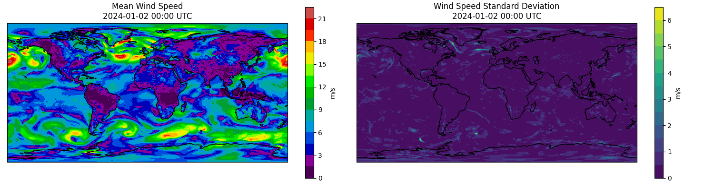

Note
Go to the end to download the full example code.
Huge Ensembles (HENS) Checkpoints#
Basic multi-checkpoint Huge Ensembles (HENS) inference workflow.
This example provides a basic example to load the Huge Ensemble checkpoints to perform ensemble inference. This notebook aims to demonstrate the foundations of running a multi-checkpoint workflow from Earth2Studio components. For more details about HENS, see:
Warning
We encourage users to familiarize themselves with the license restrictions of this model’s checkpoints.
For the complete HENS workflow, we encourage users to have a look at the HENS recipe which provides a end-to-end solution to leverage HENS for downstream analysis such as tropical cyclone tracking:
In this example you will learn:
How to load the HENS checkpoints with a custom model package
How to load the HENS perturbation method
How to create a simple ensemble inference loop
How to visualize results
# /// script
# dependencies = [
# "torch==2.11.0", # Match lock file to avoid torch-harmonics issue
# "earth2studio[sfno] @ git+https://github.com/NVIDIA/earth2studio.git@0.16.0",
# "cartopy",
# ]
# ///
Set Up#
First, import the necessary modules and set up our environment and load the required modules. HENS has checkpoints conveniently stored on HuggingFace that we will use. Rather than loading the default checkpoint from the original SFNO paper, create a model package that points to the specific HENS checkpoint we want to use instead.
This example also needs the following:
Prognostic Base Model: Use SFNO model architecture
earth2studio.models.px.SFNO.Datasource: Pull data from the GFS data api
earth2studio.data.GFS.Perturbation Method: HENS uses a novel perturbation method
earth2studio.perturbation.HemisphericCentredBredVector.Seeding Perturbation Method: Perturbation method to seed the Bred Vector
earth2studio.perturbation.CorrelatedSphericalGaussian.
import os
os.makedirs("outputs", exist_ok=True)
from dotenv import load_dotenv
load_dotenv() # TODO: make common example prep function
from earth2studio.data import GFS
from earth2studio.io import ZarrBackend
from earth2studio.models.auto import Package
from earth2studio.models.px import SFNO
from earth2studio.perturbation import (
CorrelatedSphericalGaussian,
HemisphericCentredBredVector,
)
from earth2studio.run import ensemble
# Set up two model packages for each checkpoint
# Note the modification of the cache location to avoid overwriting
model_package_1 = Package(
"hf://datasets/maheshankur10/hens/earth2mip_prod_registry/sfno_linear_74chq_sc2_layers8_edim620_wstgl2-epoch70_seed102",
cache_options={
"cache_storage": Package.default_cache("hens_1"),
"same_names": True,
},
)
model_package_2 = Package(
"hf://datasets/maheshankur10/hens/earth2mip_prod_registry/sfno_linear_74chq_sc2_layers8_edim620_wstgl2-epoch70_seed103",
cache_options={
"cache_storage": Package.default_cache("hens_2"),
"same_names": True,
},
)
# Create the data source
data = GFS()
Execute the Workflow#
Next we execute the ensemble workflow for each model but loop through each checkpoint. Note that the models themselves have not been loaded into memory yet, this will be done one at a time to minimize the memory footprint of inference on a GPU. Before the ensemble workflow can get executed the following set up is needed:
Initialize the SFNO model from checkpoint
Initialize the perturbation method with the prognostic model
Initialize the IO zarr store for this model
If multiple GPUs are being used, one could parallelize inference using different checkpoints on each card.
import gc
from datetime import datetime, timedelta
import numpy as np
import torch
start_date = datetime(2024, 1, 1)
nsteps = 4
nensemble = 2
for i, package in enumerate([model_package_1, model_package_2]):
# Load SFNO model from package
# HENS checkpoints use different inputs than default SFNO (inclusion of d2m)
# Can find this in the config.json, the load_model function in SFNO handles this
model = SFNO.load_model(package)
# Perturbation method
# Here we will simplify the process that's in the original paper for conciseness
noise_amplification = torch.zeros(model.input_coords()["variable"].shape[0])
index_z500 = list(model.input_coords()["variable"]).index("z500")
noise_amplification[index_z500] = 39.27 # z500 (0.35 * z500 skill)
noise_amplification = noise_amplification.reshape(1, 1, 1, -1, 1, 1)
seed_perturbation = CorrelatedSphericalGaussian(noise_amplitude=noise_amplification)
perturbation = HemisphericCentredBredVector(
model, data, seed_perturbation, noise_amplitude=noise_amplification
)
# IO object
io = ZarrBackend(
file_name=f"outputs/11_hens_{i}.zarr",
chunks={"ensemble": 1, "time": 1, "lead_time": 1},
backend_kwargs={"overwrite": True},
)
io = ensemble(
["2024-01-01"],
nsteps,
nensemble,
model,
data,
io,
perturbation,
batch_size=1,
output_coords={"variable": np.array(["u10m", "v10m"])},
)
print(io.root.tree())
# Do some manual clean up to free up VRAM
del model
del perturbation
gc.collect()
torch.cuda.empty_cache()
Downloading config.json: 0%| | 0.00/22.4k [00:00<?, ?B/s]
Downloading config.json: 100%|██████████| 22.4k/22.4k [00:00<00:00, 108kB/s]
Downloading config.json: 100%|██████████| 22.4k/22.4k [00:00<00:00, 108kB/s]
Downloading global_means.npy: 0%| | 0.00/720 [00:00<?, ?B/s]
Downloading global_means.npy: 100%|██████████| 720/720 [00:00<00:00, 4.13kB/s]
Downloading global_means.npy: 100%|██████████| 720/720 [00:00<00:00, 4.10kB/s]
Downloading global_stds.npy: 0%| | 0.00/720 [00:00<?, ?B/s]
Downloading global_stds.npy: 100%|██████████| 720/720 [00:00<00:00, 5.56kB/s]
Downloading global_stds.npy: 100%|██████████| 720/720 [00:00<00:00, 5.52kB/s]
Downloading orography.nc: 0%| | 0.00/2.50M [00:00<?, ?B/s]
Downloading orography.nc: 100%|██████████| 2.50M/2.50M [00:00<00:00, 19.7MB/s]
Downloading orography.nc: 100%|██████████| 2.50M/2.50M [00:00<00:00, 19.4MB/s]
Downloading land_mask.nc: 0%| | 0.00/748k [00:00<?, ?B/s]
Downloading land_mask.nc: 100%|██████████| 748k/748k [00:00<00:00, 6.65MB/s]
Downloading land_mask.nc: 100%|██████████| 748k/748k [00:00<00:00, 6.56MB/s]
Downloading best_ckpt_mp0.tar: 0%| | 0.00/8.31G [00:00<?, ?B/s]
Downloading best_ckpt_mp0.tar: 0%| | 10.0M/8.31G [00:00<03:09, 47.1MB/s]
Downloading best_ckpt_mp0.tar: 0%| | 40.0M/8.31G [00:00<00:58, 152MB/s]
Downloading best_ckpt_mp0.tar: 1%| | 70.0M/8.31G [00:00<00:43, 205MB/s]
Downloading best_ckpt_mp0.tar: 1%| | 100M/8.31G [00:00<00:36, 240MB/s]
Downloading best_ckpt_mp0.tar: 2%|▏ | 130M/8.31G [00:00<00:34, 252MB/s]
Downloading best_ckpt_mp0.tar: 2%|▏ | 170M/8.31G [00:00<00:29, 294MB/s]
Downloading best_ckpt_mp0.tar: 2%|▏ | 200M/8.31G [00:00<00:31, 281MB/s]
Downloading best_ckpt_mp0.tar: 3%|▎ | 230M/8.31G [00:00<00:30, 289MB/s]
Downloading best_ckpt_mp0.tar: 3%|▎ | 260M/8.31G [00:01<00:30, 283MB/s]
Downloading best_ckpt_mp0.tar: 3%|▎ | 290M/8.31G [00:01<00:30, 283MB/s]
Downloading best_ckpt_mp0.tar: 4%|▍ | 340M/8.31G [00:01<00:25, 330MB/s]
Downloading best_ckpt_mp0.tar: 5%|▍ | 390M/8.31G [00:01<00:23, 364MB/s]
Downloading best_ckpt_mp0.tar: 5%|▌ | 430M/8.31G [00:01<00:22, 377MB/s]
Downloading best_ckpt_mp0.tar: 6%|▌ | 470M/8.31G [00:01<00:25, 336MB/s]
Downloading best_ckpt_mp0.tar: 6%|▌ | 510M/8.31G [00:01<00:24, 339MB/s]
Downloading best_ckpt_mp0.tar: 6%|▋ | 550M/8.31G [00:01<00:25, 327MB/s]
Downloading best_ckpt_mp0.tar: 7%|▋ | 590M/8.31G [00:02<00:25, 330MB/s]
Downloading best_ckpt_mp0.tar: 7%|▋ | 630M/8.31G [00:02<00:25, 322MB/s]
Downloading best_ckpt_mp0.tar: 8%|▊ | 670M/8.31G [00:02<00:24, 334MB/s]
Downloading best_ckpt_mp0.tar: 8%|▊ | 710M/8.31G [00:02<00:24, 338MB/s]
Downloading best_ckpt_mp0.tar: 9%|▉ | 750M/8.31G [00:02<00:23, 352MB/s]
Downloading best_ckpt_mp0.tar: 9%|▉ | 800M/8.31G [00:02<00:22, 366MB/s]
Downloading best_ckpt_mp0.tar: 10%|▉ | 840M/8.31G [00:02<00:23, 347MB/s]
Downloading best_ckpt_mp0.tar: 10%|█ | 890M/8.31G [00:02<00:21, 378MB/s]
Downloading best_ckpt_mp0.tar: 11%|█ | 930M/8.31G [00:03<00:21, 372MB/s]
Downloading best_ckpt_mp0.tar: 11%|█▏ | 970M/8.31G [00:03<00:23, 344MB/s]
Downloading best_ckpt_mp0.tar: 12%|█▏ | 0.99G/8.31G [00:03<00:22, 356MB/s]
Downloading best_ckpt_mp0.tar: 12%|█▏ | 1.03G/8.31G [00:03<00:21, 365MB/s]
Downloading best_ckpt_mp0.tar: 13%|█▎ | 1.07G/8.31G [00:03<00:19, 390MB/s]
Downloading best_ckpt_mp0.tar: 14%|█▎ | 1.12G/8.31G [00:03<00:19, 398MB/s]
Downloading best_ckpt_mp0.tar: 14%|█▍ | 1.16G/8.31G [00:03<00:19, 384MB/s]
Downloading best_ckpt_mp0.tar: 14%|█▍ | 1.20G/8.31G [00:03<00:20, 374MB/s]
Downloading best_ckpt_mp0.tar: 15%|█▍ | 1.24G/8.31G [00:04<00:20, 365MB/s]
Downloading best_ckpt_mp0.tar: 15%|█▌ | 1.28G/8.31G [00:04<00:21, 359MB/s]
Downloading best_ckpt_mp0.tar: 16%|█▌ | 1.32G/8.31G [00:04<00:21, 353MB/s]
Downloading best_ckpt_mp0.tar: 16%|█▋ | 1.36G/8.31G [00:04<00:22, 338MB/s]
Downloading best_ckpt_mp0.tar: 17%|█▋ | 1.40G/8.31G [00:04<00:23, 322MB/s]
Downloading best_ckpt_mp0.tar: 17%|█▋ | 1.44G/8.31G [00:04<00:23, 317MB/s]
Downloading best_ckpt_mp0.tar: 18%|█▊ | 1.47G/8.31G [00:04<00:22, 326MB/s]
Downloading best_ckpt_mp0.tar: 18%|█▊ | 1.51G/8.31G [00:04<00:22, 329MB/s]
Downloading best_ckpt_mp0.tar: 19%|█▊ | 1.55G/8.31G [00:05<00:21, 345MB/s]
Downloading best_ckpt_mp0.tar: 19%|█▉ | 1.59G/8.31G [00:05<00:22, 321MB/s]
Downloading best_ckpt_mp0.tar: 20%|█▉ | 1.63G/8.31G [00:05<00:22, 315MB/s]
Downloading best_ckpt_mp0.tar: 20%|██ | 1.67G/8.31G [00:05<00:23, 306MB/s]
Downloading best_ckpt_mp0.tar: 21%|██ | 1.71G/8.31G [00:05<00:21, 326MB/s]
Downloading best_ckpt_mp0.tar: 21%|██ | 1.75G/8.31G [00:05<00:21, 325MB/s]
Downloading best_ckpt_mp0.tar: 22%|██▏ | 1.79G/8.31G [00:05<00:22, 312MB/s]
Downloading best_ckpt_mp0.tar: 22%|██▏ | 1.83G/8.31G [00:06<00:23, 301MB/s]
Downloading best_ckpt_mp0.tar: 22%|██▏ | 1.86G/8.31G [00:06<00:23, 290MB/s]
Downloading best_ckpt_mp0.tar: 23%|██▎ | 1.90G/8.31G [00:06<00:21, 327MB/s]
Downloading best_ckpt_mp0.tar: 23%|██▎ | 1.94G/8.31G [00:06<00:20, 341MB/s]
Downloading best_ckpt_mp0.tar: 24%|██▍ | 1.98G/8.31G [00:06<00:19, 346MB/s]
Downloading best_ckpt_mp0.tar: 24%|██▍ | 2.02G/8.31G [00:06<00:19, 347MB/s]
Downloading best_ckpt_mp0.tar: 25%|██▍ | 2.06G/8.31G [00:06<00:19, 349MB/s]
Downloading best_ckpt_mp0.tar: 25%|██▌ | 2.10G/8.31G [00:06<00:18, 358MB/s]
Downloading best_ckpt_mp0.tar: 26%|██▌ | 2.14G/8.31G [00:06<00:18, 356MB/s]
Downloading best_ckpt_mp0.tar: 26%|██▌ | 2.18G/8.31G [00:07<00:19, 344MB/s]
Downloading best_ckpt_mp0.tar: 27%|██▋ | 2.22G/8.31G [00:07<00:19, 329MB/s]
Downloading best_ckpt_mp0.tar: 27%|██▋ | 2.26G/8.31G [00:07<00:20, 323MB/s]
Downloading best_ckpt_mp0.tar: 28%|██▊ | 2.29G/8.31G [00:07<00:19, 328MB/s]
Downloading best_ckpt_mp0.tar: 28%|██▊ | 2.33G/8.31G [00:07<00:20, 320MB/s]
Downloading best_ckpt_mp0.tar: 29%|██▊ | 2.37G/8.31G [00:07<00:19, 334MB/s]
Downloading best_ckpt_mp0.tar: 29%|██▉ | 2.41G/8.31G [00:07<00:18, 337MB/s]
Downloading best_ckpt_mp0.tar: 29%|██▉ | 2.45G/8.31G [00:08<00:21, 286MB/s]
Downloading best_ckpt_mp0.tar: 30%|██▉ | 2.49G/8.31G [00:08<00:20, 299MB/s]
Downloading best_ckpt_mp0.tar: 30%|███ | 2.52G/8.31G [00:08<00:20, 301MB/s]
Downloading best_ckpt_mp0.tar: 31%|███ | 2.55G/8.31G [00:08<00:20, 295MB/s]
Downloading best_ckpt_mp0.tar: 31%|███ | 2.58G/8.31G [00:08<00:21, 283MB/s]
Downloading best_ckpt_mp0.tar: 31%|███▏ | 2.61G/8.31G [00:08<00:21, 282MB/s]
Downloading best_ckpt_mp0.tar: 32%|███▏ | 2.64G/8.31G [00:08<00:22, 277MB/s]
Downloading best_ckpt_mp0.tar: 32%|███▏ | 2.68G/8.31G [00:08<00:20, 292MB/s]
Downloading best_ckpt_mp0.tar: 33%|███▎ | 2.71G/8.31G [00:09<00:20, 300MB/s]
Downloading best_ckpt_mp0.tar: 33%|███▎ | 2.74G/8.31G [00:09<00:20, 298MB/s]
Downloading best_ckpt_mp0.tar: 33%|███▎ | 2.77G/8.31G [00:09<00:20, 285MB/s]
Downloading best_ckpt_mp0.tar: 34%|███▍ | 2.81G/8.31G [00:09<00:19, 297MB/s]
Downloading best_ckpt_mp0.tar: 34%|███▍ | 2.85G/8.31G [00:09<00:18, 312MB/s]
Downloading best_ckpt_mp0.tar: 35%|███▍ | 2.89G/8.31G [00:09<00:17, 334MB/s]
Downloading best_ckpt_mp0.tar: 35%|███▌ | 2.94G/8.31G [00:09<00:15, 363MB/s]
Downloading best_ckpt_mp0.tar: 36%|███▌ | 2.99G/8.31G [00:09<00:14, 387MB/s]
Downloading best_ckpt_mp0.tar: 36%|███▋ | 3.03G/8.31G [00:09<00:15, 365MB/s]
Downloading best_ckpt_mp0.tar: 37%|███▋ | 3.07G/8.31G [00:10<00:16, 344MB/s]
Downloading best_ckpt_mp0.tar: 37%|███▋ | 3.11G/8.31G [00:10<00:16, 334MB/s]
Downloading best_ckpt_mp0.tar: 38%|███▊ | 3.14G/8.31G [00:10<00:25, 221MB/s]
Downloading best_ckpt_mp0.tar: 38%|███▊ | 3.17G/8.31G [00:10<00:23, 238MB/s]
Downloading best_ckpt_mp0.tar: 39%|███▊ | 3.21G/8.31G [00:10<00:20, 262MB/s]
Downloading best_ckpt_mp0.tar: 39%|███▉ | 3.25G/8.31G [00:10<00:18, 287MB/s]
Downloading best_ckpt_mp0.tar: 40%|███▉ | 3.29G/8.31G [00:11<00:17, 310MB/s]
Downloading best_ckpt_mp0.tar: 40%|████ | 3.33G/8.31G [00:11<00:16, 333MB/s]
Downloading best_ckpt_mp0.tar: 41%|████ | 3.37G/8.31G [00:11<00:16, 319MB/s]
Downloading best_ckpt_mp0.tar: 41%|████ | 3.41G/8.31G [00:11<00:16, 310MB/s]
Downloading best_ckpt_mp0.tar: 41%|████▏ | 3.45G/8.31G [00:11<00:16, 311MB/s]
Downloading best_ckpt_mp0.tar: 42%|████▏ | 3.49G/8.31G [00:11<00:16, 319MB/s]
Downloading best_ckpt_mp0.tar: 42%|████▏ | 3.53G/8.31G [00:11<00:15, 341MB/s]
Downloading best_ckpt_mp0.tar: 43%|████▎ | 3.56G/8.31G [00:11<00:15, 329MB/s]
Downloading best_ckpt_mp0.tar: 43%|████▎ | 3.60G/8.31G [00:12<00:15, 330MB/s]
Downloading best_ckpt_mp0.tar: 44%|████▍ | 3.64G/8.31G [00:12<00:15, 321MB/s]
Downloading best_ckpt_mp0.tar: 44%|████▍ | 3.68G/8.31G [00:12<00:16, 304MB/s]
Downloading best_ckpt_mp0.tar: 45%|████▍ | 3.71G/8.31G [00:12<00:16, 302MB/s]
Downloading best_ckpt_mp0.tar: 45%|████▌ | 3.75G/8.31G [00:12<00:16, 300MB/s]
Downloading best_ckpt_mp0.tar: 45%|████▌ | 3.78G/8.31G [00:12<00:16, 297MB/s]
Downloading best_ckpt_mp0.tar: 46%|████▌ | 3.83G/8.31G [00:12<00:14, 339MB/s]
Downloading best_ckpt_mp0.tar: 47%|████▋ | 3.88G/8.31G [00:12<00:13, 360MB/s]
Downloading best_ckpt_mp0.tar: 47%|████▋ | 3.92G/8.31G [00:13<00:14, 337MB/s]
Downloading best_ckpt_mp0.tar: 48%|████▊ | 3.96G/8.31G [00:13<00:13, 341MB/s]
Downloading best_ckpt_mp0.tar: 48%|████▊ | 3.99G/8.31G [00:13<00:13, 345MB/s]
Downloading best_ckpt_mp0.tar: 49%|████▊ | 4.03G/8.31G [00:13<00:13, 346MB/s]
Downloading best_ckpt_mp0.tar: 49%|████▉ | 4.07G/8.31G [00:13<00:13, 346MB/s]
Downloading best_ckpt_mp0.tar: 49%|████▉ | 4.11G/8.31G [00:13<00:13, 346MB/s]
Downloading best_ckpt_mp0.tar: 50%|████▉ | 4.15G/8.31G [00:13<00:12, 345MB/s]
Downloading best_ckpt_mp0.tar: 50%|█████ | 4.19G/8.31G [00:13<00:12, 347MB/s]
Downloading best_ckpt_mp0.tar: 51%|█████ | 4.23G/8.31G [00:14<00:13, 320MB/s]
Downloading best_ckpt_mp0.tar: 51%|█████▏ | 4.27G/8.31G [00:14<00:13, 319MB/s]
Downloading best_ckpt_mp0.tar: 52%|█████▏ | 4.31G/8.31G [00:14<00:13, 318MB/s]
Downloading best_ckpt_mp0.tar: 52%|█████▏ | 4.35G/8.31G [00:14<00:13, 321MB/s]
Downloading best_ckpt_mp0.tar: 53%|█████▎ | 4.38G/8.31G [00:14<00:12, 334MB/s]
Downloading best_ckpt_mp0.tar: 53%|█████▎ | 4.42G/8.31G [00:14<00:12, 338MB/s]
Downloading best_ckpt_mp0.tar: 54%|█████▎ | 4.46G/8.31G [00:14<00:12, 342MB/s]
Downloading best_ckpt_mp0.tar: 54%|█████▍ | 4.50G/8.31G [00:14<00:11, 343MB/s]
Downloading best_ckpt_mp0.tar: 55%|█████▍ | 4.54G/8.31G [00:15<00:11, 345MB/s]
Downloading best_ckpt_mp0.tar: 55%|█████▌ | 4.58G/8.31G [00:15<00:11, 346MB/s]
Downloading best_ckpt_mp0.tar: 56%|█████▌ | 4.62G/8.31G [00:15<00:11, 347MB/s]
Downloading best_ckpt_mp0.tar: 56%|█████▌ | 4.66G/8.31G [00:15<00:11, 346MB/s]
Downloading best_ckpt_mp0.tar: 57%|█████▋ | 4.70G/8.31G [00:15<00:11, 347MB/s]
Downloading best_ckpt_mp0.tar: 57%|█████▋ | 4.74G/8.31G [00:15<00:10, 353MB/s]
Downloading best_ckpt_mp0.tar: 57%|█████▋ | 4.78G/8.31G [00:15<00:10, 353MB/s]
Downloading best_ckpt_mp0.tar: 58%|█████▊ | 4.81G/8.31G [00:15<00:11, 325MB/s]
Downloading best_ckpt_mp0.tar: 58%|█████▊ | 4.85G/8.31G [00:16<00:10, 340MB/s]
Downloading best_ckpt_mp0.tar: 59%|█████▉ | 4.89G/8.31G [00:16<00:10, 351MB/s]
Downloading best_ckpt_mp0.tar: 59%|█████▉ | 4.93G/8.31G [00:16<00:10, 361MB/s]
Downloading best_ckpt_mp0.tar: 60%|█████▉ | 4.97G/8.31G [00:16<00:10, 344MB/s]
Downloading best_ckpt_mp0.tar: 60%|██████ | 5.01G/8.31G [00:16<00:09, 354MB/s]
Downloading best_ckpt_mp0.tar: 61%|██████ | 5.05G/8.31G [00:16<00:09, 363MB/s]
Downloading best_ckpt_mp0.tar: 61%|██████ | 5.09G/8.31G [00:16<00:09, 368MB/s]
Downloading best_ckpt_mp0.tar: 62%|██████▏ | 5.13G/8.31G [00:16<00:09, 370MB/s]
Downloading best_ckpt_mp0.tar: 62%|██████▏ | 5.17G/8.31G [00:16<00:09, 373MB/s]
Downloading best_ckpt_mp0.tar: 63%|██████▎ | 5.21G/8.31G [00:17<00:09, 366MB/s]
Downloading best_ckpt_mp0.tar: 63%|██████▎ | 5.24G/8.31G [00:17<00:09, 333MB/s]
Downloading best_ckpt_mp0.tar: 64%|██████▎ | 5.28G/8.31G [00:17<00:09, 333MB/s]
Downloading best_ckpt_mp0.tar: 64%|██████▍ | 5.32G/8.31G [00:17<00:09, 336MB/s]
Downloading best_ckpt_mp0.tar: 65%|██████▍ | 5.36G/8.31G [00:17<00:09, 345MB/s]
Downloading best_ckpt_mp0.tar: 65%|██████▍ | 5.40G/8.31G [00:17<00:12, 258MB/s]
Downloading best_ckpt_mp0.tar: 66%|██████▌ | 5.45G/8.31G [00:17<00:10, 303MB/s]
Downloading best_ckpt_mp0.tar: 66%|██████▌ | 5.50G/8.31G [00:18<00:09, 335MB/s]
Downloading best_ckpt_mp0.tar: 67%|██████▋ | 5.54G/8.31G [00:18<00:08, 335MB/s]
Downloading best_ckpt_mp0.tar: 67%|██████▋ | 5.58G/8.31G [00:18<00:08, 340MB/s]
Downloading best_ckpt_mp0.tar: 68%|██████▊ | 5.62G/8.31G [00:18<00:08, 359MB/s]
Downloading best_ckpt_mp0.tar: 68%|██████▊ | 5.66G/8.31G [00:18<00:07, 365MB/s]
Downloading best_ckpt_mp0.tar: 69%|██████▊ | 5.70G/8.31G [00:18<00:08, 340MB/s]
Downloading best_ckpt_mp0.tar: 69%|██████▉ | 5.74G/8.31G [00:18<00:07, 349MB/s]
Downloading best_ckpt_mp0.tar: 70%|██████▉ | 5.79G/8.31G [00:18<00:07, 370MB/s]
Downloading best_ckpt_mp0.tar: 70%|███████ | 5.84G/8.31G [00:19<00:06, 387MB/s]
Downloading best_ckpt_mp0.tar: 71%|███████ | 5.89G/8.31G [00:19<00:06, 402MB/s]
Downloading best_ckpt_mp0.tar: 71%|███████▏ | 5.93G/8.31G [00:19<00:06, 404MB/s]
Downloading best_ckpt_mp0.tar: 72%|███████▏ | 5.97G/8.31G [00:19<00:06, 400MB/s]
Downloading best_ckpt_mp0.tar: 72%|███████▏ | 6.01G/8.31G [00:19<00:06, 386MB/s]
Downloading best_ckpt_mp0.tar: 73%|███████▎ | 6.04G/8.31G [00:19<00:06, 379MB/s]
Downloading best_ckpt_mp0.tar: 73%|███████▎ | 6.08G/8.31G [00:19<00:06, 376MB/s]
Downloading best_ckpt_mp0.tar: 74%|███████▎ | 6.12G/8.31G [00:19<00:06, 369MB/s]
Downloading best_ckpt_mp0.tar: 74%|███████▍ | 6.16G/8.31G [00:20<00:06, 362MB/s]
Downloading best_ckpt_mp0.tar: 75%|███████▍ | 6.20G/8.31G [00:20<00:06, 360MB/s]
Downloading best_ckpt_mp0.tar: 75%|███████▌ | 6.24G/8.31G [00:20<00:06, 365MB/s]
Downloading best_ckpt_mp0.tar: 76%|███████▌ | 6.29G/8.31G [00:20<00:05, 388MB/s]
Downloading best_ckpt_mp0.tar: 76%|███████▌ | 6.33G/8.31G [00:20<00:05, 388MB/s]
Downloading best_ckpt_mp0.tar: 77%|███████▋ | 6.38G/8.31G [00:20<00:05, 405MB/s]
Downloading best_ckpt_mp0.tar: 77%|███████▋ | 6.43G/8.31G [00:20<00:04, 418MB/s]
Downloading best_ckpt_mp0.tar: 78%|███████▊ | 6.47G/8.31G [00:20<00:04, 426MB/s]
Downloading best_ckpt_mp0.tar: 79%|███████▊ | 6.52G/8.31G [00:21<00:05, 364MB/s]
Downloading best_ckpt_mp0.tar: 79%|███████▉ | 6.56G/8.31G [00:21<00:05, 328MB/s]
Downloading best_ckpt_mp0.tar: 79%|███████▉ | 6.60G/8.31G [00:21<00:05, 318MB/s]
Downloading best_ckpt_mp0.tar: 80%|███████▉ | 6.64G/8.31G [00:21<00:05, 328MB/s]
Downloading best_ckpt_mp0.tar: 81%|████████ | 6.69G/8.31G [00:21<00:04, 359MB/s]
Downloading best_ckpt_mp0.tar: 81%|████████ | 6.73G/8.31G [00:21<00:04, 361MB/s]
Downloading best_ckpt_mp0.tar: 81%|████████▏ | 6.77G/8.31G [00:21<00:04, 348MB/s]
Downloading best_ckpt_mp0.tar: 82%|████████▏ | 6.81G/8.31G [00:21<00:04, 340MB/s]
Downloading best_ckpt_mp0.tar: 82%|████████▏ | 6.85G/8.31G [00:22<00:04, 351MB/s]
Downloading best_ckpt_mp0.tar: 83%|████████▎ | 6.88G/8.31G [00:22<00:04, 359MB/s]
Downloading best_ckpt_mp0.tar: 83%|████████▎ | 6.92G/8.31G [00:22<00:04, 365MB/s]
Downloading best_ckpt_mp0.tar: 84%|████████▍ | 6.96G/8.31G [00:22<00:03, 370MB/s]
Downloading best_ckpt_mp0.tar: 84%|████████▍ | 7.00G/8.31G [00:22<00:03, 374MB/s]
Downloading best_ckpt_mp0.tar: 85%|████████▍ | 7.04G/8.31G [00:22<00:03, 376MB/s]
Downloading best_ckpt_mp0.tar: 85%|████████▌ | 7.08G/8.31G [00:22<00:03, 337MB/s]
Downloading best_ckpt_mp0.tar: 86%|████████▌ | 7.12G/8.31G [00:22<00:03, 328MB/s]
Downloading best_ckpt_mp0.tar: 86%|████████▌ | 7.16G/8.31G [00:23<00:03, 335MB/s]
Downloading best_ckpt_mp0.tar: 87%|████████▋ | 7.20G/8.31G [00:23<00:03, 341MB/s]
Downloading best_ckpt_mp0.tar: 87%|████████▋ | 7.24G/8.31G [00:23<00:03, 343MB/s]
Downloading best_ckpt_mp0.tar: 88%|████████▊ | 7.28G/8.31G [00:23<00:03, 345MB/s]
Downloading best_ckpt_mp0.tar: 88%|████████▊ | 7.31G/8.31G [00:23<00:03, 353MB/s]
Downloading best_ckpt_mp0.tar: 88%|████████▊ | 7.35G/8.31G [00:23<00:02, 361MB/s]
Downloading best_ckpt_mp0.tar: 89%|████████▉ | 7.39G/8.31G [00:23<00:02, 358MB/s]
Downloading best_ckpt_mp0.tar: 89%|████████▉ | 7.43G/8.31G [00:23<00:02, 367MB/s]
Downloading best_ckpt_mp0.tar: 90%|████████▉ | 7.47G/8.31G [00:23<00:02, 350MB/s]
Downloading best_ckpt_mp0.tar: 90%|█████████ | 7.51G/8.31G [00:24<00:03, 232MB/s]
Downloading best_ckpt_mp0.tar: 91%|█████████ | 7.55G/8.31G [00:24<00:03, 266MB/s]
Downloading best_ckpt_mp0.tar: 91%|█████████▏| 7.59G/8.31G [00:24<00:02, 285MB/s]
Downloading best_ckpt_mp0.tar: 92%|█████████▏| 7.63G/8.31G [00:24<00:02, 307MB/s]
Downloading best_ckpt_mp0.tar: 92%|█████████▏| 7.67G/8.31G [00:24<00:02, 324MB/s]
Downloading best_ckpt_mp0.tar: 93%|█████████▎| 7.71G/8.31G [00:24<00:01, 335MB/s]
Downloading best_ckpt_mp0.tar: 93%|█████████▎| 7.74G/8.31G [00:24<00:01, 342MB/s]
Downloading best_ckpt_mp0.tar: 94%|█████████▎| 7.78G/8.31G [00:25<00:01, 349MB/s]
Downloading best_ckpt_mp0.tar: 94%|█████████▍| 7.82G/8.31G [00:25<00:01, 362MB/s]
Downloading best_ckpt_mp0.tar: 95%|█████████▍| 7.87G/8.31G [00:25<00:01, 384MB/s]
Downloading best_ckpt_mp0.tar: 95%|█████████▌| 7.91G/8.31G [00:25<00:01, 352MB/s]
Downloading best_ckpt_mp0.tar: 96%|█████████▌| 7.95G/8.31G [00:25<00:01, 346MB/s]
Downloading best_ckpt_mp0.tar: 96%|█████████▌| 7.99G/8.31G [00:25<00:00, 358MB/s]
Downloading best_ckpt_mp0.tar: 97%|█████████▋| 8.03G/8.31G [00:25<00:00, 367MB/s]
Downloading best_ckpt_mp0.tar: 97%|█████████▋| 8.07G/8.31G [00:25<00:00, 370MB/s]
Downloading best_ckpt_mp0.tar: 98%|█████████▊| 8.11G/8.31G [00:26<00:00, 376MB/s]
Downloading best_ckpt_mp0.tar: 98%|█████████▊| 8.14G/8.31G [00:26<00:00, 372MB/s]
Downloading best_ckpt_mp0.tar: 98%|█████████▊| 8.18G/8.31G [00:26<00:00, 363MB/s]
Downloading best_ckpt_mp0.tar: 99%|█████████▉| 8.22G/8.31G [00:26<00:00, 367MB/s]
Downloading best_ckpt_mp0.tar: 99%|█████████▉| 8.26G/8.31G [00:26<00:00, 374MB/s]
Downloading best_ckpt_mp0.tar: 100%|█████████▉| 8.30G/8.31G [00:26<00:00, 381MB/s]
Downloading best_ckpt_mp0.tar: 100%|██████████| 8.31G/8.31G [00:26<00:00, 335MB/s]
2026-06-29 17:21:43.425 | INFO | earth2studio.run:ensemble:400 - Running ensemble inference!
2026-06-29 17:21:43.425 | INFO | earth2studio.run:ensemble:407 - Inference device: cuda
Fetching GFS data: 0%| | 0/74 [00:00<?, ?it/s]
2026-06-29 17:21:44.831 | DEBUG | earth2studio.data.gfs:fetch_array:369 - Fetching GFS grib file: noaa-gfs-bdp-pds/gfs.20240101/00/atmos/gfs.t00z.pgrb2.0p25.f000 232400432-586007
Fetching GFS data: 0%| | 0/74 [00:00<?, ?it/s]
2026-06-29 17:21:44.850 | DEBUG | earth2studio.data.gfs:fetch_array:369 - Fetching GFS grib file: noaa-gfs-bdp-pds/gfs.20240101/00/atmos/gfs.t00z.pgrb2.0p25.f000 406629528-962408
Fetching GFS data: 0%| | 0/74 [00:00<?, ?it/s]
2026-06-29 17:21:44.862 | DEBUG | earth2studio.data.gfs:fetch_array:369 - Fetching GFS grib file: noaa-gfs-bdp-pds/gfs.20240101/00/atmos/gfs.t00z.pgrb2.0p25.f000 289307267-851916
Fetching GFS data: 0%| | 0/74 [00:00<?, ?it/s]
2026-06-29 17:21:44.874 | DEBUG | earth2studio.data.gfs:fetch_array:369 - Fetching GFS grib file: noaa-gfs-bdp-pds/gfs.20240101/00/atmos/gfs.t00z.pgrb2.0p25.f000 165935718-1138677
Fetching GFS data: 0%| | 0/74 [00:00<?, ?it/s]
2026-06-29 17:21:44.876 | DEBUG | earth2studio.data.gfs:fetch_array:369 - Fetching GFS grib file: noaa-gfs-bdp-pds/gfs.20240101/00/atmos/gfs.t00z.pgrb2.0p25.f000 199934883-595444
Fetching GFS data: 0%| | 0/74 [00:00<?, ?it/s]
2026-06-29 17:21:44.888 | DEBUG | earth2studio.data.gfs:fetch_array:369 - Fetching GFS grib file: noaa-gfs-bdp-pds/gfs.20240101/00/atmos/gfs.t00z.pgrb2.0p25.f000 387322476-948106
Fetching GFS data: 0%| | 0/74 [00:00<?, ?it/s]
2026-06-29 17:21:44.899 | DEBUG | earth2studio.data.gfs:fetch_array:369 - Fetching GFS grib file: noaa-gfs-bdp-pds/gfs.20240101/00/atmos/gfs.t00z.pgrb2.0p25.f000 346879212-932889
Fetching GFS data: 0%| | 0/74 [00:00<?, ?it/s]
2026-06-29 17:21:44.900 | DEBUG | earth2studio.data.gfs:fetch_array:369 - Fetching GFS grib file: noaa-gfs-bdp-pds/gfs.20240101/00/atmos/gfs.t00z.pgrb2.0p25.f000 383286081-1212507
Fetching GFS data: 0%| | 0/74 [00:00<?, ?it/s]
2026-06-29 17:21:44.901 | DEBUG | earth2studio.data.gfs:fetch_array:369 - Fetching GFS grib file: noaa-gfs-bdp-pds/gfs.20240101/00/atmos/gfs.t00z.pgrb2.0p25.f000 452597070-961302
Fetching GFS data: 0%| | 0/74 [00:00<?, ?it/s]
2026-06-29 17:21:44.913 | DEBUG | earth2studio.data.gfs:fetch_array:369 - Fetching GFS grib file: noaa-gfs-bdp-pds/gfs.20240101/00/atmos/gfs.t00z.pgrb2.0p25.f000 290159183-752827
Fetching GFS data: 0%| | 0/74 [00:00<?, ?it/s]
2026-06-29 17:21:44.914 | DEBUG | earth2studio.data.gfs:fetch_array:369 - Fetching GFS grib file: noaa-gfs-bdp-pds/gfs.20240101/00/atmos/gfs.t00z.pgrb2.0p25.f000 148613430-492644
Fetching GFS data: 0%| | 0/74 [00:00<?, ?it/s]
2026-06-29 17:21:44.915 | DEBUG | earth2studio.data.gfs:fetch_array:369 - Fetching GFS grib file: noaa-gfs-bdp-pds/gfs.20240101/00/atmos/gfs.t00z.pgrb2.0p25.f000 143527711-755695
Fetching GFS data: 0%| | 0/74 [00:00<?, ?it/s]
2026-06-29 17:21:44.927 | DEBUG | earth2studio.data.gfs:fetch_array:369 - Fetching GFS grib file: noaa-gfs-bdp-pds/gfs.20240101/00/atmos/gfs.t00z.pgrb2.0p25.f000 274285343-895314
Fetching GFS data: 0%| | 0/74 [00:00<?, ?it/s]
2026-06-29 17:21:44.927 | DEBUG | earth2studio.data.gfs:fetch_array:369 - Fetching GFS grib file: noaa-gfs-bdp-pds/gfs.20240101/00/atmos/gfs.t00z.pgrb2.0p25.f000 164520517-765194
Fetching GFS data: 0%| | 0/74 [00:00<?, ?it/s]
2026-06-29 17:21:44.928 | DEBUG | earth2studio.data.gfs:fetch_array:369 - Fetching GFS grib file: noaa-gfs-bdp-pds/gfs.20240101/00/atmos/gfs.t00z.pgrb2.0p25.f000 0-993995
Fetching GFS data: 0%| | 0/74 [00:00<?, ?it/s]
2026-06-29 17:21:44.940 | DEBUG | earth2studio.data.gfs:fetch_array:369 - Fetching GFS grib file: noaa-gfs-bdp-pds/gfs.20240101/00/atmos/gfs.t00z.pgrb2.0p25.f000 226457235-723507
Fetching GFS data: 0%| | 0/74 [00:00<?, ?it/s]
2026-06-29 17:21:44.941 | DEBUG | earth2studio.data.gfs:fetch_array:369 - Fetching GFS grib file: noaa-gfs-bdp-pds/gfs.20240101/00/atmos/gfs.t00z.pgrb2.0p25.f000 194463909-743465
Fetching GFS data: 0%| | 0/74 [00:00<?, ?it/s]
2026-06-29 17:21:44.953 | DEBUG | earth2studio.data.gfs:fetch_array:369 - Fetching GFS grib file: noaa-gfs-bdp-pds/gfs.20240101/00/atmos/gfs.t00z.pgrb2.0p25.f000 292088625-1244938
Fetching GFS data: 0%| | 0/74 [00:00<?, ?it/s]
2026-06-29 17:21:44.954 | DEBUG | earth2studio.data.gfs:fetch_array:369 - Fetching GFS grib file: noaa-gfs-bdp-pds/gfs.20240101/00/atmos/gfs.t00z.pgrb2.0p25.f000 295659093-896559
Fetching GFS data: 0%| | 0/74 [00:00<?, ?it/s]
2026-06-29 17:21:44.954 | DEBUG | earth2studio.data.gfs:fetch_array:369 - Fetching GFS grib file: noaa-gfs-bdp-pds/gfs.20240101/00/atmos/gfs.t00z.pgrb2.0p25.f000 163781343-739174
Fetching GFS data: 0%| | 0/74 [00:00<?, ?it/s]
2026-06-29 17:21:44.955 | DEBUG | earth2studio.data.gfs:fetch_array:369 - Fetching GFS grib file: noaa-gfs-bdp-pds/gfs.20240101/00/atmos/gfs.t00z.pgrb2.0p25.f000 329739828-930772
Fetching GFS data: 0%| | 0/74 [00:00<?, ?it/s]
2026-06-29 17:21:44.967 | DEBUG | earth2studio.data.gfs:fetch_array:369 - Fetching GFS grib file: noaa-gfs-bdp-pds/gfs.20240101/00/atmos/gfs.t00z.pgrb2.0p25.f000 184782162-755841
Fetching GFS data: 0%| | 0/74 [00:00<?, ?it/s]
2026-06-29 17:21:44.968 | DEBUG | earth2studio.data.gfs:fetch_array:369 - Fetching GFS grib file: noaa-gfs-bdp-pds/gfs.20240101/00/atmos/gfs.t00z.pgrb2.0p25.f000 451628742-968328
Fetching GFS data: 0%| | 0/74 [00:00<?, ?it/s]
2026-06-29 17:21:44.980 | DEBUG | earth2studio.data.gfs:fetch_array:369 - Fetching GFS grib file: noaa-gfs-bdp-pds/gfs.20240101/00/atmos/gfs.t00z.pgrb2.0p25.f000 247139652-717479
Fetching GFS data: 0%| | 0/74 [00:00<?, ?it/s]
2026-06-29 17:21:44.992 | DEBUG | earth2studio.data.gfs:fetch_array:369 - Fetching GFS grib file: noaa-gfs-bdp-pds/gfs.20240101/00/atmos/gfs.t00z.pgrb2.0p25.f000 179198897-973788
Fetching GFS data: 0%| | 0/74 [00:00<?, ?it/s]
2026-06-29 17:21:44.993 | DEBUG | earth2studio.data.gfs:fetch_array:369 - Fetching GFS grib file: noaa-gfs-bdp-pds/gfs.20240101/00/atmos/gfs.t00z.pgrb2.0p25.f000 323956279-837771
Fetching GFS data: 0%| | 0/74 [00:00<?, ?it/s]
2026-06-29 17:21:45.005 | DEBUG | earth2studio.data.gfs:fetch_array:369 - Fetching GFS grib file: noaa-gfs-bdp-pds/gfs.20240101/00/atmos/gfs.t00z.pgrb2.0p25.f000 184050412-731750
Fetching GFS data: 0%| | 0/74 [00:00<?, ?it/s]
2026-06-29 17:21:45.006 | DEBUG | earth2studio.data.gfs:fetch_array:369 - Fetching GFS grib file: noaa-gfs-bdp-pds/gfs.20240101/00/atmos/gfs.t00z.pgrb2.0p25.f000 270785488-1177846
Fetching GFS data: 0%| | 0/74 [00:00<?, ?it/s]
2026-06-29 17:21:45.006 | DEBUG | earth2studio.data.gfs:fetch_array:369 - Fetching GFS grib file: noaa-gfs-bdp-pds/gfs.20240101/00/atmos/gfs.t00z.pgrb2.0p25.f000 180172685-913532
Fetching GFS data: 0%| | 0/74 [00:00<?, ?it/s]
2026-06-29 17:21:45.007 | DEBUG | earth2studio.data.gfs:fetch_array:369 - Fetching GFS grib file: noaa-gfs-bdp-pds/gfs.20240101/00/atmos/gfs.t00z.pgrb2.0p25.f000 145318799-1019625
Fetching GFS data: 0%| | 0/74 [00:00<?, ?it/s]
2026-06-29 17:21:45.008 | DEBUG | earth2studio.data.gfs:fetch_array:369 - Fetching GFS grib file: noaa-gfs-bdp-pds/gfs.20240101/00/atmos/gfs.t00z.pgrb2.0p25.f000 190027998-577814
Fetching GFS data: 0%| | 0/74 [00:00<?, ?it/s]
2026-06-29 17:21:45.008 | DEBUG | earth2studio.data.gfs:fetch_array:369 - Fetching GFS grib file: noaa-gfs-bdp-pds/gfs.20240101/00/atmos/gfs.t00z.pgrb2.0p25.f000 174160271-736006
Fetching GFS data: 0%| | 0/74 [00:00<?, ?it/s]
2026-06-29 17:21:45.009 | DEBUG | earth2studio.data.gfs:fetch_array:369 - Fetching GFS grib file: noaa-gfs-bdp-pds/gfs.20240101/00/atmos/gfs.t00z.pgrb2.0p25.f000 386359113-963363
Fetching GFS data: 0%| | 0/74 [00:00<?, ?it/s]
2026-06-29 17:21:45.021 | DEBUG | earth2studio.data.gfs:fetch_array:369 - Fetching GFS grib file: noaa-gfs-bdp-pds/gfs.20240101/00/atmos/gfs.t00z.pgrb2.0p25.f000 193737151-726758
Fetching GFS data: 0%| | 0/74 [00:00<?, ?it/s]
2026-06-29 17:21:45.033 | DEBUG | earth2studio.data.gfs:fetch_array:369 - Fetching GFS grib file: noaa-gfs-bdp-pds/gfs.20240101/00/atmos/gfs.t00z.pgrb2.0p25.f000 249098202-1262404
Fetching GFS data: 0%| | 0/74 [00:00<?, ?it/s]
2026-06-29 17:21:45.034 | DEBUG | earth2studio.data.gfs:fetch_array:369 - Fetching GFS grib file: noaa-gfs-bdp-pds/gfs.20240101/00/atmos/gfs.t00z.pgrb2.0p25.f000 393705863-838502
Fetching GFS data: 0%| | 0/74 [00:00<?, ?it/s]
2026-06-29 17:21:45.046 | DEBUG | earth2studio.data.gfs:fetch_array:369 - Fetching GFS grib file: noaa-gfs-bdp-pds/gfs.20240101/00/atmos/gfs.t00z.pgrb2.0p25.f000 210217024-602993
Fetching GFS data: 0%| | 0/74 [00:00<?, ?it/s]
2026-06-29 17:21:45.047 | DEBUG | earth2studio.data.gfs:fetch_array:369 - Fetching GFS grib file: noaa-gfs-bdp-pds/gfs.20240101/00/atmos/gfs.t00z.pgrb2.0p25.f000 253514796-920355
Fetching GFS data: 0%| | 0/74 [00:00<?, ?it/s]
2026-06-29 17:21:45.059 | DEBUG | earth2studio.data.gfs:fetch_array:369 - Fetching GFS grib file: noaa-gfs-bdp-pds/gfs.20240101/00/atmos/gfs.t00z.pgrb2.0p25.f000 149106074-462399
Fetching GFS data: 0%| | 0/74 [00:00<?, ?it/s]
2026-06-29 17:21:45.060 | DEBUG | earth2studio.data.gfs:fetch_array:369 - Fetching GFS grib file: noaa-gfs-bdp-pds/gfs.20240101/00/atmos/gfs.t00z.pgrb2.0p25.f000 189450163-577835
Fetching GFS data: 0%| | 0/74 [00:00<?, ?it/s]
2026-06-29 17:21:45.060 | DEBUG | earth2studio.data.gfs:fetch_array:369 - Fetching GFS grib file: noaa-gfs-bdp-pds/gfs.20240101/00/atmos/gfs.t00z.pgrb2.0p25.f000 268038708-839499
Fetching GFS data: 0%| | 0/74 [00:00<?, ?it/s]
2026-06-29 17:21:45.061 | DEBUG | earth2studio.data.gfs:fetch_array:369 - Fetching GFS grib file: noaa-gfs-bdp-pds/gfs.20240101/00/atmos/gfs.t00z.pgrb2.0p25.f000 347812101-849637
Fetching GFS data: 0%| | 0/74 [00:00<?, ?it/s]
2026-06-29 17:21:45.061 | DEBUG | earth2studio.data.gfs:fetch_array:369 - Fetching GFS grib file: noaa-gfs-bdp-pds/gfs.20240101/00/atmos/gfs.t00z.pgrb2.0p25.f000 228474082-1138597
Fetching GFS data: 0%| | 0/74 [00:00<?, ?it/s]
2026-06-29 17:21:45.062 | DEBUG | earth2studio.data.gfs:fetch_array:369 - Fetching GFS grib file: noaa-gfs-bdp-pds/gfs.20240101/00/atmos/gfs.t00z.pgrb2.0p25.f000 407591936-940269
Fetching GFS data: 0%| | 0/74 [00:00<?, ?it/s]
2026-06-29 17:21:45.074 | DEBUG | earth2studio.data.gfs:fetch_array:369 - Fetching GFS grib file: noaa-gfs-bdp-pds/gfs.20240101/00/atmos/gfs.t00z.pgrb2.0p25.f000 176434139-1041731
Fetching GFS data: 0%| | 0/74 [00:00<?, ?it/s]
2026-06-29 17:21:45.075 | DEBUG | earth2studio.data.gfs:fetch_array:369 - Fetching GFS grib file: noaa-gfs-bdp-pds/gfs.20240101/00/atmos/gfs.t00z.pgrb2.0p25.f000 414179964-1179422
Fetching GFS data: 0%| | 0/74 [00:00<?, ?it/s]
2026-06-29 17:21:45.087 | DEBUG | earth2studio.data.gfs:fetch_array:369 - Fetching GFS grib file: noaa-gfs-bdp-pds/gfs.20240101/00/atmos/gfs.t00z.pgrb2.0p25.f000 275180657-890286
Fetching GFS data: 0%| | 0/74 [00:00<?, ?it/s]
2026-06-29 17:21:45.088 | DEBUG | earth2studio.data.gfs:fetch_array:369 - Fetching GFS grib file: noaa-gfs-bdp-pds/gfs.20240101/00/atmos/gfs.t00z.pgrb2.0p25.f000 204118947-720169
Fetching GFS data: 0%| | 0/74 [00:00<?, ?it/s]
2026-06-29 17:21:45.100 | DEBUG | earth2studio.data.gfs:fetch_array:369 - Fetching GFS grib file: noaa-gfs-bdp-pds/gfs.20240101/00/atmos/gfs.t00z.pgrb2.0p25.f000 231827443-572989
Fetching GFS data: 0%| | 0/74 [00:00<?, ?it/s]
2026-06-29 17:21:45.101 | DEBUG | earth2studio.data.gfs:fetch_array:369 - Fetching GFS grib file: noaa-gfs-bdp-pds/gfs.20240101/00/atmos/gfs.t00z.pgrb2.0p25.f000 144283406-743766
Fetching GFS data: 0%| | 0/74 [00:00<?, ?it/s]
2026-06-29 17:21:45.101 | DEBUG | earth2studio.data.gfs:fetch_array:369 - Fetching GFS grib file: noaa-gfs-bdp-pds/gfs.20240101/00/atmos/gfs.t00z.pgrb2.0p25.f000 204839116-753955
Fetching GFS data: 0%| | 0/74 [00:00<?, ?it/s]
2026-06-29 17:21:45.102 | DEBUG | earth2studio.data.gfs:fetch_array:369 - Fetching GFS grib file: noaa-gfs-bdp-pds/gfs.20240101/00/atmos/gfs.t00z.pgrb2.0p25.f000 206944850-1065961
Fetching GFS data: 0%| | 0/74 [00:00<?, ?it/s]
2026-06-29 17:21:45.103 | DEBUG | earth2studio.data.gfs:fetch_array:369 - Fetching GFS grib file: noaa-gfs-bdp-pds/gfs.20240101/00/atmos/gfs.t00z.pgrb2.0p25.f000 326166249-1225442
Fetching GFS data: 0%| | 0/74 [00:00<?, ?it/s]
2026-06-29 17:21:45.103 | DEBUG | earth2studio.data.gfs:fetch_array:369 - Fetching GFS grib file: noaa-gfs-bdp-pds/gfs.20240101/00/atmos/gfs.t00z.pgrb2.0p25.f000 353619033-939943
Fetching GFS data: 0%| | 0/74 [00:00<?, ?it/s]
2026-06-29 17:21:45.106 | DEBUG | earth2studio.data.gfs:fetch_array:369 - Fetching GFS grib file: noaa-gfs-bdp-pds/gfs.20240101/00/atmos/gfs.t00z.pgrb2.0p25.f000 296555652-890544
Fetching GFS data: 0%| | 0/74 [00:00<?, ?it/s]
2026-06-29 17:21:45.107 | DEBUG | earth2studio.data.gfs:fetch_array:369 - Fetching GFS grib file: noaa-gfs-bdp-pds/gfs.20240101/00/atmos/gfs.t00z.pgrb2.0p25.f000 170010298-904882
Fetching GFS data: 0%| | 0/74 [00:00<?, ?it/s]
2026-06-29 17:21:45.107 | DEBUG | earth2studio.data.gfs:fetch_array:369 - Fetching GFS grib file: noaa-gfs-bdp-pds/gfs.20240101/00/atmos/gfs.t00z.pgrb2.0p25.f000 210820017-615282
Fetching GFS data: 0%| | 0/74 [00:00<?, ?it/s]
2026-06-29 17:21:45.108 | DEBUG | earth2studio.data.gfs:fetch_array:369 - Fetching GFS grib file: noaa-gfs-bdp-pds/gfs.20240101/00/atmos/gfs.t00z.pgrb2.0p25.f000 391722290-987401
Fetching GFS data: 0%| | 0/74 [00:00<?, ?it/s]
2026-06-29 17:21:45.123 | DEBUG | earth2studio.data.gfs:fetch_array:369 - Fetching GFS grib file: noaa-gfs-bdp-pds/gfs.20240101/00/atmos/gfs.t00z.pgrb2.0p25.f000 196462617-1008822
Fetching GFS data: 0%| | 0/74 [00:00<?, ?it/s]
2026-06-29 17:21:45.124 | DEBUG | earth2studio.data.gfs:fetch_array:369 - Fetching GFS grib file: noaa-gfs-bdp-pds/gfs.20240101/00/atmos/gfs.t00z.pgrb2.0p25.f000 199346060-588823
Fetching GFS data: 0%| | 0/74 [00:00<?, ?it/s]
2026-06-29 17:21:45.141 | DEBUG | earth2studio.data.gfs:fetch_array:369 - Fetching GFS grib file: noaa-gfs-bdp-pds/gfs.20240101/00/atmos/gfs.t00z.pgrb2.0p25.f000 225640684-816551
Fetching GFS data: 0%| | 0/74 [00:00<?, ?it/s]
2026-06-29 17:21:45.142 | DEBUG | earth2studio.data.gfs:fetch_array:369 - Fetching GFS grib file: noaa-gfs-bdp-pds/gfs.20240101/00/atmos/gfs.t00z.pgrb2.0p25.f000 381424372-852801
Fetching GFS data: 0%| | 0/74 [00:00<?, ?it/s]
2026-06-29 17:21:45.142 | DEBUG | earth2studio.data.gfs:fetch_array:369 - Fetching GFS grib file: noaa-gfs-bdp-pds/gfs.20240101/00/atmos/gfs.t00z.pgrb2.0p25.f000 330670600-938837
Fetching GFS data: 0%| | 0/74 [00:00<?, ?it/s]
2026-06-29 17:21:45.158 | DEBUG | earth2studio.data.gfs:fetch_array:369 - Fetching GFS grib file: noaa-gfs-bdp-pds/gfs.20240101/00/atmos/gfs.t00z.pgrb2.0p25.f000 246334297-805355
Fetching GFS data: 0%| | 0/74 [00:00<?, ?it/s]
2026-06-29 17:21:45.176 | DEBUG | earth2studio.data.gfs:fetch_array:369 - Fetching GFS grib file: noaa-gfs-bdp-pds/gfs.20240101/00/atmos/gfs.t00z.pgrb2.0p25.f000 268878207-724790
Fetching GFS data: 0%| | 0/74 [00:00<?, ?it/s]
2026-06-29 17:21:45.177 | DEBUG | earth2studio.data.gfs:fetch_array:369 - Fetching GFS grib file: noaa-gfs-bdp-pds/gfs.20240101/00/atmos/gfs.t00z.pgrb2.0p25.f000 323061199-895080
Fetching GFS data: 0%| | 0/74 [00:00<?, ?it/s]
2026-06-29 17:21:45.193 | DEBUG | earth2studio.data.gfs:fetch_array:369 - Fetching GFS grib file: noaa-gfs-bdp-pds/gfs.20240101/00/atmos/gfs.t00z.pgrb2.0p25.f000 402321768-876246
Fetching GFS data: 0%| | 0/74 [00:00<?, ?it/s]
2026-06-29 17:21:45.208 | DEBUG | earth2studio.data.gfs:fetch_array:369 - Fetching GFS grib file: noaa-gfs-bdp-pds/gfs.20240101/00/atmos/gfs.t00z.pgrb2.0p25.f000 186591756-1053680
Fetching GFS data: 0%| | 0/74 [00:00<?, ?it/s]
2026-06-29 17:21:45.209 | DEBUG | earth2studio.data.gfs:fetch_array:369 - Fetching GFS grib file: noaa-gfs-bdp-pds/gfs.20240101/00/atmos/gfs.t00z.pgrb2.0p25.f000 350072351-1232650
Fetching GFS data: 0%| | 0/74 [00:00<?, ?it/s]
2026-06-29 17:21:45.210 | DEBUG | earth2studio.data.gfs:fetch_array:369 - Fetching GFS grib file: noaa-gfs-bdp-pds/gfs.20240101/00/atmos/gfs.t00z.pgrb2.0p25.f000 354558976-950206
Fetching GFS data: 0%| | 0/74 [00:00<?, ?it/s]
2026-06-29 17:21:45.211 | DEBUG | earth2studio.data.gfs:fetch_array:369 - Fetching GFS grib file: noaa-gfs-bdp-pds/gfs.20240101/00/atmos/gfs.t00z.pgrb2.0p25.f000 174896277-746582
Fetching GFS data: 0%| | 0/74 [00:00<?, ?it/s]
2026-06-29 17:21:45.211 | DEBUG | earth2studio.data.gfs:fetch_array:369 - Fetching GFS grib file: noaa-gfs-bdp-pds/gfs.20240101/00/atmos/gfs.t00z.pgrb2.0p25.f000 169090127-920171
Fetching GFS data: 0%| | 0/74 [00:00<?, ?it/s]
2026-06-29 17:21:45.212 | DEBUG | earth2studio.data.gfs:fetch_array:369 - Fetching GFS grib file: noaa-gfs-bdp-pds/gfs.20240101/00/atmos/gfs.t00z.pgrb2.0p25.f000 404382959-913875
Fetching GFS data: 0%| | 0/74 [00:00<?, ?it/s]
2026-06-29 17:21:45.213 | DEBUG | earth2studio.data.gfs:fetch_array:369 - Fetching GFS grib file: noaa-gfs-bdp-pds/gfs.20240101/00/atmos/gfs.t00z.pgrb2.0p25.f000 252556659-958137
Fetching GFS data: 0%| | 0/74 [00:00<?, ?it/s]
Fetching GFS data: 1%|▏ | 1/74 [00:00<00:29, 2.51it/s]
Fetching GFS data: 36%|███▋ | 27/74 [00:01<00:01, 26.22it/s]
Fetching GFS data: 41%|████ | 30/74 [00:01<00:01, 26.15it/s]
Fetching GFS data: 47%|████▋ | 35/74 [00:01<00:01, 28.75it/s]
Fetching GFS data: 53%|█████▎ | 39/74 [00:01<00:01, 26.73it/s]
Fetching GFS data: 59%|█████▉ | 44/74 [00:01<00:00, 30.38it/s]
Fetching GFS data: 66%|██████▌ | 49/74 [00:01<00:00, 32.40it/s]
Fetching GFS data: 76%|███████▌ | 56/74 [00:01<00:00, 39.51it/s]
Fetching GFS data: 85%|████████▌ | 63/74 [00:02<00:00, 43.78it/s]
Fetching GFS data: 93%|█████████▎| 69/74 [00:02<00:00, 46.05it/s]
Fetching GFS data: 100%|██████████| 74/74 [00:02<00:00, 18.61it/s]
Fetching GFS data: 100%|██████████| 74/74 [00:02<00:00, 25.75it/s]
2026-06-29 17:21:48.001 | SUCCESS | earth2studio.run:ensemble:428 - Fetched data from GFS
2026-06-29 17:21:48.025 | INFO | earth2studio.run:ensemble:472 - Starting 2 Member Ensemble Inference with 2 number of batches.
Total Ensemble Batches: 0%| | 0/2 [00:00<?, ?it/s]
Fetching GFS data: 0%| | 0/296 [00:00<?, ?it/s]
2026-06-29 17:21:48.494 | DEBUG | earth2studio.data.gfs:fetch_array:369 - Fetching GFS grib file: noaa-gfs-bdp-pds/gfs.20231231/12/atmos/gfs.t12z.pgrb2.0p25.f000 183650695-972676
Fetching GFS data: 0%| | 0/296 [00:00<?, ?it/s]
Total Ensemble Batches: 0%| | 0/2 [00:00<?, ?it/s]
2026-06-29 17:21:48.497 | DEBUG | earth2studio.data.gfs:fetch_array:369 - Fetching GFS grib file: noaa-gfs-bdp-pds/gfs.20231231/18/atmos/gfs.t18z.pgrb2.0p25.f000 236529889-574678
Fetching GFS data: 0%| | 0/296 [00:00<?, ?it/s]
Total Ensemble Batches: 0%| | 0/2 [00:00<?, ?it/s]
2026-06-29 17:21:48.500 | DEBUG | earth2studio.data.gfs:fetch_array:369 - Fetching GFS grib file: noaa-gfs-bdp-pds/gfs.20240101/00/atmos/gfs.t00z.pgrb2.0p25.f000 329739828-930772
Fetching GFS data: 0%| | 0/296 [00:00<?, ?it/s]
Total Ensemble Batches: 0%| | 0/2 [00:00<?, ?it/s]
2026-06-29 17:21:48.527 | DEBUG | earth2studio.data.gfs:fetch_array:369 - Fetching GFS grib file: noaa-gfs-bdp-pds/gfs.20231231/06/atmos/gfs.t06z.pgrb2.0p25.f000 395625686-986980
Fetching GFS data: 0%| | 0/296 [00:00<?, ?it/s]
Total Ensemble Batches: 0%| | 0/2 [00:00<?, ?it/s]
2026-06-29 17:21:48.530 | DEBUG | earth2studio.data.gfs:fetch_array:369 - Fetching GFS grib file: noaa-gfs-bdp-pds/gfs.20231231/12/atmos/gfs.t12z.pgrb2.0p25.f000 189280019-753310
Fetching GFS data: 0%| | 0/296 [00:00<?, ?it/s]
Total Ensemble Batches: 0%| | 0/2 [00:00<?, ?it/s]
2026-06-29 17:21:48.531 | DEBUG | earth2studio.data.gfs:fetch_array:369 - Fetching GFS grib file: noaa-gfs-bdp-pds/gfs.20231231/18/atmos/gfs.t18z.pgrb2.0p25.f000 252034627-722839
Fetching GFS data: 0%| | 0/296 [00:00<?, ?it/s]
Total Ensemble Batches: 0%| | 0/2 [00:00<?, ?it/s]
2026-06-29 17:21:48.533 | DEBUG | earth2studio.data.gfs:fetch_array:369 - Fetching GFS grib file: noaa-gfs-bdp-pds/gfs.20240101/00/atmos/gfs.t00z.pgrb2.0p25.f000 347812101-849637
Fetching GFS data: 0%| | 0/296 [00:00<?, ?it/s]
Total Ensemble Batches: 0%| | 0/2 [00:00<?, ?it/s]
2026-06-29 17:21:48.548 | DEBUG | earth2studio.data.gfs:fetch_array:369 - Fetching GFS grib file: noaa-gfs-bdp-pds/gfs.20231231/12/atmos/gfs.t12z.pgrb2.0p25.f000 194353089-579580
Fetching GFS data: 0%| | 0/296 [00:00<?, ?it/s]
Total Ensemble Batches: 0%| | 0/2 [00:00<?, ?it/s]
2026-06-29 17:21:48.549 | DEBUG | earth2studio.data.gfs:fetch_array:369 - Fetching GFS grib file: noaa-gfs-bdp-pds/gfs.20231231/18/atmos/gfs.t18z.pgrb2.0p25.f000 257599990-916338
Fetching GFS data: 0%| | 0/296 [00:00<?, ?it/s]
Total Ensemble Batches: 0%| | 0/2 [00:00<?, ?it/s]
2026-06-29 17:21:48.550 | DEBUG | earth2studio.data.gfs:fetch_array:369 - Fetching GFS grib file: noaa-gfs-bdp-pds/gfs.20240101/00/atmos/gfs.t00z.pgrb2.0p25.f000 353619033-939943
Fetching GFS data: 0%| | 0/296 [00:00<?, ?it/s]
Total Ensemble Batches: 0%| | 0/2 [00:00<?, ?it/s]
2026-06-29 17:21:48.562 | DEBUG | earth2studio.data.gfs:fetch_array:369 - Fetching GFS grib file: noaa-gfs-bdp-pds/gfs.20231231/06/atmos/gfs.t06z.pgrb2.0p25.f000 147055134-746039
Fetching GFS data: 0%| | 0/296 [00:00<?, ?it/s]
Total Ensemble Batches: 0%| | 0/2 [00:00<?, ?it/s]
2026-06-29 17:21:48.563 | DEBUG | earth2studio.data.gfs:fetch_array:369 - Fetching GFS grib file: noaa-gfs-bdp-pds/gfs.20231231/12/atmos/gfs.t12z.pgrb2.0p25.f000 199460585-743054
Fetching GFS data: 0%| | 0/296 [00:00<?, ?it/s]
Total Ensemble Batches: 0%| | 0/2 [00:00<?, ?it/s]
2026-06-29 17:21:48.564 | DEBUG | earth2studio.data.gfs:fetch_array:369 - Fetching GFS grib file: noaa-gfs-bdp-pds/gfs.20231231/18/atmos/gfs.t18z.pgrb2.0p25.f000 273976632-728286
Fetching GFS data: 0%| | 0/296 [00:00<?, ?it/s]
Total Ensemble Batches: 0%| | 0/2 [00:00<?, ?it/s]
2026-06-29 17:21:48.565 | DEBUG | earth2studio.data.gfs:fetch_array:369 - Fetching GFS grib file: noaa-gfs-bdp-pds/gfs.20240101/00/atmos/gfs.t00z.pgrb2.0p25.f000 381424372-852801
Fetching GFS data: 0%| | 0/296 [00:00<?, ?it/s]
Total Ensemble Batches: 0%| | 0/2 [00:00<?, ?it/s]
2026-06-29 17:21:48.577 | DEBUG | earth2studio.data.gfs:fetch_array:369 - Fetching GFS grib file: noaa-gfs-bdp-pds/gfs.20231231/12/atmos/gfs.t12z.pgrb2.0p25.f000 204760966-590133
Fetching GFS data: 0%| | 0/296 [00:00<?, ?it/s]
Total Ensemble Batches: 0%| | 0/2 [00:00<?, ?it/s]
2026-06-29 17:21:48.578 | DEBUG | earth2studio.data.gfs:fetch_array:369 - Fetching GFS grib file: noaa-gfs-bdp-pds/gfs.20231231/18/atmos/gfs.t18z.pgrb2.0p25.f000 279542923-898410
Fetching GFS data: 0%| | 0/296 [00:00<?, ?it/s]
Total Ensemble Batches: 0%| | 0/2 [00:00<?, ?it/s]
2026-06-29 17:21:48.579 | DEBUG | earth2studio.data.gfs:fetch_array:369 - Fetching GFS grib file: noaa-gfs-bdp-pds/gfs.20240101/00/atmos/gfs.t00z.pgrb2.0p25.f000 386359113-963363
Fetching GFS data: 0%| | 0/296 [00:00<?, ?it/s]
Total Ensemble Batches: 0%| | 0/2 [00:00<?, ?it/s]
2026-06-29 17:21:48.591 | DEBUG | earth2studio.data.gfs:fetch_array:369 - Fetching GFS grib file: noaa-gfs-bdp-pds/gfs.20231231/06/atmos/gfs.t06z.pgrb2.0p25.f000 167362967-767433
Fetching GFS data: 0%| | 0/296 [00:00<?, ?it/s]
Total Ensemble Batches: 0%| | 0/2 [00:00<?, ?it/s]
2026-06-29 17:21:48.592 | DEBUG | earth2studio.data.gfs:fetch_array:369 - Fetching GFS grib file: noaa-gfs-bdp-pds/gfs.20231231/12/atmos/gfs.t12z.pgrb2.0p25.f000 210135611-756844
Fetching GFS data: 0%| | 0/296 [00:00<?, ?it/s]
Total Ensemble Batches: 0%| | 0/2 [00:00<?, ?it/s]
2026-06-29 17:21:48.593 | DEBUG | earth2studio.data.gfs:fetch_array:369 - Fetching GFS grib file: noaa-gfs-bdp-pds/gfs.20231231/18/atmos/gfs.t18z.pgrb2.0p25.f000 295547922-758800
Fetching GFS data: 0%| | 0/296 [00:00<?, ?it/s]
Total Ensemble Batches: 0%| | 0/2 [00:00<?, ?it/s]
2026-06-29 17:21:48.593 | DEBUG | earth2studio.data.gfs:fetch_array:369 - Fetching GFS grib file: noaa-gfs-bdp-pds/gfs.20240101/00/atmos/gfs.t00z.pgrb2.0p25.f000 145318799-1019625
Fetching GFS data: 0%| | 0/296 [00:00<?, ?it/s]
Total Ensemble Batches: 0%| | 0/2 [00:00<?, ?it/s]
2026-06-29 17:21:48.605 | DEBUG | earth2studio.data.gfs:fetch_array:369 - Fetching GFS grib file: noaa-gfs-bdp-pds/gfs.20231231/12/atmos/gfs.t12z.pgrb2.0p25.f000 215757651-606283
Fetching GFS data: 0%| | 0/296 [00:00<?, ?it/s]
Total Ensemble Batches: 0%| | 0/2 [00:00<?, ?it/s]
2026-06-29 17:21:48.606 | DEBUG | earth2studio.data.gfs:fetch_array:369 - Fetching GFS grib file: noaa-gfs-bdp-pds/gfs.20231231/18/atmos/gfs.t18z.pgrb2.0p25.f000 301084617-899856
Fetching GFS data: 0%| | 0/296 [00:00<?, ?it/s]
Total Ensemble Batches: 0%| | 0/2 [00:00<?, ?it/s]
2026-06-29 17:21:48.607 | DEBUG | earth2studio.data.gfs:fetch_array:369 - Fetching GFS grib file: noaa-gfs-bdp-pds/gfs.20240101/00/atmos/gfs.t00z.pgrb2.0p25.f000 149106074-462399
Fetching GFS data: 0%| | 0/296 [00:00<?, ?it/s]
Total Ensemble Batches: 0%| | 0/2 [00:00<?, ?it/s]
2026-06-29 17:21:48.619 | DEBUG | earth2studio.data.gfs:fetch_array:369 - Fetching GFS grib file: noaa-gfs-bdp-pds/gfs.20231231/06/atmos/gfs.t06z.pgrb2.0p25.f000 177921943-752161
Fetching GFS data: 0%| | 0/296 [00:00<?, ?it/s]
Total Ensemble Batches: 0%| | 0/2 [00:00<?, ?it/s]
2026-06-29 17:21:48.620 | DEBUG | earth2studio.data.gfs:fetch_array:369 - Fetching GFS grib file: noaa-gfs-bdp-pds/gfs.20231231/12/atmos/gfs.t12z.pgrb2.0p25.f000 232267599-726560
Fetching GFS data: 0%| | 0/296 [00:00<?, ?it/s]
Total Ensemble Batches: 0%| | 0/2 [00:00<?, ?it/s]
2026-06-29 17:21:48.620 | DEBUG | earth2studio.data.gfs:fetch_array:369 - Fetching GFS grib file: noaa-gfs-bdp-pds/gfs.20231231/18/atmos/gfs.t18z.pgrb2.0p25.f000 329116923-847018
Fetching GFS data: 0%| | 0/296 [00:00<?, ?it/s]
Total Ensemble Batches: 0%| | 0/2 [00:00<?, ?it/s]
2026-06-29 17:21:48.633 | DEBUG | earth2studio.data.gfs:fetch_array:369 - Fetching GFS grib file: noaa-gfs-bdp-pds/gfs.20240101/00/atmos/gfs.t00z.pgrb2.0p25.f000 165935718-1138677
Fetching GFS data: 0%| | 0/296 [00:00<?, ?it/s]
Total Ensemble Batches: 0%| | 0/2 [00:00<?, ?it/s]
2026-06-29 17:21:48.645 | DEBUG | earth2studio.data.gfs:fetch_array:369 - Fetching GFS grib file: noaa-gfs-bdp-pds/gfs.20231231/12/atmos/gfs.t12z.pgrb2.0p25.f000 237907755-575171
Fetching GFS data: 0%| | 0/296 [00:00<?, ?it/s]
Total Ensemble Batches: 0%| | 0/2 [00:00<?, ?it/s]
2026-06-29 17:21:48.646 | DEBUG | earth2studio.data.gfs:fetch_array:369 - Fetching GFS grib file: noaa-gfs-bdp-pds/gfs.20231231/18/atmos/gfs.t18z.pgrb2.0p25.f000 334970306-938022
Fetching GFS data: 0%| | 0/296 [00:00<?, ?it/s]
Total Ensemble Batches: 0%| | 0/2 [00:00<?, ?it/s]
2026-06-29 17:21:48.647 | DEBUG | earth2studio.data.gfs:fetch_array:369 - Fetching GFS grib file: noaa-gfs-bdp-pds/gfs.20240101/00/atmos/gfs.t00z.pgrb2.0p25.f000 170010298-904882
Fetching GFS data: 0%| | 0/296 [00:00<?, ?it/s]
Total Ensemble Batches: 0%| | 0/2 [00:00<?, ?it/s]
2026-06-29 17:21:48.658 | DEBUG | earth2studio.data.gfs:fetch_array:369 - Fetching GFS grib file: noaa-gfs-bdp-pds/gfs.20231231/06/atmos/gfs.t06z.pgrb2.0p25.f000 188158210-757568
Fetching GFS data: 0%| | 0/296 [00:00<?, ?it/s]
Total Ensemble Batches: 0%| | 0/2 [00:00<?, ?it/s]
2026-06-29 17:21:48.659 | DEBUG | earth2studio.data.gfs:fetch_array:369 - Fetching GFS grib file: noaa-gfs-bdp-pds/gfs.20231231/12/atmos/gfs.t12z.pgrb2.0p25.f000 253521451-719382
Fetching GFS data: 0%| | 0/296 [00:00<?, ?it/s]
Total Ensemble Batches: 0%| | 0/2 [00:00<?, ?it/s]
2026-06-29 17:21:48.660 | DEBUG | earth2studio.data.gfs:fetch_array:369 - Fetching GFS grib file: noaa-gfs-bdp-pds/gfs.20231231/18/atmos/gfs.t18z.pgrb2.0p25.f000 353190489-858785
Fetching GFS data: 0%| | 0/296 [00:00<?, ?it/s]
Total Ensemble Batches: 0%| | 0/2 [00:00<?, ?it/s]
2026-06-29 17:21:48.661 | DEBUG | earth2studio.data.gfs:fetch_array:369 - Fetching GFS grib file: noaa-gfs-bdp-pds/gfs.20240101/00/atmos/gfs.t00z.pgrb2.0p25.f000 176434139-1041731
Fetching GFS data: 0%| | 0/296 [00:00<?, ?it/s]
Total Ensemble Batches: 0%| | 0/2 [00:00<?, ?it/s]
2026-06-29 17:21:48.673 | DEBUG | earth2studio.data.gfs:fetch_array:369 - Fetching GFS grib file: noaa-gfs-bdp-pds/gfs.20231231/12/atmos/gfs.t12z.pgrb2.0p25.f000 259087914-916036
Fetching GFS data: 0%| | 0/296 [00:00<?, ?it/s]
Total Ensemble Batches: 0%| | 0/2 [00:00<?, ?it/s]
2026-06-29 17:21:48.674 | DEBUG | earth2studio.data.gfs:fetch_array:369 - Fetching GFS grib file: noaa-gfs-bdp-pds/gfs.20231231/18/atmos/gfs.t18z.pgrb2.0p25.f000 359046224-949853
Fetching GFS data: 0%| | 0/296 [00:00<?, ?it/s]
Total Ensemble Batches: 0%| | 0/2 [00:00<?, ?it/s]
2026-06-29 17:21:48.675 | DEBUG | earth2studio.data.gfs:fetch_array:369 - Fetching GFS grib file: noaa-gfs-bdp-pds/gfs.20240101/00/atmos/gfs.t00z.pgrb2.0p25.f000 180172685-913532
Fetching GFS data: 0%| | 0/296 [00:00<?, ?it/s]
Total Ensemble Batches: 0%| | 0/2 [00:00<?, ?it/s]
2026-06-29 17:21:48.686 | DEBUG | earth2studio.data.gfs:fetch_array:369 - Fetching GFS grib file: noaa-gfs-bdp-pds/gfs.20240101/00/atmos/gfs.t00z.pgrb2.0p25.f000 323956279-837771
Fetching GFS data: 0%| | 0/296 [00:00<?, ?it/s]
Total Ensemble Batches: 0%| | 0/2 [00:00<?, ?it/s]
2026-06-29 17:21:48.698 | DEBUG | earth2studio.data.gfs:fetch_array:369 - Fetching GFS grib file: noaa-gfs-bdp-pds/gfs.20231231/06/atmos/gfs.t06z.pgrb2.0p25.f000 198184389-747202
Fetching GFS data: 0%| | 0/296 [00:00<?, ?it/s]
Total Ensemble Batches: 0%| | 0/2 [00:00<?, ?it/s]
2026-06-29 17:21:48.699 | DEBUG | earth2studio.data.gfs:fetch_array:369 - Fetching GFS grib file: noaa-gfs-bdp-pds/gfs.20231231/12/atmos/gfs.t12z.pgrb2.0p25.f000 275795645-726593
Fetching GFS data: 0%| | 0/296 [00:00<?, ?it/s]
Total Ensemble Batches: 0%| | 0/2 [00:00<?, ?it/s]
2026-06-29 17:21:48.700 | DEBUG | earth2studio.data.gfs:fetch_array:369 - Fetching GFS grib file: noaa-gfs-bdp-pds/gfs.20231231/18/atmos/gfs.t18z.pgrb2.0p25.f000 387075654-860051
Fetching GFS data: 0%| | 0/296 [00:00<?, ?it/s]
Total Ensemble Batches: 0%| | 0/2 [00:00<?, ?it/s]
2026-06-29 17:21:48.701 | DEBUG | earth2studio.data.gfs:fetch_array:369 - Fetching GFS grib file: noaa-gfs-bdp-pds/gfs.20240101/00/atmos/gfs.t00z.pgrb2.0p25.f000 186591756-1053680
Fetching GFS data: 0%| | 0/296 [00:00<?, ?it/s]
Total Ensemble Batches: 0%| | 0/2 [00:00<?, ?it/s]
2026-06-29 17:21:48.713 | DEBUG | earth2studio.data.gfs:fetch_array:369 - Fetching GFS grib file: noaa-gfs-bdp-pds/gfs.20231231/06/atmos/gfs.t06z.pgrb2.0p25.f000 456116956-963873
Fetching GFS data: 0%| | 0/296 [00:00<?, ?it/s]
Total Ensemble Batches: 0%| | 0/2 [00:00<?, ?it/s]
2026-06-29 17:21:48.714 | DEBUG | earth2studio.data.gfs:fetch_array:369 - Fetching GFS grib file: noaa-gfs-bdp-pds/gfs.20231231/06/atmos/gfs.t06z.pgrb2.0p25.f000 236071718-576224
Fetching GFS data: 0%| | 0/296 [00:00<?, ?it/s]
Total Ensemble Batches: 0%| | 0/2 [00:00<?, ?it/s]
2026-06-29 17:21:48.715 | DEBUG | earth2studio.data.gfs:fetch_array:369 - Fetching GFS grib file: noaa-gfs-bdp-pds/gfs.20231231/12/atmos/gfs.t12z.pgrb2.0p25.f000 281281791-898336
Fetching GFS data: 0%| | 0/296 [00:00<?, ?it/s]
Total Ensemble Batches: 0%| | 0/2 [00:00<?, ?it/s]
2026-06-29 17:21:48.716 | DEBUG | earth2studio.data.gfs:fetch_array:369 - Fetching GFS grib file: noaa-gfs-bdp-pds/gfs.20231231/18/atmos/gfs.t18z.pgrb2.0p25.f000 392065452-969982
Fetching GFS data: 0%| | 0/296 [00:00<?, ?it/s]
Total Ensemble Batches: 0%| | 0/2 [00:00<?, ?it/s]
2026-06-29 17:21:48.717 | DEBUG | earth2studio.data.gfs:fetch_array:369 - Fetching GFS grib file: noaa-gfs-bdp-pds/gfs.20240101/00/atmos/gfs.t00z.pgrb2.0p25.f000 190027998-577814
Fetching GFS data: 0%| | 0/296 [00:00<?, ?it/s]
Total Ensemble Batches: 0%| | 0/2 [00:00<?, ?it/s]
2026-06-29 17:21:48.728 | DEBUG | earth2studio.data.gfs:fetch_array:369 - Fetching GFS grib file: noaa-gfs-bdp-pds/gfs.20231231/06/atmos/gfs.t06z.pgrb2.0p25.f000 208928508-761990
Fetching GFS data: 0%| | 0/296 [00:00<?, ?it/s]
Total Ensemble Batches: 0%| | 0/2 [00:00<?, ?it/s]
2026-06-29 17:21:48.729 | DEBUG | earth2studio.data.gfs:fetch_array:369 - Fetching GFS grib file: noaa-gfs-bdp-pds/gfs.20231231/12/atmos/gfs.t12z.pgrb2.0p25.f000 297291574-754222
Fetching GFS data: 0%| | 0/296 [00:00<?, ?it/s]
Total Ensemble Batches: 0%| | 0/2 [00:00<?, ?it/s]
2026-06-29 17:21:48.730 | DEBUG | earth2studio.data.gfs:fetch_array:369 - Fetching GFS grib file: noaa-gfs-bdp-pds/gfs.20231231/18/atmos/gfs.t18z.pgrb2.0p25.f000 147098312-1020507
Fetching GFS data: 0%| | 0/296 [00:00<?, ?it/s]
Total Ensemble Batches: 0%| | 0/2 [00:00<?, ?it/s]
2026-06-29 17:21:48.731 | DEBUG | earth2studio.data.gfs:fetch_array:369 - Fetching GFS grib file: noaa-gfs-bdp-pds/gfs.20240101/00/atmos/gfs.t00z.pgrb2.0p25.f000 196462617-1008822
Fetching GFS data: 0%| | 0/296 [00:00<?, ?it/s]
Total Ensemble Batches: 0%| | 0/2 [00:00<?, ?it/s]
2026-06-29 17:21:48.743 | DEBUG | earth2studio.data.gfs:fetch_array:369 - Fetching GFS grib file: noaa-gfs-bdp-pds/gfs.20231231/12/atmos/gfs.t12z.pgrb2.0p25.f000 302819301-896743
Fetching GFS data: 0%| | 0/296 [00:00<?, ?it/s]
Total Ensemble Batches: 0%| | 0/2 [00:00<?, ?it/s]
2026-06-29 17:21:48.744 | DEBUG | earth2studio.data.gfs:fetch_array:369 - Fetching GFS grib file: noaa-gfs-bdp-pds/gfs.20231231/18/atmos/gfs.t18z.pgrb2.0p25.f000 150898120-463977
Fetching GFS data: 0%| | 0/296 [00:00<?, ?it/s]
Total Ensemble Batches: 0%| | 0/2 [00:00<?, ?it/s]
2026-06-29 17:21:48.746 | DEBUG | earth2studio.data.gfs:fetch_array:369 - Fetching GFS grib file: noaa-gfs-bdp-pds/gfs.20240101/00/atmos/gfs.t00z.pgrb2.0p25.f000 199934883-595444
Fetching GFS data: 0%| | 0/296 [00:00<?, ?it/s]
Total Ensemble Batches: 0%| | 0/2 [00:00<?, ?it/s]
2026-06-29 17:21:48.758 | DEBUG | earth2studio.data.gfs:fetch_array:369 - Fetching GFS grib file: noaa-gfs-bdp-pds/gfs.20231231/06/atmos/gfs.t06z.pgrb2.0p25.f000 230544483-732296
Fetching GFS data: 0%| | 0/296 [00:00<?, ?it/s]
Total Ensemble Batches: 0%| | 0/2 [00:00<?, ?it/s]
2026-06-29 17:21:48.759 | DEBUG | earth2studio.data.gfs:fetch_array:369 - Fetching GFS grib file: noaa-gfs-bdp-pds/gfs.20231231/12/atmos/gfs.t12z.pgrb2.0p25.f000 330695860-846471
Fetching GFS data: 0%| | 0/296 [00:00<?, ?it/s]
Total Ensemble Batches: 0%| | 0/2 [00:00<?, ?it/s]
2026-06-29 17:21:48.760 | DEBUG | earth2studio.data.gfs:fetch_array:369 - Fetching GFS grib file: noaa-gfs-bdp-pds/gfs.20231231/18/atmos/gfs.t18z.pgrb2.0p25.f000 167747263-1134797
Fetching GFS data: 0%| | 0/296 [00:00<?, ?it/s]
Total Ensemble Batches: 0%| | 0/2 [00:00<?, ?it/s]
2026-06-29 17:21:48.760 | DEBUG | earth2studio.data.gfs:fetch_array:369 - Fetching GFS grib file: noaa-gfs-bdp-pds/gfs.20240101/00/atmos/gfs.t00z.pgrb2.0p25.f000 206944850-1065961
Fetching GFS data: 0%| | 0/296 [00:00<?, ?it/s]
Total Ensemble Batches: 0%| | 0/2 [00:00<?, ?it/s]
2026-06-29 17:21:48.772 | DEBUG | earth2studio.data.gfs:fetch_array:369 - Fetching GFS grib file: noaa-gfs-bdp-pds/gfs.20231231/06/atmos/gfs.t06z.pgrb2.0p25.f000 214171943-607657
Fetching GFS data: 0%| | 0/296 [00:00<?, ?it/s]
Total Ensemble Batches: 0%| | 0/2 [00:00<?, ?it/s]
2026-06-29 17:21:48.774 | DEBUG | earth2studio.data.gfs:fetch_array:369 - Fetching GFS grib file: noaa-gfs-bdp-pds/gfs.20231231/12/atmos/gfs.t12z.pgrb2.0p25.f000 336687879-934577
Fetching GFS data: 0%| | 0/296 [00:00<?, ?it/s]
Total Ensemble Batches: 0%| | 0/2 [00:00<?, ?it/s]
2026-06-29 17:21:48.774 | DEBUG | earth2studio.data.gfs:fetch_array:369 - Fetching GFS grib file: noaa-gfs-bdp-pds/gfs.20231231/18/atmos/gfs.t18z.pgrb2.0p25.f000 172227940-905153
Fetching GFS data: 0%| | 0/296 [00:00<?, ?it/s]
Total Ensemble Batches: 0%| | 0/2 [00:00<?, ?it/s]
2026-06-29 17:21:48.775 | DEBUG | earth2studio.data.gfs:fetch_array:369 - Fetching GFS grib file: noaa-gfs-bdp-pds/gfs.20240101/00/atmos/gfs.t00z.pgrb2.0p25.f000 210820017-615282
Fetching GFS data: 0%| | 0/296 [00:00<?, ?it/s]
Total Ensemble Batches: 0%| | 0/2 [00:00<?, ?it/s]
2026-06-29 17:21:48.787 | DEBUG | earth2studio.data.gfs:fetch_array:369 - Fetching GFS grib file: noaa-gfs-bdp-pds/gfs.20231231/06/atmos/gfs.t06z.pgrb2.0p25.f000 251417951-723202
Fetching GFS data: 0%| | 0/296 [00:00<?, ?it/s]
Total Ensemble Batches: 0%| | 0/2 [00:00<?, ?it/s]
2026-06-29 17:21:48.788 | DEBUG | earth2studio.data.gfs:fetch_array:369 - Fetching GFS grib file: noaa-gfs-bdp-pds/gfs.20231231/12/atmos/gfs.t12z.pgrb2.0p25.f000 354932182-856465
Fetching GFS data: 0%| | 0/296 [00:00<?, ?it/s]
Total Ensemble Batches: 0%| | 0/2 [00:00<?, ?it/s]
2026-06-29 17:21:48.789 | DEBUG | earth2studio.data.gfs:fetch_array:369 - Fetching GFS grib file: noaa-gfs-bdp-pds/gfs.20231231/18/atmos/gfs.t18z.pgrb2.0p25.f000 179108822-1168912
Fetching GFS data: 0%| | 0/296 [00:00<?, ?it/s]
Total Ensemble Batches: 0%| | 0/2 [00:00<?, ?it/s]
2026-06-29 17:21:48.790 | DEBUG | earth2studio.data.gfs:fetch_array:369 - Fetching GFS grib file: noaa-gfs-bdp-pds/gfs.20240101/00/atmos/gfs.t00z.pgrb2.0p25.f000 228474082-1138597
Fetching GFS data: 0%| | 0/296 [00:00<?, ?it/s]
Total Ensemble Batches: 0%| | 0/2 [00:00<?, ?it/s]
2026-06-29 17:21:48.802 | DEBUG | earth2studio.data.gfs:fetch_array:369 - Fetching GFS grib file: noaa-gfs-bdp-pds/gfs.20231231/06/atmos/gfs.t06z.pgrb2.0p25.f000 256868469-544885
Fetching GFS data: 0%| | 0/296 [00:00<?, ?it/s]
Total Ensemble Batches: 0%| | 0/2 [00:00<?, ?it/s]
2026-06-29 17:21:48.803 | DEBUG | earth2studio.data.gfs:fetch_array:369 - Fetching GFS grib file: noaa-gfs-bdp-pds/gfs.20231231/12/atmos/gfs.t12z.pgrb2.0p25.f000 360780804-942376
Fetching GFS data: 0%| | 0/296 [00:00<?, ?it/s]
Total Ensemble Batches: 0%| | 0/2 [00:00<?, ?it/s]
2026-06-29 17:21:48.804 | DEBUG | earth2studio.data.gfs:fetch_array:369 - Fetching GFS grib file: noaa-gfs-bdp-pds/gfs.20231231/18/atmos/gfs.t18z.pgrb2.0p25.f000 183377778-912918
Fetching GFS data: 0%| | 0/296 [00:00<?, ?it/s]
Total Ensemble Batches: 0%| | 0/2 [00:00<?, ?it/s]
2026-06-29 17:21:48.804 | DEBUG | earth2studio.data.gfs:fetch_array:369 - Fetching GFS grib file: noaa-gfs-bdp-pds/gfs.20240101/00/atmos/gfs.t00z.pgrb2.0p25.f000 232400432-586007
Fetching GFS data: 0%| | 0/296 [00:00<?, ?it/s]
Total Ensemble Batches: 0%| | 0/2 [00:00<?, ?it/s]
2026-06-29 17:21:48.816 | DEBUG | earth2studio.data.gfs:fetch_array:369 - Fetching GFS grib file: noaa-gfs-bdp-pds/gfs.20231231/06/atmos/gfs.t06z.pgrb2.0p25.f000 272495637-727089
Fetching GFS data: 0%| | 0/296 [00:00<?, ?it/s]
Total Ensemble Batches: 0%| | 0/2 [00:00<?, ?it/s]
2026-06-29 17:21:48.817 | DEBUG | earth2studio.data.gfs:fetch_array:369 - Fetching GFS grib file: noaa-gfs-bdp-pds/gfs.20231231/12/atmos/gfs.t12z.pgrb2.0p25.f000 388773222-859658
Fetching GFS data: 0%| | 0/296 [00:00<?, ?it/s]
Total Ensemble Batches: 0%| | 0/2 [00:00<?, ?it/s]
2026-06-29 17:21:48.818 | DEBUG | earth2studio.data.gfs:fetch_array:369 - Fetching GFS grib file: noaa-gfs-bdp-pds/gfs.20231231/18/atmos/gfs.t18z.pgrb2.0p25.f000 189840662-1179194
Fetching GFS data: 0%| | 0/296 [00:00<?, ?it/s]
Total Ensemble Batches: 0%| | 0/2 [00:00<?, ?it/s]
2026-06-29 17:21:48.819 | DEBUG | earth2studio.data.gfs:fetch_array:369 - Fetching GFS grib file: noaa-gfs-bdp-pds/gfs.20240101/00/atmos/gfs.t00z.pgrb2.0p25.f000 249098202-1262404
Fetching GFS data: 0%| | 0/296 [00:00<?, ?it/s]
Total Ensemble Batches: 0%| | 0/2 [00:00<?, ?it/s]
2026-06-29 17:21:48.831 | DEBUG | earth2studio.data.gfs:fetch_array:369 - Fetching GFS grib file: noaa-gfs-bdp-pds/gfs.20231231/06/atmos/gfs.t06z.pgrb2.0p25.f000 277968948-896544
Fetching GFS data: 0%| | 0/296 [00:00<?, ?it/s]
Total Ensemble Batches: 0%| | 0/2 [00:00<?, ?it/s]
2026-06-29 17:21:48.832 | DEBUG | earth2studio.data.gfs:fetch_array:369 - Fetching GFS grib file: noaa-gfs-bdp-pds/gfs.20231231/12/atmos/gfs.t12z.pgrb2.0p25.f000 393767669-968511
Fetching GFS data: 0%| | 0/296 [00:00<?, ?it/s]
Total Ensemble Batches: 0%| | 0/2 [00:00<?, ?it/s]
2026-06-29 17:21:48.833 | DEBUG | earth2studio.data.gfs:fetch_array:369 - Fetching GFS grib file: noaa-gfs-bdp-pds/gfs.20231231/18/atmos/gfs.t18z.pgrb2.0p25.f000 193675823-578990
Fetching GFS data: 0%| | 0/296 [00:00<?, ?it/s]
Total Ensemble Batches: 0%| | 0/2 [00:00<?, ?it/s]
2026-06-29 17:21:48.834 | DEBUG | earth2studio.data.gfs:fetch_array:369 - Fetching GFS grib file: noaa-gfs-bdp-pds/gfs.20240101/00/atmos/gfs.t00z.pgrb2.0p25.f000 253514796-920355
Fetching GFS data: 0%| | 0/296 [00:00<?, ?it/s]
Total Ensemble Batches: 0%| | 0/2 [00:00<?, ?it/s]
2026-06-29 17:21:48.846 | DEBUG | earth2studio.data.gfs:fetch_array:369 - Fetching GFS grib file: noaa-gfs-bdp-pds/gfs.20231231/06/atmos/gfs.t06z.pgrb2.0p25.f000 293912488-745515
Fetching GFS data: 0%| | 0/296 [00:00<?, ?it/s]
Total Ensemble Batches: 0%| | 0/2 [00:00<?, ?it/s]
2026-06-29 17:21:48.847 | DEBUG | earth2studio.data.gfs:fetch_array:369 - Fetching GFS grib file: noaa-gfs-bdp-pds/gfs.20231231/12/atmos/gfs.t12z.pgrb2.0p25.f000 148724824-1026834
Fetching GFS data: 0%| | 0/296 [00:00<?, ?it/s]
Total Ensemble Batches: 0%| | 0/2 [00:00<?, ?it/s]
2026-06-29 17:21:48.848 | DEBUG | earth2studio.data.gfs:fetch_array:369 - Fetching GFS grib file: noaa-gfs-bdp-pds/gfs.20231231/18/atmos/gfs.t18z.pgrb2.0p25.f000 200082859-1168749
Fetching GFS data: 0%| | 0/296 [00:00<?, ?it/s]
Total Ensemble Batches: 0%| | 0/2 [00:00<?, ?it/s]
2026-06-29 17:21:48.849 | DEBUG | earth2studio.data.gfs:fetch_array:369 - Fetching GFS grib file: noaa-gfs-bdp-pds/gfs.20240101/00/atmos/gfs.t00z.pgrb2.0p25.f000 270785488-1177846
Fetching GFS data: 0%| | 0/296 [00:00<?, ?it/s]
Total Ensemble Batches: 0%| | 0/2 [00:00<?, ?it/s]
2026-06-29 17:21:48.861 | DEBUG | earth2studio.data.gfs:fetch_array:369 - Fetching GFS grib file: noaa-gfs-bdp-pds/gfs.20231231/06/atmos/gfs.t06z.pgrb2.0p25.f000 410028724-962181
Fetching GFS data: 0%| | 0/296 [00:00<?, ?it/s]
Total Ensemble Batches: 0%| | 0/2 [00:00<?, ?it/s]
2026-06-29 17:21:48.862 | DEBUG | earth2studio.data.gfs:fetch_array:369 - Fetching GFS grib file: noaa-gfs-bdp-pds/gfs.20231231/06/atmos/gfs.t06z.pgrb2.0p25.f000 299407315-892557
Fetching GFS data: 0%| | 0/296 [00:00<?, ?it/s]
Total Ensemble Batches: 0%| | 0/2 [00:00<?, ?it/s]
2026-06-29 17:21:48.863 | DEBUG | earth2studio.data.gfs:fetch_array:369 - Fetching GFS grib file: noaa-gfs-bdp-pds/gfs.20231231/12/atmos/gfs.t12z.pgrb2.0p25.f000 152534337-466715
Fetching GFS data: 0%| | 0/296 [00:00<?, ?it/s]
Total Ensemble Batches: 0%| | 0/2 [00:00<?, ?it/s]
2026-06-29 17:21:48.864 | DEBUG | earth2studio.data.gfs:fetch_array:369 - Fetching GFS grib file: noaa-gfs-bdp-pds/gfs.20231231/18/atmos/gfs.t18z.pgrb2.0p25.f000 203992655-596596
Fetching GFS data: 0%| | 0/296 [00:00<?, ?it/s]
Total Ensemble Batches: 0%| | 0/2 [00:00<?, ?it/s]
2026-06-29 17:21:48.865 | DEBUG | earth2studio.data.gfs:fetch_array:369 - Fetching GFS grib file: noaa-gfs-bdp-pds/gfs.20240101/00/atmos/gfs.t00z.pgrb2.0p25.f000 275180657-890286
Fetching GFS data: 0%| | 0/296 [00:00<?, ?it/s]
Total Ensemble Batches: 0%| | 0/2 [00:00<?, ?it/s]
2026-06-29 17:21:48.877 | DEBUG | earth2studio.data.gfs:fetch_array:369 - Fetching GFS grib file: noaa-gfs-bdp-pds/gfs.20231231/06/atmos/gfs.t06z.pgrb2.0p25.f000 327423370-840295
Fetching GFS data: 0%| | 0/296 [00:00<?, ?it/s]
Total Ensemble Batches: 0%| | 0/2 [00:00<?, ?it/s]
2026-06-29 17:21:48.878 | DEBUG | earth2studio.data.gfs:fetch_array:369 - Fetching GFS grib file: noaa-gfs-bdp-pds/gfs.20231231/12/atmos/gfs.t12z.pgrb2.0p25.f000 169411507-1139754
Fetching GFS data: 0%| | 0/296 [00:00<?, ?it/s]
Total Ensemble Batches: 0%| | 0/2 [00:00<?, ?it/s]
2026-06-29 17:21:48.879 | DEBUG | earth2studio.data.gfs:fetch_array:369 - Fetching GFS grib file: noaa-gfs-bdp-pds/gfs.20231231/18/atmos/gfs.t18z.pgrb2.0p25.f000 210882735-1186600
Fetching GFS data: 0%| | 0/296 [00:00<?, ?it/s]
Total Ensemble Batches: 0%| | 0/2 [00:00<?, ?it/s]
2026-06-29 17:21:48.880 | DEBUG | earth2studio.data.gfs:fetch_array:369 - Fetching GFS grib file: noaa-gfs-bdp-pds/gfs.20240101/00/atmos/gfs.t00z.pgrb2.0p25.f000 292088625-1244938
Fetching GFS data: 0%| | 0/296 [00:00<?, ?it/s]
Total Ensemble Batches: 0%| | 0/2 [00:00<?, ?it/s]
2026-06-29 17:21:48.892 | DEBUG | earth2studio.data.gfs:fetch_array:369 - Fetching GFS grib file: noaa-gfs-bdp-pds/gfs.20231231/06/atmos/gfs.t06z.pgrb2.0p25.f000 333255379-930566
Fetching GFS data: 0%| | 0/296 [00:00<?, ?it/s]
Total Ensemble Batches: 0%| | 0/2 [00:00<?, ?it/s]
2026-06-29 17:21:48.893 | DEBUG | earth2studio.data.gfs:fetch_array:369 - Fetching GFS grib file: noaa-gfs-bdp-pds/gfs.20231231/12/atmos/gfs.t12z.pgrb2.0p25.f000 173902504-907905
Fetching GFS data: 0%| | 0/296 [00:00<?, ?it/s]
Total Ensemble Batches: 0%| | 0/2 [00:00<?, ?it/s]
2026-06-29 17:21:48.894 | DEBUG | earth2studio.data.gfs:fetch_array:369 - Fetching GFS grib file: noaa-gfs-bdp-pds/gfs.20231231/18/atmos/gfs.t18z.pgrb2.0p25.f000 215007021-618021
Fetching GFS data: 0%| | 0/296 [00:00<?, ?it/s]
Total Ensemble Batches: 0%| | 0/2 [00:00<?, ?it/s]
2026-06-29 17:21:48.895 | DEBUG | earth2studio.data.gfs:fetch_array:369 - Fetching GFS grib file: noaa-gfs-bdp-pds/gfs.20240101/00/atmos/gfs.t00z.pgrb2.0p25.f000 296555652-890544
Fetching GFS data: 0%| | 0/296 [00:00<?, ?it/s]
Total Ensemble Batches: 0%| | 0/2 [00:00<?, ?it/s]
2026-06-29 17:21:48.907 | DEBUG | earth2studio.data.gfs:fetch_array:369 - Fetching GFS grib file: noaa-gfs-bdp-pds/gfs.20231231/06/atmos/gfs.t06z.pgrb2.0p25.f000 351476990-852387
Fetching GFS data: 0%| | 0/296 [00:00<?, ?it/s]
Total Ensemble Batches: 0%| | 0/2 [00:00<?, ?it/s]
2026-06-29 17:21:48.908 | DEBUG | earth2studio.data.gfs:fetch_array:369 - Fetching GFS grib file: noaa-gfs-bdp-pds/gfs.20231231/12/atmos/gfs.t12z.pgrb2.0p25.f000 180472580-1170586
Fetching GFS data: 0%| | 0/296 [00:00<?, ?it/s]
Total Ensemble Batches: 0%| | 0/2 [00:00<?, ?it/s]
2026-06-29 17:21:48.909 | DEBUG | earth2studio.data.gfs:fetch_array:369 - Fetching GFS grib file: noaa-gfs-bdp-pds/gfs.20231231/18/atmos/gfs.t18z.pgrb2.0p25.f000 232918171-1262978
Fetching GFS data: 0%| | 0/296 [00:00<?, ?it/s]
Total Ensemble Batches: 0%| | 0/2 [00:00<?, ?it/s]
2026-06-29 17:21:48.909 | DEBUG | earth2studio.data.gfs:fetch_array:369 - Fetching GFS grib file: noaa-gfs-bdp-pds/gfs.20240101/00/atmos/gfs.t00z.pgrb2.0p25.f000 326166249-1225442
Fetching GFS data: 0%| | 0/296 [00:00<?, ?it/s]
Total Ensemble Batches: 0%| | 0/2 [00:00<?, ?it/s]
2026-06-29 17:21:48.921 | DEBUG | earth2studio.data.gfs:fetch_array:369 - Fetching GFS grib file: noaa-gfs-bdp-pds/gfs.20231231/06/atmos/gfs.t06z.pgrb2.0p25.f000 357316538-939003
Fetching GFS data: 0%| | 0/296 [00:00<?, ?it/s]
Total Ensemble Batches: 0%| | 0/2 [00:00<?, ?it/s]
2026-06-29 17:21:48.923 | DEBUG | earth2studio.data.gfs:fetch_array:369 - Fetching GFS grib file: noaa-gfs-bdp-pds/gfs.20231231/12/atmos/gfs.t12z.pgrb2.0p25.f000 184623371-911795
Fetching GFS data: 0%| | 0/296 [00:00<?, ?it/s]
Total Ensemble Batches: 0%| | 0/2 [00:00<?, ?it/s]
2026-06-29 17:21:48.923 | DEBUG | earth2studio.data.gfs:fetch_array:369 - Fetching GFS grib file: noaa-gfs-bdp-pds/gfs.20231231/18/atmos/gfs.t18z.pgrb2.0p25.f000 237104567-587286
Fetching GFS data: 0%| | 0/296 [00:00<?, ?it/s]
Total Ensemble Batches: 0%| | 0/2 [00:00<?, ?it/s]
2026-06-29 17:21:48.924 | DEBUG | earth2studio.data.gfs:fetch_array:369 - Fetching GFS grib file: noaa-gfs-bdp-pds/gfs.20240101/00/atmos/gfs.t00z.pgrb2.0p25.f000 330670600-938837
Fetching GFS data: 0%| | 0/296 [00:00<?, ?it/s]
Total Ensemble Batches: 0%| | 0/2 [00:00<?, ?it/s]
2026-06-29 17:21:48.936 | DEBUG | earth2studio.data.gfs:fetch_array:369 - Fetching GFS grib file: noaa-gfs-bdp-pds/gfs.20231231/06/atmos/gfs.t06z.pgrb2.0p25.f000 0-1031836
Fetching GFS data: 0%| | 0/296 [00:00<?, ?it/s]
Total Ensemble Batches: 0%| | 0/2 [00:00<?, ?it/s]
2026-06-29 17:21:48.937 | DEBUG | earth2studio.data.gfs:fetch_array:369 - Fetching GFS grib file: noaa-gfs-bdp-pds/gfs.20231231/06/atmos/gfs.t06z.pgrb2.0p25.f000 385279214-852759
Fetching GFS data: 0%| | 0/296 [00:00<?, ?it/s]
Total Ensemble Batches: 0%| | 0/2 [00:00<?, ?it/s]
2026-06-29 17:21:48.938 | DEBUG | earth2studio.data.gfs:fetch_array:369 - Fetching GFS grib file: noaa-gfs-bdp-pds/gfs.20231231/12/atmos/gfs.t12z.pgrb2.0p25.f000 191094271-1176950
Fetching GFS data: 0%| | 0/296 [00:00<?, ?it/s]
Total Ensemble Batches: 0%| | 0/2 [00:00<?, ?it/s]
2026-06-29 17:21:48.939 | DEBUG | earth2studio.data.gfs:fetch_array:369 - Fetching GFS grib file: noaa-gfs-bdp-pds/gfs.20231231/18/atmos/gfs.t18z.pgrb2.0p25.f000 254001564-1267820
Fetching GFS data: 0%| | 0/296 [00:00<?, ?it/s]
Total Ensemble Batches: 0%| | 0/2 [00:00<?, ?it/s]
2026-06-29 17:21:48.940 | DEBUG | earth2studio.data.gfs:fetch_array:369 - Fetching GFS grib file: noaa-gfs-bdp-pds/gfs.20240101/00/atmos/gfs.t00z.pgrb2.0p25.f000 350072351-1232650
Fetching GFS data: 0%| | 0/296 [00:00<?, ?it/s]
Total Ensemble Batches: 0%| | 0/2 [00:00<?, ?it/s]
2026-06-29 17:21:48.952 | DEBUG | earth2studio.data.gfs:fetch_array:369 - Fetching GFS grib file: noaa-gfs-bdp-pds/gfs.20231231/06/atmos/gfs.t06z.pgrb2.0p25.f000 390243670-963082
Fetching GFS data: 0%| | 0/296 [00:00<?, ?it/s]
Total Ensemble Batches: 0%| | 0/2 [00:00<?, ?it/s]
2026-06-29 17:21:48.953 | DEBUG | earth2studio.data.gfs:fetch_array:369 - Fetching GFS grib file: noaa-gfs-bdp-pds/gfs.20231231/12/atmos/gfs.t12z.pgrb2.0p25.f000 194932669-578572
Fetching GFS data: 0%| | 0/296 [00:00<?, ?it/s]
Total Ensemble Batches: 0%| | 0/2 [00:00<?, ?it/s]
2026-06-29 17:21:48.954 | DEBUG | earth2studio.data.gfs:fetch_array:369 - Fetching GFS grib file: noaa-gfs-bdp-pds/gfs.20231231/18/atmos/gfs.t18z.pgrb2.0p25.f000 258516328-918758
Fetching GFS data: 0%| | 0/296 [00:00<?, ?it/s]
Total Ensemble Batches: 0%| | 0/2 [00:00<?, ?it/s]
2026-06-29 17:21:48.955 | DEBUG | earth2studio.data.gfs:fetch_array:369 - Fetching GFS grib file: noaa-gfs-bdp-pds/gfs.20240101/00/atmos/gfs.t00z.pgrb2.0p25.f000 354558976-950206
Fetching GFS data: 0%| | 0/296 [00:00<?, ?it/s]
Total Ensemble Batches: 0%| | 0/2 [00:00<?, ?it/s]
2026-06-29 17:21:48.967 | DEBUG | earth2studio.data.gfs:fetch_array:369 - Fetching GFS grib file: noaa-gfs-bdp-pds/gfs.20231231/06/atmos/gfs.t06z.pgrb2.0p25.f000 148091792-1031496
Fetching GFS data: 0%| | 0/296 [00:00<?, ?it/s]
Total Ensemble Batches: 0%| | 0/2 [00:00<?, ?it/s]
2026-06-29 17:21:48.968 | DEBUG | earth2studio.data.gfs:fetch_array:369 - Fetching GFS grib file: noaa-gfs-bdp-pds/gfs.20231231/12/atmos/gfs.t12z.pgrb2.0p25.f000 201444244-1166535
Fetching GFS data: 0%| | 0/296 [00:00<?, ?it/s]
Total Ensemble Batches: 0%| | 0/2 [00:00<?, ?it/s]
2026-06-29 17:21:48.969 | DEBUG | earth2studio.data.gfs:fetch_array:369 - Fetching GFS grib file: noaa-gfs-bdp-pds/gfs.20231231/18/atmos/gfs.t18z.pgrb2.0p25.f000 275899947-1309015
Fetching GFS data: 0%| | 0/296 [00:00<?, ?it/s]
Total Ensemble Batches: 0%| | 0/2 [00:00<?, ?it/s]
2026-06-29 17:21:48.970 | DEBUG | earth2studio.data.gfs:fetch_array:369 - Fetching GFS grib file: noaa-gfs-bdp-pds/gfs.20240101/00/atmos/gfs.t00z.pgrb2.0p25.f000 383286081-1212507
Fetching GFS data: 0%| | 0/296 [00:00<?, ?it/s]
Total Ensemble Batches: 0%| | 0/2 [00:00<?, ?it/s]
2026-06-29 17:21:48.982 | DEBUG | earth2studio.data.gfs:fetch_array:369 - Fetching GFS grib file: noaa-gfs-bdp-pds/gfs.20231231/06/atmos/gfs.t06z.pgrb2.0p25.f000 410990905-942963
Fetching GFS data: 0%| | 0/296 [00:00<?, ?it/s]
Total Ensemble Batches: 0%| | 0/2 [00:00<?, ?it/s]
2026-06-29 17:21:48.983 | DEBUG | earth2studio.data.gfs:fetch_array:369 - Fetching GFS grib file: noaa-gfs-bdp-pds/gfs.20231231/06/atmos/gfs.t06z.pgrb2.0p25.f000 151904457-465264
Fetching GFS data: 0%| | 0/296 [00:00<?, ?it/s]
Total Ensemble Batches: 0%| | 0/2 [00:00<?, ?it/s]
2026-06-29 17:21:48.984 | DEBUG | earth2studio.data.gfs:fetch_array:369 - Fetching GFS grib file: noaa-gfs-bdp-pds/gfs.20231231/12/atmos/gfs.t12z.pgrb2.0p25.f000 205351099-596883
Fetching GFS data: 0%| | 0/296 [00:00<?, ?it/s]
Total Ensemble Batches: 0%| | 0/2 [00:00<?, ?it/s]
2026-06-29 17:21:48.984 | DEBUG | earth2studio.data.gfs:fetch_array:369 - Fetching GFS grib file: noaa-gfs-bdp-pds/gfs.20231231/18/atmos/gfs.t18z.pgrb2.0p25.f000 280441333-889661
Fetching GFS data: 0%| | 0/296 [00:00<?, ?it/s]
Total Ensemble Batches: 0%| | 0/2 [00:00<?, ?it/s]
2026-06-29 17:21:48.985 | DEBUG | earth2studio.data.gfs:fetch_array:369 - Fetching GFS grib file: noaa-gfs-bdp-pds/gfs.20240101/00/atmos/gfs.t00z.pgrb2.0p25.f000 387322476-948106
Fetching GFS data: 0%| | 0/296 [00:00<?, ?it/s]
Total Ensemble Batches: 0%| | 0/2 [00:00<?, ?it/s]
2026-06-29 17:21:48.997 | DEBUG | earth2studio.data.gfs:fetch_array:369 - Fetching GFS grib file: noaa-gfs-bdp-pds/gfs.20231231/06/atmos/gfs.t06z.pgrb2.0p25.f000 168789447-980831
Fetching GFS data: 0%| | 0/296 [00:00<?, ?it/s]
Total Ensemble Batches: 0%| | 0/2 [00:00<?, ?it/s]
2026-06-29 17:21:48.998 | DEBUG | earth2studio.data.gfs:fetch_array:369 - Fetching GFS grib file: noaa-gfs-bdp-pds/gfs.20231231/12/atmos/gfs.t12z.pgrb2.0p25.f000 212236463-1187155
Fetching GFS data: 0%| | 0/296 [00:00<?, ?it/s]
Total Ensemble Batches: 0%| | 0/2 [00:00<?, ?it/s]
2026-06-29 17:21:48.999 | DEBUG | earth2studio.data.gfs:fetch_array:369 - Fetching GFS grib file: noaa-gfs-bdp-pds/gfs.20231231/18/atmos/gfs.t18z.pgrb2.0p25.f000 297490896-1247432
Fetching GFS data: 0%| | 0/296 [00:00<?, ?it/s]
Total Ensemble Batches: 0%| | 0/2 [00:00<?, ?it/s]
2026-06-29 17:21:49.000 | DEBUG | earth2studio.data.gfs:fetch_array:369 - Fetching GFS grib file: noaa-gfs-bdp-pds/gfs.20231231/06/atmos/gfs.t06z.pgrb2.0p25.f000 172991226-911247
Fetching GFS data: 0%| | 0/296 [00:00<?, ?it/s]
Total Ensemble Batches: 0%| | 0/2 [00:00<?, ?it/s]
2026-06-29 17:21:49.001 | DEBUG | earth2studio.data.gfs:fetch_array:369 - Fetching GFS grib file: noaa-gfs-bdp-pds/gfs.20231231/12/atmos/gfs.t12z.pgrb2.0p25.f000 216363934-618291
Fetching GFS data: 0%| | 0/296 [00:00<?, ?it/s]
Total Ensemble Batches: 0%| | 0/2 [00:00<?, ?it/s]
2026-06-29 17:21:49.001 | DEBUG | earth2studio.data.gfs:fetch_array:369 - Fetching GFS grib file: noaa-gfs-bdp-pds/gfs.20231231/18/atmos/gfs.t18z.pgrb2.0p25.f000 301984473-889315
Fetching GFS data: 0%| | 0/296 [00:00<?, ?it/s]
Total Ensemble Batches: 0%| | 0/2 [00:00<?, ?it/s]
2026-06-29 17:21:49.002 | DEBUG | earth2studio.data.gfs:fetch_array:369 - Fetching GFS grib file: noaa-gfs-bdp-pds/gfs.20240101/00/atmos/gfs.t00z.pgrb2.0p25.f000 143527711-755695
Fetching GFS data: 0%| | 0/296 [00:00<?, ?it/s]
Total Ensemble Batches: 0%| | 0/2 [00:00<?, ?it/s]
2026-06-29 17:21:49.014 | DEBUG | earth2studio.data.gfs:fetch_array:369 - Fetching GFS grib file: noaa-gfs-bdp-pds/gfs.20231231/06/atmos/gfs.t06z.pgrb2.0p25.f000 179476202-1048997
Fetching GFS data: 0%| | 0/296 [00:00<?, ?it/s]
Total Ensemble Batches: 0%| | 0/2 [00:00<?, ?it/s]
2026-06-29 17:21:49.015 | DEBUG | earth2studio.data.gfs:fetch_array:369 - Fetching GFS grib file: noaa-gfs-bdp-pds/gfs.20231231/12/atmos/gfs.t12z.pgrb2.0p25.f000 234294213-1264469
Fetching GFS data: 0%| | 0/296 [00:00<?, ?it/s]
Total Ensemble Batches: 0%| | 0/2 [00:00<?, ?it/s]
2026-06-29 17:21:49.016 | DEBUG | earth2studio.data.gfs:fetch_array:369 - Fetching GFS grib file: noaa-gfs-bdp-pds/gfs.20231231/18/atmos/gfs.t18z.pgrb2.0p25.f000 331362340-1232012
Fetching GFS data: 0%| | 0/296 [00:00<?, ?it/s]
Total Ensemble Batches: 0%| | 0/2 [00:00<?, ?it/s]
2026-06-29 17:21:49.017 | DEBUG | earth2studio.data.gfs:fetch_array:369 - Fetching GFS grib file: noaa-gfs-bdp-pds/gfs.20231231/06/atmos/gfs.t06z.pgrb2.0p25.f000 183507493-913609
Fetching GFS data: 0%| | 0/296 [00:00<?, ?it/s]
Total Ensemble Batches: 0%| | 0/2 [00:00<?, ?it/s]
2026-06-29 17:21:49.018 | DEBUG | earth2studio.data.gfs:fetch_array:369 - Fetching GFS grib file: noaa-gfs-bdp-pds/gfs.20231231/12/atmos/gfs.t12z.pgrb2.0p25.f000 238482926-588964
Fetching GFS data: 0%| | 0/296 [00:00<?, ?it/s]
Total Ensemble Batches: 0%| | 0/2 [00:00<?, ?it/s]
2026-06-29 17:21:49.019 | DEBUG | earth2studio.data.gfs:fetch_array:369 - Fetching GFS grib file: noaa-gfs-bdp-pds/gfs.20231231/18/atmos/gfs.t18z.pgrb2.0p25.f000 335908328-940530
Fetching GFS data: 0%| | 0/296 [00:00<?, ?it/s]
Total Ensemble Batches: 0%| | 0/2 [00:00<?, ?it/s]
2026-06-29 17:21:49.019 | DEBUG | earth2studio.data.gfs:fetch_array:369 - Fetching GFS grib file: noaa-gfs-bdp-pds/gfs.20240101/00/atmos/gfs.t00z.pgrb2.0p25.f000 163781343-739174
Fetching GFS data: 0%| | 0/296 [00:00<?, ?it/s]
Total Ensemble Batches: 0%| | 0/2 [00:00<?, ?it/s]
2026-06-29 17:21:49.031 | DEBUG | earth2studio.data.gfs:fetch_array:369 - Fetching GFS grib file: noaa-gfs-bdp-pds/gfs.20231231/06/atmos/gfs.t06z.pgrb2.0p25.f000 189979250-1176980
Fetching GFS data: 0%| | 0/296 [00:00<?, ?it/s]
Total Ensemble Batches: 0%| | 0/2 [00:01<?, ?it/s]
2026-06-29 17:21:49.033 | DEBUG | earth2studio.data.gfs:fetch_array:369 - Fetching GFS grib file: noaa-gfs-bdp-pds/gfs.20231231/12/atmos/gfs.t12z.pgrb2.0p25.f000 255488233-1268872
Fetching GFS data: 0%| | 0/296 [00:00<?, ?it/s]
Total Ensemble Batches: 0%| | 0/2 [00:01<?, ?it/s]
2026-06-29 17:21:49.033 | DEBUG | earth2studio.data.gfs:fetch_array:369 - Fetching GFS grib file: noaa-gfs-bdp-pds/gfs.20231231/18/atmos/gfs.t18z.pgrb2.0p25.f000 355472229-1239204
Fetching GFS data: 0%| | 0/296 [00:00<?, ?it/s]
Total Ensemble Batches: 0%| | 0/2 [00:01<?, ?it/s]
2026-06-29 17:21:49.034 | DEBUG | earth2studio.data.gfs:fetch_array:369 - Fetching GFS grib file: noaa-gfs-bdp-pds/gfs.20231231/06/atmos/gfs.t06z.pgrb2.0p25.f000 193820670-578278
Fetching GFS data: 0%| | 0/296 [00:00<?, ?it/s]
Total Ensemble Batches: 0%| | 0/2 [00:01<?, ?it/s]
2026-06-29 17:21:49.035 | DEBUG | earth2studio.data.gfs:fetch_array:369 - Fetching GFS grib file: noaa-gfs-bdp-pds/gfs.20231231/12/atmos/gfs.t12z.pgrb2.0p25.f000 260003950-922575
Fetching GFS data: 0%| | 0/296 [00:00<?, ?it/s]
Total Ensemble Batches: 0%| | 0/2 [00:01<?, ?it/s]
2026-06-29 17:21:49.036 | DEBUG | earth2studio.data.gfs:fetch_array:369 - Fetching GFS grib file: noaa-gfs-bdp-pds/gfs.20231231/18/atmos/gfs.t18z.pgrb2.0p25.f000 359996077-949678
Fetching GFS data: 0%| | 0/296 [00:00<?, ?it/s]
Total Ensemble Batches: 0%| | 0/2 [00:01<?, ?it/s]
2026-06-29 17:21:49.037 | DEBUG | earth2studio.data.gfs:fetch_array:369 - Fetching GFS grib file: noaa-gfs-bdp-pds/gfs.20240101/00/atmos/gfs.t00z.pgrb2.0p25.f000 174160271-736006
Fetching GFS data: 0%| | 0/296 [00:00<?, ?it/s]
Total Ensemble Batches: 0%| | 0/2 [00:01<?, ?it/s]
2026-06-29 17:21:49.049 | DEBUG | earth2studio.data.gfs:fetch_array:369 - Fetching GFS grib file: noaa-gfs-bdp-pds/gfs.20231231/06/atmos/gfs.t06z.pgrb2.0p25.f000 200175442-1167472
Fetching GFS data: 0%| | 0/296 [00:00<?, ?it/s]
Total Ensemble Batches: 0%| | 0/2 [00:01<?, ?it/s]
2026-06-29 17:21:49.050 | DEBUG | earth2studio.data.gfs:fetch_array:369 - Fetching GFS grib file: noaa-gfs-bdp-pds/gfs.20231231/12/atmos/gfs.t12z.pgrb2.0p25.f000 277722016-1226189
Fetching GFS data: 0%| | 0/296 [00:00<?, ?it/s]
Total Ensemble Batches: 0%| | 0/2 [00:01<?, ?it/s]
2026-06-29 17:21:49.051 | DEBUG | earth2studio.data.gfs:fetch_array:369 - Fetching GFS grib file: noaa-gfs-bdp-pds/gfs.20231231/18/atmos/gfs.t18z.pgrb2.0p25.f000 388958699-1221367
Fetching GFS data: 0%| | 0/296 [00:00<?, ?it/s]
Total Ensemble Batches: 0%| | 0/2 [00:01<?, ?it/s]
2026-06-29 17:21:49.051 | DEBUG | earth2studio.data.gfs:fetch_array:369 - Fetching GFS grib file: noaa-gfs-bdp-pds/gfs.20231231/06/atmos/gfs.t06z.pgrb2.0p25.f000 204088265-596882
Fetching GFS data: 0%| | 0/296 [00:00<?, ?it/s]
Total Ensemble Batches: 0%| | 0/2 [00:01<?, ?it/s]
2026-06-29 17:21:49.052 | DEBUG | earth2studio.data.gfs:fetch_array:369 - Fetching GFS grib file: noaa-gfs-bdp-pds/gfs.20231231/06/atmos/gfs.t06z.pgrb2.0p25.f000 203498423-589842
Fetching GFS data: 0%| | 0/296 [00:00<?, ?it/s]
Total Ensemble Batches: 0%| | 0/2 [00:01<?, ?it/s]
2026-06-29 17:21:49.053 | DEBUG | earth2studio.data.gfs:fetch_array:369 - Fetching GFS grib file: noaa-gfs-bdp-pds/gfs.20231231/12/atmos/gfs.t12z.pgrb2.0p25.f000 282180127-893274
Fetching GFS data: 0%| | 0/296 [00:00<?, ?it/s]
Total Ensemble Batches: 0%| | 0/2 [00:01<?, ?it/s]
2026-06-29 17:21:49.054 | DEBUG | earth2studio.data.gfs:fetch_array:369 - Fetching GFS grib file: noaa-gfs-bdp-pds/gfs.20231231/18/atmos/gfs.t18z.pgrb2.0p25.f000 393035434-953486
Fetching GFS data: 0%| | 0/296 [00:00<?, ?it/s]
Total Ensemble Batches: 0%| | 0/2 [00:01<?, ?it/s]
2026-06-29 17:21:49.055 | DEBUG | earth2studio.data.gfs:fetch_array:369 - Fetching GFS grib file: noaa-gfs-bdp-pds/gfs.20240101/00/atmos/gfs.t00z.pgrb2.0p25.f000 184050412-731750
Fetching GFS data: 0%| | 0/296 [00:00<?, ?it/s]
Total Ensemble Batches: 0%| | 0/2 [00:01<?, ?it/s]
2026-06-29 17:21:49.067 | DEBUG | earth2studio.data.gfs:fetch_array:369 - Fetching GFS grib file: noaa-gfs-bdp-pds/gfs.20231231/06/atmos/gfs.t06z.pgrb2.0p25.f000 211043451-1192232
Fetching GFS data: 0%| | 0/296 [00:00<?, ?it/s]
Total Ensemble Batches: 0%| | 0/2 [00:01<?, ?it/s]
2026-06-29 17:21:49.068 | DEBUG | earth2studio.data.gfs:fetch_array:369 - Fetching GFS grib file: noaa-gfs-bdp-pds/gfs.20231231/12/atmos/gfs.t12z.pgrb2.0p25.f000 299224343-1245614
Fetching GFS data: 0%| | 0/296 [00:00<?, ?it/s]
Total Ensemble Batches: 0%| | 0/2 [00:01<?, ?it/s]
2026-06-29 17:21:49.069 | DEBUG | earth2studio.data.gfs:fetch_array:369 - Fetching GFS grib file: noaa-gfs-bdp-pds/gfs.20240101/00/atmos/gfs.t00z.pgrb2.0p25.f000 406629528-962408
Fetching GFS data: 0%| | 0/296 [00:00<?, ?it/s]
Total Ensemble Batches: 0%| | 0/2 [00:01<?, ?it/s]
2026-06-29 17:21:49.081 | DEBUG | earth2studio.data.gfs:fetch_array:369 - Fetching GFS grib file: noaa-gfs-bdp-pds/gfs.20231231/06/atmos/gfs.t06z.pgrb2.0p25.f000 214779600-623304
Fetching GFS data: 0%| | 0/296 [00:00<?, ?it/s]
Total Ensemble Batches: 0%| | 0/2 [00:01<?, ?it/s]
2026-06-29 17:21:49.082 | DEBUG | earth2studio.data.gfs:fetch_array:369 - Fetching GFS grib file: noaa-gfs-bdp-pds/gfs.20231231/12/atmos/gfs.t12z.pgrb2.0p25.f000 303716044-887380
Fetching GFS data: 0%| | 0/296 [00:00<?, ?it/s]
Total Ensemble Batches: 0%| | 0/2 [00:01<?, ?it/s]
2026-06-29 17:21:49.083 | DEBUG | earth2studio.data.gfs:fetch_array:369 - Fetching GFS grib file: noaa-gfs-bdp-pds/gfs.20231231/18/atmos/gfs.t18z.pgrb2.0p25.f000 145304873-758046
Fetching GFS data: 0%| | 0/296 [00:00<?, ?it/s]
Total Ensemble Batches: 0%| | 0/2 [00:01<?, ?it/s]
2026-06-29 17:21:49.084 | DEBUG | earth2studio.data.gfs:fetch_array:369 - Fetching GFS grib file: noaa-gfs-bdp-pds/gfs.20240101/00/atmos/gfs.t00z.pgrb2.0p25.f000 193737151-726758
Fetching GFS data: 0%| | 0/296 [00:00<?, ?it/s]
Total Ensemble Batches: 0%| | 0/2 [00:01<?, ?it/s]
2026-06-29 17:21:49.096 | DEBUG | earth2studio.data.gfs:fetch_array:369 - Fetching GFS grib file: noaa-gfs-bdp-pds/gfs.20231231/06/atmos/gfs.t06z.pgrb2.0p25.f000 172072425-918801
Fetching GFS data: 0%| | 0/296 [00:00<?, ?it/s]
Total Ensemble Batches: 0%| | 0/2 [00:01<?, ?it/s]
2026-06-29 17:21:49.098 | DEBUG | earth2studio.data.gfs:fetch_array:369 - Fetching GFS grib file: noaa-gfs-bdp-pds/gfs.20231231/06/atmos/gfs.t06z.pgrb2.0p25.f000 232576858-1266241
Fetching GFS data: 0%| | 0/296 [00:00<?, ?it/s]
Total Ensemble Batches: 0%| | 0/2 [00:01<?, ?it/s]
2026-06-29 17:21:49.099 | DEBUG | earth2studio.data.gfs:fetch_array:369 - Fetching GFS grib file: noaa-gfs-bdp-pds/gfs.20231231/12/atmos/gfs.t12z.pgrb2.0p25.f000 332945430-1359233
Fetching GFS data: 0%| | 0/296 [00:00<?, ?it/s]
Total Ensemble Batches: 0%| | 0/2 [00:01<?, ?it/s]
2026-06-29 17:21:49.100 | DEBUG | earth2studio.data.gfs:fetch_array:369 - Fetching GFS grib file: noaa-gfs-bdp-pds/gfs.20240101/00/atmos/gfs.t00z.pgrb2.0p25.f000 407591936-940269
Fetching GFS data: 0%| | 0/296 [00:00<?, ?it/s]
Total Ensemble Batches: 0%| | 0/2 [00:01<?, ?it/s]
2026-06-29 17:21:49.112 | DEBUG | earth2studio.data.gfs:fetch_array:369 - Fetching GFS grib file: noaa-gfs-bdp-pds/gfs.20231231/06/atmos/gfs.t06z.pgrb2.0p25.f000 236647942-590553
Fetching GFS data: 0%| | 0/296 [00:00<?, ?it/s]
Total Ensemble Batches: 0%| | 0/2 [00:01<?, ?it/s]
2026-06-29 17:21:49.113 | DEBUG | earth2studio.data.gfs:fetch_array:369 - Fetching GFS grib file: noaa-gfs-bdp-pds/gfs.20231231/12/atmos/gfs.t12z.pgrb2.0p25.f000 337622456-936189
Fetching GFS data: 0%| | 0/296 [00:00<?, ?it/s]
Total Ensemble Batches: 0%| | 0/2 [00:01<?, ?it/s]
2026-06-29 17:21:49.114 | DEBUG | earth2studio.data.gfs:fetch_array:369 - Fetching GFS grib file: noaa-gfs-bdp-pds/gfs.20231231/18/atmos/gfs.t18z.pgrb2.0p25.f000 165594251-738958
Fetching GFS data: 0%| | 0/296 [00:00<?, ?it/s]
Total Ensemble Batches: 0%| | 0/2 [00:01<?, ?it/s]
2026-06-29 17:21:49.115 | DEBUG | earth2studio.data.gfs:fetch_array:369 - Fetching GFS grib file: noaa-gfs-bdp-pds/gfs.20240101/00/atmos/gfs.t00z.pgrb2.0p25.f000 204118947-720169
Fetching GFS data: 0%| | 0/296 [00:00<?, ?it/s]
Total Ensemble Batches: 0%| | 0/2 [00:01<?, ?it/s]
2026-06-29 17:21:49.127 | DEBUG | earth2studio.data.gfs:fetch_array:369 - Fetching GFS grib file: noaa-gfs-bdp-pds/gfs.20231231/06/atmos/gfs.t06z.pgrb2.0p25.f000 406073657-506593
Fetching GFS data: 0%| | 0/296 [00:00<?, ?it/s]
Total Ensemble Batches: 0%| | 0/2 [00:01<?, ?it/s]
2026-06-29 17:21:49.128 | DEBUG | earth2studio.data.gfs:fetch_array:369 - Fetching GFS grib file: noaa-gfs-bdp-pds/gfs.20231231/06/atmos/gfs.t06z.pgrb2.0p25.f000 253388728-1269329
Fetching GFS data: 0%| | 0/296 [00:00<?, ?it/s]
Total Ensemble Batches: 0%| | 0/2 [00:01<?, ?it/s]
2026-06-29 17:21:49.129 | DEBUG | earth2studio.data.gfs:fetch_array:369 - Fetching GFS grib file: noaa-gfs-bdp-pds/gfs.20231231/12/atmos/gfs.t12z.pgrb2.0p25.f000 357218775-1228059
Fetching GFS data: 0%| | 0/296 [00:00<?, ?it/s]
Total Ensemble Batches: 0%| | 0/2 [00:01<?, ?it/s]
2026-06-29 17:21:49.130 | DEBUG | earth2studio.data.gfs:fetch_array:369 - Fetching GFS grib file: noaa-gfs-bdp-pds/gfs.20240101/00/atmos/gfs.t00z.pgrb2.0p25.f000 451628742-968328
Fetching GFS data: 0%| | 0/296 [00:00<?, ?it/s]
Total Ensemble Batches: 0%| | 0/2 [00:01<?, ?it/s]
2026-06-29 17:21:49.141 | DEBUG | earth2studio.data.gfs:fetch_array:369 - Fetching GFS grib file: noaa-gfs-bdp-pds/gfs.20231231/06/atmos/gfs.t06z.pgrb2.0p25.f000 257413354-553231
Fetching GFS data: 0%| | 0/296 [00:00<?, ?it/s]
Total Ensemble Batches: 0%| | 0/2 [00:01<?, ?it/s]
2026-06-29 17:21:49.143 | DEBUG | earth2studio.data.gfs:fetch_array:369 - Fetching GFS grib file: noaa-gfs-bdp-pds/gfs.20231231/12/atmos/gfs.t12z.pgrb2.0p25.f000 361723180-950913
Fetching GFS data: 0%| | 0/296 [00:00<?, ?it/s]
Total Ensemble Batches: 0%| | 0/2 [00:01<?, ?it/s]
2026-06-29 17:21:49.143 | DEBUG | earth2studio.data.gfs:fetch_array:369 - Fetching GFS grib file: noaa-gfs-bdp-pds/gfs.20231231/18/atmos/gfs.t18z.pgrb2.0p25.f000 176832054-736857
Fetching GFS data: 0%| | 0/296 [00:00<?, ?it/s]
Total Ensemble Batches: 0%| | 0/2 [00:01<?, ?it/s]
2026-06-29 17:21:49.144 | DEBUG | earth2studio.data.gfs:fetch_array:369 - Fetching GFS grib file: noaa-gfs-bdp-pds/gfs.20240101/00/atmos/gfs.t00z.pgrb2.0p25.f000 225640684-816551
Fetching GFS data: 0%| | 0/296 [00:00<?, ?it/s]
Total Ensemble Batches: 0%| | 0/2 [00:01<?, ?it/s]
2026-06-29 17:21:49.156 | DEBUG | earth2studio.data.gfs:fetch_array:369 - Fetching GFS grib file: noaa-gfs-bdp-pds/gfs.20231231/06/atmos/gfs.t06z.pgrb2.0p25.f000 274408443-1223885
Fetching GFS data: 0%| | 0/296 [00:00<?, ?it/s]
Total Ensemble Batches: 0%| | 0/2 [00:01<?, ?it/s]
2026-06-29 17:21:49.157 | DEBUG | earth2studio.data.gfs:fetch_array:369 - Fetching GFS grib file: noaa-gfs-bdp-pds/gfs.20231231/12/atmos/gfs.t12z.pgrb2.0p25.f000 178922087-749074
Fetching GFS data: 0%| | 0/296 [00:00<?, ?it/s]
Total Ensemble Batches: 0%| | 0/2 [00:01<?, ?it/s]
2026-06-29 17:21:49.158 | DEBUG | earth2studio.data.gfs:fetch_array:369 - Fetching GFS grib file: noaa-gfs-bdp-pds/gfs.20231231/12/atmos/gfs.t12z.pgrb2.0p25.f000 390660597-1219295
Fetching GFS data: 0%| | 0/296 [00:00<?, ?it/s]
Total Ensemble Batches: 0%| | 0/2 [00:01<?, ?it/s]
2026-06-29 17:21:49.159 | DEBUG | earth2studio.data.gfs:fetch_array:369 - Fetching GFS grib file: noaa-gfs-bdp-pds/gfs.20240101/00/atmos/gfs.t00z.pgrb2.0p25.f000 452597070-961302
Fetching GFS data: 0%| | 0/296 [00:00<?, ?it/s]
Total Ensemble Batches: 0%| | 0/2 [00:01<?, ?it/s]
2026-06-29 17:21:49.171 | DEBUG | earth2studio.data.gfs:fetch_array:369 - Fetching GFS grib file: noaa-gfs-bdp-pds/gfs.20231231/06/atmos/gfs.t06z.pgrb2.0p25.f000 278865492-888548
Fetching GFS data: 0%| | 0/296 [00:00<?, ?it/s]
Total Ensemble Batches: 0%| | 0/2 [00:01<?, ?it/s]
2026-06-29 17:21:49.172 | DEBUG | earth2studio.data.gfs:fetch_array:369 - Fetching GFS grib file: noaa-gfs-bdp-pds/gfs.20231231/12/atmos/gfs.t12z.pgrb2.0p25.f000 394736180-951384
Fetching GFS data: 0%| | 0/296 [00:00<?, ?it/s]
Total Ensemble Batches: 0%| | 0/2 [00:01<?, ?it/s]
2026-06-29 17:21:49.173 | DEBUG | earth2studio.data.gfs:fetch_array:369 - Fetching GFS grib file: noaa-gfs-bdp-pds/gfs.20231231/18/atmos/gfs.t18z.pgrb2.0p25.f000 187292486-732506
Fetching GFS data: 0%| | 0/296 [00:00<?, ?it/s]
Total Ensemble Batches: 0%| | 0/2 [00:01<?, ?it/s]
2026-06-29 17:21:49.174 | DEBUG | earth2studio.data.gfs:fetch_array:369 - Fetching GFS grib file: noaa-gfs-bdp-pds/gfs.20240101/00/atmos/gfs.t00z.pgrb2.0p25.f000 246334297-805355
Fetching GFS data: 0%| | 0/296 [00:00<?, ?it/s]
Total Ensemble Batches: 0%| | 0/2 [00:01<?, ?it/s]
2026-06-29 17:21:49.186 | DEBUG | earth2studio.data.gfs:fetch_array:369 - Fetching GFS grib file: noaa-gfs-bdp-pds/gfs.20231231/06/atmos/gfs.t06z.pgrb2.0p25.f000 397639332-840040
Fetching GFS data: 0%| | 0/296 [00:00<?, ?it/s]
Total Ensemble Batches: 0%| | 0/2 [00:01<?, ?it/s]
2026-06-29 17:21:49.187 | DEBUG | earth2studio.data.gfs:fetch_array:369 - Fetching GFS grib file: noaa-gfs-bdp-pds/gfs.20231231/06/atmos/gfs.t06z.pgrb2.0p25.f000 295820475-1242797
Fetching GFS data: 0%| | 0/296 [00:00<?, ?it/s]
Total Ensemble Batches: 0%| | 0/2 [00:01<?, ?it/s]
2026-06-29 17:21:49.188 | DEBUG | earth2studio.data.gfs:fetch_array:369 - Fetching GFS grib file: noaa-gfs-bdp-pds/gfs.20231231/18/atmos/gfs.t18z.pgrb2.0p25.f000 412411490-969112
Fetching GFS data: 0%| | 0/296 [00:00<?, ?it/s]
Total Ensemble Batches: 0%| | 0/2 [00:01<?, ?it/s]
2026-06-29 17:21:49.189 | DEBUG | earth2studio.data.gfs:fetch_array:369 - Fetching GFS grib file: noaa-gfs-bdp-pds/gfs.20240101/00/atmos/gfs.t00z.pgrb2.0p25.f000 402321768-876246
Fetching GFS data: 0%| | 0/296 [00:00<?, ?it/s]
Total Ensemble Batches: 0%| | 0/2 [00:01<?, ?it/s]
2026-06-29 17:21:49.201 | DEBUG | earth2studio.data.gfs:fetch_array:369 - Fetching GFS grib file: noaa-gfs-bdp-pds/gfs.20231231/06/atmos/gfs.t06z.pgrb2.0p25.f000 300299872-884864
Fetching GFS data: 0%| | 0/296 [00:00<?, ?it/s]
Total Ensemble Batches: 0%| | 0/2 [00:01<?, ?it/s]
2026-06-29 17:21:49.202 | DEBUG | earth2studio.data.gfs:fetch_array:369 - Fetching GFS grib file: noaa-gfs-bdp-pds/gfs.20231231/12/atmos/gfs.t12z.pgrb2.0p25.f000 146927534-759351
Fetching GFS data: 0%| | 0/296 [00:00<?, ?it/s]
Total Ensemble Batches: 0%| | 0/2 [00:01<?, ?it/s]
2026-06-29 17:21:49.203 | DEBUG | earth2studio.data.gfs:fetch_array:369 - Fetching GFS grib file: noaa-gfs-bdp-pds/gfs.20231231/18/atmos/gfs.t18z.pgrb2.0p25.f000 197360802-728078
Fetching GFS data: 0%| | 0/296 [00:00<?, ?it/s]
Total Ensemble Batches: 0%| | 0/2 [00:01<?, ?it/s]
2026-06-29 17:21:49.204 | DEBUG | earth2studio.data.gfs:fetch_array:369 - Fetching GFS grib file: noaa-gfs-bdp-pds/gfs.20240101/00/atmos/gfs.t00z.pgrb2.0p25.f000 268038708-839499
Fetching GFS data: 0%| | 0/296 [00:00<?, ?it/s]
Total Ensemble Batches: 0%| | 0/2 [00:01<?, ?it/s]
2026-06-29 17:21:49.216 | DEBUG | earth2studio.data.gfs:fetch_array:369 - Fetching GFS grib file: noaa-gfs-bdp-pds/gfs.20231231/06/atmos/gfs.t06z.pgrb2.0p25.f000 151411717-492740
Fetching GFS data: 0%| | 0/296 [00:00<?, ?it/s]
Total Ensemble Batches: 0%| | 0/2 [00:01<?, ?it/s]
2026-06-29 17:21:49.217 | DEBUG | earth2studio.data.gfs:fetch_array:369 - Fetching GFS grib file: noaa-gfs-bdp-pds/gfs.20231231/06/atmos/gfs.t06z.pgrb2.0p25.f000 329654990-1225009
Fetching GFS data: 0%| | 0/296 [00:00<?, ?it/s]
Total Ensemble Batches: 0%| | 0/2 [00:01<?, ?it/s]
2026-06-29 17:21:49.218 | DEBUG | earth2studio.data.gfs:fetch_array:369 - Fetching GFS grib file: noaa-gfs-bdp-pds/gfs.20231231/18/atmos/gfs.t18z.pgrb2.0p25.f000 413380602-945786
Fetching GFS data: 0%| | 0/296 [00:00<?, ?it/s]
Total Ensemble Batches: 0%| | 0/2 [00:01<?, ?it/s]
2026-06-29 17:21:49.219 | DEBUG | earth2studio.data.gfs:fetch_array:369 - Fetching GFS grib file: noaa-gfs-bdp-pds/gfs.20240101/00/atmos/gfs.t00z.pgrb2.0p25.f000 393705863-838502
Fetching GFS data: 0%| | 0/296 [00:00<?, ?it/s]
Total Ensemble Batches: 0%| | 0/2 [00:01<?, ?it/s]
2026-06-29 17:21:49.231 | DEBUG | earth2studio.data.gfs:fetch_array:369 - Fetching GFS grib file: noaa-gfs-bdp-pds/gfs.20231231/06/atmos/gfs.t06z.pgrb2.0p25.f000 334185945-934655
Fetching GFS data: 0%| | 0/296 [00:00<?, ?it/s]
Total Ensemble Batches: 0%| | 0/2 [00:01<?, ?it/s]
2026-06-29 17:21:49.232 | DEBUG | earth2studio.data.gfs:fetch_array:369 - Fetching GFS grib file: noaa-gfs-bdp-pds/gfs.20231231/12/atmos/gfs.t12z.pgrb2.0p25.f000 167248172-739678
Fetching GFS data: 0%| | 0/296 [00:00<?, ?it/s]
Total Ensemble Batches: 0%| | 0/2 [00:01<?, ?it/s]
2026-06-29 17:21:49.233 | DEBUG | earth2studio.data.gfs:fetch_array:369 - Fetching GFS grib file: noaa-gfs-bdp-pds/gfs.20231231/18/atmos/gfs.t18z.pgrb2.0p25.f000 208052937-721817
Fetching GFS data: 0%| | 0/296 [00:00<?, ?it/s]
Total Ensemble Batches: 0%| | 0/2 [00:01<?, ?it/s]
2026-06-29 17:21:49.245 | DEBUG | earth2studio.data.gfs:fetch_array:369 - Fetching GFS grib file: noaa-gfs-bdp-pds/gfs.20240101/00/atmos/gfs.t00z.pgrb2.0p25.f000 289307267-851916
Fetching GFS data: 0%| | 0/296 [00:00<?, ?it/s]
Total Ensemble Batches: 0%| | 0/2 [00:01<?, ?it/s]
2026-06-29 17:21:49.257 | DEBUG | earth2studio.data.gfs:fetch_array:369 - Fetching GFS grib file: noaa-gfs-bdp-pds/gfs.20231231/06/atmos/gfs.t06z.pgrb2.0p25.f000 353761167-1225423
Fetching GFS data: 0%| | 0/296 [00:00<?, ?it/s]
Total Ensemble Batches: 0%| | 0/2 [00:01<?, ?it/s]
2026-06-29 17:21:49.259 | DEBUG | earth2studio.data.gfs:fetch_array:369 - Fetching GFS grib file: noaa-gfs-bdp-pds/gfs.20231231/18/atmos/gfs.t18z.pgrb2.0p25.f000 457464510-979481
Fetching GFS data: 0%| | 0/296 [00:00<?, ?it/s]
Total Ensemble Batches: 0%| | 0/2 [00:01<?, ?it/s]
2026-06-29 17:21:49.259 | DEBUG | earth2studio.data.gfs:fetch_array:369 - Fetching GFS grib file: noaa-gfs-bdp-pds/gfs.20240101/00/atmos/gfs.t00z.pgrb2.0p25.f000 0-993995
Fetching GFS data: 0%| | 0/296 [00:00<?, ?it/s]
Total Ensemble Batches: 0%| | 0/2 [00:01<?, ?it/s]
2026-06-29 17:21:49.271 | DEBUG | earth2studio.data.gfs:fetch_array:369 - Fetching GFS grib file: noaa-gfs-bdp-pds/gfs.20231231/06/atmos/gfs.t06z.pgrb2.0p25.f000 455143487-973469
Fetching GFS data: 0%| | 0/296 [00:00<?, ?it/s]
Total Ensemble Batches: 0%| | 0/2 [00:01<?, ?it/s]
2026-06-29 17:21:49.272 | DEBUG | earth2studio.data.gfs:fetch_array:369 - Fetching GFS grib file: noaa-gfs-bdp-pds/gfs.20231231/06/atmos/gfs.t06z.pgrb2.0p25.f000 358255541-950771
Fetching GFS data: 0%| | 0/296 [00:00<?, ?it/s]
Total Ensemble Batches: 0%| | 0/2 [00:01<?, ?it/s]
2026-06-29 17:21:49.273 | DEBUG | earth2studio.data.gfs:fetch_array:369 - Fetching GFS grib file: noaa-gfs-bdp-pds/gfs.20231231/12/atmos/gfs.t12z.pgrb2.0p25.f000 178183898-738189
Fetching GFS data: 0%| | 0/296 [00:00<?, ?it/s]
Total Ensemble Batches: 0%| | 0/2 [00:01<?, ?it/s]
2026-06-29 17:21:49.274 | DEBUG | earth2studio.data.gfs:fetch_array:369 - Fetching GFS grib file: noaa-gfs-bdp-pds/gfs.20231231/18/atmos/gfs.t18z.pgrb2.0p25.f000 230071239-818111
Fetching GFS data: 0%| | 0/296 [00:00<?, ?it/s]
Total Ensemble Batches: 0%| | 0/2 [00:01<?, ?it/s]
2026-06-29 17:21:49.275 | DEBUG | earth2studio.data.gfs:fetch_array:369 - Fetching GFS grib file: noaa-gfs-bdp-pds/gfs.20240101/00/atmos/gfs.t00z.pgrb2.0p25.f000 323061199-895080
Fetching GFS data: 0%| | 0/296 [00:00<?, ?it/s]
Total Ensemble Batches: 0%| | 0/2 [00:01<?, ?it/s]
2026-06-29 17:21:49.287 | DEBUG | earth2studio.data.gfs:fetch_array:369 - Fetching GFS grib file: noaa-gfs-bdp-pds/gfs.20231231/06/atmos/gfs.t06z.pgrb2.0p25.f000 387152087-1211521
Fetching GFS data: 0%| | 0/296 [00:00<?, ?it/s]
Total Ensemble Batches: 0%| | 0/2 [00:01<?, ?it/s]
2026-06-29 17:21:49.288 | DEBUG | earth2studio.data.gfs:fetch_array:369 - Fetching GFS grib file: noaa-gfs-bdp-pds/gfs.20231231/18/atmos/gfs.t18z.pgrb2.0p25.f000 458443991-962968
Fetching GFS data: 0%| | 0/296 [00:00<?, ?it/s]
Total Ensemble Batches: 0%| | 0/2 [00:01<?, ?it/s]
2026-06-29 17:21:49.289 | DEBUG | earth2studio.data.gfs:fetch_array:369 - Fetching GFS grib file: noaa-gfs-bdp-pds/gfs.20240101/00/atmos/gfs.t00z.pgrb2.0p25.f000 414179964-1179422
Fetching GFS data: 0%| | 0/296 [00:00<?, ?it/s]
Total Ensemble Batches: 0%| | 0/2 [00:01<?, ?it/s]
2026-06-29 17:21:49.301 | DEBUG | earth2studio.data.gfs:fetch_array:369 - Fetching GFS grib file: noaa-gfs-bdp-pds/gfs.20231231/06/atmos/gfs.t06z.pgrb2.0p25.f000 391206752-950631
Fetching GFS data: 0%| | 0/296 [00:00<?, ?it/s]
Total Ensemble Batches: 0%| | 0/2 [00:01<?, ?it/s]
2026-06-29 17:21:49.302 | DEBUG | earth2studio.data.gfs:fetch_array:369 - Fetching GFS grib file: noaa-gfs-bdp-pds/gfs.20231231/12/atmos/gfs.t12z.pgrb2.0p25.f000 188547657-732362
Fetching GFS data: 0%| | 0/296 [00:00<?, ?it/s]
Total Ensemble Batches: 0%| | 0/2 [00:01<?, ?it/s]
2026-06-29 17:21:49.303 | DEBUG | earth2studio.data.gfs:fetch_array:369 - Fetching GFS grib file: noaa-gfs-bdp-pds/gfs.20231231/18/atmos/gfs.t18z.pgrb2.0p25.f000 251230645-803982
Fetching GFS data: 0%| | 0/296 [00:00<?, ?it/s]
Total Ensemble Batches: 0%| | 0/2 [00:01<?, ?it/s]
2026-06-29 17:21:49.315 | DEBUG | earth2studio.data.gfs:fetch_array:369 - Fetching GFS grib file: noaa-gfs-bdp-pds/gfs.20240101/00/atmos/gfs.t00z.pgrb2.0p25.f000 346879212-932889
Fetching GFS data: 0%| | 0/296 [00:00<?, ?it/s]
Total Ensemble Batches: 0%| | 0/2 [00:01<?, ?it/s]
2026-06-29 17:21:49.327 | DEBUG | earth2studio.data.gfs:fetch_array:369 - Fetching GFS grib file: noaa-gfs-bdp-pds/gfs.20231231/06/atmos/gfs.t06z.pgrb2.0p25.f000 193241168-579502
Fetching GFS data: 0%| | 0/296 [00:00<?, ?it/s]
Total Ensemble Batches: 0%| | 0/2 [00:01<?, ?it/s]
2026-06-29 17:21:49.328 | DEBUG | earth2studio.data.gfs:fetch_array:369 - Fetching GFS grib file: noaa-gfs-bdp-pds/gfs.20231231/12/atmos/gfs.t12z.pgrb2.0p25.f000 413569354-967478
Fetching GFS data: 0%| | 0/296 [00:00<?, ?it/s]
Total Ensemble Batches: 0%| | 0/2 [00:01<?, ?it/s]
2026-06-29 17:21:49.329 | DEBUG | earth2studio.data.gfs:fetch_array:369 - Fetching GFS grib file: noaa-gfs-bdp-pds/gfs.20231231/18/atmos/gfs.t18z.pgrb2.0p25.f000 408062467-879185
Fetching GFS data: 0%| | 0/296 [00:00<?, ?it/s]
Total Ensemble Batches: 0%| | 0/2 [00:01<?, ?it/s]
2026-06-29 17:21:49.341 | DEBUG | earth2studio.data.gfs:fetch_array:369 - Fetching GFS grib file: noaa-gfs-bdp-pds/gfs.20240101/00/atmos/gfs.t00z.pgrb2.0p25.f000 404382959-913875
Fetching GFS data: 0%| | 0/296 [00:00<?, ?it/s]
Total Ensemble Batches: 0%| | 0/2 [00:01<?, ?it/s]
2026-06-29 17:21:49.354 | DEBUG | earth2studio.data.gfs:fetch_array:369 - Fetching GFS grib file: noaa-gfs-bdp-pds/gfs.20231231/06/atmos/gfs.t06z.pgrb2.0p25.f000 146298066-757068
Fetching GFS data: 0%| | 0/296 [00:00<?, ?it/s]
Total Ensemble Batches: 0%| | 0/2 [00:01<?, ?it/s]
2026-06-29 17:21:49.355 | DEBUG | earth2studio.data.gfs:fetch_array:369 - Fetching GFS grib file: noaa-gfs-bdp-pds/gfs.20231231/12/atmos/gfs.t12z.pgrb2.0p25.f000 198733171-727414
Fetching GFS data: 0%| | 0/296 [00:00<?, ?it/s]
Total Ensemble Batches: 0%| | 0/2 [00:01<?, ?it/s]
2026-06-29 17:21:49.356 | DEBUG | earth2studio.data.gfs:fetch_array:369 - Fetching GFS grib file: noaa-gfs-bdp-pds/gfs.20231231/18/atmos/gfs.t18z.pgrb2.0p25.f000 273134252-842380
Fetching GFS data: 0%| | 0/296 [00:00<?, ?it/s]
Total Ensemble Batches: 0%| | 0/2 [00:01<?, ?it/s]
2026-06-29 17:21:49.357 | DEBUG | earth2studio.data.gfs:fetch_array:369 - Fetching GFS grib file: noaa-gfs-bdp-pds/gfs.20240101/00/atmos/gfs.t00z.pgrb2.0p25.f000 391722290-987401
Fetching GFS data: 0%| | 0/296 [00:00<?, ?it/s]
Total Ensemble Batches: 0%| | 0/2 [00:01<?, ?it/s]
2026-06-29 17:21:49.369 | DEBUG | earth2studio.data.gfs:fetch_array:369 - Fetching GFS grib file: noaa-gfs-bdp-pds/gfs.20231231/12/atmos/gfs.t12z.pgrb2.0p25.f000 414536832-944207
Fetching GFS data: 0%| | 0/296 [00:00<?, ?it/s]
Total Ensemble Batches: 0%| | 0/2 [00:01<?, ?it/s]
2026-06-29 17:21:49.370 | DEBUG | earth2studio.data.gfs:fetch_array:369 - Fetching GFS grib file: noaa-gfs-bdp-pds/gfs.20231231/06/atmos/gfs.t06z.pgrb2.0p25.f000 417602460-1179045
Fetching GFS data: 0%| | 0/296 [00:00<?, ?it/s]
Total Ensemble Batches: 0%| | 0/2 [00:01<?, ?it/s]
2026-06-29 17:21:49.371 | DEBUG | earth2studio.data.gfs:fetch_array:369 - Fetching GFS grib file: noaa-gfs-bdp-pds/gfs.20231231/18/atmos/gfs.t18z.pgrb2.0p25.f000 399434135-840126
Fetching GFS data: 0%| | 0/296 [00:00<?, ?it/s]
Total Ensemble Batches: 0%| | 0/2 [00:01<?, ?it/s]
2026-06-29 17:21:49.371 | DEBUG | earth2studio.data.gfs:fetch_array:369 - Fetching GFS grib file: noaa-gfs-bdp-pds/gfs.20240101/00/atmos/gfs.t00z.pgrb2.0p25.f000 148613430-492644
Fetching GFS data: 0%| | 0/296 [00:00<?, ?it/s]
Total Ensemble Batches: 0%| | 0/2 [00:01<?, ?it/s]
2026-06-29 17:21:49.383 | DEBUG | earth2studio.data.gfs:fetch_array:369 - Fetching GFS grib file: noaa-gfs-bdp-pds/gfs.20231231/06/atmos/gfs.t06z.pgrb2.0p25.f000 166625127-737840
Fetching GFS data: 0%| | 0/296 [00:00<?, ?it/s]
Total Ensemble Batches: 0%| | 0/2 [00:01<?, ?it/s]
2026-06-29 17:21:49.384 | DEBUG | earth2studio.data.gfs:fetch_array:369 - Fetching GFS grib file: noaa-gfs-bdp-pds/gfs.20231231/12/atmos/gfs.t12z.pgrb2.0p25.f000 209414924-720687
Fetching GFS data: 0%| | 0/296 [00:00<?, ?it/s]
Total Ensemble Batches: 0%| | 0/2 [00:01<?, ?it/s]
2026-06-29 17:21:49.385 | DEBUG | earth2studio.data.gfs:fetch_array:369 - Fetching GFS grib file: noaa-gfs-bdp-pds/gfs.20231231/18/atmos/gfs.t18z.pgrb2.0p25.f000 294691465-856457
Fetching GFS data: 0%| | 0/296 [00:00<?, ?it/s]
Total Ensemble Batches: 0%| | 0/2 [00:01<?, ?it/s]
2026-06-29 17:21:49.398 | DEBUG | earth2studio.data.gfs:fetch_array:369 - Fetching GFS grib file: noaa-gfs-bdp-pds/gfs.20240101/00/atmos/gfs.t00z.pgrb2.0p25.f000 144283406-743766
Fetching GFS data: 0%| | 0/296 [00:00<?, ?it/s]
Total Ensemble Batches: 0%| | 0/2 [00:01<?, ?it/s]
2026-06-29 17:21:49.410 | DEBUG | earth2studio.data.gfs:fetch_array:369 - Fetching GFS grib file: noaa-gfs-bdp-pds/gfs.20231231/12/atmos/gfs.t12z.pgrb2.0p25.f000 458864763-976640
Fetching GFS data: 0%| | 0/296 [00:00<?, ?it/s]
Total Ensemble Batches: 0%| | 0/2 [00:01<?, ?it/s]
2026-06-29 17:21:49.411 | DEBUG | earth2studio.data.gfs:fetch_array:369 - Fetching GFS grib file: noaa-gfs-bdp-pds/gfs.20231231/18/atmos/gfs.t18z.pgrb2.0p25.f000 0-1002356
Fetching GFS data: 0%| | 0/296 [00:00<?, ?it/s]
Total Ensemble Batches: 0%| | 0/2 [00:01<?, ?it/s]
2026-06-29 17:21:49.412 | DEBUG | earth2studio.data.gfs:fetch_array:369 - Fetching GFS grib file: noaa-gfs-bdp-pds/gfs.20240101/00/atmos/gfs.t00z.pgrb2.0p25.f000 169090127-920171
Fetching GFS data: 0%| | 0/296 [00:00<?, ?it/s]
Total Ensemble Batches: 0%| | 0/2 [00:01<?, ?it/s]
2026-06-29 17:21:49.424 | DEBUG | earth2studio.data.gfs:fetch_array:369 - Fetching GFS grib file: noaa-gfs-bdp-pds/gfs.20231231/06/atmos/gfs.t06z.pgrb2.0p25.f000 177186467-735476
Fetching GFS data: 0%| | 0/296 [00:00<?, ?it/s]
Total Ensemble Batches: 0%| | 0/2 [00:01<?, ?it/s]
2026-06-29 17:21:49.425 | DEBUG | earth2studio.data.gfs:fetch_array:369 - Fetching GFS grib file: noaa-gfs-bdp-pds/gfs.20231231/12/atmos/gfs.t12z.pgrb2.0p25.f000 231450583-817016
Fetching GFS data: 0%| | 0/296 [00:00<?, ?it/s]
Total Ensemble Batches: 0%| | 0/2 [00:01<?, ?it/s]
2026-06-29 17:21:49.426 | DEBUG | earth2studio.data.gfs:fetch_array:369 - Fetching GFS grib file: noaa-gfs-bdp-pds/gfs.20231231/18/atmos/gfs.t18z.pgrb2.0p25.f000 328218119-898804
Fetching GFS data: 0%| | 0/296 [00:00<?, ?it/s]
Total Ensemble Batches: 0%| | 0/2 [00:01<?, ?it/s]
2026-06-29 17:21:49.427 | DEBUG | earth2studio.data.gfs:fetch_array:369 - Fetching GFS grib file: noaa-gfs-bdp-pds/gfs.20240101/00/atmos/gfs.t00z.pgrb2.0p25.f000 164520517-765194
Fetching GFS data: 0%| | 0/296 [00:00<?, ?it/s]
Total Ensemble Batches: 0%| | 0/2 [00:01<?, ?it/s]
2026-06-29 17:21:49.438 | DEBUG | earth2studio.data.gfs:fetch_array:369 - Fetching GFS grib file: noaa-gfs-bdp-pds/gfs.20231231/12/atmos/gfs.t12z.pgrb2.0p25.f000 459841403-963517
Fetching GFS data: 0%| | 0/296 [00:00<?, ?it/s]
Total Ensemble Batches: 0%| | 0/2 [00:01<?, ?it/s]
2026-06-29 17:21:49.440 | DEBUG | earth2studio.data.gfs:fetch_array:369 - Fetching GFS grib file: noaa-gfs-bdp-pds/gfs.20231231/18/atmos/gfs.t18z.pgrb2.0p25.f000 420029701-1181204
Fetching GFS data: 0%| | 0/296 [00:00<?, ?it/s]
Total Ensemble Batches: 0%| | 0/2 [00:01<?, ?it/s]
2026-06-29 17:21:49.452 | DEBUG | earth2studio.data.gfs:fetch_array:369 - Fetching GFS grib file: noaa-gfs-bdp-pds/gfs.20240101/00/atmos/gfs.t00z.pgrb2.0p25.f000 179198897-973788
Fetching GFS data: 0%| | 0/296 [00:00<?, ?it/s]
Total Ensemble Batches: 0%| | 0/2 [00:01<?, ?it/s]
2026-06-29 17:21:49.464 | DEBUG | earth2studio.data.gfs:fetch_array:369 - Fetching GFS grib file: noaa-gfs-bdp-pds/gfs.20231231/06/atmos/gfs.t06z.pgrb2.0p25.f000 187427126-731084
Fetching GFS data: 0%| | 0/296 [00:00<?, ?it/s]
Total Ensemble Batches: 0%| | 0/2 [00:01<?, ?it/s]
2026-06-29 17:21:49.465 | DEBUG | earth2studio.data.gfs:fetch_array:369 - Fetching GFS grib file: noaa-gfs-bdp-pds/gfs.20231231/12/atmos/gfs.t12z.pgrb2.0p25.f000 252718154-803297
Fetching GFS data: 0%| | 0/296 [00:00<?, ?it/s]
Total Ensemble Batches: 0%| | 0/2 [00:01<?, ?it/s]
2026-06-29 17:21:49.466 | DEBUG | earth2studio.data.gfs:fetch_array:369 - Fetching GFS grib file: noaa-gfs-bdp-pds/gfs.20231231/18/atmos/gfs.t18z.pgrb2.0p25.f000 352251507-938982
Fetching GFS data: 0%| | 0/296 [00:00<?, ?it/s]
Total Ensemble Batches: 0%| | 0/2 [00:01<?, ?it/s]
2026-06-29 17:21:49.467 | DEBUG | earth2studio.data.gfs:fetch_array:369 - Fetching GFS grib file: noaa-gfs-bdp-pds/gfs.20240101/00/atmos/gfs.t00z.pgrb2.0p25.f000 174896277-746582
Fetching GFS data: 0%| | 0/296 [00:00<?, ?it/s]
Total Ensemble Batches: 0%| | 0/2 [00:01<?, ?it/s]
2026-06-29 17:21:49.478 | DEBUG | earth2studio.data.gfs:fetch_array:369 - Fetching GFS grib file: noaa-gfs-bdp-pds/gfs.20231231/06/atmos/gfs.t06z.pgrb2.0p25.f000 182534428-973065
Fetching GFS data: 0%| | 0/296 [00:00<?, ?it/s]
Total Ensemble Batches: 0%| | 0/2 [00:01<?, ?it/s]
2026-06-29 17:21:49.479 | DEBUG | earth2studio.data.gfs:fetch_array:369 - Fetching GFS grib file: noaa-gfs-bdp-pds/gfs.20231231/12/atmos/gfs.t12z.pgrb2.0p25.f000 409589953-513282
Fetching GFS data: 0%| | 0/296 [00:00<?, ?it/s]
Total Ensemble Batches: 0%| | 0/2 [00:01<?, ?it/s]
2026-06-29 17:21:49.480 | DEBUG | earth2studio.data.gfs:fetch_array:369 - Fetching GFS grib file: noaa-gfs-bdp-pds/gfs.20231231/18/atmos/gfs.t18z.pgrb2.0p25.f000 410138186-925503
Fetching GFS data: 0%| | 0/296 [00:00<?, ?it/s]
Total Ensemble Batches: 0%| | 0/2 [00:01<?, ?it/s]
2026-06-29 17:21:49.481 | DEBUG | earth2studio.data.gfs:fetch_array:369 - Fetching GFS grib file: noaa-gfs-bdp-pds/gfs.20240101/00/atmos/gfs.t00z.pgrb2.0p25.f000 189450163-577835
Fetching GFS data: 0%| | 0/296 [00:00<?, ?it/s]
Total Ensemble Batches: 0%| | 0/2 [00:01<?, ?it/s]
2026-06-29 17:21:49.493 | DEBUG | earth2studio.data.gfs:fetch_array:369 - Fetching GFS grib file: noaa-gfs-bdp-pds/gfs.20231231/06/atmos/gfs.t06z.pgrb2.0p25.f000 197458039-726350
Fetching GFS data: 0%| | 0/296 [00:01<?, ?it/s]
Total Ensemble Batches: 0%| | 0/2 [00:01<?, ?it/s]
2026-06-29 17:21:49.494 | DEBUG | earth2studio.data.gfs:fetch_array:369 - Fetching GFS grib file: noaa-gfs-bdp-pds/gfs.20231231/12/atmos/gfs.t12z.pgrb2.0p25.f000 274954839-840806
Fetching GFS data: 0%| | 0/296 [00:01<?, ?it/s]
Total Ensemble Batches: 0%| | 0/2 [00:01<?, ?it/s]
2026-06-29 17:21:49.495 | DEBUG | earth2studio.data.gfs:fetch_array:369 - Fetching GFS grib file: noaa-gfs-bdp-pds/gfs.20231231/18/atmos/gfs.t18z.pgrb2.0p25.f000 397402829-996456
Fetching GFS data: 0%| | 0/296 [00:01<?, ?it/s]
Total Ensemble Batches: 0%| | 0/2 [00:01<?, ?it/s]
2026-06-29 17:21:49.507 | DEBUG | earth2studio.data.gfs:fetch_array:369 - Fetching GFS grib file: noaa-gfs-bdp-pds/gfs.20240101/00/atmos/gfs.t00z.pgrb2.0p25.f000 184782162-755841
Fetching GFS data: 0%| | 0/296 [00:01<?, ?it/s]
Total Ensemble Batches: 0%| | 0/2 [00:01<?, ?it/s]
2026-06-29 17:21:49.519 | DEBUG | earth2studio.data.gfs:fetch_array:369 - Fetching GFS grib file: noaa-gfs-bdp-pds/gfs.20231231/18/atmos/gfs.t18z.pgrb2.0p25.f000 230889350-725457
Fetching GFS data: 0%| | 0/296 [00:01<?, ?it/s]
Total Ensemble Batches: 0%| | 0/2 [00:01<?, ?it/s]
2026-06-29 17:21:49.520 | DEBUG | earth2studio.data.gfs:fetch_array:369 - Fetching GFS grib file: noaa-gfs-bdp-pds/gfs.20231231/06/atmos/gfs.t06z.pgrb2.0p25.f000 407776106-914088
Fetching GFS data: 0%| | 0/296 [00:01<?, ?it/s]
Total Ensemble Batches: 0%| | 0/2 [00:01<?, ?it/s]
2026-06-29 17:21:49.521 | DEBUG | earth2studio.data.gfs:fetch_array:369 - Fetching GFS grib file: noaa-gfs-bdp-pds/gfs.20231231/12/atmos/gfs.t12z.pgrb2.0p25.f000 401150630-841557
Fetching GFS data: 0%| | 0/296 [00:01<?, ?it/s]
Total Ensemble Batches: 0%| | 0/2 [00:01<?, ?it/s]
2026-06-29 17:21:49.521 | DEBUG | earth2studio.data.gfs:fetch_array:369 - Fetching GFS grib file: noaa-gfs-bdp-pds/gfs.20231231/18/atmos/gfs.t18z.pgrb2.0p25.f000 150405231-492889
Fetching GFS data: 0%| | 0/296 [00:01<?, ?it/s]
Total Ensemble Batches: 0%| | 0/2 [00:01<?, ?it/s]
2026-06-29 17:21:49.522 | DEBUG | earth2studio.data.gfs:fetch_array:369 - Fetching GFS grib file: noaa-gfs-bdp-pds/gfs.20240101/00/atmos/gfs.t00z.pgrb2.0p25.f000 199346060-588823
Fetching GFS data: 0%| | 0/296 [00:01<?, ?it/s]
Total Ensemble Batches: 0%| | 0/2 [00:01<?, ?it/s]
2026-06-29 17:21:49.534 | DEBUG | earth2studio.data.gfs:fetch_array:369 - Fetching GFS grib file: noaa-gfs-bdp-pds/gfs.20231231/06/atmos/gfs.t06z.pgrb2.0p25.f000 208203900-724608
Fetching GFS data: 0%| | 0/296 [00:01<?, ?it/s]
Total Ensemble Batches: 0%| | 0/2 [00:01<?, ?it/s]
2026-06-29 17:21:49.535 | DEBUG | earth2studio.data.gfs:fetch_array:369 - Fetching GFS grib file: noaa-gfs-bdp-pds/gfs.20231231/12/atmos/gfs.t12z.pgrb2.0p25.f000 296442783-848791
Fetching GFS data: 0%| | 0/296 [00:01<?, ?it/s]
Total Ensemble Batches: 0%| | 0/2 [00:01<?, ?it/s]
2026-06-29 17:21:49.536 | DEBUG | earth2studio.data.gfs:fetch_array:369 - Fetching GFS grib file: noaa-gfs-bdp-pds/gfs.20231231/18/atmos/gfs.t18z.pgrb2.0p25.f000 146062919-744726
Fetching GFS data: 0%| | 0/296 [00:01<?, ?it/s]
Total Ensemble Batches: 0%| | 0/2 [00:01<?, ?it/s]
2026-06-29 17:21:49.537 | DEBUG | earth2studio.data.gfs:fetch_array:369 - Fetching GFS grib file: noaa-gfs-bdp-pds/gfs.20240101/00/atmos/gfs.t00z.pgrb2.0p25.f000 194463909-743465
Fetching GFS data: 0%| | 0/296 [00:01<?, ?it/s]
Total Ensemble Batches: 0%| | 0/2 [00:01<?, ?it/s]
2026-06-29 17:21:49.548 | DEBUG | earth2studio.data.gfs:fetch_array:369 - Fetching GFS grib file: noaa-gfs-bdp-pds/gfs.20231231/12/atmos/gfs.t12z.pgrb2.0p25.f000 0-998436
Fetching GFS data: 0%| | 0/296 [00:01<?, ?it/s]
Total Ensemble Batches: 0%| | 0/2 [00:01<?, ?it/s]
2026-06-29 17:21:49.549 | DEBUG | earth2studio.data.gfs:fetch_array:369 - Fetching GFS grib file: noaa-gfs-bdp-pds/gfs.20231231/18/atmos/gfs.t18z.pgrb2.0p25.f000 171310346-917594
Fetching GFS data: 0%| | 0/296 [00:01<?, ?it/s]
Total Ensemble Batches: 0%| | 0/2 [00:01<?, ?it/s]
2026-06-29 17:21:49.550 | DEBUG | earth2studio.data.gfs:fetch_array:369 - Fetching GFS grib file: noaa-gfs-bdp-pds/gfs.20240101/00/atmos/gfs.t00z.pgrb2.0p25.f000 210217024-602993
Fetching GFS data: 0%| | 0/296 [00:01<?, ?it/s]
Total Ensemble Batches: 0%| | 0/2 [00:01<?, ?it/s]
2026-06-29 17:21:49.562 | DEBUG | earth2studio.data.gfs:fetch_array:369 - Fetching GFS grib file: noaa-gfs-bdp-pds/gfs.20231231/06/atmos/gfs.t06z.pgrb2.0p25.f000 229726800-817683
Fetching GFS data: 0%| | 0/296 [00:01<?, ?it/s]
Total Ensemble Batches: 0%| | 0/2 [00:01<?, ?it/s]
2026-06-29 17:21:49.563 | DEBUG | earth2studio.data.gfs:fetch_array:369 - Fetching GFS grib file: noaa-gfs-bdp-pds/gfs.20231231/12/atmos/gfs.t12z.pgrb2.0p25.f000 329799511-896349
Fetching GFS data: 0%| | 0/296 [00:01<?, ?it/s]
Total Ensemble Batches: 0%| | 0/2 [00:01<?, ?it/s]
2026-06-29 17:21:49.564 | DEBUG | earth2studio.data.gfs:fetch_array:369 - Fetching GFS grib file: noaa-gfs-bdp-pds/gfs.20231231/18/atmos/gfs.t18z.pgrb2.0p25.f000 166333209-766399
Fetching GFS data: 0%| | 0/296 [00:01<?, ?it/s]
Total Ensemble Batches: 0%| | 0/2 [00:01<?, ?it/s]
2026-06-29 17:21:49.565 | DEBUG | earth2studio.data.gfs:fetch_array:369 - Fetching GFS grib file: noaa-gfs-bdp-pds/gfs.20240101/00/atmos/gfs.t00z.pgrb2.0p25.f000 204839116-753955
Fetching GFS data: 0%| | 0/296 [00:01<?, ?it/s]
Total Ensemble Batches: 0%| | 0/2 [00:01<?, ?it/s]
2026-06-29 17:21:49.577 | DEBUG | earth2studio.data.gfs:fetch_array:369 - Fetching GFS grib file: noaa-gfs-bdp-pds/gfs.20231231/12/atmos/gfs.t12z.pgrb2.0p25.f000 421300034-1181973
Fetching GFS data: 0%| | 0/296 [00:01<?, ?it/s]
Total Ensemble Batches: 0%| | 0/2 [00:01<?, ?it/s]
2026-06-29 17:21:49.578 | DEBUG | earth2studio.data.gfs:fetch_array:369 - Fetching GFS grib file: noaa-gfs-bdp-pds/gfs.20231231/18/atmos/gfs.t18z.pgrb2.0p25.f000 182403895-973883
Fetching GFS data: 0%| | 0/296 [00:01<?, ?it/s]
Total Ensemble Batches: 0%| | 0/2 [00:01<?, ?it/s]
2026-06-29 17:21:49.579 | DEBUG | earth2studio.data.gfs:fetch_array:369 - Fetching GFS grib file: noaa-gfs-bdp-pds/gfs.20240101/00/atmos/gfs.t00z.pgrb2.0p25.f000 231827443-572989
Fetching GFS data: 0%| | 0/296 [00:01<?, ?it/s]
Total Ensemble Batches: 0%| | 0/2 [00:01<?, ?it/s]
2026-06-29 17:21:49.591 | DEBUG | earth2studio.data.gfs:fetch_array:369 - Fetching GFS grib file: noaa-gfs-bdp-pds/gfs.20231231/06/atmos/gfs.t06z.pgrb2.0p25.f000 250614479-803472
Fetching GFS data: 0%| | 0/296 [00:01<?, ?it/s]
Total Ensemble Batches: 0%| | 0/2 [00:01<?, ?it/s]
2026-06-29 17:21:49.592 | DEBUG | earth2studio.data.gfs:fetch_array:369 - Fetching GFS grib file: noaa-gfs-bdp-pds/gfs.20231231/12/atmos/gfs.t12z.pgrb2.0p25.f000 353999639-932543
Fetching GFS data: 0%| | 0/296 [00:01<?, ?it/s]
Total Ensemble Batches: 0%| | 0/2 [00:01<?, ?it/s]
2026-06-29 17:21:49.593 | DEBUG | earth2studio.data.gfs:fetch_array:369 - Fetching GFS grib file: noaa-gfs-bdp-pds/gfs.20231231/18/atmos/gfs.t18z.pgrb2.0p25.f000 177568911-747761
Fetching GFS data: 0%| | 0/296 [00:01<?, ?it/s]
Total Ensemble Batches: 0%| | 0/2 [00:01<?, ?it/s]
2026-06-29 17:21:49.594 | DEBUG | earth2studio.data.gfs:fetch_array:369 - Fetching GFS grib file: noaa-gfs-bdp-pds/gfs.20240101/00/atmos/gfs.t00z.pgrb2.0p25.f000 226457235-723507
Fetching GFS data: 0%| | 0/296 [00:01<?, ?it/s]
Total Ensemble Batches: 0%| | 0/2 [00:01<?, ?it/s]
2026-06-29 17:21:49.605 | DEBUG | earth2studio.data.gfs:fetch_array:369 - Fetching GFS grib file: noaa-gfs-bdp-pds/gfs.20231231/12/atmos/gfs.t12z.pgrb2.0p25.f000 411298483-922437
Fetching GFS data: 0%| | 0/296 [00:01<?, ?it/s]
Total Ensemble Batches: 0%| | 0/2 [00:01<?, ?it/s]
2026-06-29 17:21:49.607 | DEBUG | earth2studio.data.gfs:fetch_array:369 - Fetching GFS grib file: noaa-gfs-bdp-pds/gfs.20231231/18/atmos/gfs.t18z.pgrb2.0p25.f000 193097116-578707
Fetching GFS data: 0%| | 0/296 [00:01<?, ?it/s]
Total Ensemble Batches: 0%| | 0/2 [00:01<?, ?it/s]
2026-06-29 17:21:49.609 | DEBUG | earth2studio.data.gfs:fetch_array:369 - Fetching GFS grib file: noaa-gfs-bdp-pds/gfs.20240101/00/atmos/gfs.t00z.pgrb2.0p25.f000 252556659-958137
Fetching GFS data: 0%| | 0/296 [00:01<?, ?it/s]
Total Ensemble Batches: 0%| | 0/2 [00:01<?, ?it/s]
2026-06-29 17:21:49.620 | DEBUG | earth2studio.data.gfs:fetch_array:369 - Fetching GFS grib file: noaa-gfs-bdp-pds/gfs.20231231/06/atmos/gfs.t06z.pgrb2.0p25.f000 271656637-839000
Fetching GFS data: 0%| | 0/296 [00:01<?, ?it/s]
Total Ensemble Batches: 0%| | 0/2 [00:01<?, ?it/s]
2026-06-29 17:21:49.621 | DEBUG | earth2studio.data.gfs:fetch_array:369 - Fetching GFS grib file: noaa-gfs-bdp-pds/gfs.20231231/12/atmos/gfs.t12z.pgrb2.0p25.f000 399119260-992978
Fetching GFS data: 0%| | 0/296 [00:01<?, ?it/s]
Total Ensemble Batches: 0%| | 0/2 [00:01<?, ?it/s]
2026-06-29 17:21:49.622 | DEBUG | earth2studio.data.gfs:fetch_array:369 - Fetching GFS grib file: noaa-gfs-bdp-pds/gfs.20231231/18/atmos/gfs.t18z.pgrb2.0p25.f000 188024992-754829
Fetching GFS data: 0%| | 0/296 [00:01<?, ?it/s]
Total Ensemble Batches: 0%| | 0/2 [00:01<?, ?it/s]
2026-06-29 17:21:49.623 | DEBUG | earth2studio.data.gfs:fetch_array:369 - Fetching GFS grib file: noaa-gfs-bdp-pds/gfs.20240101/00/atmos/gfs.t00z.pgrb2.0p25.f000 247139652-717479
Fetching GFS data: 0%| | 0/296 [00:01<?, ?it/s]
Total Ensemble Batches: 0%| | 0/2 [00:01<?, ?it/s]
2026-06-29 17:21:49.635 | DEBUG | earth2studio.data.gfs:fetch_array:369 - Fetching GFS grib file: noaa-gfs-bdp-pds/gfs.20231231/12/atmos/gfs.t12z.pgrb2.0p25.f000 152040961-493376
Fetching GFS data: 0%| | 0/296 [00:01<?, ?it/s]
Total Ensemble Batches: 0%| | 0/2 [00:01<?, ?it/s]
2026-06-29 17:21:49.636 | DEBUG | earth2studio.data.gfs:fetch_array:369 - Fetching GFS grib file: noaa-gfs-bdp-pds/gfs.20231231/18/atmos/gfs.t18z.pgrb2.0p25.f000 203402796-589859
Fetching GFS data: 0%| | 0/296 [00:01<?, ?it/s]
Total Ensemble Batches: 0%| | 0/2 [00:01<?, ?it/s]
2026-06-29 17:21:49.637 | DEBUG | earth2studio.data.gfs:fetch_array:369 - Fetching GFS grib file: noaa-gfs-bdp-pds/gfs.20240101/00/atmos/gfs.t00z.pgrb2.0p25.f000 274285343-895314
Fetching GFS data: 0%| | 0/296 [00:01<?, ?it/s]
Total Ensemble Batches: 0%| | 0/2 [00:01<?, ?it/s]
2026-06-29 17:21:49.649 | DEBUG | earth2studio.data.gfs:fetch_array:369 - Fetching GFS grib file: noaa-gfs-bdp-pds/gfs.20231231/06/atmos/gfs.t06z.pgrb2.0p25.f000 293067730-844758
Fetching GFS data: 0%| | 0/296 [00:01<?, ?it/s]
Total Ensemble Batches: 0%| | 0/2 [00:01<?, ?it/s]
2026-06-29 17:21:49.650 | DEBUG | earth2studio.data.gfs:fetch_array:369 - Fetching GFS grib file: noaa-gfs-bdp-pds/gfs.20231231/12/atmos/gfs.t12z.pgrb2.0p25.f000 147686885-749156
Fetching GFS data: 0%| | 0/296 [00:01<?, ?it/s]
Total Ensemble Batches: 0%| | 0/2 [00:01<?, ?it/s]
2026-06-29 17:21:49.651 | DEBUG | earth2studio.data.gfs:fetch_array:369 - Fetching GFS grib file: noaa-gfs-bdp-pds/gfs.20231231/18/atmos/gfs.t18z.pgrb2.0p25.f000 198088880-741667
Fetching GFS data: 0%| | 0/296 [00:01<?, ?it/s]
Total Ensemble Batches: 0%| | 0/2 [00:01<?, ?it/s]
2026-06-29 17:21:49.651 | DEBUG | earth2studio.data.gfs:fetch_array:369 - Fetching GFS grib file: noaa-gfs-bdp-pds/gfs.20240101/00/atmos/gfs.t00z.pgrb2.0p25.f000 268878207-724790
Fetching GFS data: 0%| | 0/296 [00:01<?, ?it/s]
Total Ensemble Batches: 0%| | 0/2 [00:01<?, ?it/s]
2026-06-29 17:21:49.663 | DEBUG | earth2studio.data.gfs:fetch_array:369 - Fetching GFS grib file: noaa-gfs-bdp-pds/gfs.20231231/12/atmos/gfs.t12z.pgrb2.0p25.f000 172983015-919489
Fetching GFS data: 0%| | 0/296 [00:01<?, ?it/s]
Total Ensemble Batches: 0%| | 0/2 [00:01<?, ?it/s]
2026-06-29 17:21:49.664 | DEBUG | earth2studio.data.gfs:fetch_array:369 - Fetching GFS grib file: noaa-gfs-bdp-pds/gfs.20231231/18/atmos/gfs.t18z.pgrb2.0p25.f000 214401793-605228
Fetching GFS data: 0%| | 0/296 [00:01<?, ?it/s]
Total Ensemble Batches: 0%| | 0/2 [00:01<?, ?it/s]
2026-06-29 17:21:49.665 | DEBUG | earth2studio.data.gfs:fetch_array:369 - Fetching GFS grib file: noaa-gfs-bdp-pds/gfs.20240101/00/atmos/gfs.t00z.pgrb2.0p25.f000 295659093-896559
Fetching GFS data: 0%| | 0/296 [00:01<?, ?it/s]
Total Ensemble Batches: 0%| | 0/2 [00:01<?, ?it/s]
2026-06-29 17:21:49.677 | DEBUG | earth2studio.data.gfs:fetch_array:369 - Fetching GFS grib file: noaa-gfs-bdp-pds/gfs.20231231/06/atmos/gfs.t06z.pgrb2.0p25.f000 326532594-890776
Fetching GFS data: 0%| | 0/296 [00:01<?, ?it/s]
Total Ensemble Batches: 0%| | 0/2 [00:01<?, ?it/s]
2026-06-29 17:21:49.678 | DEBUG | earth2studio.data.gfs:fetch_array:369 - Fetching GFS grib file: noaa-gfs-bdp-pds/gfs.20231231/12/atmos/gfs.t12z.pgrb2.0p25.f000 167987850-767526
Fetching GFS data: 0%| | 0/296 [00:01<?, ?it/s]
Total Ensemble Batches: 0%| | 0/2 [00:01<?, ?it/s]
2026-06-29 17:21:49.679 | DEBUG | earth2studio.data.gfs:fetch_array:369 - Fetching GFS grib file: noaa-gfs-bdp-pds/gfs.20231231/18/atmos/gfs.t18z.pgrb2.0p25.f000 208774754-755459
Fetching GFS data: 0%| | 0/296 [00:01<?, ?it/s]
Total Ensemble Batches: 0%| | 0/2 [00:01<?, ?it/s]
2026-06-29 17:21:49.680 | DEBUG | earth2studio.data.gfs:fetch_array:369 - Fetching GFS grib file: noaa-gfs-bdp-pds/gfs.20240101/00/atmos/gfs.t00z.pgrb2.0p25.f000 290159183-752827
Fetching GFS data: 0%| | 0/296 [00:01<?, ?it/s]
Total Ensemble Batches: 0%| | 0/2 [00:01<?, ?it/s]
2026-06-29 17:21:49.691 | DEBUG | earth2studio.data.gfs:fetch_array:369 - Fetching GFS grib file: noaa-gfs-bdp-pds/gfs.20231231/06/atmos/gfs.t06z.pgrb2.0p25.f000 350547115-929875
Fetching GFS data: 0%| | 0/296 [00:01<?, ?it/s]
Total Ensemble Batches: 0%| | 0/2 [00:01<?, ?it/s]
Fetching GFS data: 0%| | 1/296 [00:01<05:54, 1.20s/it]
Fetching GFS data: 28%|██▊ | 82/296 [00:01<00:02, 73.20it/s]
Fetching GFS data: 34%|███▍ | 100/296 [00:02<00:04, 46.67it/s]
Fetching GFS data: 38%|███▊ | 111/296 [00:02<00:04, 43.25it/s]
Fetching GFS data: 40%|████ | 119/296 [00:02<00:04, 40.21it/s]
Fetching GFS data: 42%|████▏ | 125/296 [00:03<00:04, 37.68it/s]
Fetching GFS data: 44%|████▍ | 130/296 [00:03<00:04, 38.53it/s]
Fetching GFS data: 47%|████▋ | 138/296 [00:03<00:03, 43.59it/s]
Fetching GFS data: 49%|████▊ | 144/296 [00:03<00:04, 37.35it/s]
Fetching GFS data: 51%|█████ | 151/296 [00:03<00:03, 41.00it/s]
Fetching GFS data: 53%|█████▎ | 157/296 [00:03<00:03, 42.89it/s]
Fetching GFS data: 55%|█████▌ | 164/296 [00:03<00:02, 46.07it/s]
Fetching GFS data: 57%|█████▋ | 170/296 [00:04<00:02, 46.83it/s]
Fetching GFS data: 59%|█████▉ | 176/296 [00:04<00:02, 47.40it/s]
Fetching GFS data: 61%|██████▏ | 182/296 [00:04<00:02, 49.46it/s]
Fetching GFS data: 64%|██████▎ | 188/296 [00:04<00:02, 47.74it/s]
Fetching GFS data: 66%|██████▌ | 194/296 [00:04<00:02, 47.41it/s]
Fetching GFS data: 68%|██████▊ | 201/296 [00:04<00:01, 51.55it/s]
Fetching GFS data: 70%|██████▉ | 207/296 [00:04<00:01, 50.51it/s]
Fetching GFS data: 73%|███████▎ | 215/296 [00:04<00:01, 54.18it/s]
Fetching GFS data: 75%|███████▌ | 222/296 [00:05<00:01, 56.80it/s]
Fetching GFS data: 77%|███████▋ | 228/296 [00:05<00:01, 54.76it/s]
Fetching GFS data: 79%|███████▉ | 234/296 [00:05<00:01, 51.13it/s]
Fetching GFS data: 81%|████████▏ | 241/296 [00:05<00:01, 54.72it/s]
Fetching GFS data: 83%|████████▎ | 247/296 [00:05<00:00, 54.61it/s]
Fetching GFS data: 86%|████████▌ | 254/296 [00:05<00:00, 54.45it/s]
Fetching GFS data: 89%|████████▉ | 263/296 [00:05<00:00, 61.27it/s]
Fetching GFS data: 91%|█████████ | 270/296 [00:05<00:00, 59.37it/s]
Fetching GFS data: 94%|█████████▎| 277/296 [00:06<00:00, 59.89it/s]
Fetching GFS data: 96%|█████████▌| 284/296 [00:06<00:00, 55.64it/s]
Fetching GFS data: 99%|█████████▉| 294/296 [00:06<00:00, 63.07it/s]
Fetching GFS data: 100%|██████████| 296/296 [00:06<00:00, 45.23it/s]
Running batch 0 inference: 0%| | 0/5 [00:00<?, ?it/s]
Running batch 0 inference: 20%|██ | 1/5 [00:00<00:00, 8.74it/s]
Running batch 0 inference: 40%|████ | 2/5 [00:00<00:01, 2.53it/s]
Running batch 0 inference: 60%|██████ | 3/5 [00:01<00:00, 2.04it/s]
Running batch 0 inference: 80%|████████ | 4/5 [00:01<00:00, 1.90it/s]
Running batch 0 inference: 100%|██████████| 5/5 [00:02<00:00, 1.82it/s]
Total Ensemble Batches: 50%|█████ | 1/2 [00:17<00:17, 17.90s/it]
Running batch 1 inference: 0%| | 0/5 [00:00<?, ?it/s]
Running batch 1 inference: 20%|██ | 1/5 [00:00<00:00, 8.61it/s]
Running batch 1 inference: 40%|████ | 2/5 [00:00<00:01, 2.49it/s]
Running batch 1 inference: 60%|██████ | 3/5 [00:01<00:00, 2.03it/s]
Running batch 1 inference: 80%|████████ | 4/5 [00:01<00:00, 1.88it/s]
Running batch 1 inference: 100%|██████████| 5/5 [00:02<00:00, 1.82it/s]
Total Ensemble Batches: 100%|██████████| 2/2 [00:20<00:00, 8.84s/it]
Total Ensemble Batches: 100%|██████████| 2/2 [00:20<00:00, 10.20s/it]
2026-06-29 17:22:08.423 | SUCCESS | earth2studio.run:ensemble:544 -
Inference complete
/
├── ensemble (2,) int64
├── lat (721,) float64
├── lead_time (5,) timedelta64
├── lon (1440,) float64
├── time (1,) datetime64
├── u10m (2, 1, 5, 721, 1440) float32
└── v10m (2, 1, 5, 721, 1440) float32
Downloading config.json: 0%| | 0.00/22.4k [00:00<?, ?B/s]
Downloading config.json: 100%|██████████| 22.4k/22.4k [00:00<00:00, 57.1kB/s]
Downloading config.json: 100%|██████████| 22.4k/22.4k [00:00<00:00, 56.9kB/s]
Downloading global_means.npy: 0%| | 0.00/720 [00:00<?, ?B/s]
Downloading global_means.npy: 100%|██████████| 720/720 [00:00<00:00, 5.66kB/s]
Downloading global_means.npy: 100%|██████████| 720/720 [00:00<00:00, 5.61kB/s]
Downloading global_stds.npy: 0%| | 0.00/720 [00:00<?, ?B/s]
Downloading global_stds.npy: 100%|██████████| 720/720 [00:00<00:00, 6.42kB/s]
Downloading global_stds.npy: 100%|██████████| 720/720 [00:00<00:00, 6.35kB/s]
Downloading orography.nc: 0%| | 0.00/2.50M [00:00<?, ?B/s]
Downloading orography.nc: 100%|██████████| 2.50M/2.50M [00:00<00:00, 20.9MB/s]
Downloading orography.nc: 100%|██████████| 2.50M/2.50M [00:00<00:00, 20.5MB/s]
Downloading land_mask.nc: 0%| | 0.00/748k [00:00<?, ?B/s]
Downloading land_mask.nc: 100%|██████████| 748k/748k [00:00<00:00, 5.63MB/s]
Downloading land_mask.nc: 100%|██████████| 748k/748k [00:00<00:00, 5.57MB/s]
Downloading best_ckpt_mp0.tar: 0%| | 0.00/8.31G [00:00<?, ?B/s]
Downloading best_ckpt_mp0.tar: 0%| | 10.0M/8.31G [00:00<10:31, 14.1MB/s]
Downloading best_ckpt_mp0.tar: 0%| | 20.0M/8.31G [00:00<05:16, 28.1MB/s]
Downloading best_ckpt_mp0.tar: 0%| | 30.0M/8.31G [00:00<03:40, 40.2MB/s]
Downloading best_ckpt_mp0.tar: 0%| | 40.0M/8.31G [00:01<02:51, 51.7MB/s]
Downloading best_ckpt_mp0.tar: 1%| | 50.0M/8.31G [00:01<02:24, 61.3MB/s]
Downloading best_ckpt_mp0.tar: 1%| | 60.0M/8.31G [00:01<02:09, 68.6MB/s]
Downloading best_ckpt_mp0.tar: 1%| | 70.0M/8.31G [00:01<03:13, 45.6MB/s]
Downloading best_ckpt_mp0.tar: 1%| | 80.0M/8.31G [00:01<02:41, 54.9MB/s]
Downloading best_ckpt_mp0.tar: 1%| | 90.0M/8.31G [00:01<02:21, 62.4MB/s]
Downloading best_ckpt_mp0.tar: 1%| | 100M/8.31G [00:02<02:17, 64.2MB/s]
Downloading best_ckpt_mp0.tar: 1%|▏ | 110M/8.31G [00:02<02:04, 70.6MB/s]
Downloading best_ckpt_mp0.tar: 1%|▏ | 120M/8.31G [00:02<01:56, 75.2MB/s]
Downloading best_ckpt_mp0.tar: 2%|▏ | 130M/8.31G [00:02<02:49, 51.9MB/s]
Downloading best_ckpt_mp0.tar: 2%|▏ | 140M/8.31G [00:02<02:27, 59.5MB/s]
Downloading best_ckpt_mp0.tar: 2%|▏ | 150M/8.31G [00:02<02:12, 66.3MB/s]
Downloading best_ckpt_mp0.tar: 2%|▏ | 160M/8.31G [00:03<02:01, 71.9MB/s]
Downloading best_ckpt_mp0.tar: 2%|▏ | 170M/8.31G [00:03<01:54, 76.3MB/s]
Downloading best_ckpt_mp0.tar: 2%|▏ | 180M/8.31G [00:03<01:49, 79.5MB/s]
Downloading best_ckpt_mp0.tar: 2%|▏ | 190M/8.31G [00:03<01:45, 82.6MB/s]
Downloading best_ckpt_mp0.tar: 2%|▏ | 200M/8.31G [00:04<03:50, 37.8MB/s]
Downloading best_ckpt_mp0.tar: 2%|▏ | 210M/8.31G [00:04<03:15, 44.5MB/s]
Downloading best_ckpt_mp0.tar: 3%|▎ | 220M/8.31G [00:04<02:45, 52.4MB/s]
Downloading best_ckpt_mp0.tar: 3%|▎ | 230M/8.31G [00:04<02:55, 49.5MB/s]
Downloading best_ckpt_mp0.tar: 3%|▎ | 240M/8.31G [00:04<02:41, 53.8MB/s]
Downloading best_ckpt_mp0.tar: 3%|▎ | 250M/8.31G [00:05<03:45, 38.4MB/s]
Downloading best_ckpt_mp0.tar: 3%|▎ | 260M/8.31G [00:05<04:31, 31.8MB/s]
Downloading best_ckpt_mp0.tar: 3%|▎ | 270M/8.31G [00:05<03:39, 39.4MB/s]
Downloading best_ckpt_mp0.tar: 3%|▎ | 280M/8.31G [00:05<03:01, 47.4MB/s]
Downloading best_ckpt_mp0.tar: 3%|▎ | 290M/8.31G [00:06<03:00, 47.8MB/s]
Downloading best_ckpt_mp0.tar: 4%|▎ | 300M/8.31G [00:06<02:35, 55.5MB/s]
Downloading best_ckpt_mp0.tar: 4%|▎ | 310M/8.31G [00:06<02:17, 62.5MB/s]
Downloading best_ckpt_mp0.tar: 4%|▍ | 320M/8.31G [00:06<04:28, 32.0MB/s]
Downloading best_ckpt_mp0.tar: 4%|▍ | 330M/8.31G [00:07<03:37, 39.5MB/s]
Downloading best_ckpt_mp0.tar: 4%|▍ | 340M/8.31G [00:07<03:00, 47.5MB/s]
Downloading best_ckpt_mp0.tar: 4%|▍ | 350M/8.31G [00:07<02:35, 55.2MB/s]
Downloading best_ckpt_mp0.tar: 4%|▍ | 360M/8.31G [00:07<02:16, 62.4MB/s]
Downloading best_ckpt_mp0.tar: 4%|▍ | 370M/8.31G [00:07<02:04, 68.6MB/s]
Downloading best_ckpt_mp0.tar: 4%|▍ | 380M/8.31G [00:07<02:30, 56.5MB/s]
Downloading best_ckpt_mp0.tar: 5%|▍ | 390M/8.31G [00:08<04:02, 35.2MB/s]
Downloading best_ckpt_mp0.tar: 5%|▍ | 400M/8.31G [00:08<03:17, 43.0MB/s]
Downloading best_ckpt_mp0.tar: 5%|▍ | 410M/8.31G [00:08<03:25, 41.3MB/s]
Downloading best_ckpt_mp0.tar: 5%|▍ | 420M/8.31G [00:08<02:58, 47.4MB/s]
Downloading best_ckpt_mp0.tar: 5%|▌ | 430M/8.31G [00:09<02:36, 54.2MB/s]
Downloading best_ckpt_mp0.tar: 5%|▌ | 440M/8.31G [00:09<02:41, 52.3MB/s]
Downloading best_ckpt_mp0.tar: 5%|▌ | 450M/8.31G [00:09<04:36, 30.6MB/s]
Downloading best_ckpt_mp0.tar: 5%|▌ | 460M/8.31G [00:10<03:41, 38.1MB/s]
Downloading best_ckpt_mp0.tar: 6%|▌ | 470M/8.31G [00:10<03:03, 45.9MB/s]
Downloading best_ckpt_mp0.tar: 6%|▌ | 480M/8.31G [00:10<02:36, 53.9MB/s]
Downloading best_ckpt_mp0.tar: 6%|▌ | 490M/8.31G [00:10<02:17, 61.1MB/s]
Downloading best_ckpt_mp0.tar: 6%|▌ | 500M/8.31G [00:10<02:04, 67.4MB/s]
Downloading best_ckpt_mp0.tar: 6%|▌ | 510M/8.31G [00:10<02:08, 65.0MB/s]
Downloading best_ckpt_mp0.tar: 6%|▌ | 520M/8.31G [00:11<03:14, 43.0MB/s]
Downloading best_ckpt_mp0.tar: 6%|▌ | 530M/8.31G [00:11<02:44, 50.9MB/s]
Downloading best_ckpt_mp0.tar: 6%|▋ | 540M/8.31G [00:11<02:32, 54.7MB/s]
Downloading best_ckpt_mp0.tar: 6%|▋ | 550M/8.31G [00:11<02:19, 60.0MB/s]
Downloading best_ckpt_mp0.tar: 7%|▋ | 560M/8.31G [00:11<02:05, 66.6MB/s]
Downloading best_ckpt_mp0.tar: 7%|▋ | 570M/8.31G [00:11<01:55, 72.2MB/s]
Downloading best_ckpt_mp0.tar: 7%|▋ | 580M/8.31G [00:12<02:43, 50.9MB/s]
Downloading best_ckpt_mp0.tar: 7%|▋ | 590M/8.31G [00:12<02:53, 47.7MB/s]
Downloading best_ckpt_mp0.tar: 7%|▋ | 600M/8.31G [00:12<02:51, 48.5MB/s]
Downloading best_ckpt_mp0.tar: 7%|▋ | 610M/8.31G [00:12<02:37, 52.7MB/s]
Downloading best_ckpt_mp0.tar: 7%|▋ | 620M/8.31G [00:13<04:01, 34.3MB/s]
Downloading best_ckpt_mp0.tar: 7%|▋ | 630M/8.31G [00:13<03:16, 42.0MB/s]
Downloading best_ckpt_mp0.tar: 8%|▊ | 640M/8.31G [00:13<04:05, 33.6MB/s]
Downloading best_ckpt_mp0.tar: 8%|▊ | 650M/8.31G [00:13<03:19, 41.3MB/s]
Downloading best_ckpt_mp0.tar: 8%|▊ | 660M/8.31G [00:14<02:47, 49.2MB/s]
Downloading best_ckpt_mp0.tar: 8%|▊ | 670M/8.31G [00:14<02:31, 54.3MB/s]
Downloading best_ckpt_mp0.tar: 8%|▊ | 680M/8.31G [00:14<02:13, 61.5MB/s]
Downloading best_ckpt_mp0.tar: 8%|▊ | 690M/8.31G [00:14<02:00, 67.8MB/s]
Downloading best_ckpt_mp0.tar: 8%|▊ | 700M/8.31G [00:14<02:59, 45.6MB/s]
Downloading best_ckpt_mp0.tar: 8%|▊ | 710M/8.31G [00:15<04:13, 32.2MB/s]
Downloading best_ckpt_mp0.tar: 8%|▊ | 720M/8.31G [00:15<03:24, 39.9MB/s]
Downloading best_ckpt_mp0.tar: 9%|▊ | 730M/8.31G [00:15<03:20, 40.7MB/s]
Downloading best_ckpt_mp0.tar: 9%|▊ | 740M/8.31G [00:16<04:19, 31.4MB/s]
Downloading best_ckpt_mp0.tar: 9%|▉ | 750M/8.31G [00:16<03:33, 38.0MB/s]
Downloading best_ckpt_mp0.tar: 9%|▉ | 760M/8.31G [00:16<02:56, 46.0MB/s]
Downloading best_ckpt_mp0.tar: 9%|▉ | 770M/8.31G [00:17<04:10, 32.4MB/s]
Downloading best_ckpt_mp0.tar: 9%|▉ | 780M/8.31G [00:17<03:22, 40.0MB/s]
Downloading best_ckpt_mp0.tar: 9%|▉ | 790M/8.31G [00:17<02:53, 46.5MB/s]
Downloading best_ckpt_mp0.tar: 9%|▉ | 800M/8.31G [00:17<03:20, 40.3MB/s]
Downloading best_ckpt_mp0.tar: 10%|▉ | 810M/8.31G [00:17<02:47, 48.1MB/s]
Downloading best_ckpt_mp0.tar: 10%|▉ | 820M/8.31G [00:18<04:55, 27.3MB/s]
Downloading best_ckpt_mp0.tar: 10%|▉ | 830M/8.31G [00:18<03:56, 34.0MB/s]
Downloading best_ckpt_mp0.tar: 10%|▉ | 840M/8.31G [00:19<05:55, 22.6MB/s]
Downloading best_ckpt_mp0.tar: 10%|▉ | 850M/8.31G [00:19<05:18, 25.2MB/s]
Downloading best_ckpt_mp0.tar: 10%|█ | 860M/8.31G [00:20<07:04, 18.9MB/s]
Downloading best_ckpt_mp0.tar: 10%|█ | 870M/8.31G [00:20<05:41, 23.5MB/s]
Downloading best_ckpt_mp0.tar: 10%|█ | 880M/8.31G [00:21<05:08, 26.0MB/s]
Downloading best_ckpt_mp0.tar: 10%|█ | 890M/8.31G [00:21<05:40, 23.5MB/s]
Downloading best_ckpt_mp0.tar: 11%|█ | 900M/8.31G [00:22<06:08, 21.6MB/s]
Downloading best_ckpt_mp0.tar: 11%|█ | 910M/8.31G [00:22<04:53, 27.1MB/s]
Downloading best_ckpt_mp0.tar: 11%|█ | 920M/8.31G [00:23<06:20, 20.9MB/s]
Downloading best_ckpt_mp0.tar: 11%|█ | 930M/8.31G [00:23<05:42, 23.2MB/s]
Downloading best_ckpt_mp0.tar: 11%|█ | 940M/8.31G [00:23<04:39, 28.4MB/s]
Downloading best_ckpt_mp0.tar: 11%|█ | 950M/8.31G [00:23<03:56, 33.4MB/s]
Downloading best_ckpt_mp0.tar: 11%|█▏ | 960M/8.31G [00:24<05:20, 24.7MB/s]
Downloading best_ckpt_mp0.tar: 11%|█▏ | 970M/8.31G [00:24<04:50, 27.2MB/s]
Downloading best_ckpt_mp0.tar: 12%|█▏ | 980M/8.31G [00:25<04:46, 27.6MB/s]
Downloading best_ckpt_mp0.tar: 12%|█▏ | 990M/8.31G [00:25<04:21, 30.1MB/s]
Downloading best_ckpt_mp0.tar: 12%|█▏ | 0.98G/8.31G [00:25<03:38, 36.1MB/s]
Downloading best_ckpt_mp0.tar: 12%|█▏ | 1.00G/8.31G [00:25<02:31, 51.9MB/s]
Downloading best_ckpt_mp0.tar: 12%|█▏ | 1.01G/8.31G [00:26<03:06, 42.1MB/s]
Downloading best_ckpt_mp0.tar: 12%|█▏ | 1.02G/8.31G [00:26<02:45, 47.3MB/s]
Downloading best_ckpt_mp0.tar: 12%|█▏ | 1.03G/8.31G [00:26<02:24, 54.2MB/s]
Downloading best_ckpt_mp0.tar: 12%|█▏ | 1.04G/8.31G [00:26<02:17, 56.8MB/s]
Downloading best_ckpt_mp0.tar: 13%|█▎ | 1.04G/8.31G [00:26<02:04, 62.6MB/s]
Downloading best_ckpt_mp0.tar: 13%|█▎ | 1.05G/8.31G [00:27<01:53, 68.9MB/s]
Downloading best_ckpt_mp0.tar: 13%|█▎ | 1.06G/8.31G [00:27<02:34, 50.2MB/s]
Downloading best_ckpt_mp0.tar: 13%|█▎ | 1.07G/8.31G [00:27<02:19, 55.8MB/s]
Downloading best_ckpt_mp0.tar: 13%|█▎ | 1.08G/8.31G [00:27<02:02, 63.3MB/s]
Downloading best_ckpt_mp0.tar: 13%|█▎ | 1.09G/8.31G [00:27<01:57, 66.1MB/s]
Downloading best_ckpt_mp0.tar: 13%|█▎ | 1.10G/8.31G [00:27<01:47, 71.8MB/s]
Downloading best_ckpt_mp0.tar: 13%|█▎ | 1.11G/8.31G [00:27<01:41, 76.3MB/s]
Downloading best_ckpt_mp0.tar: 14%|█▎ | 1.12G/8.31G [00:28<01:36, 79.9MB/s]
Downloading best_ckpt_mp0.tar: 14%|█▎ | 1.13G/8.31G [00:28<02:30, 51.4MB/s]
Downloading best_ckpt_mp0.tar: 14%|█▍ | 1.14G/8.31G [00:28<02:10, 58.8MB/s]
Downloading best_ckpt_mp0.tar: 14%|█▍ | 1.15G/8.31G [00:29<03:07, 41.0MB/s]
Downloading best_ckpt_mp0.tar: 14%|█▍ | 1.16G/8.31G [00:29<02:37, 48.8MB/s]
Downloading best_ckpt_mp0.tar: 14%|█▍ | 1.17G/8.31G [00:29<02:15, 56.8MB/s]
Downloading best_ckpt_mp0.tar: 14%|█▍ | 1.18G/8.31G [00:29<02:00, 63.5MB/s]
Downloading best_ckpt_mp0.tar: 14%|█▍ | 1.19G/8.31G [00:29<02:14, 56.8MB/s]
Downloading best_ckpt_mp0.tar: 14%|█▍ | 1.20G/8.31G [00:29<01:59, 63.7MB/s]
Downloading best_ckpt_mp0.tar: 15%|█▍ | 1.21G/8.31G [00:29<01:49, 69.4MB/s]
Downloading best_ckpt_mp0.tar: 15%|█▍ | 1.22G/8.31G [00:30<02:00, 63.0MB/s]
Downloading best_ckpt_mp0.tar: 15%|█▍ | 1.23G/8.31G [00:30<01:50, 69.1MB/s]
Downloading best_ckpt_mp0.tar: 15%|█▍ | 1.24G/8.31G [00:30<01:55, 65.8MB/s]
Downloading best_ckpt_mp0.tar: 15%|█▌ | 1.25G/8.31G [00:30<03:13, 39.2MB/s]
Downloading best_ckpt_mp0.tar: 15%|█▌ | 1.26G/8.31G [00:31<02:41, 47.0MB/s]
Downloading best_ckpt_mp0.tar: 15%|█▌ | 1.27G/8.31G [00:31<02:18, 54.7MB/s]
Downloading best_ckpt_mp0.tar: 15%|█▌ | 1.28G/8.31G [00:31<03:20, 37.7MB/s]
Downloading best_ckpt_mp0.tar: 16%|█▌ | 1.29G/8.31G [00:31<02:45, 45.6MB/s]
Downloading best_ckpt_mp0.tar: 16%|█▌ | 1.30G/8.31G [00:31<02:20, 53.5MB/s]
Downloading best_ckpt_mp0.tar: 16%|█▌ | 1.31G/8.31G [00:32<02:35, 48.3MB/s]
Downloading best_ckpt_mp0.tar: 16%|█▌ | 1.32G/8.31G [00:32<03:15, 38.3MB/s]
Downloading best_ckpt_mp0.tar: 16%|█▌ | 1.33G/8.31G [00:32<02:42, 46.2MB/s]
Downloading best_ckpt_mp0.tar: 16%|█▌ | 1.34G/8.31G [00:32<02:18, 53.9MB/s]
Downloading best_ckpt_mp0.tar: 16%|█▌ | 1.35G/8.31G [00:32<02:02, 61.2MB/s]
Downloading best_ckpt_mp0.tar: 16%|█▋ | 1.36G/8.31G [00:32<01:50, 67.7MB/s]
Downloading best_ckpt_mp0.tar: 16%|█▋ | 1.37G/8.31G [00:33<01:42, 73.0MB/s]
Downloading best_ckpt_mp0.tar: 17%|█▋ | 1.38G/8.31G [00:33<02:28, 50.3MB/s]
Downloading best_ckpt_mp0.tar: 17%|█▋ | 1.39G/8.31G [00:33<02:08, 57.9MB/s]
Downloading best_ckpt_mp0.tar: 17%|█▋ | 1.40G/8.31G [00:33<01:54, 64.7MB/s]
Downloading best_ckpt_mp0.tar: 17%|█▋ | 1.41G/8.31G [00:34<02:45, 44.7MB/s]
Downloading best_ckpt_mp0.tar: 17%|█▋ | 1.42G/8.31G [00:34<02:20, 52.7MB/s]
Downloading best_ckpt_mp0.tar: 17%|█▋ | 1.43G/8.31G [00:34<02:02, 60.1MB/s]
Downloading best_ckpt_mp0.tar: 17%|█▋ | 1.44G/8.31G [00:34<02:07, 58.0MB/s]
Downloading best_ckpt_mp0.tar: 17%|█▋ | 1.45G/8.31G [00:34<03:09, 38.9MB/s]
Downloading best_ckpt_mp0.tar: 18%|█▊ | 1.46G/8.31G [00:35<02:37, 46.8MB/s]
Downloading best_ckpt_mp0.tar: 18%|█▊ | 1.46G/8.31G [00:35<02:14, 54.6MB/s]
Downloading best_ckpt_mp0.tar: 18%|█▊ | 1.47G/8.31G [00:35<01:58, 61.8MB/s]
Downloading best_ckpt_mp0.tar: 18%|█▊ | 1.48G/8.31G [00:35<01:47, 68.0MB/s]
Downloading best_ckpt_mp0.tar: 18%|█▊ | 1.49G/8.31G [00:35<01:55, 63.2MB/s]
Downloading best_ckpt_mp0.tar: 18%|█▊ | 1.50G/8.31G [00:36<02:58, 41.0MB/s]
Downloading best_ckpt_mp0.tar: 18%|█▊ | 1.51G/8.31G [00:36<02:39, 45.8MB/s]
Downloading best_ckpt_mp0.tar: 18%|█▊ | 1.52G/8.31G [00:36<02:33, 47.4MB/s]
Downloading best_ckpt_mp0.tar: 19%|█▊ | 1.54G/8.31G [00:36<01:38, 73.6MB/s]
Downloading best_ckpt_mp0.tar: 19%|█▊ | 1.55G/8.31G [00:36<01:34, 76.9MB/s]
Downloading best_ckpt_mp0.tar: 19%|█▉ | 1.56G/8.31G [00:37<03:21, 35.9MB/s]
Downloading best_ckpt_mp0.tar: 19%|█▉ | 1.57G/8.31G [00:37<02:48, 42.9MB/s]
Downloading best_ckpt_mp0.tar: 19%|█▉ | 1.58G/8.31G [00:37<02:23, 50.2MB/s]
Downloading best_ckpt_mp0.tar: 19%|█▉ | 1.59G/8.31G [00:38<03:20, 36.0MB/s]
Downloading best_ckpt_mp0.tar: 19%|█▉ | 1.60G/8.31G [00:38<02:48, 42.6MB/s]
Downloading best_ckpt_mp0.tar: 19%|█▉ | 1.61G/8.31G [00:38<02:22, 50.4MB/s]
Downloading best_ckpt_mp0.tar: 20%|█▉ | 1.62G/8.31G [00:38<02:54, 41.3MB/s]
Downloading best_ckpt_mp0.tar: 20%|█▉ | 1.63G/8.31G [00:39<03:56, 30.3MB/s]
Downloading best_ckpt_mp0.tar: 20%|█▉ | 1.64G/8.31G [00:39<03:36, 33.1MB/s]
Downloading best_ckpt_mp0.tar: 20%|█▉ | 1.66G/8.31G [00:39<02:25, 49.1MB/s]
Downloading best_ckpt_mp0.tar: 20%|██ | 1.67G/8.31G [00:39<02:07, 55.7MB/s]
Downloading best_ckpt_mp0.tar: 20%|██ | 1.68G/8.31G [00:40<02:07, 55.8MB/s]
Downloading best_ckpt_mp0.tar: 20%|██ | 1.69G/8.31G [00:40<03:11, 37.2MB/s]
Downloading best_ckpt_mp0.tar: 20%|██ | 1.70G/8.31G [00:40<02:40, 44.3MB/s]
Downloading best_ckpt_mp0.tar: 21%|██ | 1.71G/8.31G [00:40<02:16, 51.9MB/s]
Downloading best_ckpt_mp0.tar: 21%|██ | 1.72G/8.31G [00:40<02:03, 57.2MB/s]
Downloading best_ckpt_mp0.tar: 21%|██ | 1.73G/8.31G [00:41<01:50, 64.2MB/s]
Downloading best_ckpt_mp0.tar: 21%|██ | 1.74G/8.31G [00:41<01:41, 69.8MB/s]
Downloading best_ckpt_mp0.tar: 21%|██ | 1.75G/8.31G [00:41<01:34, 74.8MB/s]
Downloading best_ckpt_mp0.tar: 21%|██ | 1.76G/8.31G [00:41<02:09, 54.5MB/s]
Downloading best_ckpt_mp0.tar: 21%|██▏ | 1.77G/8.31G [00:41<01:53, 61.8MB/s]
Downloading best_ckpt_mp0.tar: 21%|██▏ | 1.78G/8.31G [00:42<02:36, 44.7MB/s]
Downloading best_ckpt_mp0.tar: 22%|██▏ | 1.79G/8.31G [00:42<02:13, 52.5MB/s]
Downloading best_ckpt_mp0.tar: 22%|██▏ | 1.80G/8.31G [00:42<01:56, 60.0MB/s]
Downloading best_ckpt_mp0.tar: 22%|██▏ | 1.81G/8.31G [00:42<02:17, 50.9MB/s]
Downloading best_ckpt_mp0.tar: 22%|██▏ | 1.82G/8.31G [00:43<03:23, 34.3MB/s]
Downloading best_ckpt_mp0.tar: 22%|██▏ | 1.83G/8.31G [00:43<02:45, 42.1MB/s]
Downloading best_ckpt_mp0.tar: 22%|██▏ | 1.84G/8.31G [00:43<02:18, 50.1MB/s]
Downloading best_ckpt_mp0.tar: 22%|██▏ | 1.85G/8.31G [00:43<02:30, 46.1MB/s]
Downloading best_ckpt_mp0.tar: 22%|██▏ | 1.86G/8.31G [00:43<02:08, 54.0MB/s]
Downloading best_ckpt_mp0.tar: 22%|██▏ | 1.87G/8.31G [00:43<01:53, 61.2MB/s]
Downloading best_ckpt_mp0.tar: 23%|██▎ | 1.88G/8.31G [00:44<03:13, 35.7MB/s]
Downloading best_ckpt_mp0.tar: 23%|██▎ | 1.88G/8.31G [00:44<02:38, 43.5MB/s]
Downloading best_ckpt_mp0.tar: 23%|██▎ | 1.89G/8.31G [00:44<02:13, 51.4MB/s]
Downloading best_ckpt_mp0.tar: 23%|██▎ | 1.90G/8.31G [00:45<02:25, 47.2MB/s]
Downloading best_ckpt_mp0.tar: 23%|██▎ | 1.91G/8.31G [00:45<02:05, 54.9MB/s]
Downloading best_ckpt_mp0.tar: 23%|██▎ | 1.92G/8.31G [00:45<01:50, 62.2MB/s]
Downloading best_ckpt_mp0.tar: 23%|██▎ | 1.93G/8.31G [00:45<01:53, 60.1MB/s]
Downloading best_ckpt_mp0.tar: 23%|██▎ | 1.94G/8.31G [00:46<03:06, 36.6MB/s]
Downloading best_ckpt_mp0.tar: 24%|██▎ | 1.95G/8.31G [00:46<02:33, 44.4MB/s]
Downloading best_ckpt_mp0.tar: 24%|██▎ | 1.96G/8.31G [00:46<03:05, 36.8MB/s]
Downloading best_ckpt_mp0.tar: 24%|██▎ | 1.97G/8.31G [00:46<02:32, 44.6MB/s]
Downloading best_ckpt_mp0.tar: 24%|██▍ | 1.98G/8.31G [00:46<02:09, 52.5MB/s]
Downloading best_ckpt_mp0.tar: 24%|██▍ | 1.99G/8.31G [00:46<01:53, 59.9MB/s]
Downloading best_ckpt_mp0.tar: 24%|██▍ | 2.00G/8.31G [00:47<02:43, 41.5MB/s]
Downloading best_ckpt_mp0.tar: 24%|██▍ | 2.01G/8.31G [00:47<02:16, 49.5MB/s]
Downloading best_ckpt_mp0.tar: 24%|██▍ | 2.02G/8.31G [00:47<01:58, 57.2MB/s]
Downloading best_ckpt_mp0.tar: 24%|██▍ | 2.03G/8.31G [00:47<01:47, 62.6MB/s]
Downloading best_ckpt_mp0.tar: 25%|██▍ | 2.04G/8.31G [00:47<01:38, 68.7MB/s]
Downloading best_ckpt_mp0.tar: 25%|██▍ | 2.05G/8.31G [00:47<01:31, 73.6MB/s]
Downloading best_ckpt_mp0.tar: 25%|██▍ | 2.06G/8.31G [00:48<01:26, 77.8MB/s]
Downloading best_ckpt_mp0.tar: 25%|██▍ | 2.07G/8.31G [00:48<02:20, 47.6MB/s]
Downloading best_ckpt_mp0.tar: 25%|██▌ | 2.08G/8.31G [00:48<02:00, 55.4MB/s]
Downloading best_ckpt_mp0.tar: 25%|██▌ | 2.09G/8.31G [00:48<01:46, 62.6MB/s]
Downloading best_ckpt_mp0.tar: 25%|██▌ | 2.10G/8.31G [00:49<02:21, 47.1MB/s]
Downloading best_ckpt_mp0.tar: 25%|██▌ | 2.11G/8.31G [00:49<02:01, 55.0MB/s]
Downloading best_ckpt_mp0.tar: 26%|██▌ | 2.12G/8.31G [00:49<01:46, 62.3MB/s]
Downloading best_ckpt_mp0.tar: 26%|██▌ | 2.13G/8.31G [00:49<01:59, 55.7MB/s]
Downloading best_ckpt_mp0.tar: 26%|██▌ | 2.14G/8.31G [00:49<01:45, 62.7MB/s]
Downloading best_ckpt_mp0.tar: 26%|██▌ | 2.15G/8.31G [00:49<01:35, 69.0MB/s]
Downloading best_ckpt_mp0.tar: 26%|██▌ | 2.16G/8.31G [00:50<01:59, 55.3MB/s]
Downloading best_ckpt_mp0.tar: 26%|██▌ | 2.17G/8.31G [00:50<01:45, 62.4MB/s]
Downloading best_ckpt_mp0.tar: 26%|██▌ | 2.18G/8.31G [00:50<01:49, 60.3MB/s]
Downloading best_ckpt_mp0.tar: 26%|██▋ | 2.19G/8.31G [00:50<02:36, 42.0MB/s]
Downloading best_ckpt_mp0.tar: 26%|██▋ | 2.20G/8.31G [00:50<02:11, 50.0MB/s]
Downloading best_ckpt_mp0.tar: 27%|██▋ | 2.21G/8.31G [00:50<01:53, 57.5MB/s]
Downloading best_ckpt_mp0.tar: 27%|██▋ | 2.22G/8.31G [00:51<01:41, 64.4MB/s]
Downloading best_ckpt_mp0.tar: 27%|██▋ | 2.23G/8.31G [00:51<01:32, 70.3MB/s]
Downloading best_ckpt_mp0.tar: 27%|██▋ | 2.24G/8.31G [00:51<01:31, 71.1MB/s]
Downloading best_ckpt_mp0.tar: 27%|██▋ | 2.26G/8.31G [00:51<01:32, 70.2MB/s]
Downloading best_ckpt_mp0.tar: 27%|██▋ | 2.27G/8.31G [00:51<01:27, 74.1MB/s]
Downloading best_ckpt_mp0.tar: 27%|██▋ | 2.28G/8.31G [00:52<02:09, 49.9MB/s]
Downloading best_ckpt_mp0.tar: 28%|██▊ | 2.29G/8.31G [00:52<01:54, 56.6MB/s]
Downloading best_ckpt_mp0.tar: 28%|██▊ | 2.29G/8.31G [00:52<01:42, 63.2MB/s]
Downloading best_ckpt_mp0.tar: 28%|██▊ | 2.30G/8.31G [00:52<01:33, 68.8MB/s]
Downloading best_ckpt_mp0.tar: 28%|██▊ | 2.31G/8.31G [00:52<01:52, 57.1MB/s]
Downloading best_ckpt_mp0.tar: 28%|██▊ | 2.32G/8.31G [00:52<01:40, 63.9MB/s]
Downloading best_ckpt_mp0.tar: 28%|██▊ | 2.33G/8.31G [00:53<01:32, 69.6MB/s]
Downloading best_ckpt_mp0.tar: 28%|██▊ | 2.34G/8.31G [00:53<01:45, 60.7MB/s]
Downloading best_ckpt_mp0.tar: 28%|██▊ | 2.35G/8.31G [00:53<01:35, 67.0MB/s]
Downloading best_ckpt_mp0.tar: 28%|██▊ | 2.36G/8.31G [00:53<01:28, 72.3MB/s]
Downloading best_ckpt_mp0.tar: 29%|██▊ | 2.37G/8.31G [00:53<01:23, 76.7MB/s]
Downloading best_ckpt_mp0.tar: 29%|██▊ | 2.38G/8.31G [00:53<02:02, 52.0MB/s]
Downloading best_ckpt_mp0.tar: 29%|██▉ | 2.39G/8.31G [00:54<01:46, 59.5MB/s]
Downloading best_ckpt_mp0.tar: 29%|██▉ | 2.40G/8.31G [00:54<01:47, 59.0MB/s]
Downloading best_ckpt_mp0.tar: 29%|██▉ | 2.41G/8.31G [00:54<01:36, 65.7MB/s]
Downloading best_ckpt_mp0.tar: 29%|██▉ | 2.42G/8.31G [00:54<01:28, 71.2MB/s]
Downloading best_ckpt_mp0.tar: 29%|██▉ | 2.43G/8.31G [00:54<01:37, 65.0MB/s]
Downloading best_ckpt_mp0.tar: 29%|██▉ | 2.44G/8.31G [00:55<02:53, 36.4MB/s]
Downloading best_ckpt_mp0.tar: 29%|██▉ | 2.45G/8.31G [00:55<02:22, 44.3MB/s]
Downloading best_ckpt_mp0.tar: 30%|██▉ | 2.46G/8.31G [00:55<02:00, 52.3MB/s]
Downloading best_ckpt_mp0.tar: 30%|██▉ | 2.47G/8.31G [00:55<02:05, 50.0MB/s]
Downloading best_ckpt_mp0.tar: 30%|██▉ | 2.48G/8.31G [00:55<01:48, 57.6MB/s]
Downloading best_ckpt_mp0.tar: 30%|██▉ | 2.49G/8.31G [00:55<01:36, 64.5MB/s]
Downloading best_ckpt_mp0.tar: 30%|███ | 2.50G/8.31G [00:56<03:00, 34.6MB/s]
Downloading best_ckpt_mp0.tar: 30%|███ | 2.51G/8.31G [00:56<02:36, 39.7MB/s]
Downloading best_ckpt_mp0.tar: 30%|███ | 2.52G/8.31G [00:56<02:27, 42.1MB/s]
Downloading best_ckpt_mp0.tar: 30%|███ | 2.53G/8.31G [00:57<03:24, 30.4MB/s]
Downloading best_ckpt_mp0.tar: 31%|███ | 2.54G/8.31G [00:57<02:47, 37.1MB/s]
Downloading best_ckpt_mp0.tar: 31%|███ | 2.55G/8.31G [00:57<02:17, 45.1MB/s]
Downloading best_ckpt_mp0.tar: 31%|███ | 2.56G/8.31G [00:57<02:08, 47.9MB/s]
Downloading best_ckpt_mp0.tar: 31%|███ | 2.57G/8.31G [00:58<02:52, 35.6MB/s]
Downloading best_ckpt_mp0.tar: 31%|███ | 2.58G/8.31G [00:58<02:22, 43.2MB/s]
Downloading best_ckpt_mp0.tar: 31%|███ | 2.59G/8.31G [00:58<02:00, 50.9MB/s]
Downloading best_ckpt_mp0.tar: 31%|███▏ | 2.60G/8.31G [00:58<01:49, 56.2MB/s]
Downloading best_ckpt_mp0.tar: 31%|███▏ | 2.61G/8.31G [00:58<01:39, 61.5MB/s]
Downloading best_ckpt_mp0.tar: 31%|███▏ | 2.62G/8.31G [00:59<01:29, 68.6MB/s]
Downloading best_ckpt_mp0.tar: 32%|███▏ | 2.63G/8.31G [00:59<02:22, 42.8MB/s]
Downloading best_ckpt_mp0.tar: 32%|███▏ | 2.64G/8.31G [00:59<02:03, 49.2MB/s]
Downloading best_ckpt_mp0.tar: 32%|███▏ | 2.65G/8.31G [00:59<01:47, 56.5MB/s]
Downloading best_ckpt_mp0.tar: 32%|███▏ | 2.66G/8.31G [01:00<02:27, 41.1MB/s]
Downloading best_ckpt_mp0.tar: 32%|███▏ | 2.67G/8.31G [01:00<02:03, 49.1MB/s]
Downloading best_ckpt_mp0.tar: 32%|███▏ | 2.68G/8.31G [01:00<01:45, 57.5MB/s]
Downloading best_ckpt_mp0.tar: 32%|███▏ | 2.69G/8.31G [01:00<01:45, 57.1MB/s]
Downloading best_ckpt_mp0.tar: 32%|███▏ | 2.70G/8.31G [01:00<01:34, 63.6MB/s]
Downloading best_ckpt_mp0.tar: 33%|███▎ | 2.71G/8.31G [01:00<01:27, 68.7MB/s]
Downloading best_ckpt_mp0.tar: 33%|███▎ | 2.71G/8.31G [01:01<01:21, 74.0MB/s]
Downloading best_ckpt_mp0.tar: 33%|███▎ | 2.72G/8.31G [01:01<01:15, 79.0MB/s]
Downloading best_ckpt_mp0.tar: 33%|███▎ | 2.73G/8.31G [01:01<01:13, 81.8MB/s]
Downloading best_ckpt_mp0.tar: 33%|███▎ | 2.74G/8.31G [01:01<01:11, 83.4MB/s]
Downloading best_ckpt_mp0.tar: 33%|███▎ | 2.75G/8.31G [01:01<01:50, 53.8MB/s]
Downloading best_ckpt_mp0.tar: 33%|███▎ | 2.76G/8.31G [01:01<01:37, 61.2MB/s]
Downloading best_ckpt_mp0.tar: 33%|███▎ | 2.77G/8.31G [01:01<01:28, 67.5MB/s]
Downloading best_ckpt_mp0.tar: 33%|███▎ | 2.78G/8.31G [01:02<01:54, 52.0MB/s]
Downloading best_ckpt_mp0.tar: 34%|███▎ | 2.79G/8.31G [01:02<01:39, 59.4MB/s]
Downloading best_ckpt_mp0.tar: 34%|███▎ | 2.80G/8.31G [01:02<01:29, 66.1MB/s]
Downloading best_ckpt_mp0.tar: 34%|███▍ | 2.81G/8.31G [01:03<03:45, 26.2MB/s]
Downloading best_ckpt_mp0.tar: 34%|███▍ | 2.82G/8.31G [01:03<02:57, 33.2MB/s]
Downloading best_ckpt_mp0.tar: 34%|███▍ | 2.83G/8.31G [01:03<02:23, 40.9MB/s]
Downloading best_ckpt_mp0.tar: 34%|███▍ | 2.84G/8.31G [01:03<02:00, 48.9MB/s]
Downloading best_ckpt_mp0.tar: 34%|███▍ | 2.85G/8.31G [01:03<01:43, 56.4MB/s]
Downloading best_ckpt_mp0.tar: 34%|███▍ | 2.86G/8.31G [01:04<01:32, 63.4MB/s]
Downloading best_ckpt_mp0.tar: 35%|███▍ | 2.87G/8.31G [01:04<01:23, 69.6MB/s]
Downloading best_ckpt_mp0.tar: 35%|███▍ | 2.88G/8.31G [01:04<02:06, 46.0MB/s]
Downloading best_ckpt_mp0.tar: 35%|███▍ | 2.89G/8.31G [01:04<01:48, 53.8MB/s]
Downloading best_ckpt_mp0.tar: 35%|███▍ | 2.90G/8.31G [01:04<01:34, 61.2MB/s]
Downloading best_ckpt_mp0.tar: 35%|███▌ | 2.91G/8.31G [01:05<01:42, 56.5MB/s]
Downloading best_ckpt_mp0.tar: 35%|███▌ | 2.92G/8.31G [01:05<01:30, 63.7MB/s]
Downloading best_ckpt_mp0.tar: 35%|███▌ | 2.93G/8.31G [01:05<01:23, 69.5MB/s]
Downloading best_ckpt_mp0.tar: 35%|███▌ | 2.94G/8.31G [01:05<02:15, 42.7MB/s]
Downloading best_ckpt_mp0.tar: 35%|███▌ | 2.95G/8.31G [01:05<01:53, 50.5MB/s]
Downloading best_ckpt_mp0.tar: 36%|███▌ | 2.96G/8.31G [01:05<01:38, 58.2MB/s]
Downloading best_ckpt_mp0.tar: 36%|███▌ | 2.97G/8.31G [01:06<01:31, 62.6MB/s]
Downloading best_ckpt_mp0.tar: 36%|███▌ | 2.98G/8.31G [01:06<01:23, 68.9MB/s]
Downloading best_ckpt_mp0.tar: 36%|███▌ | 2.99G/8.31G [01:06<01:17, 73.9MB/s]
Downloading best_ckpt_mp0.tar: 36%|███▌ | 3.00G/8.31G [01:06<01:43, 55.3MB/s]
Downloading best_ckpt_mp0.tar: 36%|███▌ | 3.01G/8.31G [01:06<01:34, 60.3MB/s]
Downloading best_ckpt_mp0.tar: 36%|███▋ | 3.02G/8.31G [01:06<01:25, 66.8MB/s]
Downloading best_ckpt_mp0.tar: 36%|███▋ | 3.03G/8.31G [01:07<01:37, 58.2MB/s]
Downloading best_ckpt_mp0.tar: 37%|███▋ | 3.04G/8.31G [01:07<01:27, 64.9MB/s]
Downloading best_ckpt_mp0.tar: 37%|███▋ | 3.05G/8.31G [01:07<01:19, 70.9MB/s]
Downloading best_ckpt_mp0.tar: 37%|███▋ | 3.06G/8.31G [01:07<01:41, 55.4MB/s]
Downloading best_ckpt_mp0.tar: 37%|███▋ | 3.07G/8.31G [01:08<02:44, 34.3MB/s]
Downloading best_ckpt_mp0.tar: 37%|███▋ | 3.08G/8.31G [01:08<02:13, 42.0MB/s]
Downloading best_ckpt_mp0.tar: 37%|███▋ | 3.09G/8.31G [01:08<01:52, 50.0MB/s]
Downloading best_ckpt_mp0.tar: 37%|███▋ | 3.10G/8.31G [01:08<01:41, 55.4MB/s]
Downloading best_ckpt_mp0.tar: 37%|███▋ | 3.11G/8.31G [01:08<01:29, 62.6MB/s]
Downloading best_ckpt_mp0.tar: 37%|███▋ | 3.12G/8.31G [01:09<02:06, 44.2MB/s]
Downloading best_ckpt_mp0.tar: 38%|███▊ | 3.12G/8.31G [01:09<03:14, 28.6MB/s]
Downloading best_ckpt_mp0.tar: 38%|███▊ | 3.13G/8.31G [01:09<02:34, 36.0MB/s]
Downloading best_ckpt_mp0.tar: 38%|███▊ | 3.14G/8.31G [01:10<02:06, 43.8MB/s]
Downloading best_ckpt_mp0.tar: 38%|███▊ | 3.15G/8.31G [01:10<01:47, 51.6MB/s]
Downloading best_ckpt_mp0.tar: 38%|███▊ | 3.16G/8.31G [01:10<01:33, 59.2MB/s]
Downloading best_ckpt_mp0.tar: 38%|███▊ | 3.17G/8.31G [01:10<01:23, 65.8MB/s]
Downloading best_ckpt_mp0.tar: 38%|███▊ | 3.18G/8.31G [01:10<01:17, 71.4MB/s]
Downloading best_ckpt_mp0.tar: 38%|███▊ | 3.19G/8.31G [01:10<02:03, 44.6MB/s]
Downloading best_ckpt_mp0.tar: 39%|███▊ | 3.20G/8.31G [01:11<01:44, 52.4MB/s]
Downloading best_ckpt_mp0.tar: 39%|███▊ | 3.21G/8.31G [01:11<01:31, 60.0MB/s]
Downloading best_ckpt_mp0.tar: 39%|███▉ | 3.22G/8.31G [01:11<01:22, 66.4MB/s]
Downloading best_ckpt_mp0.tar: 39%|███▉ | 3.23G/8.31G [01:11<01:15, 72.0MB/s]
Downloading best_ckpt_mp0.tar: 39%|███▉ | 3.24G/8.31G [01:11<01:12, 75.5MB/s]
Downloading best_ckpt_mp0.tar: 39%|███▉ | 3.25G/8.31G [01:11<01:21, 66.5MB/s]
Downloading best_ckpt_mp0.tar: 39%|███▉ | 3.26G/8.31G [01:11<01:15, 72.0MB/s]
Downloading best_ckpt_mp0.tar: 39%|███▉ | 3.27G/8.31G [01:11<01:10, 76.4MB/s]
Downloading best_ckpt_mp0.tar: 39%|███▉ | 3.28G/8.31G [01:12<01:13, 73.2MB/s]
Downloading best_ckpt_mp0.tar: 40%|███▉ | 3.29G/8.31G [01:12<01:09, 77.3MB/s]
Downloading best_ckpt_mp0.tar: 40%|███▉ | 3.30G/8.31G [01:12<01:06, 80.7MB/s]
Downloading best_ckpt_mp0.tar: 40%|███▉ | 3.31G/8.31G [01:12<01:51, 48.1MB/s]
Downloading best_ckpt_mp0.tar: 40%|███▉ | 3.32G/8.31G [01:12<01:35, 55.9MB/s]
Downloading best_ckpt_mp0.tar: 40%|████ | 3.33G/8.31G [01:13<01:25, 62.8MB/s]
Downloading best_ckpt_mp0.tar: 40%|████ | 3.34G/8.31G [01:13<01:17, 69.1MB/s]
Downloading best_ckpt_mp0.tar: 40%|████ | 3.35G/8.31G [01:13<01:11, 74.2MB/s]
Downloading best_ckpt_mp0.tar: 40%|████ | 3.36G/8.31G [01:13<01:08, 78.0MB/s]
Downloading best_ckpt_mp0.tar: 41%|████ | 3.37G/8.31G [01:13<01:05, 81.1MB/s]
Downloading best_ckpt_mp0.tar: 41%|████ | 3.38G/8.31G [01:13<01:13, 71.8MB/s]
Downloading best_ckpt_mp0.tar: 41%|████ | 3.39G/8.31G [01:13<01:09, 76.3MB/s]
Downloading best_ckpt_mp0.tar: 41%|████ | 3.40G/8.31G [01:13<01:06, 79.7MB/s]
Downloading best_ckpt_mp0.tar: 41%|████ | 3.41G/8.31G [01:14<01:03, 82.4MB/s]
Downloading best_ckpt_mp0.tar: 41%|████ | 3.42G/8.31G [01:14<01:02, 84.0MB/s]
Downloading best_ckpt_mp0.tar: 41%|████▏ | 3.43G/8.31G [01:14<01:02, 83.4MB/s]
Downloading best_ckpt_mp0.tar: 41%|████▏ | 3.44G/8.31G [01:15<03:03, 28.4MB/s]
Downloading best_ckpt_mp0.tar: 41%|████▏ | 3.45G/8.31G [01:15<02:26, 35.6MB/s]
Downloading best_ckpt_mp0.tar: 42%|████▏ | 3.46G/8.31G [01:15<01:59, 43.6MB/s]
Downloading best_ckpt_mp0.tar: 42%|████▏ | 3.47G/8.31G [01:15<01:49, 47.7MB/s]
Downloading best_ckpt_mp0.tar: 42%|████▏ | 3.48G/8.31G [01:15<01:33, 55.5MB/s]
Downloading best_ckpt_mp0.tar: 42%|████▏ | 3.49G/8.31G [01:15<01:22, 62.7MB/s]
Downloading best_ckpt_mp0.tar: 42%|████▏ | 3.50G/8.31G [01:16<01:29, 57.8MB/s]
Downloading best_ckpt_mp0.tar: 42%|████▏ | 3.51G/8.31G [01:16<02:20, 36.8MB/s]
Downloading best_ckpt_mp0.tar: 42%|████▏ | 3.52G/8.31G [01:16<01:55, 44.7MB/s]
Downloading best_ckpt_mp0.tar: 42%|████▏ | 3.53G/8.31G [01:16<01:37, 52.5MB/s]
Downloading best_ckpt_mp0.tar: 43%|████▎ | 3.54G/8.31G [01:16<01:27, 58.5MB/s]
Downloading best_ckpt_mp0.tar: 43%|████▎ | 3.54G/8.31G [01:17<01:19, 64.0MB/s]
Downloading best_ckpt_mp0.tar: 43%|████▎ | 3.55G/8.31G [01:17<01:25, 59.4MB/s]
Downloading best_ckpt_mp0.tar: 43%|████▎ | 3.56G/8.31G [01:17<02:29, 34.0MB/s]
Downloading best_ckpt_mp0.tar: 43%|████▎ | 3.57G/8.31G [01:18<02:01, 41.7MB/s]
Downloading best_ckpt_mp0.tar: 43%|████▎ | 3.58G/8.31G [01:18<01:41, 49.8MB/s]
Downloading best_ckpt_mp0.tar: 43%|████▎ | 3.59G/8.31G [01:18<01:33, 53.9MB/s]
Downloading best_ckpt_mp0.tar: 43%|████▎ | 3.60G/8.31G [01:18<01:22, 61.3MB/s]
Downloading best_ckpt_mp0.tar: 43%|████▎ | 3.61G/8.31G [01:18<01:14, 67.5MB/s]
Downloading best_ckpt_mp0.tar: 44%|████▎ | 3.62G/8.31G [01:19<03:01, 27.7MB/s]
Downloading best_ckpt_mp0.tar: 44%|████▎ | 3.63G/8.31G [01:19<02:35, 32.3MB/s]
Downloading best_ckpt_mp0.tar: 44%|████▍ | 3.64G/8.31G [01:19<02:05, 40.0MB/s]
Downloading best_ckpt_mp0.tar: 44%|████▍ | 3.65G/8.31G [01:19<01:55, 43.2MB/s]
Downloading best_ckpt_mp0.tar: 44%|████▍ | 3.66G/8.31G [01:20<01:37, 51.1MB/s]
Downloading best_ckpt_mp0.tar: 44%|████▍ | 3.67G/8.31G [01:20<01:24, 58.7MB/s]
Downloading best_ckpt_mp0.tar: 44%|████▍ | 3.68G/8.31G [01:20<01:39, 49.9MB/s]
Downloading best_ckpt_mp0.tar: 44%|████▍ | 3.69G/8.31G [01:20<02:22, 34.8MB/s]
Downloading best_ckpt_mp0.tar: 45%|████▍ | 3.70G/8.31G [01:21<01:56, 42.5MB/s]
Downloading best_ckpt_mp0.tar: 45%|████▍ | 3.71G/8.31G [01:21<01:37, 50.4MB/s]
Downloading best_ckpt_mp0.tar: 45%|████▍ | 3.72G/8.31G [01:21<02:29, 33.0MB/s]
Downloading best_ckpt_mp0.tar: 45%|████▍ | 3.73G/8.31G [01:21<02:00, 40.7MB/s]
Downloading best_ckpt_mp0.tar: 45%|████▌ | 3.74G/8.31G [01:22<01:40, 48.7MB/s]
Downloading best_ckpt_mp0.tar: 45%|████▌ | 3.75G/8.31G [01:22<02:45, 29.5MB/s]
Downloading best_ckpt_mp0.tar: 45%|████▌ | 3.76G/8.31G [01:22<02:12, 37.0MB/s]
Downloading best_ckpt_mp0.tar: 45%|████▌ | 3.77G/8.31G [01:22<01:48, 44.8MB/s]
Downloading best_ckpt_mp0.tar: 45%|████▌ | 3.78G/8.31G [01:23<02:37, 30.9MB/s]
Downloading best_ckpt_mp0.tar: 46%|████▌ | 3.79G/8.31G [01:23<02:06, 38.5MB/s]
Downloading best_ckpt_mp0.tar: 46%|████▌ | 3.80G/8.31G [01:23<01:44, 46.4MB/s]
Downloading best_ckpt_mp0.tar: 46%|████▌ | 3.81G/8.31G [01:23<01:29, 54.2MB/s]
Downloading best_ckpt_mp0.tar: 46%|████▌ | 3.82G/8.31G [01:24<02:08, 37.4MB/s]
Downloading best_ckpt_mp0.tar: 46%|████▌ | 3.83G/8.31G [01:24<01:46, 45.3MB/s]
Downloading best_ckpt_mp0.tar: 46%|████▌ | 3.84G/8.31G [01:24<02:17, 35.0MB/s]
Downloading best_ckpt_mp0.tar: 46%|████▋ | 3.85G/8.31G [01:25<01:55, 41.6MB/s]
Downloading best_ckpt_mp0.tar: 46%|████▋ | 3.86G/8.31G [01:25<01:36, 49.7MB/s]
Downloading best_ckpt_mp0.tar: 47%|████▋ | 3.87G/8.31G [01:25<01:38, 48.7MB/s]
Downloading best_ckpt_mp0.tar: 47%|████▋ | 3.88G/8.31G [01:25<02:27, 32.3MB/s]
Downloading best_ckpt_mp0.tar: 47%|████▋ | 3.89G/8.31G [01:26<01:58, 40.0MB/s]
Downloading best_ckpt_mp0.tar: 47%|████▋ | 3.90G/8.31G [01:26<01:38, 48.0MB/s]
Downloading best_ckpt_mp0.tar: 47%|████▋ | 3.91G/8.31G [01:26<02:01, 39.1MB/s]
Downloading best_ckpt_mp0.tar: 47%|████▋ | 3.92G/8.31G [01:26<01:39, 47.5MB/s]
Downloading best_ckpt_mp0.tar: 47%|████▋ | 3.93G/8.31G [01:26<01:25, 55.3MB/s]
Downloading best_ckpt_mp0.tar: 47%|████▋ | 3.94G/8.31G [01:27<02:29, 31.5MB/s]
Downloading best_ckpt_mp0.tar: 47%|████▋ | 3.95G/8.31G [01:27<02:00, 39.0MB/s]
Downloading best_ckpt_mp0.tar: 48%|████▊ | 3.96G/8.31G [01:27<01:39, 47.1MB/s]
Downloading best_ckpt_mp0.tar: 48%|████▊ | 3.96G/8.31G [01:27<01:25, 54.6MB/s]
Downloading best_ckpt_mp0.tar: 48%|████▊ | 3.97G/8.31G [01:27<01:15, 61.8MB/s]
Downloading best_ckpt_mp0.tar: 48%|████▊ | 3.98G/8.31G [01:28<01:08, 68.2MB/s]
Downloading best_ckpt_mp0.tar: 48%|████▊ | 3.99G/8.31G [01:28<01:03, 73.4MB/s]
Downloading best_ckpt_mp0.tar: 48%|████▊ | 4.00G/8.31G [01:28<01:53, 40.7MB/s]
Downloading best_ckpt_mp0.tar: 48%|████▊ | 4.01G/8.31G [01:28<01:34, 48.7MB/s]
Downloading best_ckpt_mp0.tar: 48%|████▊ | 4.02G/8.31G [01:28<01:21, 56.5MB/s]
Downloading best_ckpt_mp0.tar: 49%|████▊ | 4.03G/8.31G [01:29<01:55, 39.7MB/s]
Downloading best_ckpt_mp0.tar: 49%|████▊ | 4.04G/8.31G [01:29<01:36, 47.6MB/s]
Downloading best_ckpt_mp0.tar: 49%|████▉ | 4.05G/8.31G [01:29<01:59, 38.1MB/s]
Downloading best_ckpt_mp0.tar: 49%|████▉ | 4.06G/8.31G [01:30<02:30, 30.3MB/s]
Downloading best_ckpt_mp0.tar: 49%|████▉ | 4.07G/8.31G [01:30<02:00, 37.8MB/s]
Downloading best_ckpt_mp0.tar: 49%|████▉ | 4.08G/8.31G [01:30<01:39, 45.5MB/s]
Downloading best_ckpt_mp0.tar: 49%|████▉ | 4.09G/8.31G [01:30<01:49, 41.4MB/s]
Downloading best_ckpt_mp0.tar: 49%|████▉ | 4.10G/8.31G [01:31<01:31, 49.5MB/s]
Downloading best_ckpt_mp0.tar: 49%|████▉ | 4.11G/8.31G [01:31<01:42, 44.0MB/s]
Downloading best_ckpt_mp0.tar: 50%|████▉ | 4.12G/8.31G [01:32<02:39, 28.2MB/s]
Downloading best_ckpt_mp0.tar: 50%|████▉ | 4.13G/8.31G [01:32<02:56, 25.5MB/s]
Downloading best_ckpt_mp0.tar: 50%|████▉ | 4.14G/8.31G [01:32<02:28, 30.1MB/s]
Downloading best_ckpt_mp0.tar: 50%|████▉ | 4.15G/8.31G [01:33<02:20, 31.8MB/s]
Downloading best_ckpt_mp0.tar: 50%|█████ | 4.16G/8.31G [01:33<01:53, 39.4MB/s]
Downloading best_ckpt_mp0.tar: 50%|█████ | 4.17G/8.31G [01:33<01:33, 47.3MB/s]
Downloading best_ckpt_mp0.tar: 50%|█████ | 4.18G/8.31G [01:33<01:22, 53.7MB/s]
Downloading best_ckpt_mp0.tar: 50%|█████ | 4.19G/8.31G [01:33<01:50, 40.1MB/s]
Downloading best_ckpt_mp0.tar: 51%|█████ | 4.20G/8.31G [01:33<01:31, 48.0MB/s]
Downloading best_ckpt_mp0.tar: 51%|█████ | 4.21G/8.31G [01:34<01:18, 55.7MB/s]
Downloading best_ckpt_mp0.tar: 51%|█████ | 4.22G/8.31G [01:34<01:09, 62.8MB/s]
Downloading best_ckpt_mp0.tar: 51%|█████ | 4.23G/8.31G [01:34<01:03, 68.8MB/s]
Downloading best_ckpt_mp0.tar: 51%|█████ | 4.24G/8.31G [01:34<01:16, 57.0MB/s]
Downloading best_ckpt_mp0.tar: 51%|█████ | 4.25G/8.31G [01:34<01:37, 44.6MB/s]
Downloading best_ckpt_mp0.tar: 51%|█████ | 4.26G/8.31G [01:35<01:22, 52.5MB/s]
Downloading best_ckpt_mp0.tar: 51%|█████▏ | 4.27G/8.31G [01:35<01:12, 59.9MB/s]
Downloading best_ckpt_mp0.tar: 51%|█████▏ | 4.28G/8.31G [01:35<01:50, 39.1MB/s]
Downloading best_ckpt_mp0.tar: 52%|█████▏ | 4.29G/8.31G [01:35<01:31, 47.0MB/s]
Downloading best_ckpt_mp0.tar: 52%|█████▏ | 4.30G/8.31G [01:35<01:18, 54.8MB/s]
Downloading best_ckpt_mp0.tar: 52%|█████▏ | 4.31G/8.31G [01:36<01:26, 49.8MB/s]
Downloading best_ckpt_mp0.tar: 52%|█████▏ | 4.32G/8.31G [01:36<01:51, 38.5MB/s]
Downloading best_ckpt_mp0.tar: 52%|█████▏ | 4.33G/8.31G [01:36<01:32, 46.4MB/s]
Downloading best_ckpt_mp0.tar: 52%|█████▏ | 4.34G/8.31G [01:36<01:32, 46.1MB/s]
Downloading best_ckpt_mp0.tar: 52%|█████▏ | 4.35G/8.31G [01:37<01:18, 54.0MB/s]
Downloading best_ckpt_mp0.tar: 52%|█████▏ | 4.36G/8.31G [01:37<01:09, 61.2MB/s]
Downloading best_ckpt_mp0.tar: 53%|█████▎ | 4.37G/8.31G [01:37<01:19, 53.3MB/s]
Downloading best_ckpt_mp0.tar: 53%|█████▎ | 4.38G/8.31G [01:37<01:59, 35.4MB/s]
Downloading best_ckpt_mp0.tar: 53%|█████▎ | 4.38G/8.31G [01:38<01:37, 43.2MB/s]
Downloading best_ckpt_mp0.tar: 53%|█████▎ | 4.39G/8.31G [01:38<01:22, 51.0MB/s]
Downloading best_ckpt_mp0.tar: 53%|█████▎ | 4.40G/8.31G [01:38<01:19, 52.6MB/s]
Downloading best_ckpt_mp0.tar: 53%|█████▎ | 4.41G/8.31G [01:38<01:09, 60.0MB/s]
Downloading best_ckpt_mp0.tar: 53%|█████▎ | 4.42G/8.31G [01:38<01:02, 66.5MB/s]
Downloading best_ckpt_mp0.tar: 53%|█████▎ | 4.43G/8.31G [01:38<00:58, 70.9MB/s]
Downloading best_ckpt_mp0.tar: 53%|█████▎ | 4.44G/8.31G [01:39<01:25, 48.6MB/s]
Downloading best_ckpt_mp0.tar: 54%|█████▎ | 4.45G/8.31G [01:39<01:13, 56.3MB/s]
Downloading best_ckpt_mp0.tar: 54%|█████▎ | 4.46G/8.31G [01:39<01:26, 48.0MB/s]
Downloading best_ckpt_mp0.tar: 54%|█████▍ | 4.47G/8.31G [01:39<01:35, 43.1MB/s]
Downloading best_ckpt_mp0.tar: 54%|█████▍ | 4.49G/8.31G [01:40<01:16, 53.6MB/s]
Downloading best_ckpt_mp0.tar: 54%|█████▍ | 4.50G/8.31G [01:40<01:33, 43.5MB/s]
Downloading best_ckpt_mp0.tar: 54%|█████▍ | 4.51G/8.31G [01:40<01:21, 50.2MB/s]
Downloading best_ckpt_mp0.tar: 54%|█████▍ | 4.52G/8.31G [01:40<01:11, 56.9MB/s]
Downloading best_ckpt_mp0.tar: 55%|█████▍ | 4.53G/8.31G [01:40<01:03, 63.6MB/s]
Downloading best_ckpt_mp0.tar: 55%|█████▍ | 4.54G/8.31G [01:40<00:58, 69.1MB/s]
Downloading best_ckpt_mp0.tar: 55%|█████▍ | 4.55G/8.31G [01:41<00:54, 74.0MB/s]
Downloading best_ckpt_mp0.tar: 55%|█████▍ | 4.56G/8.31G [01:41<01:15, 53.6MB/s]
Downloading best_ckpt_mp0.tar: 55%|█████▌ | 4.57G/8.31G [01:41<01:06, 60.7MB/s]
Downloading best_ckpt_mp0.tar: 55%|█████▌ | 4.58G/8.31G [01:41<00:59, 67.3MB/s]
Downloading best_ckpt_mp0.tar: 55%|█████▌ | 4.59G/8.31G [01:41<00:55, 72.5MB/s]
Downloading best_ckpt_mp0.tar: 55%|█████▌ | 4.60G/8.31G [01:41<00:51, 76.9MB/s]
Downloading best_ckpt_mp0.tar: 55%|█████▌ | 4.61G/8.31G [01:41<00:49, 80.2MB/s]
Downloading best_ckpt_mp0.tar: 56%|█████▌ | 4.62G/8.31G [01:42<00:47, 82.7MB/s]
Downloading best_ckpt_mp0.tar: 56%|█████▌ | 4.63G/8.31G [01:42<01:07, 58.4MB/s]
Downloading best_ckpt_mp0.tar: 56%|█████▌ | 4.64G/8.31G [01:42<01:05, 60.4MB/s]
Downloading best_ckpt_mp0.tar: 56%|█████▌ | 4.65G/8.31G [01:42<01:12, 54.6MB/s]
Downloading best_ckpt_mp0.tar: 56%|█████▌ | 4.66G/8.31G [01:42<01:03, 61.9MB/s]
Downloading best_ckpt_mp0.tar: 56%|█████▌ | 4.67G/8.31G [01:43<00:57, 68.1MB/s]
Downloading best_ckpt_mp0.tar: 56%|█████▋ | 4.68G/8.31G [01:43<01:27, 44.4MB/s]
Downloading best_ckpt_mp0.tar: 56%|█████▋ | 4.69G/8.31G [01:43<01:48, 35.7MB/s]
Downloading best_ckpt_mp0.tar: 57%|█████▋ | 4.70G/8.31G [01:44<01:36, 40.3MB/s]
Downloading best_ckpt_mp0.tar: 57%|█████▋ | 4.71G/8.31G [01:44<01:22, 46.7MB/s]
Downloading best_ckpt_mp0.tar: 57%|█████▋ | 4.72G/8.31G [01:44<01:30, 42.7MB/s]
Downloading best_ckpt_mp0.tar: 57%|█████▋ | 4.73G/8.31G [01:44<01:15, 50.7MB/s]
Downloading best_ckpt_mp0.tar: 57%|█████▋ | 4.74G/8.31G [01:44<01:18, 48.6MB/s]
Downloading best_ckpt_mp0.tar: 57%|█████▋ | 4.75G/8.31G [01:45<01:13, 52.2MB/s]
Downloading best_ckpt_mp0.tar: 57%|█████▋ | 4.76G/8.31G [01:45<01:49, 34.9MB/s]
Downloading best_ckpt_mp0.tar: 57%|█████▋ | 4.77G/8.31G [01:45<01:34, 40.3MB/s]
Downloading best_ckpt_mp0.tar: 57%|█████▋ | 4.78G/8.31G [01:46<01:50, 34.4MB/s]
Downloading best_ckpt_mp0.tar: 58%|█████▊ | 4.79G/8.31G [01:46<01:45, 36.0MB/s]
Downloading best_ckpt_mp0.tar: 58%|█████▊ | 4.79G/8.31G [01:46<01:37, 38.7MB/s]
Downloading best_ckpt_mp0.tar: 58%|█████▊ | 4.80G/8.31G [01:46<01:49, 34.4MB/s]
Downloading best_ckpt_mp0.tar: 58%|█████▊ | 4.81G/8.31G [01:47<02:23, 26.2MB/s]
Downloading best_ckpt_mp0.tar: 58%|█████▊ | 4.82G/8.31G [01:47<01:54, 32.6MB/s]
Downloading best_ckpt_mp0.tar: 58%|█████▊ | 4.83G/8.31G [01:47<01:32, 40.3MB/s]
Downloading best_ckpt_mp0.tar: 58%|█████▊ | 4.84G/8.31G [01:48<01:49, 34.1MB/s]
Downloading best_ckpt_mp0.tar: 58%|█████▊ | 4.85G/8.31G [01:48<01:33, 39.7MB/s]
Downloading best_ckpt_mp0.tar: 59%|█████▊ | 4.86G/8.31G [01:48<01:21, 45.3MB/s]
Downloading best_ckpt_mp0.tar: 59%|█████▊ | 4.87G/8.31G [01:49<02:10, 28.3MB/s]
Downloading best_ckpt_mp0.tar: 59%|█████▉ | 4.88G/8.31G [01:49<01:43, 35.7MB/s]
Downloading best_ckpt_mp0.tar: 59%|█████▉ | 4.89G/8.31G [01:49<01:24, 43.5MB/s]
Downloading best_ckpt_mp0.tar: 59%|█████▉ | 4.90G/8.31G [01:49<01:11, 51.3MB/s]
Downloading best_ckpt_mp0.tar: 59%|█████▉ | 4.91G/8.31G [01:49<01:02, 58.8MB/s]
Downloading best_ckpt_mp0.tar: 59%|█████▉ | 4.92G/8.31G [01:49<00:55, 65.5MB/s]
Downloading best_ckpt_mp0.tar: 59%|█████▉ | 4.93G/8.31G [01:50<01:05, 55.1MB/s]
Downloading best_ckpt_mp0.tar: 59%|█████▉ | 4.94G/8.31G [01:50<01:22, 44.0MB/s]
Downloading best_ckpt_mp0.tar: 60%|█████▉ | 4.95G/8.31G [01:50<01:20, 44.6MB/s]
Downloading best_ckpt_mp0.tar: 60%|█████▉ | 4.96G/8.31G [01:50<01:21, 44.3MB/s]
Downloading best_ckpt_mp0.tar: 60%|█████▉ | 4.97G/8.31G [01:51<01:08, 52.2MB/s]
Downloading best_ckpt_mp0.tar: 60%|█████▉ | 4.98G/8.31G [01:51<01:01, 58.4MB/s]
Downloading best_ckpt_mp0.tar: 60%|██████ | 4.99G/8.31G [01:51<01:13, 48.5MB/s]
Downloading best_ckpt_mp0.tar: 60%|██████ | 5.00G/8.31G [01:51<01:26, 41.0MB/s]
Downloading best_ckpt_mp0.tar: 60%|██████ | 5.01G/8.31G [01:51<01:13, 48.4MB/s]
Downloading best_ckpt_mp0.tar: 60%|██████ | 5.02G/8.31G [01:52<01:03, 55.8MB/s]
Downloading best_ckpt_mp0.tar: 61%|██████ | 5.03G/8.31G [01:52<00:54, 64.5MB/s]
Downloading best_ckpt_mp0.tar: 61%|██████ | 5.04G/8.31G [01:52<01:04, 54.6MB/s]
Downloading best_ckpt_mp0.tar: 61%|██████ | 5.05G/8.31G [01:52<00:56, 61.8MB/s]
Downloading best_ckpt_mp0.tar: 61%|██████ | 5.06G/8.31G [01:52<00:51, 67.8MB/s]
Downloading best_ckpt_mp0.tar: 61%|██████ | 5.07G/8.31G [01:53<01:22, 42.1MB/s]
Downloading best_ckpt_mp0.tar: 61%|██████ | 5.08G/8.31G [01:53<01:09, 49.9MB/s]
Downloading best_ckpt_mp0.tar: 61%|██████ | 5.09G/8.31G [01:53<01:07, 51.0MB/s]
Downloading best_ckpt_mp0.tar: 61%|██████▏ | 5.10G/8.31G [01:53<00:58, 58.6MB/s]
Downloading best_ckpt_mp0.tar: 61%|██████▏ | 5.11G/8.31G [01:53<00:52, 65.3MB/s]
Downloading best_ckpt_mp0.tar: 62%|██████▏ | 5.12G/8.31G [01:53<00:48, 70.9MB/s]
Downloading best_ckpt_mp0.tar: 62%|██████▏ | 5.13G/8.31G [01:54<01:08, 50.0MB/s]
Downloading best_ckpt_mp0.tar: 62%|██████▏ | 5.14G/8.31G [01:54<00:58, 57.9MB/s]
Downloading best_ckpt_mp0.tar: 62%|██████▏ | 5.15G/8.31G [01:54<00:52, 64.8MB/s]
Downloading best_ckpt_mp0.tar: 62%|██████▏ | 5.16G/8.31G [01:54<00:57, 58.7MB/s]
Downloading best_ckpt_mp0.tar: 62%|██████▏ | 5.17G/8.31G [01:54<00:51, 65.6MB/s]
Downloading best_ckpt_mp0.tar: 62%|██████▏ | 5.18G/8.31G [01:54<00:47, 71.2MB/s]
Downloading best_ckpt_mp0.tar: 62%|██████▏ | 5.19G/8.31G [01:55<01:37, 34.4MB/s]
Downloading best_ckpt_mp0.tar: 63%|██████▎ | 5.20G/8.31G [01:55<01:19, 42.2MB/s]
Downloading best_ckpt_mp0.tar: 63%|██████▎ | 5.21G/8.31G [01:56<01:33, 35.5MB/s]
Downloading best_ckpt_mp0.tar: 63%|██████▎ | 5.21G/8.31G [01:56<01:16, 43.3MB/s]
Downloading best_ckpt_mp0.tar: 63%|██████▎ | 5.22G/8.31G [01:56<01:04, 51.3MB/s]
Downloading best_ckpt_mp0.tar: 63%|██████▎ | 5.23G/8.31G [01:56<00:56, 58.7MB/s]
Downloading best_ckpt_mp0.tar: 63%|██████▎ | 5.24G/8.31G [01:56<00:55, 59.5MB/s]
Downloading best_ckpt_mp0.tar: 63%|██████▎ | 5.25G/8.31G [01:56<01:07, 48.6MB/s]
Downloading best_ckpt_mp0.tar: 63%|██████▎ | 5.26G/8.31G [01:57<00:59, 55.2MB/s]
Downloading best_ckpt_mp0.tar: 63%|██████▎ | 5.27G/8.31G [01:57<00:53, 60.6MB/s]
Downloading best_ckpt_mp0.tar: 64%|██████▎ | 5.28G/8.31G [01:57<00:50, 64.7MB/s]
Downloading best_ckpt_mp0.tar: 64%|██████▎ | 5.29G/8.31G [01:57<00:45, 70.5MB/s]
Downloading best_ckpt_mp0.tar: 64%|██████▍ | 5.30G/8.31G [01:57<00:48, 66.6MB/s]
Downloading best_ckpt_mp0.tar: 64%|██████▍ | 5.31G/8.31G [01:58<01:16, 42.3MB/s]
Downloading best_ckpt_mp0.tar: 64%|██████▍ | 5.32G/8.31G [01:58<01:03, 50.2MB/s]
Downloading best_ckpt_mp0.tar: 64%|██████▍ | 5.33G/8.31G [01:58<00:55, 57.8MB/s]
Downloading best_ckpt_mp0.tar: 64%|██████▍ | 5.34G/8.31G [01:58<01:07, 47.1MB/s]
Downloading best_ckpt_mp0.tar: 64%|██████▍ | 5.35G/8.31G [01:58<01:08, 46.1MB/s]
Downloading best_ckpt_mp0.tar: 65%|██████▍ | 5.36G/8.31G [01:58<00:59, 53.6MB/s]
Downloading best_ckpt_mp0.tar: 65%|██████▍ | 5.37G/8.31G [01:59<02:05, 25.0MB/s]
Downloading best_ckpt_mp0.tar: 65%|██████▍ | 5.38G/8.31G [02:00<01:38, 31.8MB/s]
Downloading best_ckpt_mp0.tar: 65%|██████▍ | 5.39G/8.31G [02:00<01:19, 39.5MB/s]
Downloading best_ckpt_mp0.tar: 65%|██████▍ | 5.40G/8.31G [02:00<01:05, 47.4MB/s]
Downloading best_ckpt_mp0.tar: 65%|██████▌ | 5.41G/8.31G [02:00<00:56, 55.2MB/s]
Downloading best_ckpt_mp0.tar: 65%|██████▌ | 5.42G/8.31G [02:00<00:49, 62.4MB/s]
Downloading best_ckpt_mp0.tar: 65%|██████▌ | 5.43G/8.31G [02:00<00:45, 68.5MB/s]
Downloading best_ckpt_mp0.tar: 65%|██████▌ | 5.44G/8.31G [02:00<01:01, 50.3MB/s]
Downloading best_ckpt_mp0.tar: 66%|██████▌ | 5.45G/8.31G [02:01<00:53, 57.6MB/s]
Downloading best_ckpt_mp0.tar: 66%|██████▌ | 5.46G/8.31G [02:01<00:54, 56.1MB/s]
Downloading best_ckpt_mp0.tar: 66%|██████▌ | 5.47G/8.31G [02:01<00:56, 54.0MB/s]
Downloading best_ckpt_mp0.tar: 66%|██████▌ | 5.48G/8.31G [02:01<00:49, 61.2MB/s]
Downloading best_ckpt_mp0.tar: 66%|██████▌ | 5.49G/8.31G [02:01<00:44, 67.8MB/s]
Downloading best_ckpt_mp0.tar: 66%|██████▌ | 5.50G/8.31G [02:02<01:05, 46.1MB/s]
Downloading best_ckpt_mp0.tar: 66%|██████▋ | 5.51G/8.31G [02:02<00:55, 53.9MB/s]
Downloading best_ckpt_mp0.tar: 66%|██████▋ | 5.52G/8.31G [02:02<00:49, 61.1MB/s]
Downloading best_ckpt_mp0.tar: 67%|██████▋ | 5.53G/8.31G [02:02<01:05, 45.9MB/s]
Downloading best_ckpt_mp0.tar: 67%|██████▋ | 5.54G/8.31G [02:02<00:55, 53.9MB/s]
Downloading best_ckpt_mp0.tar: 67%|██████▋ | 5.55G/8.31G [02:02<00:50, 58.6MB/s]
Downloading best_ckpt_mp0.tar: 67%|██████▋ | 5.56G/8.31G [02:03<01:08, 43.1MB/s]
Downloading best_ckpt_mp0.tar: 67%|██████▋ | 5.57G/8.31G [02:03<01:36, 30.5MB/s]
Downloading best_ckpt_mp0.tar: 67%|██████▋ | 5.58G/8.31G [02:04<01:23, 35.2MB/s]
Downloading best_ckpt_mp0.tar: 67%|██████▋ | 5.59G/8.31G [02:04<01:38, 29.6MB/s]
Downloading best_ckpt_mp0.tar: 67%|██████▋ | 5.60G/8.31G [02:04<01:18, 37.0MB/s]
Downloading best_ckpt_mp0.tar: 67%|██████▋ | 5.61G/8.31G [02:04<01:04, 44.9MB/s]
Downloading best_ckpt_mp0.tar: 68%|██████▊ | 5.62G/8.31G [02:05<01:02, 46.2MB/s]
Downloading best_ckpt_mp0.tar: 68%|██████▊ | 5.62G/8.31G [02:05<01:23, 34.4MB/s]
Downloading best_ckpt_mp0.tar: 68%|██████▊ | 5.63G/8.31G [02:05<01:08, 42.2MB/s]
Downloading best_ckpt_mp0.tar: 68%|██████▊ | 5.64G/8.31G [02:05<00:57, 50.0MB/s]
Downloading best_ckpt_mp0.tar: 68%|██████▊ | 5.65G/8.31G [02:06<00:57, 49.3MB/s]
Downloading best_ckpt_mp0.tar: 68%|██████▊ | 5.66G/8.31G [02:06<00:49, 56.9MB/s]
Downloading best_ckpt_mp0.tar: 68%|██████▊ | 5.67G/8.31G [02:06<00:44, 64.1MB/s]
Downloading best_ckpt_mp0.tar: 68%|██████▊ | 5.68G/8.31G [02:06<01:09, 40.4MB/s]
Downloading best_ckpt_mp0.tar: 69%|██████▊ | 5.69G/8.31G [02:06<00:59, 47.4MB/s]
Downloading best_ckpt_mp0.tar: 69%|██████▉ | 5.71G/8.31G [02:07<00:45, 61.8MB/s]
Downloading best_ckpt_mp0.tar: 69%|██████▉ | 5.72G/8.31G [02:07<00:41, 66.9MB/s]
Downloading best_ckpt_mp0.tar: 69%|██████▉ | 5.73G/8.31G [02:07<00:39, 69.8MB/s]
Downloading best_ckpt_mp0.tar: 69%|██████▉ | 5.74G/8.31G [02:07<00:39, 69.5MB/s]
Downloading best_ckpt_mp0.tar: 69%|██████▉ | 5.75G/8.31G [02:07<00:59, 46.3MB/s]
Downloading best_ckpt_mp0.tar: 69%|██████▉ | 5.76G/8.31G [02:08<00:50, 53.7MB/s]
Downloading best_ckpt_mp0.tar: 69%|██████▉ | 5.77G/8.31G [02:08<00:44, 60.7MB/s]
Downloading best_ckpt_mp0.tar: 70%|██████▉ | 5.78G/8.31G [02:08<00:40, 67.0MB/s]
Downloading best_ckpt_mp0.tar: 70%|██████▉ | 5.79G/8.31G [02:08<00:37, 72.1MB/s]
Downloading best_ckpt_mp0.tar: 70%|██████▉ | 5.80G/8.31G [02:08<00:35, 76.6MB/s]
Downloading best_ckpt_mp0.tar: 70%|██████▉ | 5.81G/8.31G [02:08<00:54, 49.1MB/s]
Downloading best_ckpt_mp0.tar: 70%|███████ | 5.82G/8.31G [02:09<00:47, 56.7MB/s]
Downloading best_ckpt_mp0.tar: 70%|███████ | 5.83G/8.31G [02:09<00:41, 63.6MB/s]
Downloading best_ckpt_mp0.tar: 70%|███████ | 5.84G/8.31G [02:09<00:38, 69.5MB/s]
Downloading best_ckpt_mp0.tar: 70%|███████ | 5.85G/8.31G [02:09<00:35, 74.5MB/s]
Downloading best_ckpt_mp0.tar: 71%|███████ | 5.86G/8.31G [02:09<00:33, 78.4MB/s]
Downloading best_ckpt_mp0.tar: 71%|███████ | 5.87G/8.31G [02:09<00:40, 64.1MB/s]
Downloading best_ckpt_mp0.tar: 71%|███████ | 5.88G/8.31G [02:10<00:58, 44.4MB/s]
Downloading best_ckpt_mp0.tar: 71%|███████ | 5.89G/8.31G [02:10<00:50, 51.6MB/s]
Downloading best_ckpt_mp0.tar: 71%|███████ | 5.90G/8.31G [02:10<00:45, 57.3MB/s]
Downloading best_ckpt_mp0.tar: 71%|███████ | 5.91G/8.31G [02:10<00:40, 64.1MB/s]
Downloading best_ckpt_mp0.tar: 71%|███████ | 5.92G/8.31G [02:10<00:35, 71.4MB/s]
Downloading best_ckpt_mp0.tar: 71%|███████▏ | 5.93G/8.31G [02:10<00:43, 59.2MB/s]
Downloading best_ckpt_mp0.tar: 71%|███████▏ | 5.94G/8.31G [02:11<00:54, 46.5MB/s]
Downloading best_ckpt_mp0.tar: 72%|███████▏ | 5.95G/8.31G [02:11<00:46, 54.3MB/s]
Downloading best_ckpt_mp0.tar: 72%|███████▏ | 5.96G/8.31G [02:11<00:41, 61.4MB/s]
Downloading best_ckpt_mp0.tar: 72%|███████▏ | 5.97G/8.31G [02:11<00:39, 63.0MB/s]
Downloading best_ckpt_mp0.tar: 72%|███████▏ | 5.98G/8.31G [02:11<00:36, 69.2MB/s]
Downloading best_ckpt_mp0.tar: 72%|███████▏ | 5.99G/8.31G [02:12<01:34, 26.4MB/s]
Downloading best_ckpt_mp0.tar: 72%|███████▏ | 6.00G/8.31G [02:13<01:47, 23.1MB/s]
Downloading best_ckpt_mp0.tar: 72%|███████▏ | 6.01G/8.31G [02:13<01:23, 29.7MB/s]
Downloading best_ckpt_mp0.tar: 72%|███████▏ | 6.02G/8.31G [02:13<01:06, 37.2MB/s]
Downloading best_ckpt_mp0.tar: 73%|███████▎ | 6.03G/8.31G [02:13<00:54, 44.9MB/s]
Downloading best_ckpt_mp0.tar: 73%|███████▎ | 6.04G/8.31G [02:13<00:46, 52.8MB/s]
Downloading best_ckpt_mp0.tar: 73%|███████▎ | 6.04G/8.31G [02:13<00:40, 60.2MB/s]
Downloading best_ckpt_mp0.tar: 73%|███████▎ | 6.05G/8.31G [02:14<00:46, 51.6MB/s]
Downloading best_ckpt_mp0.tar: 73%|███████▎ | 6.06G/8.31G [02:14<01:07, 35.5MB/s]
Downloading best_ckpt_mp0.tar: 73%|███████▎ | 6.07G/8.31G [02:14<00:55, 43.4MB/s]
Downloading best_ckpt_mp0.tar: 73%|███████▎ | 6.08G/8.31G [02:15<00:57, 41.3MB/s]
Downloading best_ckpt_mp0.tar: 74%|███████▎ | 6.11G/8.31G [02:15<00:34, 69.0MB/s]
Downloading best_ckpt_mp0.tar: 74%|███████▎ | 6.12G/8.31G [02:15<00:50, 46.3MB/s]
Downloading best_ckpt_mp0.tar: 74%|███████▍ | 6.13G/8.31G [02:15<00:44, 51.9MB/s]
Downloading best_ckpt_mp0.tar: 74%|███████▍ | 6.14G/8.31G [02:15<00:40, 57.0MB/s]
Downloading best_ckpt_mp0.tar: 74%|███████▍ | 6.15G/8.31G [02:16<00:46, 49.3MB/s]
Downloading best_ckpt_mp0.tar: 74%|███████▍ | 6.16G/8.31G [02:16<00:42, 54.7MB/s]
Downloading best_ckpt_mp0.tar: 74%|███████▍ | 6.18G/8.31G [02:16<00:41, 54.6MB/s]
Downloading best_ckpt_mp0.tar: 75%|███████▍ | 6.19G/8.31G [02:17<00:56, 40.1MB/s]
Downloading best_ckpt_mp0.tar: 75%|███████▍ | 6.20G/8.31G [02:17<00:48, 46.6MB/s]
Downloading best_ckpt_mp0.tar: 75%|███████▍ | 6.21G/8.31G [02:17<00:48, 46.0MB/s]
Downloading best_ckpt_mp0.tar: 75%|███████▍ | 6.22G/8.31G [02:17<00:42, 53.0MB/s]
Downloading best_ckpt_mp0.tar: 75%|███████▍ | 6.23G/8.31G [02:17<00:37, 59.9MB/s]
Downloading best_ckpt_mp0.tar: 75%|███████▌ | 6.24G/8.31G [02:18<00:36, 60.3MB/s]
Downloading best_ckpt_mp0.tar: 75%|███████▌ | 6.25G/8.31G [02:18<00:53, 41.2MB/s]
Downloading best_ckpt_mp0.tar: 75%|███████▌ | 6.26G/8.31G [02:18<00:45, 48.8MB/s]
Downloading best_ckpt_mp0.tar: 75%|███████▌ | 6.27G/8.31G [02:18<00:38, 56.6MB/s]
Downloading best_ckpt_mp0.tar: 76%|███████▌ | 6.28G/8.31G [02:18<00:38, 57.2MB/s]
Downloading best_ckpt_mp0.tar: 76%|███████▌ | 6.29G/8.31G [02:19<00:33, 64.0MB/s]
Downloading best_ckpt_mp0.tar: 76%|███████▌ | 6.30G/8.31G [02:19<00:30, 69.9MB/s]
Downloading best_ckpt_mp0.tar: 76%|███████▌ | 6.31G/8.31G [02:20<01:17, 27.7MB/s]
Downloading best_ckpt_mp0.tar: 76%|███████▌ | 6.32G/8.31G [02:20<01:01, 34.8MB/s]
Downloading best_ckpt_mp0.tar: 76%|███████▌ | 6.33G/8.31G [02:20<00:49, 42.7MB/s]
Downloading best_ckpt_mp0.tar: 76%|███████▋ | 6.34G/8.31G [02:20<01:15, 27.9MB/s]
Downloading best_ckpt_mp0.tar: 76%|███████▋ | 6.35G/8.31G [02:21<01:00, 35.0MB/s]
Downloading best_ckpt_mp0.tar: 77%|███████▋ | 6.36G/8.31G [02:21<00:48, 43.0MB/s]
Downloading best_ckpt_mp0.tar: 77%|███████▋ | 6.37G/8.31G [02:21<00:58, 35.5MB/s]
Downloading best_ckpt_mp0.tar: 77%|███████▋ | 6.38G/8.31G [02:22<01:10, 29.6MB/s]
Downloading best_ckpt_mp0.tar: 77%|███████▋ | 6.39G/8.31G [02:22<00:55, 37.0MB/s]
Downloading best_ckpt_mp0.tar: 77%|███████▋ | 6.40G/8.31G [02:22<00:57, 35.6MB/s]
Downloading best_ckpt_mp0.tar: 77%|███████▋ | 6.41G/8.31G [02:22<00:47, 43.4MB/s]
Downloading best_ckpt_mp0.tar: 77%|███████▋ | 6.42G/8.31G [02:22<00:39, 51.3MB/s]
Downloading best_ckpt_mp0.tar: 77%|███████▋ | 6.43G/8.31G [02:23<00:42, 47.5MB/s]
Downloading best_ckpt_mp0.tar: 77%|███████▋ | 6.44G/8.31G [02:23<00:51, 39.3MB/s]
Downloading best_ckpt_mp0.tar: 78%|███████▊ | 6.45G/8.31G [02:23<00:50, 39.6MB/s]
Downloading best_ckpt_mp0.tar: 78%|███████▊ | 6.46G/8.31G [02:23<00:41, 47.6MB/s]
Downloading best_ckpt_mp0.tar: 78%|███████▊ | 6.46G/8.31G [02:24<01:03, 31.1MB/s]
Downloading best_ckpt_mp0.tar: 78%|███████▊ | 6.47G/8.31G [02:24<01:00, 32.5MB/s]
Downloading best_ckpt_mp0.tar: 78%|███████▊ | 6.48G/8.31G [02:24<00:51, 38.3MB/s]
Downloading best_ckpt_mp0.tar: 78%|███████▊ | 6.49G/8.31G [02:25<00:56, 34.4MB/s]
Downloading best_ckpt_mp0.tar: 78%|███████▊ | 6.50G/8.31G [02:25<00:57, 33.8MB/s]
Downloading best_ckpt_mp0.tar: 78%|███████▊ | 6.51G/8.31G [02:25<00:46, 41.6MB/s]
Downloading best_ckpt_mp0.tar: 79%|███████▊ | 6.52G/8.31G [02:25<00:38, 49.5MB/s]
Downloading best_ckpt_mp0.tar: 79%|███████▊ | 6.53G/8.31G [02:25<00:33, 57.1MB/s]
Downloading best_ckpt_mp0.tar: 79%|███████▊ | 6.54G/8.31G [02:26<00:29, 64.2MB/s]
Downloading best_ckpt_mp0.tar: 79%|███████▉ | 6.55G/8.31G [02:26<00:32, 58.8MB/s]
Downloading best_ckpt_mp0.tar: 79%|███████▉ | 6.56G/8.31G [02:26<00:35, 52.1MB/s]
Downloading best_ckpt_mp0.tar: 79%|███████▉ | 6.57G/8.31G [02:26<00:33, 55.7MB/s]
Downloading best_ckpt_mp0.tar: 79%|███████▉ | 6.58G/8.31G [02:26<00:29, 62.6MB/s]
Downloading best_ckpt_mp0.tar: 79%|███████▉ | 6.59G/8.31G [02:27<00:32, 55.9MB/s]
Downloading best_ckpt_mp0.tar: 79%|███████▉ | 6.60G/8.31G [02:27<00:29, 63.0MB/s]
Downloading best_ckpt_mp0.tar: 80%|███████▉ | 6.61G/8.31G [02:27<00:41, 44.1MB/s]
Downloading best_ckpt_mp0.tar: 80%|███████▉ | 6.62G/8.31G [02:27<00:47, 38.0MB/s]
Downloading best_ckpt_mp0.tar: 80%|███████▉ | 6.63G/8.31G [02:28<00:39, 45.9MB/s]
Downloading best_ckpt_mp0.tar: 80%|███████▉ | 6.64G/8.31G [02:28<00:33, 53.8MB/s]
Downloading best_ckpt_mp0.tar: 80%|████████ | 6.65G/8.31G [02:28<00:29, 60.8MB/s]
Downloading best_ckpt_mp0.tar: 80%|████████ | 6.66G/8.31G [02:28<00:26, 67.4MB/s]
Downloading best_ckpt_mp0.tar: 80%|████████ | 6.67G/8.31G [02:28<00:24, 72.8MB/s]
Downloading best_ckpt_mp0.tar: 80%|████████ | 6.68G/8.31G [02:28<00:22, 77.2MB/s]
Downloading best_ckpt_mp0.tar: 81%|████████ | 6.69G/8.31G [02:28<00:34, 50.7MB/s]
Downloading best_ckpt_mp0.tar: 81%|████████ | 6.70G/8.31G [02:29<00:29, 58.4MB/s]
Downloading best_ckpt_mp0.tar: 81%|████████ | 6.71G/8.31G [02:29<00:28, 59.5MB/s]
Downloading best_ckpt_mp0.tar: 81%|████████ | 6.72G/8.31G [02:29<00:25, 66.3MB/s]
Downloading best_ckpt_mp0.tar: 81%|████████ | 6.73G/8.31G [02:29<00:23, 71.7MB/s]
Downloading best_ckpt_mp0.tar: 81%|████████ | 6.74G/8.31G [02:29<00:22, 76.0MB/s]
Downloading best_ckpt_mp0.tar: 81%|████████ | 6.75G/8.31G [02:30<00:40, 41.7MB/s]
Downloading best_ckpt_mp0.tar: 81%|████████▏ | 6.76G/8.31G [02:30<00:33, 49.7MB/s]
Downloading best_ckpt_mp0.tar: 81%|████████▏ | 6.77G/8.31G [02:30<00:28, 57.4MB/s]
Downloading best_ckpt_mp0.tar: 82%|████████▏ | 6.78G/8.31G [02:30<00:30, 54.8MB/s]
Downloading best_ckpt_mp0.tar: 82%|████████▏ | 6.79G/8.31G [02:30<00:26, 61.9MB/s]
Downloading best_ckpt_mp0.tar: 82%|████████▏ | 6.80G/8.31G [02:30<00:23, 68.2MB/s]
Downloading best_ckpt_mp0.tar: 82%|████████▏ | 6.81G/8.31G [02:30<00:22, 71.0MB/s]
Downloading best_ckpt_mp0.tar: 82%|████████▏ | 6.82G/8.31G [02:31<00:34, 45.9MB/s]
Downloading best_ckpt_mp0.tar: 82%|████████▏ | 6.83G/8.31G [02:31<00:29, 53.7MB/s]
Downloading best_ckpt_mp0.tar: 82%|████████▏ | 6.84G/8.31G [02:31<00:27, 57.4MB/s]
Downloading best_ckpt_mp0.tar: 82%|████████▏ | 6.85G/8.31G [02:31<00:24, 64.4MB/s]
Downloading best_ckpt_mp0.tar: 83%|████████▎ | 6.86G/8.31G [02:31<00:22, 70.3MB/s]
Downloading best_ckpt_mp0.tar: 83%|████████▎ | 6.87G/8.31G [02:31<00:20, 74.8MB/s]
Downloading best_ckpt_mp0.tar: 83%|████████▎ | 6.88G/8.31G [02:32<00:34, 44.3MB/s]
Downloading best_ckpt_mp0.tar: 83%|████████▎ | 6.88G/8.31G [02:32<00:29, 52.1MB/s]
Downloading best_ckpt_mp0.tar: 83%|████████▎ | 6.89G/8.31G [02:32<00:25, 59.7MB/s]
Downloading best_ckpt_mp0.tar: 83%|████████▎ | 6.90G/8.31G [02:32<00:27, 54.8MB/s]
Downloading best_ckpt_mp0.tar: 83%|████████▎ | 6.91G/8.31G [02:33<00:24, 62.0MB/s]
Downloading best_ckpt_mp0.tar: 83%|████████▎ | 6.92G/8.31G [02:33<00:21, 68.4MB/s]
Downloading best_ckpt_mp0.tar: 83%|████████▎ | 6.93G/8.31G [02:33<00:49, 29.6MB/s]
Downloading best_ckpt_mp0.tar: 84%|████████▎ | 6.94G/8.31G [02:34<00:39, 37.0MB/s]
Downloading best_ckpt_mp0.tar: 84%|████████▎ | 6.95G/8.31G [02:34<00:32, 44.9MB/s]
Downloading best_ckpt_mp0.tar: 84%|████████▍ | 6.96G/8.31G [02:34<00:32, 44.8MB/s]
Downloading best_ckpt_mp0.tar: 84%|████████▍ | 6.97G/8.31G [02:34<00:27, 52.6MB/s]
Downloading best_ckpt_mp0.tar: 84%|████████▍ | 6.98G/8.31G [02:34<00:23, 60.1MB/s]
Downloading best_ckpt_mp0.tar: 84%|████████▍ | 6.99G/8.31G [02:35<00:32, 44.0MB/s]
Downloading best_ckpt_mp0.tar: 84%|████████▍ | 7.00G/8.31G [02:35<00:40, 35.0MB/s]
Downloading best_ckpt_mp0.tar: 84%|████████▍ | 7.01G/8.31G [02:35<00:32, 42.8MB/s]
Downloading best_ckpt_mp0.tar: 85%|████████▍ | 7.02G/8.31G [02:35<00:27, 50.6MB/s]
Downloading best_ckpt_mp0.tar: 85%|████████▍ | 7.03G/8.31G [02:35<00:28, 48.9MB/s]
Downloading best_ckpt_mp0.tar: 85%|████████▍ | 7.04G/8.31G [02:36<00:24, 56.5MB/s]
Downloading best_ckpt_mp0.tar: 85%|████████▍ | 7.05G/8.31G [02:36<00:27, 49.4MB/s]
Downloading best_ckpt_mp0.tar: 85%|████████▍ | 7.06G/8.31G [02:36<00:39, 33.7MB/s]
Downloading best_ckpt_mp0.tar: 85%|████████▌ | 7.07G/8.31G [02:37<00:32, 41.5MB/s]
Downloading best_ckpt_mp0.tar: 85%|████████▌ | 7.08G/8.31G [02:37<00:26, 49.4MB/s]
Downloading best_ckpt_mp0.tar: 85%|████████▌ | 7.09G/8.31G [02:37<00:36, 35.8MB/s]
Downloading best_ckpt_mp0.tar: 85%|████████▌ | 7.10G/8.31G [02:37<00:29, 43.7MB/s]
Downloading best_ckpt_mp0.tar: 86%|████████▌ | 7.11G/8.31G [02:37<00:25, 51.5MB/s]
Downloading best_ckpt_mp0.tar: 86%|████████▌ | 7.12G/8.31G [02:38<00:22, 55.6MB/s]
Downloading best_ckpt_mp0.tar: 86%|████████▌ | 7.13G/8.31G [02:38<00:30, 41.8MB/s]
Downloading best_ckpt_mp0.tar: 86%|████████▌ | 7.14G/8.31G [02:38<00:25, 49.7MB/s]
Downloading best_ckpt_mp0.tar: 86%|████████▌ | 7.15G/8.31G [02:38<00:21, 56.9MB/s]
Downloading best_ckpt_mp0.tar: 86%|████████▌ | 7.16G/8.31G [02:38<00:20, 59.3MB/s]
Downloading best_ckpt_mp0.tar: 86%|████████▋ | 7.17G/8.31G [02:38<00:18, 66.1MB/s]
Downloading best_ckpt_mp0.tar: 86%|████████▋ | 7.18G/8.31G [02:39<00:20, 59.7MB/s]
Downloading best_ckpt_mp0.tar: 87%|████████▋ | 7.19G/8.31G [02:39<00:27, 44.5MB/s]
Downloading best_ckpt_mp0.tar: 87%|████████▋ | 7.20G/8.31G [02:39<00:22, 52.3MB/s]
Downloading best_ckpt_mp0.tar: 87%|████████▋ | 7.21G/8.31G [02:39<00:19, 60.0MB/s]
Downloading best_ckpt_mp0.tar: 87%|████████▋ | 7.22G/8.31G [02:40<00:23, 49.3MB/s]
Downloading best_ckpt_mp0.tar: 87%|████████▋ | 7.23G/8.31G [02:40<00:20, 56.7MB/s]
Downloading best_ckpt_mp0.tar: 87%|████████▋ | 7.24G/8.31G [02:40<00:22, 51.6MB/s]
Downloading best_ckpt_mp0.tar: 87%|████████▋ | 7.25G/8.31G [02:40<00:32, 35.0MB/s]
Downloading best_ckpt_mp0.tar: 87%|████████▋ | 7.26G/8.31G [02:41<00:26, 42.7MB/s]
Downloading best_ckpt_mp0.tar: 87%|████████▋ | 7.27G/8.31G [02:41<00:22, 50.5MB/s]
Downloading best_ckpt_mp0.tar: 88%|████████▊ | 7.28G/8.31G [02:41<00:30, 36.2MB/s]
Downloading best_ckpt_mp0.tar: 88%|████████▊ | 7.29G/8.31G [02:41<00:25, 43.7MB/s]
Downloading best_ckpt_mp0.tar: 88%|████████▊ | 7.29G/8.31G [02:41<00:21, 51.5MB/s]
Downloading best_ckpt_mp0.tar: 88%|████████▊ | 7.30G/8.31G [02:42<00:22, 47.8MB/s]
Downloading best_ckpt_mp0.tar: 88%|████████▊ | 7.31G/8.31G [02:42<00:27, 38.5MB/s]
Downloading best_ckpt_mp0.tar: 88%|████████▊ | 7.32G/8.31G [02:42<00:22, 47.5MB/s]
Downloading best_ckpt_mp0.tar: 88%|████████▊ | 7.33G/8.31G [02:42<00:19, 54.5MB/s]
Downloading best_ckpt_mp0.tar: 88%|████████▊ | 7.34G/8.31G [02:42<00:17, 60.5MB/s]
Downloading best_ckpt_mp0.tar: 88%|████████▊ | 7.35G/8.31G [02:43<00:16, 63.7MB/s]
Downloading best_ckpt_mp0.tar: 89%|████████▊ | 7.36G/8.31G [02:43<00:24, 41.8MB/s]
Downloading best_ckpt_mp0.tar: 89%|████████▊ | 7.37G/8.31G [02:43<00:30, 33.5MB/s]
Downloading best_ckpt_mp0.tar: 89%|████████▉ | 7.38G/8.31G [02:44<00:24, 40.7MB/s]
Downloading best_ckpt_mp0.tar: 89%|████████▉ | 7.39G/8.31G [02:44<00:20, 46.9MB/s]
Downloading best_ckpt_mp0.tar: 89%|████████▉ | 7.40G/8.31G [02:44<00:18, 54.0MB/s]
Downloading best_ckpt_mp0.tar: 89%|████████▉ | 7.41G/8.31G [02:44<00:16, 59.1MB/s]
Downloading best_ckpt_mp0.tar: 89%|████████▉ | 7.42G/8.31G [02:44<00:15, 62.8MB/s]
Downloading best_ckpt_mp0.tar: 89%|████████▉ | 7.43G/8.31G [02:44<00:17, 53.3MB/s]
Downloading best_ckpt_mp0.tar: 90%|████████▉ | 7.44G/8.31G [02:45<00:17, 53.0MB/s]
Downloading best_ckpt_mp0.tar: 90%|████████▉ | 7.45G/8.31G [02:45<00:15, 60.2MB/s]
Downloading best_ckpt_mp0.tar: 90%|████████▉ | 7.46G/8.31G [02:45<00:14, 63.8MB/s]
Downloading best_ckpt_mp0.tar: 90%|████████▉ | 7.47G/8.31G [02:45<00:12, 71.7MB/s]
Downloading best_ckpt_mp0.tar: 90%|█████████ | 7.48G/8.31G [02:45<00:12, 72.1MB/s]
Downloading best_ckpt_mp0.tar: 90%|█████████ | 7.49G/8.31G [02:45<00:12, 68.2MB/s]
Downloading best_ckpt_mp0.tar: 90%|█████████ | 7.50G/8.31G [02:45<00:12, 71.0MB/s]
Downloading best_ckpt_mp0.tar: 90%|█████████ | 7.52G/8.31G [02:46<00:09, 90.9MB/s]
Downloading best_ckpt_mp0.tar: 91%|█████████ | 7.53G/8.31G [02:46<00:10, 81.1MB/s]
Downloading best_ckpt_mp0.tar: 91%|█████████ | 7.54G/8.31G [02:46<00:11, 71.0MB/s]
Downloading best_ckpt_mp0.tar: 91%|█████████ | 7.55G/8.31G [02:46<00:12, 65.7MB/s]
Downloading best_ckpt_mp0.tar: 91%|█████████ | 7.56G/8.31G [02:46<00:12, 63.5MB/s]
Downloading best_ckpt_mp0.tar: 91%|█████████ | 7.57G/8.31G [02:46<00:12, 62.0MB/s]
Downloading best_ckpt_mp0.tar: 91%|█████████ | 7.58G/8.31G [02:47<00:12, 65.3MB/s]
Downloading best_ckpt_mp0.tar: 91%|█████████▏| 7.59G/8.31G [02:47<00:11, 67.5MB/s]
Downloading best_ckpt_mp0.tar: 91%|█████████▏| 7.60G/8.31G [02:47<00:11, 67.5MB/s]
Downloading best_ckpt_mp0.tar: 92%|█████████▏| 7.61G/8.31G [02:47<00:10, 70.6MB/s]
Downloading best_ckpt_mp0.tar: 92%|█████████▏| 7.62G/8.31G [02:47<00:10, 69.0MB/s]
Downloading best_ckpt_mp0.tar: 92%|█████████▏| 7.63G/8.31G [02:48<00:17, 43.0MB/s]
Downloading best_ckpt_mp0.tar: 92%|█████████▏| 7.64G/8.31G [02:48<00:14, 49.4MB/s]
Downloading best_ckpt_mp0.tar: 92%|█████████▏| 7.65G/8.31G [02:48<00:13, 53.9MB/s]
Downloading best_ckpt_mp0.tar: 92%|█████████▏| 7.66G/8.31G [02:48<00:15, 43.9MB/s]
Downloading best_ckpt_mp0.tar: 92%|█████████▏| 7.68G/8.31G [02:48<00:10, 66.7MB/s]
Downloading best_ckpt_mp0.tar: 92%|█████████▏| 7.69G/8.31G [02:49<00:18, 35.9MB/s]
Downloading best_ckpt_mp0.tar: 93%|█████████▎| 7.70G/8.31G [02:49<00:15, 42.4MB/s]
Downloading best_ckpt_mp0.tar: 93%|█████████▎| 7.71G/8.31G [02:49<00:13, 49.3MB/s]
Downloading best_ckpt_mp0.tar: 93%|█████████▎| 7.71G/8.31G [02:50<00:14, 43.5MB/s]
Downloading best_ckpt_mp0.tar: 93%|█████████▎| 7.72G/8.31G [02:50<00:12, 50.9MB/s]
Downloading best_ckpt_mp0.tar: 93%|█████████▎| 7.73G/8.31G [02:50<00:10, 57.9MB/s]
Downloading best_ckpt_mp0.tar: 93%|█████████▎| 7.74G/8.31G [02:50<00:11, 53.4MB/s]
Downloading best_ckpt_mp0.tar: 93%|█████████▎| 7.75G/8.31G [02:51<00:16, 36.8MB/s]
Downloading best_ckpt_mp0.tar: 93%|█████████▎| 7.76G/8.31G [02:51<00:13, 44.7MB/s]
Downloading best_ckpt_mp0.tar: 94%|█████████▎| 7.77G/8.31G [02:51<00:11, 52.0MB/s]
Downloading best_ckpt_mp0.tar: 94%|█████████▎| 7.78G/8.31G [02:51<00:09, 59.4MB/s]
Downloading best_ckpt_mp0.tar: 94%|█████████▍| 7.79G/8.31G [02:51<00:08, 66.6MB/s]
Downloading best_ckpt_mp0.tar: 94%|█████████▍| 7.80G/8.31G [02:51<00:07, 69.2MB/s]
Downloading best_ckpt_mp0.tar: 94%|█████████▍| 7.81G/8.31G [02:52<00:12, 42.6MB/s]
Downloading best_ckpt_mp0.tar: 94%|█████████▍| 7.82G/8.31G [02:52<00:10, 50.4MB/s]
Downloading best_ckpt_mp0.tar: 94%|█████████▍| 7.83G/8.31G [02:52<00:08, 58.3MB/s]
Downloading best_ckpt_mp0.tar: 94%|█████████▍| 7.84G/8.31G [02:52<00:07, 64.8MB/s]
Downloading best_ckpt_mp0.tar: 94%|█████████▍| 7.85G/8.31G [02:52<00:06, 70.8MB/s]
Downloading best_ckpt_mp0.tar: 95%|█████████▍| 7.86G/8.31G [02:52<00:06, 75.6MB/s]
Downloading best_ckpt_mp0.tar: 95%|█████████▍| 7.87G/8.31G [02:53<00:08, 54.5MB/s]
Downloading best_ckpt_mp0.tar: 95%|█████████▍| 7.88G/8.31G [02:53<00:07, 61.7MB/s]
Downloading best_ckpt_mp0.tar: 95%|█████████▍| 7.89G/8.31G [02:53<00:06, 68.0MB/s]
Downloading best_ckpt_mp0.tar: 95%|█████████▌| 7.90G/8.31G [02:53<00:07, 58.8MB/s]
Downloading best_ckpt_mp0.tar: 95%|█████████▌| 7.91G/8.31G [02:53<00:06, 65.7MB/s]
Downloading best_ckpt_mp0.tar: 95%|█████████▌| 7.92G/8.31G [02:53<00:06, 68.3MB/s]
Downloading best_ckpt_mp0.tar: 96%|█████████▌| 7.94G/8.31G [02:54<00:08, 48.3MB/s]
Downloading best_ckpt_mp0.tar: 96%|█████████▌| 7.95G/8.31G [02:54<00:07, 52.9MB/s]
Downloading best_ckpt_mp0.tar: 96%|█████████▌| 7.96G/8.31G [02:54<00:07, 52.8MB/s]
Downloading best_ckpt_mp0.tar: 96%|█████████▌| 7.97G/8.31G [02:54<00:06, 58.6MB/s]
Downloading best_ckpt_mp0.tar: 96%|█████████▌| 7.98G/8.31G [02:55<00:06, 52.9MB/s]
Downloading best_ckpt_mp0.tar: 96%|█████████▌| 7.99G/8.31G [02:55<00:07, 45.2MB/s]
Downloading best_ckpt_mp0.tar: 96%|█████████▋| 8.00G/8.31G [02:56<00:12, 26.1MB/s]
Downloading best_ckpt_mp0.tar: 96%|█████████▋| 8.01G/8.31G [02:56<00:09, 33.2MB/s]
Downloading best_ckpt_mp0.tar: 96%|█████████▋| 8.02G/8.31G [02:56<00:07, 40.6MB/s]
Downloading best_ckpt_mp0.tar: 97%|█████████▋| 8.03G/8.31G [02:56<00:07, 43.2MB/s]
Downloading best_ckpt_mp0.tar: 97%|█████████▋| 8.04G/8.31G [02:56<00:05, 50.7MB/s]
Downloading best_ckpt_mp0.tar: 97%|█████████▋| 8.05G/8.31G [02:56<00:04, 57.5MB/s]
Downloading best_ckpt_mp0.tar: 97%|█████████▋| 8.06G/8.31G [02:57<00:04, 63.9MB/s]
Downloading best_ckpt_mp0.tar: 97%|█████████▋| 8.07G/8.31G [02:57<00:05, 45.5MB/s]
Downloading best_ckpt_mp0.tar: 97%|█████████▋| 8.08G/8.31G [02:57<00:04, 53.5MB/s]
Downloading best_ckpt_mp0.tar: 97%|█████████▋| 8.09G/8.31G [02:57<00:04, 55.1MB/s]
Downloading best_ckpt_mp0.tar: 97%|█████████▋| 8.10G/8.31G [02:57<00:03, 61.8MB/s]
Downloading best_ckpt_mp0.tar: 98%|█████████▊| 8.11G/8.31G [02:58<00:03, 66.3MB/s]
Downloading best_ckpt_mp0.tar: 98%|█████████▊| 8.12G/8.31G [02:58<00:02, 69.6MB/s]
Downloading best_ckpt_mp0.tar: 98%|█████████▊| 8.12G/8.31G [02:58<00:04, 44.5MB/s]
Downloading best_ckpt_mp0.tar: 98%|█████████▊| 8.13G/8.31G [02:58<00:03, 52.6MB/s]
Downloading best_ckpt_mp0.tar: 98%|█████████▊| 8.14G/8.31G [02:58<00:02, 60.4MB/s]
Downloading best_ckpt_mp0.tar: 98%|█████████▊| 8.15G/8.31G [02:58<00:02, 64.6MB/s]
Downloading best_ckpt_mp0.tar: 98%|█████████▊| 8.16G/8.31G [02:59<00:02, 65.9MB/s]
Downloading best_ckpt_mp0.tar: 98%|█████████▊| 8.17G/8.31G [02:59<00:02, 68.6MB/s]
Downloading best_ckpt_mp0.tar: 98%|█████████▊| 8.18G/8.31G [02:59<00:02, 46.5MB/s]
Downloading best_ckpt_mp0.tar: 99%|█████████▊| 8.19G/8.31G [02:59<00:02, 50.4MB/s]
Downloading best_ckpt_mp0.tar: 99%|█████████▊| 8.20G/8.31G [03:00<00:02, 51.9MB/s]
Downloading best_ckpt_mp0.tar: 99%|█████████▉| 8.21G/8.31G [03:00<00:01, 56.8MB/s]
Downloading best_ckpt_mp0.tar: 99%|█████████▉| 8.22G/8.31G [03:00<00:01, 62.7MB/s]
Downloading best_ckpt_mp0.tar: 99%|█████████▉| 8.23G/8.31G [03:00<00:01, 63.8MB/s]
Downloading best_ckpt_mp0.tar: 99%|█████████▉| 8.24G/8.31G [03:00<00:01, 69.5MB/s]
Downloading best_ckpt_mp0.tar: 99%|█████████▉| 8.25G/8.31G [03:00<00:01, 44.4MB/s]
Downloading best_ckpt_mp0.tar: 99%|█████████▉| 8.26G/8.31G [03:01<00:01, 48.2MB/s]
Downloading best_ckpt_mp0.tar: 100%|█████████▉| 8.27G/8.31G [03:01<00:00, 56.4MB/s]
Downloading best_ckpt_mp0.tar: 100%|█████████▉| 8.29G/8.31G [03:01<00:00, 72.8MB/s]
Downloading best_ckpt_mp0.tar: 100%|█████████▉| 8.30G/8.31G [03:01<00:00, 75.8MB/s]
Downloading best_ckpt_mp0.tar: 100%|██████████| 8.31G/8.31G [03:01<00:00, 66.8MB/s]
Downloading best_ckpt_mp0.tar: 100%|██████████| 8.31G/8.31G [03:01<00:00, 49.1MB/s]
2026-06-29 17:25:33.993 | INFO | earth2studio.run:ensemble:400 - Running ensemble inference!
2026-06-29 17:25:33.994 | INFO | earth2studio.run:ensemble:407 - Inference device: cuda
Fetching GFS data: 0%| | 0/74 [00:00<?, ?it/s]
2026-06-29 17:25:35.487 | DEBUG | earth2studio.data.gfs:fetch_array:369 - Fetching GFS grib file: noaa-gfs-bdp-pds/gfs.20240101/00/atmos/gfs.t00z.pgrb2.0p25.f000 184050412-731750
Fetching GFS data: 0%| | 0/74 [00:00<?, ?it/s]
2026-06-29 17:25:35.499 | DEBUG | earth2studio.data.gfs:fetch_array:369 - Fetching GFS grib file: noaa-gfs-bdp-pds/gfs.20240101/00/atmos/gfs.t00z.pgrb2.0p25.f000 452597070-961302
Fetching GFS data: 0%| | 0/74 [00:00<?, ?it/s]
2026-06-29 17:25:35.512 | DEBUG | earth2studio.data.gfs:fetch_array:369 - Fetching GFS grib file: noaa-gfs-bdp-pds/gfs.20240101/00/atmos/gfs.t00z.pgrb2.0p25.f000 404382959-913875
Fetching GFS data: 0%| | 0/74 [00:00<?, ?it/s]
2026-06-29 17:25:35.524 | DEBUG | earth2studio.data.gfs:fetch_array:369 - Fetching GFS grib file: noaa-gfs-bdp-pds/gfs.20240101/00/atmos/gfs.t00z.pgrb2.0p25.f000 406629528-962408
Fetching GFS data: 0%| | 0/74 [00:00<?, ?it/s]
2026-06-29 17:25:35.536 | DEBUG | earth2studio.data.gfs:fetch_array:369 - Fetching GFS grib file: noaa-gfs-bdp-pds/gfs.20240101/00/atmos/gfs.t00z.pgrb2.0p25.f000 275180657-890286
Fetching GFS data: 0%| | 0/74 [00:00<?, ?it/s]
2026-06-29 17:25:35.548 | DEBUG | earth2studio.data.gfs:fetch_array:369 - Fetching GFS grib file: noaa-gfs-bdp-pds/gfs.20240101/00/atmos/gfs.t00z.pgrb2.0p25.f000 353619033-939943
Fetching GFS data: 0%| | 0/74 [00:00<?, ?it/s]
2026-06-29 17:25:35.560 | DEBUG | earth2studio.data.gfs:fetch_array:369 - Fetching GFS grib file: noaa-gfs-bdp-pds/gfs.20240101/00/atmos/gfs.t00z.pgrb2.0p25.f000 170010298-904882
Fetching GFS data: 0%| | 0/74 [00:00<?, ?it/s]
2026-06-29 17:25:35.571 | DEBUG | earth2studio.data.gfs:fetch_array:369 - Fetching GFS grib file: noaa-gfs-bdp-pds/gfs.20240101/00/atmos/gfs.t00z.pgrb2.0p25.f000 143527711-755695
Fetching GFS data: 0%| | 0/74 [00:00<?, ?it/s]
2026-06-29 17:25:35.583 | DEBUG | earth2studio.data.gfs:fetch_array:369 - Fetching GFS grib file: noaa-gfs-bdp-pds/gfs.20240101/00/atmos/gfs.t00z.pgrb2.0p25.f000 0-993995
Fetching GFS data: 0%| | 0/74 [00:00<?, ?it/s]
2026-06-29 17:25:35.595 | DEBUG | earth2studio.data.gfs:fetch_array:369 - Fetching GFS grib file: noaa-gfs-bdp-pds/gfs.20240101/00/atmos/gfs.t00z.pgrb2.0p25.f000 289307267-851916
Fetching GFS data: 0%| | 0/74 [00:00<?, ?it/s]
2026-06-29 17:25:35.607 | DEBUG | earth2studio.data.gfs:fetch_array:369 - Fetching GFS grib file: noaa-gfs-bdp-pds/gfs.20240101/00/atmos/gfs.t00z.pgrb2.0p25.f000 252556659-958137
Fetching GFS data: 0%| | 0/74 [00:00<?, ?it/s]
2026-06-29 17:25:35.619 | DEBUG | earth2studio.data.gfs:fetch_array:369 - Fetching GFS grib file: noaa-gfs-bdp-pds/gfs.20240101/00/atmos/gfs.t00z.pgrb2.0p25.f000 149106074-462399
Fetching GFS data: 0%| | 0/74 [00:00<?, ?it/s]
2026-06-29 17:25:35.631 | DEBUG | earth2studio.data.gfs:fetch_array:369 - Fetching GFS grib file: noaa-gfs-bdp-pds/gfs.20240101/00/atmos/gfs.t00z.pgrb2.0p25.f000 393705863-838502
Fetching GFS data: 0%| | 0/74 [00:00<?, ?it/s]
2026-06-29 17:25:35.643 | DEBUG | earth2studio.data.gfs:fetch_array:369 - Fetching GFS grib file: noaa-gfs-bdp-pds/gfs.20240101/00/atmos/gfs.t00z.pgrb2.0p25.f000 323956279-837771
Fetching GFS data: 0%| | 0/74 [00:00<?, ?it/s]
2026-06-29 17:25:35.654 | DEBUG | earth2studio.data.gfs:fetch_array:369 - Fetching GFS grib file: noaa-gfs-bdp-pds/gfs.20240101/00/atmos/gfs.t00z.pgrb2.0p25.f000 407591936-940269
Fetching GFS data: 0%| | 0/74 [00:00<?, ?it/s]
2026-06-29 17:25:35.666 | DEBUG | earth2studio.data.gfs:fetch_array:369 - Fetching GFS grib file: noaa-gfs-bdp-pds/gfs.20240101/00/atmos/gfs.t00z.pgrb2.0p25.f000 184782162-755841
Fetching GFS data: 0%| | 0/74 [00:00<?, ?it/s]
2026-06-29 17:25:35.678 | DEBUG | earth2studio.data.gfs:fetch_array:369 - Fetching GFS grib file: noaa-gfs-bdp-pds/gfs.20240101/00/atmos/gfs.t00z.pgrb2.0p25.f000 247139652-717479
Fetching GFS data: 0%| | 0/74 [00:00<?, ?it/s]
2026-06-29 17:25:35.690 | DEBUG | earth2studio.data.gfs:fetch_array:369 - Fetching GFS grib file: noaa-gfs-bdp-pds/gfs.20240101/00/atmos/gfs.t00z.pgrb2.0p25.f000 232400432-586007
Fetching GFS data: 0%| | 0/74 [00:00<?, ?it/s]
2026-06-29 17:25:35.701 | DEBUG | earth2studio.data.gfs:fetch_array:369 - Fetching GFS grib file: noaa-gfs-bdp-pds/gfs.20240101/00/atmos/gfs.t00z.pgrb2.0p25.f000 169090127-920171
Fetching GFS data: 0%| | 0/74 [00:00<?, ?it/s]
2026-06-29 17:25:35.713 | DEBUG | earth2studio.data.gfs:fetch_array:369 - Fetching GFS grib file: noaa-gfs-bdp-pds/gfs.20240101/00/atmos/gfs.t00z.pgrb2.0p25.f000 246334297-805355
Fetching GFS data: 0%| | 0/74 [00:00<?, ?it/s]
2026-06-29 17:25:35.726 | DEBUG | earth2studio.data.gfs:fetch_array:369 - Fetching GFS grib file: noaa-gfs-bdp-pds/gfs.20240101/00/atmos/gfs.t00z.pgrb2.0p25.f000 225640684-816551
Fetching GFS data: 0%| | 0/74 [00:00<?, ?it/s]
2026-06-29 17:25:35.738 | DEBUG | earth2studio.data.gfs:fetch_array:369 - Fetching GFS grib file: noaa-gfs-bdp-pds/gfs.20240101/00/atmos/gfs.t00z.pgrb2.0p25.f000 144283406-743766
Fetching GFS data: 0%| | 0/74 [00:00<?, ?it/s]
2026-06-29 17:25:35.749 | DEBUG | earth2studio.data.gfs:fetch_array:369 - Fetching GFS grib file: noaa-gfs-bdp-pds/gfs.20240101/00/atmos/gfs.t00z.pgrb2.0p25.f000 210217024-602993
Fetching GFS data: 0%| | 0/74 [00:00<?, ?it/s]
2026-06-29 17:25:35.761 | DEBUG | earth2studio.data.gfs:fetch_array:369 - Fetching GFS grib file: noaa-gfs-bdp-pds/gfs.20240101/00/atmos/gfs.t00z.pgrb2.0p25.f000 270785488-1177846
Fetching GFS data: 0%| | 0/74 [00:00<?, ?it/s]
2026-06-29 17:25:35.773 | DEBUG | earth2studio.data.gfs:fetch_array:369 - Fetching GFS grib file: noaa-gfs-bdp-pds/gfs.20240101/00/atmos/gfs.t00z.pgrb2.0p25.f000 387322476-948106
Fetching GFS data: 0%| | 0/74 [00:00<?, ?it/s]
2026-06-29 17:25:35.785 | DEBUG | earth2studio.data.gfs:fetch_array:369 - Fetching GFS grib file: noaa-gfs-bdp-pds/gfs.20240101/00/atmos/gfs.t00z.pgrb2.0p25.f000 206944850-1065961
Fetching GFS data: 0%| | 0/74 [00:00<?, ?it/s]
2026-06-29 17:25:35.797 | DEBUG | earth2studio.data.gfs:fetch_array:369 - Fetching GFS grib file: noaa-gfs-bdp-pds/gfs.20240101/00/atmos/gfs.t00z.pgrb2.0p25.f000 391722290-987401
Fetching GFS data: 0%| | 0/74 [00:00<?, ?it/s]
2026-06-29 17:25:35.809 | DEBUG | earth2studio.data.gfs:fetch_array:369 - Fetching GFS grib file: noaa-gfs-bdp-pds/gfs.20240101/00/atmos/gfs.t00z.pgrb2.0p25.f000 295659093-896559
Fetching GFS data: 0%| | 0/74 [00:00<?, ?it/s]
2026-06-29 17:25:35.821 | DEBUG | earth2studio.data.gfs:fetch_array:369 - Fetching GFS grib file: noaa-gfs-bdp-pds/gfs.20240101/00/atmos/gfs.t00z.pgrb2.0p25.f000 330670600-938837
Fetching GFS data: 0%| | 0/74 [00:00<?, ?it/s]
2026-06-29 17:25:35.833 | DEBUG | earth2studio.data.gfs:fetch_array:369 - Fetching GFS grib file: noaa-gfs-bdp-pds/gfs.20240101/00/atmos/gfs.t00z.pgrb2.0p25.f000 164520517-765194
Fetching GFS data: 0%| | 0/74 [00:00<?, ?it/s]
2026-06-29 17:25:35.845 | DEBUG | earth2studio.data.gfs:fetch_array:369 - Fetching GFS grib file: noaa-gfs-bdp-pds/gfs.20240101/00/atmos/gfs.t00z.pgrb2.0p25.f000 204839116-753955
Fetching GFS data: 0%| | 0/74 [00:00<?, ?it/s]
2026-06-29 17:25:35.856 | DEBUG | earth2studio.data.gfs:fetch_array:369 - Fetching GFS grib file: noaa-gfs-bdp-pds/gfs.20240101/00/atmos/gfs.t00z.pgrb2.0p25.f000 189450163-577835
Fetching GFS data: 0%| | 0/74 [00:00<?, ?it/s]
2026-06-29 17:25:35.868 | DEBUG | earth2studio.data.gfs:fetch_array:369 - Fetching GFS grib file: noaa-gfs-bdp-pds/gfs.20240101/00/atmos/gfs.t00z.pgrb2.0p25.f000 354558976-950206
Fetching GFS data: 0%| | 0/74 [00:00<?, ?it/s]
2026-06-29 17:25:35.880 | DEBUG | earth2studio.data.gfs:fetch_array:369 - Fetching GFS grib file: noaa-gfs-bdp-pds/gfs.20240101/00/atmos/gfs.t00z.pgrb2.0p25.f000 402321768-876246
Fetching GFS data: 0%| | 0/74 [00:00<?, ?it/s]
2026-06-29 17:25:35.891 | DEBUG | earth2studio.data.gfs:fetch_array:369 - Fetching GFS grib file: noaa-gfs-bdp-pds/gfs.20240101/00/atmos/gfs.t00z.pgrb2.0p25.f000 329739828-930772
Fetching GFS data: 0%| | 0/74 [00:00<?, ?it/s]
2026-06-29 17:25:35.903 | DEBUG | earth2studio.data.gfs:fetch_array:369 - Fetching GFS grib file: noaa-gfs-bdp-pds/gfs.20240101/00/atmos/gfs.t00z.pgrb2.0p25.f000 148613430-492644
Fetching GFS data: 0%| | 0/74 [00:00<?, ?it/s]
2026-06-29 17:25:35.914 | DEBUG | earth2studio.data.gfs:fetch_array:369 - Fetching GFS grib file: noaa-gfs-bdp-pds/gfs.20240101/00/atmos/gfs.t00z.pgrb2.0p25.f000 204118947-720169
Fetching GFS data: 0%| | 0/74 [00:00<?, ?it/s]
2026-06-29 17:25:35.926 | DEBUG | earth2studio.data.gfs:fetch_array:369 - Fetching GFS grib file: noaa-gfs-bdp-pds/gfs.20240101/00/atmos/gfs.t00z.pgrb2.0p25.f000 228474082-1138597
Fetching GFS data: 0%| | 0/74 [00:00<?, ?it/s]
2026-06-29 17:25:35.938 | DEBUG | earth2studio.data.gfs:fetch_array:369 - Fetching GFS grib file: noaa-gfs-bdp-pds/gfs.20240101/00/atmos/gfs.t00z.pgrb2.0p25.f000 249098202-1262404
Fetching GFS data: 0%| | 0/74 [00:00<?, ?it/s]
2026-06-29 17:25:35.950 | DEBUG | earth2studio.data.gfs:fetch_array:369 - Fetching GFS grib file: noaa-gfs-bdp-pds/gfs.20240101/00/atmos/gfs.t00z.pgrb2.0p25.f000 326166249-1225442
Fetching GFS data: 0%| | 0/74 [00:00<?, ?it/s]
2026-06-29 17:25:35.963 | DEBUG | earth2studio.data.gfs:fetch_array:369 - Fetching GFS grib file: noaa-gfs-bdp-pds/gfs.20240101/00/atmos/gfs.t00z.pgrb2.0p25.f000 323061199-895080
Fetching GFS data: 0%| | 0/74 [00:00<?, ?it/s]
2026-06-29 17:25:35.975 | DEBUG | earth2studio.data.gfs:fetch_array:369 - Fetching GFS grib file: noaa-gfs-bdp-pds/gfs.20240101/00/atmos/gfs.t00z.pgrb2.0p25.f000 180172685-913532
Fetching GFS data: 0%| | 0/74 [00:00<?, ?it/s]
2026-06-29 17:25:35.987 | DEBUG | earth2studio.data.gfs:fetch_array:369 - Fetching GFS grib file: noaa-gfs-bdp-pds/gfs.20240101/00/atmos/gfs.t00z.pgrb2.0p25.f000 386359113-963363
Fetching GFS data: 0%| | 0/74 [00:00<?, ?it/s]
2026-06-29 17:25:35.998 | DEBUG | earth2studio.data.gfs:fetch_array:369 - Fetching GFS grib file: noaa-gfs-bdp-pds/gfs.20240101/00/atmos/gfs.t00z.pgrb2.0p25.f000 199346060-588823
Fetching GFS data: 0%| | 0/74 [00:00<?, ?it/s]
2026-06-29 17:25:36.010 | DEBUG | earth2studio.data.gfs:fetch_array:369 - Fetching GFS grib file: noaa-gfs-bdp-pds/gfs.20240101/00/atmos/gfs.t00z.pgrb2.0p25.f000 179198897-973788
Fetching GFS data: 0%| | 0/74 [00:00<?, ?it/s]
2026-06-29 17:25:36.021 | DEBUG | earth2studio.data.gfs:fetch_array:369 - Fetching GFS grib file: noaa-gfs-bdp-pds/gfs.20240101/00/atmos/gfs.t00z.pgrb2.0p25.f000 268038708-839499
Fetching GFS data: 0%| | 0/74 [00:00<?, ?it/s]
2026-06-29 17:25:36.033 | DEBUG | earth2studio.data.gfs:fetch_array:369 - Fetching GFS grib file: noaa-gfs-bdp-pds/gfs.20240101/00/atmos/gfs.t00z.pgrb2.0p25.f000 274285343-895314
Fetching GFS data: 0%| | 0/74 [00:00<?, ?it/s]
2026-06-29 17:25:36.045 | DEBUG | earth2studio.data.gfs:fetch_array:369 - Fetching GFS grib file: noaa-gfs-bdp-pds/gfs.20240101/00/atmos/gfs.t00z.pgrb2.0p25.f000 174160271-736006
Fetching GFS data: 0%| | 0/74 [00:00<?, ?it/s]
2026-06-29 17:25:36.056 | DEBUG | earth2studio.data.gfs:fetch_array:369 - Fetching GFS grib file: noaa-gfs-bdp-pds/gfs.20240101/00/atmos/gfs.t00z.pgrb2.0p25.f000 145318799-1019625
Fetching GFS data: 0%| | 0/74 [00:00<?, ?it/s]
2026-06-29 17:25:36.069 | DEBUG | earth2studio.data.gfs:fetch_array:369 - Fetching GFS grib file: noaa-gfs-bdp-pds/gfs.20240101/00/atmos/gfs.t00z.pgrb2.0p25.f000 268878207-724790
Fetching GFS data: 0%| | 0/74 [00:00<?, ?it/s]
2026-06-29 17:25:36.081 | DEBUG | earth2studio.data.gfs:fetch_array:369 - Fetching GFS grib file: noaa-gfs-bdp-pds/gfs.20240101/00/atmos/gfs.t00z.pgrb2.0p25.f000 186591756-1053680
Fetching GFS data: 0%| | 0/74 [00:00<?, ?it/s]
2026-06-29 17:25:36.092 | DEBUG | earth2studio.data.gfs:fetch_array:369 - Fetching GFS grib file: noaa-gfs-bdp-pds/gfs.20240101/00/atmos/gfs.t00z.pgrb2.0p25.f000 253514796-920355
Fetching GFS data: 0%| | 0/74 [00:00<?, ?it/s]
2026-06-29 17:25:36.104 | DEBUG | earth2studio.data.gfs:fetch_array:369 - Fetching GFS grib file: noaa-gfs-bdp-pds/gfs.20240101/00/atmos/gfs.t00z.pgrb2.0p25.f000 347812101-849637
Fetching GFS data: 0%| | 0/74 [00:00<?, ?it/s]
2026-06-29 17:25:36.116 | DEBUG | earth2studio.data.gfs:fetch_array:369 - Fetching GFS grib file: noaa-gfs-bdp-pds/gfs.20240101/00/atmos/gfs.t00z.pgrb2.0p25.f000 196462617-1008822
Fetching GFS data: 0%| | 0/74 [00:00<?, ?it/s]
2026-06-29 17:25:36.128 | DEBUG | earth2studio.data.gfs:fetch_array:369 - Fetching GFS grib file: noaa-gfs-bdp-pds/gfs.20240101/00/atmos/gfs.t00z.pgrb2.0p25.f000 290159183-752827
Fetching GFS data: 0%| | 0/74 [00:00<?, ?it/s]
2026-06-29 17:25:36.139 | DEBUG | earth2studio.data.gfs:fetch_array:369 - Fetching GFS grib file: noaa-gfs-bdp-pds/gfs.20240101/00/atmos/gfs.t00z.pgrb2.0p25.f000 210820017-615282
Fetching GFS data: 0%| | 0/74 [00:00<?, ?it/s]
2026-06-29 17:25:36.151 | DEBUG | earth2studio.data.gfs:fetch_array:369 - Fetching GFS grib file: noaa-gfs-bdp-pds/gfs.20240101/00/atmos/gfs.t00z.pgrb2.0p25.f000 346879212-932889
Fetching GFS data: 0%| | 0/74 [00:00<?, ?it/s]
2026-06-29 17:25:36.163 | DEBUG | earth2studio.data.gfs:fetch_array:369 - Fetching GFS grib file: noaa-gfs-bdp-pds/gfs.20240101/00/atmos/gfs.t00z.pgrb2.0p25.f000 176434139-1041731
Fetching GFS data: 0%| | 0/74 [00:00<?, ?it/s]
2026-06-29 17:25:36.174 | DEBUG | earth2studio.data.gfs:fetch_array:369 - Fetching GFS grib file: noaa-gfs-bdp-pds/gfs.20240101/00/atmos/gfs.t00z.pgrb2.0p25.f000 226457235-723507
Fetching GFS data: 0%| | 0/74 [00:00<?, ?it/s]
2026-06-29 17:25:36.186 | DEBUG | earth2studio.data.gfs:fetch_array:369 - Fetching GFS grib file: noaa-gfs-bdp-pds/gfs.20240101/00/atmos/gfs.t00z.pgrb2.0p25.f000 383286081-1212507
Fetching GFS data: 0%| | 0/74 [00:00<?, ?it/s]
2026-06-29 17:25:36.198 | DEBUG | earth2studio.data.gfs:fetch_array:369 - Fetching GFS grib file: noaa-gfs-bdp-pds/gfs.20240101/00/atmos/gfs.t00z.pgrb2.0p25.f000 163781343-739174
Fetching GFS data: 0%| | 0/74 [00:00<?, ?it/s]
2026-06-29 17:25:36.210 | DEBUG | earth2studio.data.gfs:fetch_array:369 - Fetching GFS grib file: noaa-gfs-bdp-pds/gfs.20240101/00/atmos/gfs.t00z.pgrb2.0p25.f000 165935718-1138677
Fetching GFS data: 0%| | 0/74 [00:00<?, ?it/s]
2026-06-29 17:25:36.222 | DEBUG | earth2studio.data.gfs:fetch_array:369 - Fetching GFS grib file: noaa-gfs-bdp-pds/gfs.20240101/00/atmos/gfs.t00z.pgrb2.0p25.f000 231827443-572989
Fetching GFS data: 0%| | 0/74 [00:00<?, ?it/s]
2026-06-29 17:25:36.233 | DEBUG | earth2studio.data.gfs:fetch_array:369 - Fetching GFS grib file: noaa-gfs-bdp-pds/gfs.20240101/00/atmos/gfs.t00z.pgrb2.0p25.f000 190027998-577814
Fetching GFS data: 0%| | 0/74 [00:00<?, ?it/s]
2026-06-29 17:25:36.244 | DEBUG | earth2studio.data.gfs:fetch_array:369 - Fetching GFS grib file: noaa-gfs-bdp-pds/gfs.20240101/00/atmos/gfs.t00z.pgrb2.0p25.f000 451628742-968328
Fetching GFS data: 0%| | 0/74 [00:00<?, ?it/s]
2026-06-29 17:25:36.256 | DEBUG | earth2studio.data.gfs:fetch_array:369 - Fetching GFS grib file: noaa-gfs-bdp-pds/gfs.20240101/00/atmos/gfs.t00z.pgrb2.0p25.f000 193737151-726758
Fetching GFS data: 0%| | 0/74 [00:00<?, ?it/s]
2026-06-29 17:25:36.267 | DEBUG | earth2studio.data.gfs:fetch_array:369 - Fetching GFS grib file: noaa-gfs-bdp-pds/gfs.20240101/00/atmos/gfs.t00z.pgrb2.0p25.f000 292088625-1244938
Fetching GFS data: 0%| | 0/74 [00:00<?, ?it/s]
2026-06-29 17:25:36.280 | DEBUG | earth2studio.data.gfs:fetch_array:369 - Fetching GFS grib file: noaa-gfs-bdp-pds/gfs.20240101/00/atmos/gfs.t00z.pgrb2.0p25.f000 296555652-890544
Fetching GFS data: 0%| | 0/74 [00:00<?, ?it/s]
2026-06-29 17:25:36.292 | DEBUG | earth2studio.data.gfs:fetch_array:369 - Fetching GFS grib file: noaa-gfs-bdp-pds/gfs.20240101/00/atmos/gfs.t00z.pgrb2.0p25.f000 350072351-1232650
Fetching GFS data: 0%| | 0/74 [00:00<?, ?it/s]
2026-06-29 17:25:36.304 | DEBUG | earth2studio.data.gfs:fetch_array:369 - Fetching GFS grib file: noaa-gfs-bdp-pds/gfs.20240101/00/atmos/gfs.t00z.pgrb2.0p25.f000 194463909-743465
Fetching GFS data: 0%| | 0/74 [00:00<?, ?it/s]
2026-06-29 17:25:36.315 | DEBUG | earth2studio.data.gfs:fetch_array:369 - Fetching GFS grib file: noaa-gfs-bdp-pds/gfs.20240101/00/atmos/gfs.t00z.pgrb2.0p25.f000 381424372-852801
Fetching GFS data: 0%| | 0/74 [00:00<?, ?it/s]
2026-06-29 17:25:36.327 | DEBUG | earth2studio.data.gfs:fetch_array:369 - Fetching GFS grib file: noaa-gfs-bdp-pds/gfs.20240101/00/atmos/gfs.t00z.pgrb2.0p25.f000 174896277-746582
Fetching GFS data: 0%| | 0/74 [00:00<?, ?it/s]
2026-06-29 17:25:36.339 | DEBUG | earth2studio.data.gfs:fetch_array:369 - Fetching GFS grib file: noaa-gfs-bdp-pds/gfs.20240101/00/atmos/gfs.t00z.pgrb2.0p25.f000 199934883-595444
Fetching GFS data: 0%| | 0/74 [00:00<?, ?it/s]
2026-06-29 17:25:36.350 | DEBUG | earth2studio.data.gfs:fetch_array:369 - Fetching GFS grib file: noaa-gfs-bdp-pds/gfs.20240101/00/atmos/gfs.t00z.pgrb2.0p25.f000 414179964-1179422
Fetching GFS data: 0%| | 0/74 [00:00<?, ?it/s]
Fetching GFS data: 1%|▏ | 1/74 [00:00<01:03, 1.14it/s]
Fetching GFS data: 100%|██████████| 74/74 [00:00<00:00, 84.52it/s]
2026-06-29 17:25:36.493 | SUCCESS | earth2studio.run:ensemble:428 - Fetched data from GFS
2026-06-29 17:25:36.517 | INFO | earth2studio.run:ensemble:472 - Starting 2 Member Ensemble Inference with 2 number of batches.
Total Ensemble Batches: 0%| | 0/2 [00:00<?, ?it/s]
Fetching GFS data: 0%| | 0/296 [00:00<?, ?it/s]
2026-06-29 17:25:36.583 | DEBUG | earth2studio.data.gfs:fetch_array:369 - Fetching GFS grib file: noaa-gfs-bdp-pds/gfs.20231231/12/atmos/gfs.t12z.pgrb2.0p25.f000 173902504-907905
Fetching GFS data: 0%| | 0/296 [00:00<?, ?it/s]
Total Ensemble Batches: 0%| | 0/2 [00:00<?, ?it/s]
2026-06-29 17:25:36.596 | DEBUG | earth2studio.data.gfs:fetch_array:369 - Fetching GFS grib file: noaa-gfs-bdp-pds/gfs.20231231/12/atmos/gfs.t12z.pgrb2.0p25.f000 399119260-992978
Fetching GFS data: 0%| | 0/296 [00:00<?, ?it/s]
Total Ensemble Batches: 0%| | 0/2 [00:00<?, ?it/s]
2026-06-29 17:25:36.608 | DEBUG | earth2studio.data.gfs:fetch_array:369 - Fetching GFS grib file: noaa-gfs-bdp-pds/gfs.20231231/18/atmos/gfs.t18z.pgrb2.0p25.f000 188024992-754829
Fetching GFS data: 0%| | 0/296 [00:00<?, ?it/s]
Total Ensemble Batches: 0%| | 0/2 [00:00<?, ?it/s]
2026-06-29 17:25:36.620 | DEBUG | earth2studio.data.gfs:fetch_array:369 - Fetching GFS grib file: noaa-gfs-bdp-pds/gfs.20240101/00/atmos/gfs.t00z.pgrb2.0p25.f000 247139652-717479
Fetching GFS data: 0%| | 0/296 [00:00<?, ?it/s]
Total Ensemble Batches: 0%| | 0/2 [00:00<?, ?it/s]
2026-06-29 17:25:36.632 | DEBUG | earth2studio.data.gfs:fetch_array:369 - Fetching GFS grib file: noaa-gfs-bdp-pds/gfs.20231231/12/atmos/gfs.t12z.pgrb2.0p25.f000 183650695-972676
Fetching GFS data: 0%| | 0/296 [00:00<?, ?it/s]
Total Ensemble Batches: 0%| | 0/2 [00:00<?, ?it/s]
2026-06-29 17:25:36.644 | DEBUG | earth2studio.data.gfs:fetch_array:369 - Fetching GFS grib file: noaa-gfs-bdp-pds/gfs.20231231/06/atmos/gfs.t06z.pgrb2.0p25.f000 193820670-578278
Fetching GFS data: 0%| | 0/296 [00:00<?, ?it/s]
Total Ensemble Batches: 0%| | 0/2 [00:00<?, ?it/s]
2026-06-29 17:25:36.656 | DEBUG | earth2studio.data.gfs:fetch_array:369 - Fetching GFS grib file: noaa-gfs-bdp-pds/gfs.20231231/12/atmos/gfs.t12z.pgrb2.0p25.f000 421300034-1181973
Fetching GFS data: 0%| | 0/296 [00:00<?, ?it/s]
Total Ensemble Batches: 0%| | 0/2 [00:00<?, ?it/s]
2026-06-29 17:25:36.668 | DEBUG | earth2studio.data.gfs:fetch_array:369 - Fetching GFS grib file: noaa-gfs-bdp-pds/gfs.20231231/18/atmos/gfs.t18z.pgrb2.0p25.f000 203402796-589859
Fetching GFS data: 0%| | 0/296 [00:00<?, ?it/s]
Total Ensemble Batches: 0%| | 0/2 [00:00<?, ?it/s]
2026-06-29 17:25:36.680 | DEBUG | earth2studio.data.gfs:fetch_array:369 - Fetching GFS grib file: noaa-gfs-bdp-pds/gfs.20240101/00/atmos/gfs.t00z.pgrb2.0p25.f000 274285343-895314
Fetching GFS data: 0%| | 0/296 [00:00<?, ?it/s]
Total Ensemble Batches: 0%| | 0/2 [00:00<?, ?it/s]
2026-06-29 17:25:36.692 | DEBUG | earth2studio.data.gfs:fetch_array:369 - Fetching GFS grib file: noaa-gfs-bdp-pds/gfs.20231231/06/atmos/gfs.t06z.pgrb2.0p25.f000 395625686-986980
Fetching GFS data: 0%| | 0/296 [00:00<?, ?it/s]
Total Ensemble Batches: 0%| | 0/2 [00:00<?, ?it/s]
2026-06-29 17:25:36.705 | DEBUG | earth2studio.data.gfs:fetch_array:369 - Fetching GFS grib file: noaa-gfs-bdp-pds/gfs.20231231/12/atmos/gfs.t12z.pgrb2.0p25.f000 152534337-466715
Fetching GFS data: 0%| | 0/296 [00:00<?, ?it/s]
Total Ensemble Batches: 0%| | 0/2 [00:00<?, ?it/s]
2026-06-29 17:25:36.717 | DEBUG | earth2studio.data.gfs:fetch_array:369 - Fetching GFS grib file: noaa-gfs-bdp-pds/gfs.20231231/12/atmos/gfs.t12z.pgrb2.0p25.f000 147686885-749156
Fetching GFS data: 0%| | 0/296 [00:00<?, ?it/s]
Total Ensemble Batches: 0%| | 0/2 [00:00<?, ?it/s]
2026-06-29 17:25:36.729 | DEBUG | earth2studio.data.gfs:fetch_array:369 - Fetching GFS grib file: noaa-gfs-bdp-pds/gfs.20231231/18/atmos/gfs.t18z.pgrb2.0p25.f000 198088880-741667
Fetching GFS data: 0%| | 0/296 [00:00<?, ?it/s]
Total Ensemble Batches: 0%| | 0/2 [00:00<?, ?it/s]
2026-06-29 17:25:36.741 | DEBUG | earth2studio.data.gfs:fetch_array:369 - Fetching GFS grib file: noaa-gfs-bdp-pds/gfs.20240101/00/atmos/gfs.t00z.pgrb2.0p25.f000 268878207-724790
Fetching GFS data: 0%| | 0/296 [00:00<?, ?it/s]
Total Ensemble Batches: 0%| | 0/2 [00:00<?, ?it/s]
2026-06-29 17:25:36.753 | DEBUG | earth2studio.data.gfs:fetch_array:369 - Fetching GFS grib file: noaa-gfs-bdp-pds/gfs.20231231/12/atmos/gfs.t12z.pgrb2.0p25.f000 413569354-967478
Fetching GFS data: 0%| | 0/296 [00:00<?, ?it/s]
Total Ensemble Batches: 0%| | 0/2 [00:00<?, ?it/s]
2026-06-29 17:25:36.765 | DEBUG | earth2studio.data.gfs:fetch_array:369 - Fetching GFS grib file: noaa-gfs-bdp-pds/gfs.20231231/12/atmos/gfs.t12z.pgrb2.0p25.f000 215757651-606283
Fetching GFS data: 0%| | 0/296 [00:00<?, ?it/s]
Total Ensemble Batches: 0%| | 0/2 [00:00<?, ?it/s]
2026-06-29 17:25:36.777 | DEBUG | earth2studio.data.gfs:fetch_array:369 - Fetching GFS grib file: noaa-gfs-bdp-pds/gfs.20231231/18/atmos/gfs.t18z.pgrb2.0p25.f000 214401793-605228
Fetching GFS data: 0%| | 0/296 [00:00<?, ?it/s]
Total Ensemble Batches: 0%| | 0/2 [00:00<?, ?it/s]
2026-06-29 17:25:36.789 | DEBUG | earth2studio.data.gfs:fetch_array:369 - Fetching GFS grib file: noaa-gfs-bdp-pds/gfs.20240101/00/atmos/gfs.t00z.pgrb2.0p25.f000 295659093-896559
Fetching GFS data: 0%| | 0/296 [00:00<?, ?it/s]
Total Ensemble Batches: 0%| | 0/2 [00:00<?, ?it/s]
2026-06-29 17:25:36.801 | DEBUG | earth2studio.data.gfs:fetch_array:369 - Fetching GFS grib file: noaa-gfs-bdp-pds/gfs.20231231/06/atmos/gfs.t06z.pgrb2.0p25.f000 390243670-963082
Fetching GFS data: 0%| | 0/296 [00:00<?, ?it/s]
Total Ensemble Batches: 0%| | 0/2 [00:00<?, ?it/s]
2026-06-29 17:25:36.813 | DEBUG | earth2studio.data.gfs:fetch_array:369 - Fetching GFS grib file: noaa-gfs-bdp-pds/gfs.20231231/12/atmos/gfs.t12z.pgrb2.0p25.f000 167987850-767526
Fetching GFS data: 0%| | 0/296 [00:00<?, ?it/s]
Total Ensemble Batches: 0%| | 0/2 [00:00<?, ?it/s]
2026-06-29 17:25:36.825 | DEBUG | earth2studio.data.gfs:fetch_array:369 - Fetching GFS grib file: noaa-gfs-bdp-pds/gfs.20231231/18/atmos/gfs.t18z.pgrb2.0p25.f000 208774754-755459
Fetching GFS data: 0%| | 0/296 [00:00<?, ?it/s]
Total Ensemble Batches: 0%| | 0/2 [00:00<?, ?it/s]
2026-06-29 17:25:36.837 | DEBUG | earth2studio.data.gfs:fetch_array:369 - Fetching GFS grib file: noaa-gfs-bdp-pds/gfs.20240101/00/atmos/gfs.t00z.pgrb2.0p25.f000 290159183-752827
Fetching GFS data: 0%| | 0/296 [00:00<?, ?it/s]
Total Ensemble Batches: 0%| | 0/2 [00:00<?, ?it/s]
2026-06-29 17:25:36.849 | DEBUG | earth2studio.data.gfs:fetch_array:369 - Fetching GFS grib file: noaa-gfs-bdp-pds/gfs.20231231/06/atmos/gfs.t06z.pgrb2.0p25.f000 214171943-607657
Fetching GFS data: 0%| | 0/296 [00:00<?, ?it/s]
Total Ensemble Batches: 0%| | 0/2 [00:00<?, ?it/s]
2026-06-29 17:25:36.861 | DEBUG | earth2studio.data.gfs:fetch_array:369 - Fetching GFS grib file: noaa-gfs-bdp-pds/gfs.20231231/06/atmos/gfs.t06z.pgrb2.0p25.f000 329654990-1225009
Fetching GFS data: 0%| | 0/296 [00:00<?, ?it/s]
Total Ensemble Batches: 0%| | 0/2 [00:00<?, ?it/s]
2026-06-29 17:25:36.874 | DEBUG | earth2studio.data.gfs:fetch_array:369 - Fetching GFS grib file: noaa-gfs-bdp-pds/gfs.20231231/12/atmos/gfs.t12z.pgrb2.0p25.f000 259087914-916036
Fetching GFS data: 0%| | 0/296 [00:00<?, ?it/s]
Total Ensemble Batches: 0%| | 0/2 [00:00<?, ?it/s]
2026-06-29 17:25:36.886 | DEBUG | earth2studio.data.gfs:fetch_array:369 - Fetching GFS grib file: noaa-gfs-bdp-pds/gfs.20231231/18/atmos/gfs.t18z.pgrb2.0p25.f000 236529889-574678
Fetching GFS data: 0%| | 0/296 [00:00<?, ?it/s]
Total Ensemble Batches: 0%| | 0/2 [00:00<?, ?it/s]
2026-06-29 17:25:36.898 | DEBUG | earth2studio.data.gfs:fetch_array:369 - Fetching GFS grib file: noaa-gfs-bdp-pds/gfs.20240101/00/atmos/gfs.t00z.pgrb2.0p25.f000 329739828-930772
Fetching GFS data: 0%| | 0/296 [00:00<?, ?it/s]
Total Ensemble Batches: 0%| | 0/2 [00:00<?, ?it/s]
2026-06-29 17:25:36.909 | DEBUG | earth2studio.data.gfs:fetch_array:369 - Fetching GFS grib file: noaa-gfs-bdp-pds/gfs.20231231/06/atmos/gfs.t06z.pgrb2.0p25.f000 350547115-929875
Fetching GFS data: 0%| | 0/296 [00:00<?, ?it/s]
Total Ensemble Batches: 0%| | 0/2 [00:00<?, ?it/s]
2026-06-29 17:25:36.922 | DEBUG | earth2studio.data.gfs:fetch_array:369 - Fetching GFS grib file: noaa-gfs-bdp-pds/gfs.20231231/12/atmos/gfs.t12z.pgrb2.0p25.f000 178922087-749074
Fetching GFS data: 0%| | 0/296 [00:00<?, ?it/s]
Total Ensemble Batches: 0%| | 0/2 [00:00<?, ?it/s]
2026-06-29 17:25:36.933 | DEBUG | earth2studio.data.gfs:fetch_array:369 - Fetching GFS grib file: noaa-gfs-bdp-pds/gfs.20231231/18/atmos/gfs.t18z.pgrb2.0p25.f000 230889350-725457
Fetching GFS data: 0%| | 0/296 [00:00<?, ?it/s]
Total Ensemble Batches: 0%| | 0/2 [00:00<?, ?it/s]
2026-06-29 17:25:36.945 | DEBUG | earth2studio.data.gfs:fetch_array:369 - Fetching GFS grib file: noaa-gfs-bdp-pds/gfs.20240101/00/atmos/gfs.t00z.pgrb2.0p25.f000 323956279-837771
Fetching GFS data: 0%| | 0/296 [00:00<?, ?it/s]
Total Ensemble Batches: 0%| | 0/2 [00:00<?, ?it/s]
2026-06-29 17:25:36.957 | DEBUG | earth2studio.data.gfs:fetch_array:369 - Fetching GFS grib file: noaa-gfs-bdp-pds/gfs.20231231/06/atmos/gfs.t06z.pgrb2.0p25.f000 183507493-913609
Fetching GFS data: 0%| | 0/296 [00:00<?, ?it/s]
Total Ensemble Batches: 0%| | 0/2 [00:00<?, ?it/s]
2026-06-29 17:25:36.969 | DEBUG | earth2studio.data.gfs:fetch_array:369 - Fetching GFS grib file: noaa-gfs-bdp-pds/gfs.20231231/12/atmos/gfs.t12z.pgrb2.0p25.f000 302819301-896743
Fetching GFS data: 0%| | 0/296 [00:00<?, ?it/s]
Total Ensemble Batches: 0%| | 0/2 [00:00<?, ?it/s]
2026-06-29 17:25:36.982 | DEBUG | earth2studio.data.gfs:fetch_array:369 - Fetching GFS grib file: noaa-gfs-bdp-pds/gfs.20231231/18/atmos/gfs.t18z.pgrb2.0p25.f000 257599990-916338
Fetching GFS data: 0%| | 0/296 [00:00<?, ?it/s]
Total Ensemble Batches: 0%| | 0/2 [00:00<?, ?it/s]
2026-06-29 17:25:36.994 | DEBUG | earth2studio.data.gfs:fetch_array:369 - Fetching GFS grib file: noaa-gfs-bdp-pds/gfs.20240101/00/atmos/gfs.t00z.pgrb2.0p25.f000 353619033-939943
Fetching GFS data: 0%| | 0/296 [00:00<?, ?it/s]
Total Ensemble Batches: 0%| | 0/2 [00:00<?, ?it/s]
2026-06-29 17:25:37.006 | DEBUG | earth2studio.data.gfs:fetch_array:369 - Fetching GFS grib file: noaa-gfs-bdp-pds/gfs.20231231/06/atmos/gfs.t06z.pgrb2.0p25.f000 358255541-950771
Fetching GFS data: 0%| | 0/296 [00:00<?, ?it/s]
Total Ensemble Batches: 0%| | 0/2 [00:00<?, ?it/s]
2026-06-29 17:25:37.018 | DEBUG | earth2studio.data.gfs:fetch_array:369 - Fetching GFS grib file: noaa-gfs-bdp-pds/gfs.20231231/12/atmos/gfs.t12z.pgrb2.0p25.f000 189280019-753310
Fetching GFS data: 0%| | 0/296 [00:00<?, ?it/s]
Total Ensemble Batches: 0%| | 0/2 [00:00<?, ?it/s]
2026-06-29 17:25:37.030 | DEBUG | earth2studio.data.gfs:fetch_array:369 - Fetching GFS grib file: noaa-gfs-bdp-pds/gfs.20231231/18/atmos/gfs.t18z.pgrb2.0p25.f000 252034627-722839
Fetching GFS data: 0%| | 0/296 [00:00<?, ?it/s]
Total Ensemble Batches: 0%| | 0/2 [00:00<?, ?it/s]
2026-06-29 17:25:37.042 | DEBUG | earth2studio.data.gfs:fetch_array:369 - Fetching GFS grib file: noaa-gfs-bdp-pds/gfs.20240101/00/atmos/gfs.t00z.pgrb2.0p25.f000 347812101-849637
Fetching GFS data: 0%| | 0/296 [00:00<?, ?it/s]
Total Ensemble Batches: 0%| | 0/2 [00:00<?, ?it/s]
2026-06-29 17:25:37.055 | DEBUG | earth2studio.data.gfs:fetch_array:369 - Fetching GFS grib file: noaa-gfs-bdp-pds/gfs.20231231/06/atmos/gfs.t06z.pgrb2.0p25.f000 177921943-752161
Fetching GFS data: 0%| | 0/296 [00:00<?, ?it/s]
Total Ensemble Batches: 0%| | 0/2 [00:00<?, ?it/s]
2026-06-29 17:25:37.067 | DEBUG | earth2studio.data.gfs:fetch_array:369 - Fetching GFS grib file: noaa-gfs-bdp-pds/gfs.20231231/18/atmos/gfs.t18z.pgrb2.0p25.f000 279542923-898410
Fetching GFS data: 0%| | 0/296 [00:00<?, ?it/s]
Total Ensemble Batches: 0%| | 0/2 [00:00<?, ?it/s]
2026-06-29 17:25:37.079 | DEBUG | earth2studio.data.gfs:fetch_array:369 - Fetching GFS grib file: noaa-gfs-bdp-pds/gfs.20240101/00/atmos/gfs.t00z.pgrb2.0p25.f000 386359113-963363
Fetching GFS data: 0%| | 0/296 [00:00<?, ?it/s]
Total Ensemble Batches: 0%| | 0/2 [00:00<?, ?it/s]
2026-06-29 17:25:37.092 | DEBUG | earth2studio.data.gfs:fetch_array:369 - Fetching GFS grib file: noaa-gfs-bdp-pds/gfs.20231231/12/atmos/gfs.t12z.pgrb2.0p25.f000 199460585-743054
Fetching GFS data: 0%| | 0/296 [00:00<?, ?it/s]
Total Ensemble Batches: 0%| | 0/2 [00:00<?, ?it/s]
2026-06-29 17:25:37.104 | DEBUG | earth2studio.data.gfs:fetch_array:369 - Fetching GFS grib file: noaa-gfs-bdp-pds/gfs.20231231/18/atmos/gfs.t18z.pgrb2.0p25.f000 273976632-728286
Fetching GFS data: 0%| | 0/296 [00:00<?, ?it/s]
Total Ensemble Batches: 0%| | 0/2 [00:00<?, ?it/s]
2026-06-29 17:25:37.116 | DEBUG | earth2studio.data.gfs:fetch_array:369 - Fetching GFS grib file: noaa-gfs-bdp-pds/gfs.20240101/00/atmos/gfs.t00z.pgrb2.0p25.f000 381424372-852801
Fetching GFS data: 0%| | 0/296 [00:00<?, ?it/s]
Total Ensemble Batches: 0%| | 0/2 [00:00<?, ?it/s]
2026-06-29 17:25:37.128 | DEBUG | earth2studio.data.gfs:fetch_array:369 - Fetching GFS grib file: noaa-gfs-bdp-pds/gfs.20231231/06/atmos/gfs.t06z.pgrb2.0p25.f000 172991226-911247
Fetching GFS data: 0%| | 0/296 [00:00<?, ?it/s]
Total Ensemble Batches: 0%| | 0/2 [00:00<?, ?it/s]
2026-06-29 17:25:37.140 | DEBUG | earth2studio.data.gfs:fetch_array:369 - Fetching GFS grib file: noaa-gfs-bdp-pds/gfs.20231231/12/atmos/gfs.t12z.pgrb2.0p25.f000 337622456-936189
Fetching GFS data: 0%| | 0/296 [00:00<?, ?it/s]
Total Ensemble Batches: 0%| | 0/2 [00:00<?, ?it/s]
2026-06-29 17:25:37.152 | DEBUG | earth2studio.data.gfs:fetch_array:369 - Fetching GFS grib file: noaa-gfs-bdp-pds/gfs.20231231/18/atmos/gfs.t18z.pgrb2.0p25.f000 301084617-899856
Fetching GFS data: 0%| | 0/296 [00:00<?, ?it/s]
Total Ensemble Batches: 0%| | 0/2 [00:00<?, ?it/s]
2026-06-29 17:25:37.163 | DEBUG | earth2studio.data.gfs:fetch_array:369 - Fetching GFS grib file: noaa-gfs-bdp-pds/gfs.20240101/00/atmos/gfs.t00z.pgrb2.0p25.f000 149106074-462399
Fetching GFS data: 0%| | 0/296 [00:00<?, ?it/s]
Total Ensemble Batches: 0%| | 0/2 [00:00<?, ?it/s]
2026-06-29 17:25:37.175 | DEBUG | earth2studio.data.gfs:fetch_array:369 - Fetching GFS grib file: noaa-gfs-bdp-pds/gfs.20231231/06/atmos/gfs.t06z.pgrb2.0p25.f000 326532594-890776
Fetching GFS data: 0%| | 0/296 [00:00<?, ?it/s]
Total Ensemble Batches: 0%| | 0/2 [00:00<?, ?it/s]
2026-06-29 17:25:37.187 | DEBUG | earth2studio.data.gfs:fetch_array:369 - Fetching GFS grib file: noaa-gfs-bdp-pds/gfs.20231231/12/atmos/gfs.t12z.pgrb2.0p25.f000 210135611-756844
Fetching GFS data: 0%| | 0/296 [00:00<?, ?it/s]
Total Ensemble Batches: 0%| | 0/2 [00:00<?, ?it/s]
2026-06-29 17:25:37.199 | DEBUG | earth2studio.data.gfs:fetch_array:369 - Fetching GFS grib file: noaa-gfs-bdp-pds/gfs.20231231/18/atmos/gfs.t18z.pgrb2.0p25.f000 295547922-758800
Fetching GFS data: 0%| | 0/296 [00:00<?, ?it/s]
Total Ensemble Batches: 0%| | 0/2 [00:00<?, ?it/s]
2026-06-29 17:25:37.211 | DEBUG | earth2studio.data.gfs:fetch_array:369 - Fetching GFS grib file: noaa-gfs-bdp-pds/gfs.20240101/00/atmos/gfs.t00z.pgrb2.0p25.f000 145318799-1019625
Fetching GFS data: 0%| | 0/296 [00:00<?, ?it/s]
Total Ensemble Batches: 0%| | 0/2 [00:00<?, ?it/s]
2026-06-29 17:25:37.224 | DEBUG | earth2studio.data.gfs:fetch_array:369 - Fetching GFS grib file: noaa-gfs-bdp-pds/gfs.20231231/06/atmos/gfs.t06z.pgrb2.0p25.f000 0-1031836
Fetching GFS data: 0%| | 0/296 [00:00<?, ?it/s]
Total Ensemble Batches: 0%| | 0/2 [00:00<?, ?it/s]
2026-06-29 17:25:37.236 | DEBUG | earth2studio.data.gfs:fetch_array:369 - Fetching GFS grib file: noaa-gfs-bdp-pds/gfs.20231231/12/atmos/gfs.t12z.pgrb2.0p25.f000 361723180-950913
Fetching GFS data: 0%| | 0/296 [00:00<?, ?it/s]
Total Ensemble Batches: 0%| | 0/2 [00:00<?, ?it/s]
2026-06-29 17:25:37.248 | DEBUG | earth2studio.data.gfs:fetch_array:369 - Fetching GFS grib file: noaa-gfs-bdp-pds/gfs.20231231/18/atmos/gfs.t18z.pgrb2.0p25.f000 334970306-938022
Fetching GFS data: 0%| | 0/296 [00:00<?, ?it/s]
Total Ensemble Batches: 0%| | 0/2 [00:00<?, ?it/s]
2026-06-29 17:25:37.260 | DEBUG | earth2studio.data.gfs:fetch_array:369 - Fetching GFS grib file: noaa-gfs-bdp-pds/gfs.20240101/00/atmos/gfs.t00z.pgrb2.0p25.f000 170010298-904882
Fetching GFS data: 0%| | 0/296 [00:00<?, ?it/s]
Total Ensemble Batches: 0%| | 0/2 [00:00<?, ?it/s]
2026-06-29 17:25:37.271 | DEBUG | earth2studio.data.gfs:fetch_array:369 - Fetching GFS grib file: noaa-gfs-bdp-pds/gfs.20231231/06/atmos/gfs.t06z.pgrb2.0p25.f000 334185945-934655
Fetching GFS data: 0%| | 0/296 [00:00<?, ?it/s]
Total Ensemble Batches: 0%| | 0/2 [00:00<?, ?it/s]
2026-06-29 17:25:37.283 | DEBUG | earth2studio.data.gfs:fetch_array:369 - Fetching GFS grib file: noaa-gfs-bdp-pds/gfs.20231231/12/atmos/gfs.t12z.pgrb2.0p25.f000 232267599-726560
Fetching GFS data: 0%| | 0/296 [00:00<?, ?it/s]
Total Ensemble Batches: 0%| | 0/2 [00:00<?, ?it/s]
2026-06-29 17:25:37.295 | DEBUG | earth2studio.data.gfs:fetch_array:369 - Fetching GFS grib file: noaa-gfs-bdp-pds/gfs.20231231/18/atmos/gfs.t18z.pgrb2.0p25.f000 329116923-847018
Fetching GFS data: 0%| | 0/296 [00:00<?, ?it/s]
Total Ensemble Batches: 0%| | 0/2 [00:00<?, ?it/s]
2026-06-29 17:25:37.307 | DEBUG | earth2studio.data.gfs:fetch_array:369 - Fetching GFS grib file: noaa-gfs-bdp-pds/gfs.20240101/00/atmos/gfs.t00z.pgrb2.0p25.f000 165935718-1138677
Fetching GFS data: 0%| | 0/296 [00:00<?, ?it/s]
Total Ensemble Batches: 0%| | 0/2 [00:00<?, ?it/s]
2026-06-29 17:25:37.319 | DEBUG | earth2studio.data.gfs:fetch_array:369 - Fetching GFS grib file: noaa-gfs-bdp-pds/gfs.20231231/06/atmos/gfs.t06z.pgrb2.0p25.f000 203498423-589842
Fetching GFS data: 0%| | 0/296 [00:00<?, ?it/s]
Total Ensemble Batches: 0%| | 0/2 [00:00<?, ?it/s]
2026-06-29 17:25:37.331 | DEBUG | earth2studio.data.gfs:fetch_array:369 - Fetching GFS grib file: noaa-gfs-bdp-pds/gfs.20231231/12/atmos/gfs.t12z.pgrb2.0p25.f000 303716044-887380
Fetching GFS data: 0%| | 0/296 [00:00<?, ?it/s]
Total Ensemble Batches: 0%| | 0/2 [00:00<?, ?it/s]
2026-06-29 17:25:37.343 | DEBUG | earth2studio.data.gfs:fetch_array:369 - Fetching GFS grib file: noaa-gfs-bdp-pds/gfs.20231231/18/atmos/gfs.t18z.pgrb2.0p25.f000 359046224-949853
Fetching GFS data: 0%| | 0/296 [00:00<?, ?it/s]
Total Ensemble Batches: 0%| | 0/2 [00:00<?, ?it/s]
2026-06-29 17:25:37.355 | DEBUG | earth2studio.data.gfs:fetch_array:369 - Fetching GFS grib file: noaa-gfs-bdp-pds/gfs.20240101/00/atmos/gfs.t00z.pgrb2.0p25.f000 180172685-913532
Fetching GFS data: 0%| | 0/296 [00:00<?, ?it/s]
Total Ensemble Batches: 0%| | 0/2 [00:00<?, ?it/s]
2026-06-29 17:25:37.367 | DEBUG | earth2studio.data.gfs:fetch_array:369 - Fetching GFS grib file: noaa-gfs-bdp-pds/gfs.20231231/06/atmos/gfs.t06z.pgrb2.0p25.f000 293067730-844758
Fetching GFS data: 0%| | 0/296 [00:00<?, ?it/s]
Total Ensemble Batches: 0%| | 0/2 [00:00<?, ?it/s]
2026-06-29 17:25:37.379 | DEBUG | earth2studio.data.gfs:fetch_array:369 - Fetching GFS grib file: noaa-gfs-bdp-pds/gfs.20231231/12/atmos/gfs.t12z.pgrb2.0p25.f000 253521451-719382
Fetching GFS data: 0%| | 0/296 [00:00<?, ?it/s]
Total Ensemble Batches: 0%| | 0/2 [00:00<?, ?it/s]
2026-06-29 17:25:37.391 | DEBUG | earth2studio.data.gfs:fetch_array:369 - Fetching GFS grib file: noaa-gfs-bdp-pds/gfs.20231231/18/atmos/gfs.t18z.pgrb2.0p25.f000 353190489-858785
Fetching GFS data: 0%| | 0/296 [00:00<?, ?it/s]
Total Ensemble Batches: 0%| | 0/2 [00:00<?, ?it/s]
2026-06-29 17:25:37.403 | DEBUG | earth2studio.data.gfs:fetch_array:369 - Fetching GFS grib file: noaa-gfs-bdp-pds/gfs.20240101/00/atmos/gfs.t00z.pgrb2.0p25.f000 176434139-1041731
Fetching GFS data: 0%| | 0/296 [00:00<?, ?it/s]
Total Ensemble Batches: 0%| | 0/2 [00:00<?, ?it/s]
2026-06-29 17:25:37.415 | DEBUG | earth2studio.data.gfs:fetch_array:369 - Fetching GFS grib file: noaa-gfs-bdp-pds/gfs.20231231/06/atmos/gfs.t06z.pgrb2.0p25.f000 151904457-465264
Fetching GFS data: 0%| | 0/296 [00:00<?, ?it/s]
Total Ensemble Batches: 0%| | 0/2 [00:00<?, ?it/s]
2026-06-29 17:25:37.427 | DEBUG | earth2studio.data.gfs:fetch_array:369 - Fetching GFS grib file: noaa-gfs-bdp-pds/gfs.20231231/18/atmos/gfs.t18z.pgrb2.0p25.f000 392065452-969982
Fetching GFS data: 0%| | 0/296 [00:00<?, ?it/s]
Total Ensemble Batches: 0%| | 0/2 [00:00<?, ?it/s]
2026-06-29 17:25:37.439 | DEBUG | earth2studio.data.gfs:fetch_array:369 - Fetching GFS grib file: noaa-gfs-bdp-pds/gfs.20240101/00/atmos/gfs.t00z.pgrb2.0p25.f000 190027998-577814
Fetching GFS data: 0%| | 0/296 [00:00<?, ?it/s]
Total Ensemble Batches: 0%| | 0/2 [00:00<?, ?it/s]
2026-06-29 17:25:37.451 | DEBUG | earth2studio.data.gfs:fetch_array:369 - Fetching GFS grib file: noaa-gfs-bdp-pds/gfs.20231231/12/atmos/gfs.t12z.pgrb2.0p25.f000 275795645-726593
Fetching GFS data: 0%| | 0/296 [00:00<?, ?it/s]
Total Ensemble Batches: 0%| | 0/2 [00:00<?, ?it/s]
2026-06-29 17:25:37.464 | DEBUG | earth2studio.data.gfs:fetch_array:369 - Fetching GFS grib file: noaa-gfs-bdp-pds/gfs.20231231/18/atmos/gfs.t18z.pgrb2.0p25.f000 387075654-860051
Fetching GFS data: 0%| | 0/296 [00:00<?, ?it/s]
Total Ensemble Batches: 0%| | 0/2 [00:00<?, ?it/s]
2026-06-29 17:25:37.476 | DEBUG | earth2studio.data.gfs:fetch_array:369 - Fetching GFS grib file: noaa-gfs-bdp-pds/gfs.20240101/00/atmos/gfs.t00z.pgrb2.0p25.f000 186591756-1053680
Fetching GFS data: 0%| | 0/296 [00:00<?, ?it/s]
Total Ensemble Batches: 0%| | 0/2 [00:00<?, ?it/s]
2026-06-29 17:25:37.488 | DEBUG | earth2studio.data.gfs:fetch_array:369 - Fetching GFS grib file: noaa-gfs-bdp-pds/gfs.20231231/06/atmos/gfs.t06z.pgrb2.0p25.f000 198184389-747202
Fetching GFS data: 0%| | 0/296 [00:00<?, ?it/s]
Total Ensemble Batches: 0%| | 0/2 [00:00<?, ?it/s]
2026-06-29 17:25:37.500 | DEBUG | earth2studio.data.gfs:fetch_array:369 - Fetching GFS grib file: noaa-gfs-bdp-pds/gfs.20231231/18/atmos/gfs.t18z.pgrb2.0p25.f000 150898120-463977
Fetching GFS data: 0%| | 0/296 [00:00<?, ?it/s]
Total Ensemble Batches: 0%| | 0/2 [00:00<?, ?it/s]
2026-06-29 17:25:37.512 | DEBUG | earth2studio.data.gfs:fetch_array:369 - Fetching GFS grib file: noaa-gfs-bdp-pds/gfs.20240101/00/atmos/gfs.t00z.pgrb2.0p25.f000 199934883-595444
Fetching GFS data: 0%| | 0/296 [00:00<?, ?it/s]
Total Ensemble Batches: 0%| | 0/2 [00:00<?, ?it/s]
2026-06-29 17:25:37.523 | DEBUG | earth2studio.data.gfs:fetch_array:369 - Fetching GFS grib file: noaa-gfs-bdp-pds/gfs.20231231/06/atmos/gfs.t06z.pgrb2.0p25.f000 357316538-939003
Fetching GFS data: 0%| | 0/296 [00:00<?, ?it/s]
Total Ensemble Batches: 0%| | 0/2 [00:01<?, ?it/s]
2026-06-29 17:25:37.535 | DEBUG | earth2studio.data.gfs:fetch_array:369 - Fetching GFS grib file: noaa-gfs-bdp-pds/gfs.20231231/12/atmos/gfs.t12z.pgrb2.0p25.f000 458864763-976640
Fetching GFS data: 0%| | 0/296 [00:00<?, ?it/s]
Total Ensemble Batches: 0%| | 0/2 [00:01<?, ?it/s]
2026-06-29 17:25:37.547 | DEBUG | earth2studio.data.gfs:fetch_array:369 - Fetching GFS grib file: noaa-gfs-bdp-pds/gfs.20231231/12/atmos/gfs.t12z.pgrb2.0p25.f000 297291574-754222
Fetching GFS data: 0%| | 0/296 [00:00<?, ?it/s]
Total Ensemble Batches: 0%| | 0/2 [00:01<?, ?it/s]
2026-06-29 17:25:37.559 | DEBUG | earth2studio.data.gfs:fetch_array:369 - Fetching GFS grib file: noaa-gfs-bdp-pds/gfs.20231231/18/atmos/gfs.t18z.pgrb2.0p25.f000 147098312-1020507
Fetching GFS data: 0%| | 0/296 [00:00<?, ?it/s]
Total Ensemble Batches: 0%| | 0/2 [00:01<?, ?it/s]
2026-06-29 17:25:37.571 | DEBUG | earth2studio.data.gfs:fetch_array:369 - Fetching GFS grib file: noaa-gfs-bdp-pds/gfs.20240101/00/atmos/gfs.t00z.pgrb2.0p25.f000 196462617-1008822
Fetching GFS data: 0%| | 0/296 [00:00<?, ?it/s]
Total Ensemble Batches: 0%| | 0/2 [00:01<?, ?it/s]
2026-06-29 17:25:37.584 | DEBUG | earth2studio.data.gfs:fetch_array:369 - Fetching GFS grib file: noaa-gfs-bdp-pds/gfs.20231231/12/atmos/gfs.t12z.pgrb2.0p25.f000 459841403-963517
Fetching GFS data: 0%| | 0/296 [00:01<?, ?it/s]
Total Ensemble Batches: 0%| | 0/2 [00:01<?, ?it/s]
2026-06-29 17:25:37.596 | DEBUG | earth2studio.data.gfs:fetch_array:369 - Fetching GFS grib file: noaa-gfs-bdp-pds/gfs.20231231/18/atmos/gfs.t18z.pgrb2.0p25.f000 172227940-905153
Fetching GFS data: 0%| | 0/296 [00:01<?, ?it/s]
Total Ensemble Batches: 0%| | 0/2 [00:01<?, ?it/s]
2026-06-29 17:25:37.608 | DEBUG | earth2studio.data.gfs:fetch_array:369 - Fetching GFS grib file: noaa-gfs-bdp-pds/gfs.20240101/00/atmos/gfs.t00z.pgrb2.0p25.f000 210820017-615282
Fetching GFS data: 0%| | 0/296 [00:01<?, ?it/s]
Total Ensemble Batches: 0%| | 0/2 [00:01<?, ?it/s]
2026-06-29 17:25:37.620 | DEBUG | earth2studio.data.gfs:fetch_array:369 - Fetching GFS grib file: noaa-gfs-bdp-pds/gfs.20231231/12/atmos/gfs.t12z.pgrb2.0p25.f000 330695860-846471
Fetching GFS data: 0%| | 0/296 [00:01<?, ?it/s]
Total Ensemble Batches: 0%| | 0/2 [00:01<?, ?it/s]
2026-06-29 17:25:37.632 | DEBUG | earth2studio.data.gfs:fetch_array:369 - Fetching GFS grib file: noaa-gfs-bdp-pds/gfs.20231231/18/atmos/gfs.t18z.pgrb2.0p25.f000 167747263-1134797
Fetching GFS data: 0%| | 0/296 [00:01<?, ?it/s]
Total Ensemble Batches: 0%| | 0/2 [00:01<?, ?it/s]
2026-06-29 17:25:37.644 | DEBUG | earth2studio.data.gfs:fetch_array:369 - Fetching GFS grib file: noaa-gfs-bdp-pds/gfs.20240101/00/atmos/gfs.t00z.pgrb2.0p25.f000 206944850-1065961
Fetching GFS data: 0%| | 0/296 [00:01<?, ?it/s]
Total Ensemble Batches: 0%| | 0/2 [00:01<?, ?it/s]
2026-06-29 17:25:37.656 | DEBUG | earth2studio.data.gfs:fetch_array:369 - Fetching GFS grib file: noaa-gfs-bdp-pds/gfs.20231231/06/atmos/gfs.t06z.pgrb2.0p25.f000 193241168-579502
Fetching GFS data: 0%| | 0/296 [00:01<?, ?it/s]
Total Ensemble Batches: 0%| | 0/2 [00:01<?, ?it/s]
2026-06-29 17:25:37.667 | DEBUG | earth2studio.data.gfs:fetch_array:369 - Fetching GFS grib file: noaa-gfs-bdp-pds/gfs.20231231/12/atmos/gfs.t12z.pgrb2.0p25.f000 414536832-944207
Fetching GFS data: 0%| | 0/296 [00:01<?, ?it/s]
Total Ensemble Batches: 0%| | 0/2 [00:01<?, ?it/s]
2026-06-29 17:25:37.679 | DEBUG | earth2studio.data.gfs:fetch_array:369 - Fetching GFS grib file: noaa-gfs-bdp-pds/gfs.20231231/18/atmos/gfs.t18z.pgrb2.0p25.f000 183377778-912918
Fetching GFS data: 0%| | 0/296 [00:01<?, ?it/s]
Total Ensemble Batches: 0%| | 0/2 [00:01<?, ?it/s]
2026-06-29 17:25:37.691 | DEBUG | earth2studio.data.gfs:fetch_array:369 - Fetching GFS grib file: noaa-gfs-bdp-pds/gfs.20240101/00/atmos/gfs.t00z.pgrb2.0p25.f000 232400432-586007
Fetching GFS data: 0%| | 0/296 [00:01<?, ?it/s]
Total Ensemble Batches: 0%| | 0/2 [00:01<?, ?it/s]
2026-06-29 17:25:37.703 | DEBUG | earth2studio.data.gfs:fetch_array:369 - Fetching GFS grib file: noaa-gfs-bdp-pds/gfs.20231231/06/atmos/gfs.t06z.pgrb2.0p25.f000 271656637-839000
Fetching GFS data: 0%| | 0/296 [00:01<?, ?it/s]
Total Ensemble Batches: 0%| | 0/2 [00:01<?, ?it/s]
2026-06-29 17:25:37.716 | DEBUG | earth2studio.data.gfs:fetch_array:369 - Fetching GFS grib file: noaa-gfs-bdp-pds/gfs.20231231/12/atmos/gfs.t12z.pgrb2.0p25.f000 354932182-856465
Fetching GFS data: 0%| | 0/296 [00:01<?, ?it/s]
Total Ensemble Batches: 0%| | 0/2 [00:01<?, ?it/s]
2026-06-29 17:25:37.729 | DEBUG | earth2studio.data.gfs:fetch_array:369 - Fetching GFS grib file: noaa-gfs-bdp-pds/gfs.20231231/18/atmos/gfs.t18z.pgrb2.0p25.f000 179108822-1168912
Fetching GFS data: 0%| | 0/296 [00:01<?, ?it/s]
Total Ensemble Batches: 0%| | 0/2 [00:01<?, ?it/s]
2026-06-29 17:25:37.741 | DEBUG | earth2studio.data.gfs:fetch_array:369 - Fetching GFS grib file: noaa-gfs-bdp-pds/gfs.20240101/00/atmos/gfs.t00z.pgrb2.0p25.f000 228474082-1138597
Fetching GFS data: 0%| | 0/296 [00:01<?, ?it/s]
Total Ensemble Batches: 0%| | 0/2 [00:01<?, ?it/s]
2026-06-29 17:25:37.753 | DEBUG | earth2studio.data.gfs:fetch_array:369 - Fetching GFS grib file: noaa-gfs-bdp-pds/gfs.20231231/06/atmos/gfs.t06z.pgrb2.0p25.f000 182534428-973065
Fetching GFS data: 0%| | 0/296 [00:01<?, ?it/s]
Total Ensemble Batches: 0%| | 0/2 [00:01<?, ?it/s]
2026-06-29 17:25:37.765 | DEBUG | earth2studio.data.gfs:fetch_array:369 - Fetching GFS grib file: noaa-gfs-bdp-pds/gfs.20231231/12/atmos/gfs.t12z.pgrb2.0p25.f000 188547657-732362
Fetching GFS data: 0%| | 0/296 [00:01<?, ?it/s]
Total Ensemble Batches: 0%| | 0/2 [00:01<?, ?it/s]
2026-06-29 17:25:37.777 | DEBUG | earth2studio.data.gfs:fetch_array:369 - Fetching GFS grib file: noaa-gfs-bdp-pds/gfs.20231231/18/atmos/gfs.t18z.pgrb2.0p25.f000 193675823-578990
Fetching GFS data: 0%| | 0/296 [00:01<?, ?it/s]
Total Ensemble Batches: 0%| | 0/2 [00:01<?, ?it/s]
2026-06-29 17:25:37.789 | DEBUG | earth2studio.data.gfs:fetch_array:369 - Fetching GFS grib file: noaa-gfs-bdp-pds/gfs.20240101/00/atmos/gfs.t00z.pgrb2.0p25.f000 253514796-920355
Fetching GFS data: 0%| | 0/296 [00:01<?, ?it/s]
Total Ensemble Batches: 0%| | 0/2 [00:01<?, ?it/s]
2026-06-29 17:25:37.801 | DEBUG | earth2studio.data.gfs:fetch_array:369 - Fetching GFS grib file: noaa-gfs-bdp-pds/gfs.20231231/06/atmos/gfs.t06z.pgrb2.0p25.f000 300299872-884864
Fetching GFS data: 0%| | 0/296 [00:01<?, ?it/s]
Total Ensemble Batches: 0%| | 0/2 [00:01<?, ?it/s]
2026-06-29 17:25:37.813 | DEBUG | earth2studio.data.gfs:fetch_array:369 - Fetching GFS grib file: noaa-gfs-bdp-pds/gfs.20231231/12/atmos/gfs.t12z.pgrb2.0p25.f000 388773222-859658
Fetching GFS data: 0%| | 0/296 [00:01<?, ?it/s]
Total Ensemble Batches: 0%| | 0/2 [00:01<?, ?it/s]
2026-06-29 17:25:37.825 | DEBUG | earth2studio.data.gfs:fetch_array:369 - Fetching GFS grib file: noaa-gfs-bdp-pds/gfs.20231231/18/atmos/gfs.t18z.pgrb2.0p25.f000 189840662-1179194
Fetching GFS data: 0%| | 0/296 [00:01<?, ?it/s]
Total Ensemble Batches: 0%| | 0/2 [00:01<?, ?it/s]
2026-06-29 17:25:37.837 | DEBUG | earth2studio.data.gfs:fetch_array:369 - Fetching GFS grib file: noaa-gfs-bdp-pds/gfs.20240101/00/atmos/gfs.t00z.pgrb2.0p25.f000 249098202-1262404
Fetching GFS data: 0%| | 0/296 [00:01<?, ?it/s]
Total Ensemble Batches: 0%| | 0/2 [00:01<?, ?it/s]
2026-06-29 17:25:37.850 | DEBUG | earth2studio.data.gfs:fetch_array:369 - Fetching GFS grib file: noaa-gfs-bdp-pds/gfs.20231231/12/atmos/gfs.t12z.pgrb2.0p25.f000 409589953-513282
Fetching GFS data: 0%| | 0/296 [00:01<?, ?it/s]
Total Ensemble Batches: 0%| | 0/2 [00:01<?, ?it/s]
2026-06-29 17:25:37.861 | DEBUG | earth2studio.data.gfs:fetch_array:369 - Fetching GFS grib file: noaa-gfs-bdp-pds/gfs.20231231/12/atmos/gfs.t12z.pgrb2.0p25.f000 167248172-739678
Fetching GFS data: 0%| | 0/296 [00:01<?, ?it/s]
Total Ensemble Batches: 0%| | 0/2 [00:01<?, ?it/s]
2026-06-29 17:25:37.873 | DEBUG | earth2studio.data.gfs:fetch_array:369 - Fetching GFS grib file: noaa-gfs-bdp-pds/gfs.20231231/18/atmos/gfs.t18z.pgrb2.0p25.f000 203992655-596596
Fetching GFS data: 0%| | 0/296 [00:01<?, ?it/s]
Total Ensemble Batches: 0%| | 0/2 [00:01<?, ?it/s]
2026-06-29 17:25:37.885 | DEBUG | earth2studio.data.gfs:fetch_array:369 - Fetching GFS grib file: noaa-gfs-bdp-pds/gfs.20240101/00/atmos/gfs.t00z.pgrb2.0p25.f000 275180657-890286
Fetching GFS data: 0%| | 0/296 [00:01<?, ?it/s]
Total Ensemble Batches: 0%| | 0/2 [00:01<?, ?it/s]
2026-06-29 17:25:37.897 | DEBUG | earth2studio.data.gfs:fetch_array:369 - Fetching GFS grib file: noaa-gfs-bdp-pds/gfs.20231231/12/atmos/gfs.t12z.pgrb2.0p25.f000 148724824-1026834
Fetching GFS data: 0%| | 0/296 [00:01<?, ?it/s]
Total Ensemble Batches: 0%| | 0/2 [00:01<?, ?it/s]
2026-06-29 17:25:37.909 | DEBUG | earth2studio.data.gfs:fetch_array:369 - Fetching GFS grib file: noaa-gfs-bdp-pds/gfs.20231231/18/atmos/gfs.t18z.pgrb2.0p25.f000 200082859-1168749
Fetching GFS data: 0%| | 0/296 [00:01<?, ?it/s]
Total Ensemble Batches: 0%| | 0/2 [00:01<?, ?it/s]
2026-06-29 17:25:37.921 | DEBUG | earth2studio.data.gfs:fetch_array:369 - Fetching GFS grib file: noaa-gfs-bdp-pds/gfs.20240101/00/atmos/gfs.t00z.pgrb2.0p25.f000 270785488-1177846
Fetching GFS data: 0%| | 0/296 [00:01<?, ?it/s]
Total Ensemble Batches: 0%| | 0/2 [00:01<?, ?it/s]
2026-06-29 17:25:37.934 | DEBUG | earth2studio.data.gfs:fetch_array:369 - Fetching GFS grib file: noaa-gfs-bdp-pds/gfs.20231231/06/atmos/gfs.t06z.pgrb2.0p25.f000 172072425-918801
Fetching GFS data: 0%| | 0/296 [00:01<?, ?it/s]
Total Ensemble Batches: 0%| | 0/2 [00:01<?, ?it/s]
2026-06-29 17:25:37.946 | DEBUG | earth2studio.data.gfs:fetch_array:369 - Fetching GFS grib file: noaa-gfs-bdp-pds/gfs.20231231/06/atmos/gfs.t06z.pgrb2.0p25.f000 188158210-757568
Fetching GFS data: 0%| | 0/296 [00:01<?, ?it/s]
Total Ensemble Batches: 0%| | 0/2 [00:01<?, ?it/s]
2026-06-29 17:25:37.958 | DEBUG | earth2studio.data.gfs:fetch_array:369 - Fetching GFS grib file: noaa-gfs-bdp-pds/gfs.20231231/18/atmos/gfs.t18z.pgrb2.0p25.f000 215007021-618021
Fetching GFS data: 0%| | 0/296 [00:01<?, ?it/s]
Total Ensemble Batches: 0%| | 0/2 [00:01<?, ?it/s]
2026-06-29 17:25:37.969 | DEBUG | earth2studio.data.gfs:fetch_array:369 - Fetching GFS grib file: noaa-gfs-bdp-pds/gfs.20240101/00/atmos/gfs.t00z.pgrb2.0p25.f000 296555652-890544
Fetching GFS data: 0%| | 0/296 [00:01<?, ?it/s]
Total Ensemble Batches: 0%| | 0/2 [00:01<?, ?it/s]
2026-06-29 17:25:37.981 | DEBUG | earth2studio.data.gfs:fetch_array:369 - Fetching GFS grib file: noaa-gfs-bdp-pds/gfs.20231231/06/atmos/gfs.t06z.pgrb2.0p25.f000 250614479-803472
Fetching GFS data: 0%| | 0/296 [00:01<?, ?it/s]
Total Ensemble Batches: 0%| | 0/2 [00:01<?, ?it/s]
2026-06-29 17:25:37.993 | DEBUG | earth2studio.data.gfs:fetch_array:369 - Fetching GFS grib file: noaa-gfs-bdp-pds/gfs.20231231/12/atmos/gfs.t12z.pgrb2.0p25.f000 169411507-1139754
Fetching GFS data: 0%| | 0/296 [00:01<?, ?it/s]
Total Ensemble Batches: 0%| | 0/2 [00:01<?, ?it/s]
2026-06-29 17:25:38.006 | DEBUG | earth2studio.data.gfs:fetch_array:369 - Fetching GFS grib file: noaa-gfs-bdp-pds/gfs.20231231/18/atmos/gfs.t18z.pgrb2.0p25.f000 210882735-1186600
Fetching GFS data: 0%| | 0/296 [00:01<?, ?it/s]
Total Ensemble Batches: 0%| | 0/2 [00:01<?, ?it/s]
2026-06-29 17:25:38.018 | DEBUG | earth2studio.data.gfs:fetch_array:369 - Fetching GFS grib file: noaa-gfs-bdp-pds/gfs.20240101/00/atmos/gfs.t00z.pgrb2.0p25.f000 292088625-1244938
Fetching GFS data: 0%| | 0/296 [00:01<?, ?it/s]
Total Ensemble Batches: 0%| | 0/2 [00:01<?, ?it/s]
2026-06-29 17:25:38.030 | DEBUG | earth2studio.data.gfs:fetch_array:369 - Fetching GFS grib file: noaa-gfs-bdp-pds/gfs.20231231/06/atmos/gfs.t06z.pgrb2.0p25.f000 353761167-1225423
Fetching GFS data: 0%| | 0/296 [00:01<?, ?it/s]
Total Ensemble Batches: 0%| | 0/2 [00:01<?, ?it/s]
2026-06-29 17:25:38.043 | DEBUG | earth2studio.data.gfs:fetch_array:369 - Fetching GFS grib file: noaa-gfs-bdp-pds/gfs.20231231/12/atmos/gfs.t12z.pgrb2.0p25.f000 0-998436
Fetching GFS data: 0%| | 0/296 [00:01<?, ?it/s]
Total Ensemble Batches: 0%| | 0/2 [00:01<?, ?it/s]
2026-06-29 17:25:38.055 | DEBUG | earth2studio.data.gfs:fetch_array:369 - Fetching GFS grib file: noaa-gfs-bdp-pds/gfs.20231231/18/atmos/gfs.t18z.pgrb2.0p25.f000 237104567-587286
Fetching GFS data: 0%| | 0/296 [00:01<?, ?it/s]
Total Ensemble Batches: 0%| | 0/2 [00:01<?, ?it/s]
2026-06-29 17:25:38.066 | DEBUG | earth2studio.data.gfs:fetch_array:369 - Fetching GFS grib file: noaa-gfs-bdp-pds/gfs.20240101/00/atmos/gfs.t00z.pgrb2.0p25.f000 330670600-938837
Fetching GFS data: 0%| | 0/296 [00:01<?, ?it/s]
Total Ensemble Batches: 0%| | 0/2 [00:01<?, ?it/s]
2026-06-29 17:25:38.079 | DEBUG | earth2studio.data.gfs:fetch_array:369 - Fetching GFS grib file: noaa-gfs-bdp-pds/gfs.20231231/06/atmos/gfs.t06z.pgrb2.0p25.f000 229726800-817683
Fetching GFS data: 0%| | 0/296 [00:01<?, ?it/s]
Total Ensemble Batches: 0%| | 0/2 [00:01<?, ?it/s]
2026-06-29 17:25:38.091 | DEBUG | earth2studio.data.gfs:fetch_array:369 - Fetching GFS grib file: noaa-gfs-bdp-pds/gfs.20231231/12/atmos/gfs.t12z.pgrb2.0p25.f000 180472580-1170586
Fetching GFS data: 0%| | 0/296 [00:01<?, ?it/s]
Total Ensemble Batches: 0%| | 0/2 [00:01<?, ?it/s]
2026-06-29 17:25:38.103 | DEBUG | earth2studio.data.gfs:fetch_array:369 - Fetching GFS grib file: noaa-gfs-bdp-pds/gfs.20231231/18/atmos/gfs.t18z.pgrb2.0p25.f000 232918171-1262978
Fetching GFS data: 0%| | 0/296 [00:01<?, ?it/s]
Total Ensemble Batches: 0%| | 0/2 [00:01<?, ?it/s]
2026-06-29 17:25:38.116 | DEBUG | earth2studio.data.gfs:fetch_array:369 - Fetching GFS grib file: noaa-gfs-bdp-pds/gfs.20240101/00/atmos/gfs.t00z.pgrb2.0p25.f000 326166249-1225442
Fetching GFS data: 0%| | 0/296 [00:01<?, ?it/s]
Total Ensemble Batches: 0%| | 0/2 [00:01<?, ?it/s]
2026-06-29 17:25:38.128 | DEBUG | earth2studio.data.gfs:fetch_array:369 - Fetching GFS grib file: noaa-gfs-bdp-pds/gfs.20231231/06/atmos/gfs.t06z.pgrb2.0p25.f000 151411717-492740
Fetching GFS data: 0%| | 0/296 [00:01<?, ?it/s]
Total Ensemble Batches: 0%| | 0/2 [00:01<?, ?it/s]
2026-06-29 17:25:38.139 | DEBUG | earth2studio.data.gfs:fetch_array:369 - Fetching GFS grib file: noaa-gfs-bdp-pds/gfs.20231231/18/atmos/gfs.t18z.pgrb2.0p25.f000 258516328-918758
Fetching GFS data: 0%| | 0/296 [00:01<?, ?it/s]
Total Ensemble Batches: 0%| | 0/2 [00:01<?, ?it/s]
2026-06-29 17:25:38.151 | DEBUG | earth2studio.data.gfs:fetch_array:369 - Fetching GFS grib file: noaa-gfs-bdp-pds/gfs.20240101/00/atmos/gfs.t00z.pgrb2.0p25.f000 354558976-950206
Fetching GFS data: 0%| | 0/296 [00:01<?, ?it/s]
Total Ensemble Batches: 0%| | 0/2 [00:01<?, ?it/s]
2026-06-29 17:25:38.163 | DEBUG | earth2studio.data.gfs:fetch_array:369 - Fetching GFS grib file: noaa-gfs-bdp-pds/gfs.20231231/06/atmos/gfs.t06z.pgrb2.0p25.f000 278865492-888548
Fetching GFS data: 0%| | 0/296 [00:01<?, ?it/s]
Total Ensemble Batches: 0%| | 0/2 [00:01<?, ?it/s]
2026-06-29 17:25:38.176 | DEBUG | earth2studio.data.gfs:fetch_array:369 - Fetching GFS grib file: noaa-gfs-bdp-pds/gfs.20231231/12/atmos/gfs.t12z.pgrb2.0p25.f000 146927534-759351
Fetching GFS data: 0%| | 0/296 [00:01<?, ?it/s]
Total Ensemble Batches: 0%| | 0/2 [00:01<?, ?it/s]
2026-06-29 17:25:38.188 | DEBUG | earth2studio.data.gfs:fetch_array:369 - Fetching GFS grib file: noaa-gfs-bdp-pds/gfs.20231231/12/atmos/gfs.t12z.pgrb2.0p25.f000 191094271-1176950
Fetching GFS data: 0%| | 0/296 [00:01<?, ?it/s]
Total Ensemble Batches: 0%| | 0/2 [00:01<?, ?it/s]
2026-06-29 17:25:38.200 | DEBUG | earth2studio.data.gfs:fetch_array:369 - Fetching GFS grib file: noaa-gfs-bdp-pds/gfs.20231231/18/atmos/gfs.t18z.pgrb2.0p25.f000 254001564-1267820
Fetching GFS data: 0%| | 0/296 [00:01<?, ?it/s]
Total Ensemble Batches: 0%| | 0/2 [00:01<?, ?it/s]
2026-06-29 17:25:38.212 | DEBUG | earth2studio.data.gfs:fetch_array:369 - Fetching GFS grib file: noaa-gfs-bdp-pds/gfs.20240101/00/atmos/gfs.t00z.pgrb2.0p25.f000 350072351-1232650
Fetching GFS data: 0%| | 0/296 [00:01<?, ?it/s]
Total Ensemble Batches: 0%| | 0/2 [00:01<?, ?it/s]
2026-06-29 17:25:38.224 | DEBUG | earth2studio.data.gfs:fetch_array:369 - Fetching GFS grib file: noaa-gfs-bdp-pds/gfs.20231231/18/atmos/gfs.t18z.pgrb2.0p25.f000 280441333-889661
Fetching GFS data: 0%| | 0/296 [00:01<?, ?it/s]
Total Ensemble Batches: 0%| | 0/2 [00:01<?, ?it/s]
2026-06-29 17:25:38.236 | DEBUG | earth2studio.data.gfs:fetch_array:369 - Fetching GFS grib file: noaa-gfs-bdp-pds/gfs.20240101/00/atmos/gfs.t00z.pgrb2.0p25.f000 387322476-948106
Fetching GFS data: 0%| | 0/296 [00:01<?, ?it/s]
Total Ensemble Batches: 0%| | 0/2 [00:01<?, ?it/s]
2026-06-29 17:25:38.248 | DEBUG | earth2studio.data.gfs:fetch_array:369 - Fetching GFS grib file: noaa-gfs-bdp-pds/gfs.20231231/12/atmos/gfs.t12z.pgrb2.0p25.f000 201444244-1166535
Fetching GFS data: 0%| | 0/296 [00:01<?, ?it/s]
Total Ensemble Batches: 0%| | 0/2 [00:01<?, ?it/s]
2026-06-29 17:25:38.260 | DEBUG | earth2studio.data.gfs:fetch_array:369 - Fetching GFS grib file: noaa-gfs-bdp-pds/gfs.20231231/18/atmos/gfs.t18z.pgrb2.0p25.f000 275899947-1309015
Fetching GFS data: 0%| | 0/296 [00:01<?, ?it/s]
Total Ensemble Batches: 0%| | 0/2 [00:01<?, ?it/s]
2026-06-29 17:25:38.273 | DEBUG | earth2studio.data.gfs:fetch_array:369 - Fetching GFS grib file: noaa-gfs-bdp-pds/gfs.20240101/00/atmos/gfs.t00z.pgrb2.0p25.f000 383286081-1212507
Fetching GFS data: 0%| | 0/296 [00:01<?, ?it/s]
Total Ensemble Batches: 0%| | 0/2 [00:01<?, ?it/s]
2026-06-29 17:25:38.285 | DEBUG | earth2studio.data.gfs:fetch_array:369 - Fetching GFS grib file: noaa-gfs-bdp-pds/gfs.20231231/06/atmos/gfs.t06z.pgrb2.0p25.f000 417602460-1179045
Fetching GFS data: 0%| | 0/296 [00:01<?, ?it/s]
Total Ensemble Batches: 0%| | 0/2 [00:01<?, ?it/s]
2026-06-29 17:25:38.297 | DEBUG | earth2studio.data.gfs:fetch_array:369 - Fetching GFS grib file: noaa-gfs-bdp-pds/gfs.20231231/06/atmos/gfs.t06z.pgrb2.0p25.f000 253388728-1269329
Fetching GFS data: 0%| | 0/296 [00:01<?, ?it/s]
Total Ensemble Batches: 0%| | 0/2 [00:01<?, ?it/s]
2026-06-29 17:25:38.310 | DEBUG | earth2studio.data.gfs:fetch_array:369 - Fetching GFS grib file: noaa-gfs-bdp-pds/gfs.20231231/18/atmos/gfs.t18z.pgrb2.0p25.f000 301984473-889315
Fetching GFS data: 0%| | 0/296 [00:01<?, ?it/s]
Total Ensemble Batches: 0%| | 0/2 [00:01<?, ?it/s]
2026-06-29 17:25:38.322 | DEBUG | earth2studio.data.gfs:fetch_array:369 - Fetching GFS grib file: noaa-gfs-bdp-pds/gfs.20240101/00/atmos/gfs.t00z.pgrb2.0p25.f000 143527711-755695
Fetching GFS data: 0%| | 0/296 [00:01<?, ?it/s]
Total Ensemble Batches: 0%| | 0/2 [00:01<?, ?it/s]
2026-06-29 17:25:38.334 | DEBUG | earth2studio.data.gfs:fetch_array:369 - Fetching GFS grib file: noaa-gfs-bdp-pds/gfs.20231231/06/atmos/gfs.t06z.pgrb2.0p25.f000 208203900-724608
Fetching GFS data: 0%| | 0/296 [00:01<?, ?it/s]
Total Ensemble Batches: 0%| | 0/2 [00:01<?, ?it/s]
2026-06-29 17:25:38.346 | DEBUG | earth2studio.data.gfs:fetch_array:369 - Fetching GFS grib file: noaa-gfs-bdp-pds/gfs.20231231/12/atmos/gfs.t12z.pgrb2.0p25.f000 394736180-951384
Fetching GFS data: 0%| | 0/296 [00:01<?, ?it/s]
Total Ensemble Batches: 0%| | 0/2 [00:01<?, ?it/s]
2026-06-29 17:25:38.358 | DEBUG | earth2studio.data.gfs:fetch_array:369 - Fetching GFS grib file: noaa-gfs-bdp-pds/gfs.20231231/12/atmos/gfs.t12z.pgrb2.0p25.f000 212236463-1187155
Fetching GFS data: 0%| | 0/296 [00:01<?, ?it/s]
Total Ensemble Batches: 0%| | 0/2 [00:01<?, ?it/s]
2026-06-29 17:25:38.371 | DEBUG | earth2studio.data.gfs:fetch_array:369 - Fetching GFS grib file: noaa-gfs-bdp-pds/gfs.20231231/18/atmos/gfs.t18z.pgrb2.0p25.f000 297490896-1247432
Fetching GFS data: 0%| | 0/296 [00:01<?, ?it/s]
Total Ensemble Batches: 0%| | 0/2 [00:01<?, ?it/s]
2026-06-29 17:25:38.383 | DEBUG | earth2studio.data.gfs:fetch_array:369 - Fetching GFS grib file: noaa-gfs-bdp-pds/gfs.20231231/06/atmos/gfs.t06z.pgrb2.0p25.f000 295820475-1242797
Fetching GFS data: 0%| | 0/296 [00:01<?, ?it/s]
Total Ensemble Batches: 0%| | 0/2 [00:01<?, ?it/s]
2026-06-29 17:25:38.396 | DEBUG | earth2studio.data.gfs:fetch_array:369 - Fetching GFS grib file: noaa-gfs-bdp-pds/gfs.20231231/18/atmos/gfs.t18z.pgrb2.0p25.f000 335908328-940530
Fetching GFS data: 0%| | 0/296 [00:01<?, ?it/s]
Total Ensemble Batches: 0%| | 0/2 [00:01<?, ?it/s]
2026-06-29 17:25:38.408 | DEBUG | earth2studio.data.gfs:fetch_array:369 - Fetching GFS grib file: noaa-gfs-bdp-pds/gfs.20240101/00/atmos/gfs.t00z.pgrb2.0p25.f000 163781343-739174
Fetching GFS data: 0%| | 0/296 [00:01<?, ?it/s]
Total Ensemble Batches: 0%| | 0/2 [00:01<?, ?it/s]
2026-06-29 17:25:38.420 | DEBUG | earth2studio.data.gfs:fetch_array:369 - Fetching GFS grib file: noaa-gfs-bdp-pds/gfs.20231231/06/atmos/gfs.t06z.pgrb2.0p25.f000 333255379-930566
Fetching GFS data: 0%| | 0/296 [00:01<?, ?it/s]
Total Ensemble Batches: 0%| | 0/2 [00:01<?, ?it/s]
2026-06-29 17:25:38.432 | DEBUG | earth2studio.data.gfs:fetch_array:369 - Fetching GFS grib file: noaa-gfs-bdp-pds/gfs.20231231/06/atmos/gfs.t06z.pgrb2.0p25.f000 274408443-1223885
Fetching GFS data: 0%| | 0/296 [00:01<?, ?it/s]
Total Ensemble Batches: 0%| | 0/2 [00:01<?, ?it/s]
2026-06-29 17:25:38.444 | DEBUG | earth2studio.data.gfs:fetch_array:369 - Fetching GFS grib file: noaa-gfs-bdp-pds/gfs.20231231/12/atmos/gfs.t12z.pgrb2.0p25.f000 360780804-942376
Fetching GFS data: 0%| | 0/296 [00:01<?, ?it/s]
Total Ensemble Batches: 0%| | 0/2 [00:01<?, ?it/s]
2026-06-29 17:25:38.456 | DEBUG | earth2studio.data.gfs:fetch_array:369 - Fetching GFS grib file: noaa-gfs-bdp-pds/gfs.20231231/12/atmos/gfs.t12z.pgrb2.0p25.f000 234294213-1264469
Fetching GFS data: 0%| | 0/296 [00:01<?, ?it/s]
Total Ensemble Batches: 0%| | 0/2 [00:01<?, ?it/s]
2026-06-29 17:25:38.468 | DEBUG | earth2studio.data.gfs:fetch_array:369 - Fetching GFS grib file: noaa-gfs-bdp-pds/gfs.20231231/18/atmos/gfs.t18z.pgrb2.0p25.f000 331362340-1232012
Fetching GFS data: 0%| | 0/296 [00:01<?, ?it/s]
Total Ensemble Batches: 0%| | 0/2 [00:01<?, ?it/s]
2026-06-29 17:25:38.481 | DEBUG | earth2studio.data.gfs:fetch_array:369 - Fetching GFS grib file: noaa-gfs-bdp-pds/gfs.20231231/06/atmos/gfs.t06z.pgrb2.0p25.f000 397639332-840040
Fetching GFS data: 0%| | 0/296 [00:01<?, ?it/s]
Total Ensemble Batches: 0%| | 0/2 [00:01<?, ?it/s]
2026-06-29 17:25:38.492 | DEBUG | earth2studio.data.gfs:fetch_array:369 - Fetching GFS grib file: noaa-gfs-bdp-pds/gfs.20231231/12/atmos/gfs.t12z.pgrb2.0p25.f000 401150630-841557
Fetching GFS data: 0%| | 0/296 [00:01<?, ?it/s]
Total Ensemble Batches: 0%| | 0/2 [00:01<?, ?it/s]
2026-06-29 17:25:38.504 | DEBUG | earth2studio.data.gfs:fetch_array:369 - Fetching GFS grib file: noaa-gfs-bdp-pds/gfs.20231231/18/atmos/gfs.t18z.pgrb2.0p25.f000 359996077-949678
Fetching GFS data: 0%| | 0/296 [00:01<?, ?it/s]
Total Ensemble Batches: 0%| | 0/2 [00:01<?, ?it/s]
2026-06-29 17:25:38.516 | DEBUG | earth2studio.data.gfs:fetch_array:369 - Fetching GFS grib file: noaa-gfs-bdp-pds/gfs.20240101/00/atmos/gfs.t00z.pgrb2.0p25.f000 174160271-736006
Fetching GFS data: 0%| | 0/296 [00:01<?, ?it/s]
Total Ensemble Batches: 0%| | 0/2 [00:01<?, ?it/s]
2026-06-29 17:25:38.529 | DEBUG | earth2studio.data.gfs:fetch_array:369 - Fetching GFS grib file: noaa-gfs-bdp-pds/gfs.20231231/06/atmos/gfs.t06z.pgrb2.0p25.f000 257413354-553231
Fetching GFS data: 0%| | 0/296 [00:01<?, ?it/s]
Total Ensemble Batches: 0%| | 0/2 [00:02<?, ?it/s]
2026-06-29 17:25:38.540 | DEBUG | earth2studio.data.gfs:fetch_array:369 - Fetching GFS grib file: noaa-gfs-bdp-pds/gfs.20231231/12/atmos/gfs.t12z.pgrb2.0p25.f000 336687879-934577
Fetching GFS data: 0%| | 0/296 [00:01<?, ?it/s]
Total Ensemble Batches: 0%| | 0/2 [00:02<?, ?it/s]
2026-06-29 17:25:38.552 | DEBUG | earth2studio.data.gfs:fetch_array:369 - Fetching GFS grib file: noaa-gfs-bdp-pds/gfs.20231231/12/atmos/gfs.t12z.pgrb2.0p25.f000 255488233-1268872
Fetching GFS data: 0%| | 0/296 [00:01<?, ?it/s]
Total Ensemble Batches: 0%| | 0/2 [00:02<?, ?it/s]
2026-06-29 17:25:38.564 | DEBUG | earth2studio.data.gfs:fetch_array:369 - Fetching GFS grib file: noaa-gfs-bdp-pds/gfs.20231231/18/atmos/gfs.t18z.pgrb2.0p25.f000 355472229-1239204
Fetching GFS data: 0%| | 0/296 [00:01<?, ?it/s]
Total Ensemble Batches: 0%| | 0/2 [00:02<?, ?it/s]
2026-06-29 17:25:38.577 | DEBUG | earth2studio.data.gfs:fetch_array:369 - Fetching GFS grib file: noaa-gfs-bdp-pds/gfs.20231231/18/atmos/gfs.t18z.pgrb2.0p25.f000 393035434-953486
Fetching GFS data: 0%| | 0/296 [00:01<?, ?it/s]
Total Ensemble Batches: 0%| | 0/2 [00:02<?, ?it/s]
2026-06-29 17:25:38.588 | DEBUG | earth2studio.data.gfs:fetch_array:369 - Fetching GFS grib file: noaa-gfs-bdp-pds/gfs.20240101/00/atmos/gfs.t00z.pgrb2.0p25.f000 184050412-731750
Fetching GFS data: 0%| | 0/296 [00:02<?, ?it/s]
Total Ensemble Batches: 0%| | 0/2 [00:02<?, ?it/s]
2026-06-29 17:25:38.600 | DEBUG | earth2studio.data.gfs:fetch_array:369 - Fetching GFS grib file: noaa-gfs-bdp-pds/gfs.20231231/06/atmos/gfs.t06z.pgrb2.0p25.f000 455143487-973469
Fetching GFS data: 0%| | 0/296 [00:02<?, ?it/s]
Total Ensemble Batches: 0%| | 0/2 [00:02<?, ?it/s]
2026-06-29 17:25:38.613 | DEBUG | earth2studio.data.gfs:fetch_array:369 - Fetching GFS grib file: noaa-gfs-bdp-pds/gfs.20231231/06/atmos/gfs.t06z.pgrb2.0p25.f000 406073657-506593
Fetching GFS data: 0%| | 0/296 [00:02<?, ?it/s]
Total Ensemble Batches: 0%| | 0/2 [00:02<?, ?it/s]
2026-06-29 17:25:38.624 | DEBUG | earth2studio.data.gfs:fetch_array:369 - Fetching GFS grib file: noaa-gfs-bdp-pds/gfs.20231231/12/atmos/gfs.t12z.pgrb2.0p25.f000 277722016-1226189
Fetching GFS data: 0%| | 0/296 [00:02<?, ?it/s]
Total Ensemble Batches: 0%| | 0/2 [00:02<?, ?it/s]
2026-06-29 17:25:38.637 | DEBUG | earth2studio.data.gfs:fetch_array:369 - Fetching GFS grib file: noaa-gfs-bdp-pds/gfs.20231231/18/atmos/gfs.t18z.pgrb2.0p25.f000 388958699-1221367
Fetching GFS data: 0%| | 0/296 [00:02<?, ?it/s]
Total Ensemble Batches: 0%| | 0/2 [00:02<?, ?it/s]
2026-06-29 17:25:38.649 | DEBUG | earth2studio.data.gfs:fetch_array:369 - Fetching GFS grib file: noaa-gfs-bdp-pds/gfs.20231231/06/atmos/gfs.t06z.pgrb2.0p25.f000 387152087-1211521
Fetching GFS data: 0%| | 0/296 [00:02<?, ?it/s]
Total Ensemble Batches: 0%| | 0/2 [00:02<?, ?it/s]
2026-06-29 17:25:38.661 | DEBUG | earth2studio.data.gfs:fetch_array:369 - Fetching GFS grib file: noaa-gfs-bdp-pds/gfs.20231231/18/atmos/gfs.t18z.pgrb2.0p25.f000 145304873-758046
Fetching GFS data: 0%| | 0/296 [00:02<?, ?it/s]
Total Ensemble Batches: 0%| | 0/2 [00:02<?, ?it/s]
2026-06-29 17:25:38.673 | DEBUG | earth2studio.data.gfs:fetch_array:369 - Fetching GFS grib file: noaa-gfs-bdp-pds/gfs.20240101/00/atmos/gfs.t00z.pgrb2.0p25.f000 193737151-726758
Fetching GFS data: 0%| | 0/296 [00:02<?, ?it/s]
Total Ensemble Batches: 0%| | 0/2 [00:02<?, ?it/s]
2026-06-29 17:25:38.685 | DEBUG | earth2studio.data.gfs:fetch_array:369 - Fetching GFS grib file: noaa-gfs-bdp-pds/gfs.20231231/06/atmos/gfs.t06z.pgrb2.0p25.f000 197458039-726350
Fetching GFS data: 0%| | 0/296 [00:02<?, ?it/s]
Total Ensemble Batches: 0%| | 0/2 [00:02<?, ?it/s]
2026-06-29 17:25:38.697 | DEBUG | earth2studio.data.gfs:fetch_array:369 - Fetching GFS grib file: noaa-gfs-bdp-pds/gfs.20231231/12/atmos/gfs.t12z.pgrb2.0p25.f000 194353089-579580
Fetching GFS data: 0%| | 0/296 [00:02<?, ?it/s]
Total Ensemble Batches: 0%| | 0/2 [00:02<?, ?it/s]
2026-06-29 17:25:38.709 | DEBUG | earth2studio.data.gfs:fetch_array:369 - Fetching GFS grib file: noaa-gfs-bdp-pds/gfs.20231231/12/atmos/gfs.t12z.pgrb2.0p25.f000 299224343-1245614
Fetching GFS data: 0%| | 0/296 [00:02<?, ?it/s]
Total Ensemble Batches: 0%| | 0/2 [00:02<?, ?it/s]
2026-06-29 17:25:38.721 | DEBUG | earth2studio.data.gfs:fetch_array:369 - Fetching GFS grib file: noaa-gfs-bdp-pds/gfs.20240101/00/atmos/gfs.t00z.pgrb2.0p25.f000 406629528-962408
Fetching GFS data: 0%| | 0/296 [00:02<?, ?it/s]
Total Ensemble Batches: 0%| | 0/2 [00:02<?, ?it/s]
2026-06-29 17:25:38.733 | DEBUG | earth2studio.data.gfs:fetch_array:369 - Fetching GFS grib file: noaa-gfs-bdp-pds/gfs.20231231/06/atmos/gfs.t06z.pgrb2.0p25.f000 407776106-914088
Fetching GFS data: 0%| | 0/296 [00:02<?, ?it/s]
Total Ensemble Batches: 0%| | 0/2 [00:02<?, ?it/s]
2026-06-29 17:25:38.745 | DEBUG | earth2studio.data.gfs:fetch_array:369 - Fetching GFS grib file: noaa-gfs-bdp-pds/gfs.20231231/06/atmos/gfs.t06z.pgrb2.0p25.f000 208928508-761990
Fetching GFS data: 0%| | 0/296 [00:02<?, ?it/s]
Total Ensemble Batches: 0%| | 0/2 [00:02<?, ?it/s]
2026-06-29 17:25:38.757 | DEBUG | earth2studio.data.gfs:fetch_array:369 - Fetching GFS grib file: noaa-gfs-bdp-pds/gfs.20231231/18/atmos/gfs.t18z.pgrb2.0p25.f000 165594251-738958
Fetching GFS data: 0%| | 0/296 [00:02<?, ?it/s]
Total Ensemble Batches: 0%| | 0/2 [00:02<?, ?it/s]
2026-06-29 17:25:38.769 | DEBUG | earth2studio.data.gfs:fetch_array:369 - Fetching GFS grib file: noaa-gfs-bdp-pds/gfs.20240101/00/atmos/gfs.t00z.pgrb2.0p25.f000 204118947-720169
Fetching GFS data: 0%| | 0/296 [00:02<?, ?it/s]
Total Ensemble Batches: 0%| | 0/2 [00:02<?, ?it/s]
2026-06-29 17:25:38.781 | DEBUG | earth2studio.data.gfs:fetch_array:369 - Fetching GFS grib file: noaa-gfs-bdp-pds/gfs.20231231/06/atmos/gfs.t06z.pgrb2.0p25.f000 299407315-892557
Fetching GFS data: 0%| | 0/296 [00:02<?, ?it/s]
Total Ensemble Batches: 0%| | 0/2 [00:02<?, ?it/s]
2026-06-29 17:25:38.793 | DEBUG | earth2studio.data.gfs:fetch_array:369 - Fetching GFS grib file: noaa-gfs-bdp-pds/gfs.20231231/12/atmos/gfs.t12z.pgrb2.0p25.f000 178183898-738189
Fetching GFS data: 0%| | 0/296 [00:02<?, ?it/s]
Total Ensemble Batches: 0%| | 0/2 [00:02<?, ?it/s]
2026-06-29 17:25:38.805 | DEBUG | earth2studio.data.gfs:fetch_array:369 - Fetching GFS grib file: noaa-gfs-bdp-pds/gfs.20231231/12/atmos/gfs.t12z.pgrb2.0p25.f000 332945430-1359233
Fetching GFS data: 0%| | 0/296 [00:02<?, ?it/s]
Total Ensemble Batches: 0%| | 0/2 [00:02<?, ?it/s]
2026-06-29 17:25:38.817 | DEBUG | earth2studio.data.gfs:fetch_array:369 - Fetching GFS grib file: noaa-gfs-bdp-pds/gfs.20240101/00/atmos/gfs.t00z.pgrb2.0p25.f000 407591936-940269
Fetching GFS data: 0%| | 0/296 [00:02<?, ?it/s]
Total Ensemble Batches: 0%| | 0/2 [00:02<?, ?it/s]
2026-06-29 17:25:38.829 | DEBUG | earth2studio.data.gfs:fetch_array:369 - Fetching GFS grib file: noaa-gfs-bdp-pds/gfs.20231231/06/atmos/gfs.t06z.pgrb2.0p25.f000 232576858-1266241
Fetching GFS data: 0%| | 0/296 [00:02<?, ?it/s]
Total Ensemble Batches: 0%| | 0/2 [00:02<?, ?it/s]
2026-06-29 17:25:38.841 | DEBUG | earth2studio.data.gfs:fetch_array:369 - Fetching GFS grib file: noaa-gfs-bdp-pds/gfs.20231231/18/atmos/gfs.t18z.pgrb2.0p25.f000 176832054-736857
Fetching GFS data: 0%| | 0/296 [00:02<?, ?it/s]
Total Ensemble Batches: 0%| | 0/2 [00:02<?, ?it/s]
2026-06-29 17:25:38.853 | DEBUG | earth2studio.data.gfs:fetch_array:369 - Fetching GFS grib file: noaa-gfs-bdp-pds/gfs.20240101/00/atmos/gfs.t00z.pgrb2.0p25.f000 225640684-816551
Fetching GFS data: 0%| | 0/296 [00:02<?, ?it/s]
Total Ensemble Batches: 0%| | 0/2 [00:02<?, ?it/s]
2026-06-29 17:25:38.865 | DEBUG | earth2studio.data.gfs:fetch_array:369 - Fetching GFS grib file: noaa-gfs-bdp-pds/gfs.20231231/06/atmos/gfs.t06z.pgrb2.0p25.f000 277968948-896544
Fetching GFS data: 0%| | 0/296 [00:02<?, ?it/s]
Total Ensemble Batches: 0%| | 0/2 [00:02<?, ?it/s]
2026-06-29 17:25:38.877 | DEBUG | earth2studio.data.gfs:fetch_array:369 - Fetching GFS grib file: noaa-gfs-bdp-pds/gfs.20231231/12/atmos/gfs.t12z.pgrb2.0p25.f000 357218775-1228059
Fetching GFS data: 0%| | 0/296 [00:02<?, ?it/s]
Total Ensemble Batches: 0%| | 0/2 [00:02<?, ?it/s]
2026-06-29 17:25:38.890 | DEBUG | earth2studio.data.gfs:fetch_array:369 - Fetching GFS grib file: noaa-gfs-bdp-pds/gfs.20240101/00/atmos/gfs.t00z.pgrb2.0p25.f000 451628742-968328
Fetching GFS data: 0%| | 0/296 [00:02<?, ?it/s]
Total Ensemble Batches: 0%| | 0/2 [00:02<?, ?it/s]
2026-06-29 17:25:38.902 | DEBUG | earth2studio.data.gfs:fetch_array:369 - Fetching GFS grib file: noaa-gfs-bdp-pds/gfs.20240101/00/atmos/gfs.t00z.pgrb2.0p25.f000 252556659-958137
Fetching GFS data: 0%| | 0/296 [00:02<?, ?it/s]
Total Ensemble Batches: 0%| | 0/2 [00:02<?, ?it/s]
2026-06-29 17:25:38.913 | DEBUG | earth2studio.data.gfs:fetch_array:369 - Fetching GFS grib file: noaa-gfs-bdp-pds/gfs.20231231/06/atmos/gfs.t06z.pgrb2.0p25.f000 179476202-1048997
Fetching GFS data: 0%| | 0/296 [00:02<?, ?it/s]
Total Ensemble Batches: 0%| | 0/2 [00:02<?, ?it/s]
2026-06-29 17:25:38.925 | DEBUG | earth2studio.data.gfs:fetch_array:369 - Fetching GFS grib file: noaa-gfs-bdp-pds/gfs.20231231/18/atmos/gfs.t18z.pgrb2.0p25.f000 187292486-732506
Fetching GFS data: 0%| | 0/296 [00:02<?, ?it/s]
Total Ensemble Batches: 0%| | 0/2 [00:02<?, ?it/s]
2026-06-29 17:25:38.937 | DEBUG | earth2studio.data.gfs:fetch_array:369 - Fetching GFS grib file: noaa-gfs-bdp-pds/gfs.20240101/00/atmos/gfs.t00z.pgrb2.0p25.f000 246334297-805355
Fetching GFS data: 0%| | 0/296 [00:02<?, ?it/s]
Total Ensemble Batches: 0%| | 0/2 [00:02<?, ?it/s]
2026-06-29 17:25:38.950 | DEBUG | earth2studio.data.gfs:fetch_array:369 - Fetching GFS grib file: noaa-gfs-bdp-pds/gfs.20231231/06/atmos/gfs.t06z.pgrb2.0p25.f000 456116956-963873
Fetching GFS data: 0%| | 0/296 [00:02<?, ?it/s]
Total Ensemble Batches: 0%| | 0/2 [00:02<?, ?it/s]
2026-06-29 17:25:38.961 | DEBUG | earth2studio.data.gfs:fetch_array:369 - Fetching GFS grib file: noaa-gfs-bdp-pds/gfs.20231231/06/atmos/gfs.t06z.pgrb2.0p25.f000 187427126-731084
Fetching GFS data: 0%| | 0/296 [00:02<?, ?it/s]
Total Ensemble Batches: 0%| | 0/2 [00:02<?, ?it/s]
2026-06-29 17:25:38.973 | DEBUG | earth2studio.data.gfs:fetch_array:369 - Fetching GFS grib file: noaa-gfs-bdp-pds/gfs.20231231/12/atmos/gfs.t12z.pgrb2.0p25.f000 411298483-922437
Fetching GFS data: 0%| | 0/296 [00:02<?, ?it/s]
Total Ensemble Batches: 0%| | 0/2 [00:02<?, ?it/s]
2026-06-29 17:25:38.986 | DEBUG | earth2studio.data.gfs:fetch_array:369 - Fetching GFS grib file: noaa-gfs-bdp-pds/gfs.20231231/12/atmos/gfs.t12z.pgrb2.0p25.f000 390660597-1219295
Fetching GFS data: 0%| | 0/296 [00:02<?, ?it/s]
Total Ensemble Batches: 0%| | 0/2 [00:02<?, ?it/s]
2026-06-29 17:25:38.998 | DEBUG | earth2studio.data.gfs:fetch_array:369 - Fetching GFS grib file: noaa-gfs-bdp-pds/gfs.20240101/00/atmos/gfs.t00z.pgrb2.0p25.f000 452597070-961302
Fetching GFS data: 0%| | 0/296 [00:02<?, ?it/s]
Total Ensemble Batches: 0%| | 0/2 [00:02<?, ?it/s]
2026-06-29 17:25:39.010 | DEBUG | earth2studio.data.gfs:fetch_array:369 - Fetching GFS grib file: noaa-gfs-bdp-pds/gfs.20231231/06/atmos/gfs.t06z.pgrb2.0p25.f000 200175442-1167472
Fetching GFS data: 0%| | 0/296 [00:02<?, ?it/s]
Total Ensemble Batches: 0%| | 0/2 [00:02<?, ?it/s]
2026-06-29 17:25:39.023 | DEBUG | earth2studio.data.gfs:fetch_array:369 - Fetching GFS grib file: noaa-gfs-bdp-pds/gfs.20231231/12/atmos/gfs.t12z.pgrb2.0p25.f000 260003950-922575
Fetching GFS data: 0%| | 0/296 [00:02<?, ?it/s]
Total Ensemble Batches: 0%| | 0/2 [00:02<?, ?it/s]
2026-06-29 17:25:39.035 | DEBUG | earth2studio.data.gfs:fetch_array:369 - Fetching GFS grib file: noaa-gfs-bdp-pds/gfs.20231231/18/atmos/gfs.t18z.pgrb2.0p25.f000 197360802-728078
Fetching GFS data: 0%| | 0/296 [00:02<?, ?it/s]
Total Ensemble Batches: 0%| | 0/2 [00:02<?, ?it/s]
2026-06-29 17:25:39.047 | DEBUG | earth2studio.data.gfs:fetch_array:369 - Fetching GFS grib file: noaa-gfs-bdp-pds/gfs.20240101/00/atmos/gfs.t00z.pgrb2.0p25.f000 268038708-839499
Fetching GFS data: 0%| | 0/296 [00:02<?, ?it/s]
Total Ensemble Batches: 0%| | 0/2 [00:02<?, ?it/s]
2026-06-29 17:25:39.059 | DEBUG | earth2studio.data.gfs:fetch_array:369 - Fetching GFS grib file: noaa-gfs-bdp-pds/gfs.20231231/06/atmos/gfs.t06z.pgrb2.0p25.f000 236647942-590553
Fetching GFS data: 0%| | 0/296 [00:02<?, ?it/s]
Total Ensemble Batches: 0%| | 0/2 [00:02<?, ?it/s]
2026-06-29 17:25:39.071 | DEBUG | earth2studio.data.gfs:fetch_array:369 - Fetching GFS grib file: noaa-gfs-bdp-pds/gfs.20231231/12/atmos/gfs.t12z.pgrb2.0p25.f000 281281791-898336
Fetching GFS data: 0%| | 0/296 [00:02<?, ?it/s]
Total Ensemble Batches: 0%| | 0/2 [00:02<?, ?it/s]
2026-06-29 17:25:39.083 | DEBUG | earth2studio.data.gfs:fetch_array:369 - Fetching GFS grib file: noaa-gfs-bdp-pds/gfs.20231231/18/atmos/gfs.t18z.pgrb2.0p25.f000 412411490-969112
Fetching GFS data: 0%| | 0/296 [00:02<?, ?it/s]
Total Ensemble Batches: 0%| | 0/2 [00:02<?, ?it/s]
2026-06-29 17:25:39.094 | DEBUG | earth2studio.data.gfs:fetch_array:369 - Fetching GFS grib file: noaa-gfs-bdp-pds/gfs.20240101/00/atmos/gfs.t00z.pgrb2.0p25.f000 402321768-876246
Fetching GFS data: 0%| | 0/296 [00:02<?, ?it/s]
Total Ensemble Batches: 0%| | 0/2 [00:02<?, ?it/s]
2026-06-29 17:25:39.106 | DEBUG | earth2studio.data.gfs:fetch_array:369 - Fetching GFS grib file: noaa-gfs-bdp-pds/gfs.20231231/06/atmos/gfs.t06z.pgrb2.0p25.f000 211043451-1192232
Fetching GFS data: 0%| | 0/296 [00:02<?, ?it/s]
Total Ensemble Batches: 0%| | 0/2 [00:02<?, ?it/s]
2026-06-29 17:25:39.119 | DEBUG | earth2studio.data.gfs:fetch_array:369 - Fetching GFS grib file: noaa-gfs-bdp-pds/gfs.20231231/12/atmos/gfs.t12z.pgrb2.0p25.f000 282180127-893274
Fetching GFS data: 0%| | 0/296 [00:02<?, ?it/s]
Total Ensemble Batches: 0%| | 0/2 [00:02<?, ?it/s]
2026-06-29 17:25:39.131 | DEBUG | earth2studio.data.gfs:fetch_array:369 - Fetching GFS grib file: noaa-gfs-bdp-pds/gfs.20231231/18/atmos/gfs.t18z.pgrb2.0p25.f000 208052937-721817
Fetching GFS data: 0%| | 0/296 [00:02<?, ?it/s]
Total Ensemble Batches: 0%| | 0/2 [00:02<?, ?it/s]
2026-06-29 17:25:39.143 | DEBUG | earth2studio.data.gfs:fetch_array:369 - Fetching GFS grib file: noaa-gfs-bdp-pds/gfs.20240101/00/atmos/gfs.t00z.pgrb2.0p25.f000 289307267-851916
Fetching GFS data: 0%| | 0/296 [00:02<?, ?it/s]
Total Ensemble Batches: 0%| | 0/2 [00:02<?, ?it/s]
2026-06-29 17:25:39.155 | DEBUG | earth2studio.data.gfs:fetch_array:369 - Fetching GFS grib file: noaa-gfs-bdp-pds/gfs.20231231/06/atmos/gfs.t06z.pgrb2.0p25.f000 177186467-735476
Fetching GFS data: 0%| | 0/296 [00:02<?, ?it/s]
Total Ensemble Batches: 0%| | 0/2 [00:02<?, ?it/s]
2026-06-29 17:25:39.167 | DEBUG | earth2studio.data.gfs:fetch_array:369 - Fetching GFS grib file: noaa-gfs-bdp-pds/gfs.20231231/12/atmos/gfs.t12z.pgrb2.0p25.f000 237907755-575171
Fetching GFS data: 0%| | 0/296 [00:02<?, ?it/s]
Total Ensemble Batches: 0%| | 0/2 [00:02<?, ?it/s]
2026-06-29 17:25:39.179 | DEBUG | earth2studio.data.gfs:fetch_array:369 - Fetching GFS grib file: noaa-gfs-bdp-pds/gfs.20231231/18/atmos/gfs.t18z.pgrb2.0p25.f000 413380602-945786
Fetching GFS data: 0%| | 0/296 [00:02<?, ?it/s]
Total Ensemble Batches: 0%| | 0/2 [00:02<?, ?it/s]
2026-06-29 17:25:39.190 | DEBUG | earth2studio.data.gfs:fetch_array:369 - Fetching GFS grib file: noaa-gfs-bdp-pds/gfs.20240101/00/atmos/gfs.t00z.pgrb2.0p25.f000 393705863-838502
Fetching GFS data: 0%| | 0/296 [00:02<?, ?it/s]
Total Ensemble Batches: 0%| | 0/2 [00:02<?, ?it/s]
2026-06-29 17:25:39.202 | DEBUG | earth2studio.data.gfs:fetch_array:369 - Fetching GFS grib file: noaa-gfs-bdp-pds/gfs.20231231/06/atmos/gfs.t06z.pgrb2.0p25.f000 230544483-732296
Fetching GFS data: 0%| | 0/296 [00:02<?, ?it/s]
Total Ensemble Batches: 0%| | 0/2 [00:02<?, ?it/s]
2026-06-29 17:25:39.214 | DEBUG | earth2studio.data.gfs:fetch_array:369 - Fetching GFS grib file: noaa-gfs-bdp-pds/gfs.20231231/12/atmos/gfs.t12z.pgrb2.0p25.f000 198733171-727414
Fetching GFS data: 0%| | 0/296 [00:02<?, ?it/s]
Total Ensemble Batches: 0%| | 0/2 [00:02<?, ?it/s]
2026-06-29 17:25:39.226 | DEBUG | earth2studio.data.gfs:fetch_array:369 - Fetching GFS grib file: noaa-gfs-bdp-pds/gfs.20231231/18/atmos/gfs.t18z.pgrb2.0p25.f000 230071239-818111
Fetching GFS data: 0%| | 0/296 [00:02<?, ?it/s]
Total Ensemble Batches: 0%| | 0/2 [00:02<?, ?it/s]
2026-06-29 17:25:39.238 | DEBUG | earth2studio.data.gfs:fetch_array:369 - Fetching GFS grib file: noaa-gfs-bdp-pds/gfs.20240101/00/atmos/gfs.t00z.pgrb2.0p25.f000 323061199-895080
Fetching GFS data: 0%| | 0/296 [00:02<?, ?it/s]
Total Ensemble Batches: 0%| | 0/2 [00:02<?, ?it/s]
2026-06-29 17:25:39.251 | DEBUG | earth2studio.data.gfs:fetch_array:369 - Fetching GFS grib file: noaa-gfs-bdp-pds/gfs.20231231/12/atmos/gfs.t12z.pgrb2.0p25.f000 204760966-590133
Fetching GFS data: 0%| | 0/296 [00:02<?, ?it/s]
Total Ensemble Batches: 0%| | 0/2 [00:02<?, ?it/s]
2026-06-29 17:25:39.263 | DEBUG | earth2studio.data.gfs:fetch_array:369 - Fetching GFS grib file: noaa-gfs-bdp-pds/gfs.20231231/18/atmos/gfs.t18z.pgrb2.0p25.f000 457464510-979481
Fetching GFS data: 0%| | 0/296 [00:02<?, ?it/s]
Total Ensemble Batches: 0%| | 0/2 [00:02<?, ?it/s]
2026-06-29 17:25:39.275 | DEBUG | earth2studio.data.gfs:fetch_array:369 - Fetching GFS grib file: noaa-gfs-bdp-pds/gfs.20240101/00/atmos/gfs.t00z.pgrb2.0p25.f000 0-993995
Fetching GFS data: 0%| | 0/296 [00:02<?, ?it/s]
Total Ensemble Batches: 0%| | 0/2 [00:02<?, ?it/s]
2026-06-29 17:25:39.287 | DEBUG | earth2studio.data.gfs:fetch_array:369 - Fetching GFS grib file: noaa-gfs-bdp-pds/gfs.20231231/06/atmos/gfs.t06z.pgrb2.0p25.f000 189979250-1176980
Fetching GFS data: 0%| | 0/296 [00:02<?, ?it/s]
Total Ensemble Batches: 0%| | 0/2 [00:02<?, ?it/s]
2026-06-29 17:25:39.299 | DEBUG | earth2studio.data.gfs:fetch_array:369 - Fetching GFS grib file: noaa-gfs-bdp-pds/gfs.20231231/18/atmos/gfs.t18z.pgrb2.0p25.f000 251230645-803982
Fetching GFS data: 0%| | 0/296 [00:02<?, ?it/s]
Total Ensemble Batches: 0%| | 0/2 [00:02<?, ?it/s]
2026-06-29 17:25:39.311 | DEBUG | earth2studio.data.gfs:fetch_array:369 - Fetching GFS grib file: noaa-gfs-bdp-pds/gfs.20240101/00/atmos/gfs.t00z.pgrb2.0p25.f000 346879212-932889
Fetching GFS data: 0%| | 0/296 [00:02<?, ?it/s]
Total Ensemble Batches: 0%| | 0/2 [00:02<?, ?it/s]
2026-06-29 17:25:39.323 | DEBUG | earth2studio.data.gfs:fetch_array:369 - Fetching GFS grib file: noaa-gfs-bdp-pds/gfs.20231231/06/atmos/gfs.t06z.pgrb2.0p25.f000 214779600-623304
Fetching GFS data: 0%| | 0/296 [00:02<?, ?it/s]
Total Ensemble Batches: 0%| | 0/2 [00:02<?, ?it/s]
2026-06-29 17:25:39.335 | DEBUG | earth2studio.data.gfs:fetch_array:369 - Fetching GFS grib file: noaa-gfs-bdp-pds/gfs.20231231/12/atmos/gfs.t12z.pgrb2.0p25.f000 172983015-919489
Fetching GFS data: 0%| | 0/296 [00:02<?, ?it/s]
Total Ensemble Batches: 0%| | 0/2 [00:02<?, ?it/s]
2026-06-29 17:25:39.346 | DEBUG | earth2studio.data.gfs:fetch_array:369 - Fetching GFS grib file: noaa-gfs-bdp-pds/gfs.20231231/18/atmos/gfs.t18z.pgrb2.0p25.f000 458443991-962968
Fetching GFS data: 0%| | 0/296 [00:02<?, ?it/s]
Total Ensemble Batches: 0%| | 0/2 [00:02<?, ?it/s]
2026-06-29 17:25:39.358 | DEBUG | earth2studio.data.gfs:fetch_array:369 - Fetching GFS grib file: noaa-gfs-bdp-pds/gfs.20240101/00/atmos/gfs.t00z.pgrb2.0p25.f000 414179964-1179422
Fetching GFS data: 0%| | 0/296 [00:02<?, ?it/s]
Total Ensemble Batches: 0%| | 0/2 [00:02<?, ?it/s]
2026-06-29 17:25:39.370 | DEBUG | earth2studio.data.gfs:fetch_array:369 - Fetching GFS grib file: noaa-gfs-bdp-pds/gfs.20231231/06/atmos/gfs.t06z.pgrb2.0p25.f000 148091792-1031496
Fetching GFS data: 0%| | 0/296 [00:02<?, ?it/s]
Total Ensemble Batches: 0%| | 0/2 [00:02<?, ?it/s]
2026-06-29 17:25:39.382 | DEBUG | earth2studio.data.gfs:fetch_array:369 - Fetching GFS grib file: noaa-gfs-bdp-pds/gfs.20231231/18/atmos/gfs.t18z.pgrb2.0p25.f000 273134252-842380
Fetching GFS data: 0%| | 0/296 [00:02<?, ?it/s]
Total Ensemble Batches: 0%| | 0/2 [00:02<?, ?it/s]
2026-06-29 17:25:39.395 | DEBUG | earth2studio.data.gfs:fetch_array:369 - Fetching GFS grib file: noaa-gfs-bdp-pds/gfs.20240101/00/atmos/gfs.t00z.pgrb2.0p25.f000 391722290-987401
Fetching GFS data: 0%| | 0/296 [00:02<?, ?it/s]
Total Ensemble Batches: 0%| | 0/2 [00:02<?, ?it/s]
2026-06-29 17:25:39.407 | DEBUG | earth2studio.data.gfs:fetch_array:369 - Fetching GFS grib file: noaa-gfs-bdp-pds/gfs.20231231/18/atmos/gfs.t18z.pgrb2.0p25.f000 408062467-879185
Fetching GFS data: 0%| | 0/296 [00:02<?, ?it/s]
Total Ensemble Batches: 0%| | 0/2 [00:02<?, ?it/s]
2026-06-29 17:25:39.419 | DEBUG | earth2studio.data.gfs:fetch_array:369 - Fetching GFS grib file: noaa-gfs-bdp-pds/gfs.20240101/00/atmos/gfs.t00z.pgrb2.0p25.f000 404382959-913875
Fetching GFS data: 0%| | 0/296 [00:02<?, ?it/s]
Total Ensemble Batches: 0%| | 0/2 [00:02<?, ?it/s]
2026-06-29 17:25:39.431 | DEBUG | earth2studio.data.gfs:fetch_array:369 - Fetching GFS grib file: noaa-gfs-bdp-pds/gfs.20231231/06/atmos/gfs.t06z.pgrb2.0p25.f000 168789447-980831
Fetching GFS data: 0%| | 0/296 [00:02<?, ?it/s]
Total Ensemble Batches: 0%| | 0/2 [00:02<?, ?it/s]
2026-06-29 17:25:39.443 | DEBUG | earth2studio.data.gfs:fetch_array:369 - Fetching GFS grib file: noaa-gfs-bdp-pds/gfs.20231231/12/atmos/gfs.t12z.pgrb2.0p25.f000 209414924-720687
Fetching GFS data: 0%| | 0/296 [00:02<?, ?it/s]
Total Ensemble Batches: 0%| | 0/2 [00:02<?, ?it/s]
2026-06-29 17:25:39.455 | DEBUG | earth2studio.data.gfs:fetch_array:369 - Fetching GFS grib file: noaa-gfs-bdp-pds/gfs.20231231/18/atmos/gfs.t18z.pgrb2.0p25.f000 294691465-856457
Fetching GFS data: 0%| | 0/296 [00:02<?, ?it/s]
Total Ensemble Batches: 0%| | 0/2 [00:02<?, ?it/s]
2026-06-29 17:25:39.467 | DEBUG | earth2studio.data.gfs:fetch_array:369 - Fetching GFS grib file: noaa-gfs-bdp-pds/gfs.20240101/00/atmos/gfs.t00z.pgrb2.0p25.f000 144283406-743766
Fetching GFS data: 0%| | 0/296 [00:02<?, ?it/s]
Total Ensemble Batches: 0%| | 0/2 [00:02<?, ?it/s]
2026-06-29 17:25:39.479 | DEBUG | earth2studio.data.gfs:fetch_array:369 - Fetching GFS grib file: noaa-gfs-bdp-pds/gfs.20231231/06/atmos/gfs.t06z.pgrb2.0p25.f000 166625127-737840
Fetching GFS data: 0%| | 0/296 [00:02<?, ?it/s]
Total Ensemble Batches: 0%| | 0/2 [00:02<?, ?it/s]
2026-06-29 17:25:39.491 | DEBUG | earth2studio.data.gfs:fetch_array:369 - Fetching GFS grib file: noaa-gfs-bdp-pds/gfs.20231231/12/atmos/gfs.t12z.pgrb2.0p25.f000 238482926-588964
Fetching GFS data: 0%| | 0/296 [00:02<?, ?it/s]
Total Ensemble Batches: 0%| | 0/2 [00:02<?, ?it/s]
2026-06-29 17:25:39.503 | DEBUG | earth2studio.data.gfs:fetch_array:369 - Fetching GFS grib file: noaa-gfs-bdp-pds/gfs.20231231/18/atmos/gfs.t18z.pgrb2.0p25.f000 399434135-840126
Fetching GFS data: 0%| | 0/296 [00:02<?, ?it/s]
Total Ensemble Batches: 0%| | 0/2 [00:02<?, ?it/s]
2026-06-29 17:25:39.515 | DEBUG | earth2studio.data.gfs:fetch_array:369 - Fetching GFS grib file: noaa-gfs-bdp-pds/gfs.20240101/00/atmos/gfs.t00z.pgrb2.0p25.f000 148613430-492644
Fetching GFS data: 0%| | 0/296 [00:02<?, ?it/s]
Total Ensemble Batches: 0%| | 0/2 [00:02<?, ?it/s]
2026-06-29 17:25:39.526 | DEBUG | earth2studio.data.gfs:fetch_array:369 - Fetching GFS grib file: noaa-gfs-bdp-pds/gfs.20231231/18/atmos/gfs.t18z.pgrb2.0p25.f000 193097116-578707
Fetching GFS data: 0%| | 0/296 [00:02<?, ?it/s]
Total Ensemble Batches: 0%| | 0/2 [00:03<?, ?it/s]
2026-06-29 17:25:39.538 | DEBUG | earth2studio.data.gfs:fetch_array:369 - Fetching GFS grib file: noaa-gfs-bdp-pds/gfs.20231231/06/atmos/gfs.t06z.pgrb2.0p25.f000 351476990-852387
Fetching GFS data: 0%| | 0/296 [00:02<?, ?it/s]
Total Ensemble Batches: 0%| | 0/2 [00:03<?, ?it/s]
2026-06-29 17:25:39.550 | DEBUG | earth2studio.data.gfs:fetch_array:369 - Fetching GFS grib file: noaa-gfs-bdp-pds/gfs.20231231/12/atmos/gfs.t12z.pgrb2.0p25.f000 231450583-817016
Fetching GFS data: 0%| | 0/296 [00:02<?, ?it/s]
Total Ensemble Batches: 0%| | 0/2 [00:03<?, ?it/s]
2026-06-29 17:25:39.563 | DEBUG | earth2studio.data.gfs:fetch_array:369 - Fetching GFS grib file: noaa-gfs-bdp-pds/gfs.20231231/18/atmos/gfs.t18z.pgrb2.0p25.f000 328218119-898804
Fetching GFS data: 0%| | 0/296 [00:02<?, ?it/s]
Total Ensemble Batches: 0%| | 0/2 [00:03<?, ?it/s]
2026-06-29 17:25:39.575 | DEBUG | earth2studio.data.gfs:fetch_array:369 - Fetching GFS grib file: noaa-gfs-bdp-pds/gfs.20240101/00/atmos/gfs.t00z.pgrb2.0p25.f000 164520517-765194
Fetching GFS data: 0%| | 0/296 [00:02<?, ?it/s]
Total Ensemble Batches: 0%| | 0/2 [00:03<?, ?it/s]
2026-06-29 17:25:39.587 | DEBUG | earth2studio.data.gfs:fetch_array:369 - Fetching GFS grib file: noaa-gfs-bdp-pds/gfs.20231231/06/atmos/gfs.t06z.pgrb2.0p25.f000 256868469-544885
Fetching GFS data: 0%| | 0/296 [00:03<?, ?it/s]
Total Ensemble Batches: 0%| | 0/2 [00:03<?, ?it/s]
2026-06-29 17:25:39.598 | DEBUG | earth2studio.data.gfs:fetch_array:369 - Fetching GFS grib file: noaa-gfs-bdp-pds/gfs.20231231/12/atmos/gfs.t12z.pgrb2.0p25.f000 216363934-618291
Fetching GFS data: 0%| | 0/296 [00:03<?, ?it/s]
Total Ensemble Batches: 0%| | 0/2 [00:03<?, ?it/s]
2026-06-29 17:25:39.610 | DEBUG | earth2studio.data.gfs:fetch_array:369 - Fetching GFS grib file: noaa-gfs-bdp-pds/gfs.20231231/18/atmos/gfs.t18z.pgrb2.0p25.f000 0-1002356
Fetching GFS data: 0%| | 0/296 [00:03<?, ?it/s]
Total Ensemble Batches: 0%| | 0/2 [00:03<?, ?it/s]
2026-06-29 17:25:39.622 | DEBUG | earth2studio.data.gfs:fetch_array:369 - Fetching GFS grib file: noaa-gfs-bdp-pds/gfs.20240101/00/atmos/gfs.t00z.pgrb2.0p25.f000 169090127-920171
Fetching GFS data: 0%| | 0/296 [00:03<?, ?it/s]
Total Ensemble Batches: 0%| | 0/2 [00:03<?, ?it/s]
2026-06-29 17:25:39.634 | DEBUG | earth2studio.data.gfs:fetch_array:369 - Fetching GFS grib file: noaa-gfs-bdp-pds/gfs.20231231/06/atmos/gfs.t06z.pgrb2.0p25.f000 385279214-852759
Fetching GFS data: 0%| | 0/296 [00:03<?, ?it/s]
Total Ensemble Batches: 0%| | 0/2 [00:03<?, ?it/s]
2026-06-29 17:25:39.646 | DEBUG | earth2studio.data.gfs:fetch_array:369 - Fetching GFS grib file: noaa-gfs-bdp-pds/gfs.20231231/12/atmos/gfs.t12z.pgrb2.0p25.f000 252718154-803297
Fetching GFS data: 0%| | 0/296 [00:03<?, ?it/s]
Total Ensemble Batches: 0%| | 0/2 [00:03<?, ?it/s]
2026-06-29 17:25:39.658 | DEBUG | earth2studio.data.gfs:fetch_array:369 - Fetching GFS grib file: noaa-gfs-bdp-pds/gfs.20231231/18/atmos/gfs.t18z.pgrb2.0p25.f000 352251507-938982
Fetching GFS data: 0%| | 0/296 [00:03<?, ?it/s]
Total Ensemble Batches: 0%| | 0/2 [00:03<?, ?it/s]
2026-06-29 17:25:39.670 | DEBUG | earth2studio.data.gfs:fetch_array:369 - Fetching GFS grib file: noaa-gfs-bdp-pds/gfs.20240101/00/atmos/gfs.t00z.pgrb2.0p25.f000 174896277-746582
Fetching GFS data: 0%| | 0/296 [00:03<?, ?it/s]
Total Ensemble Batches: 0%| | 0/2 [00:03<?, ?it/s]
2026-06-29 17:25:39.682 | DEBUG | earth2studio.data.gfs:fetch_array:369 - Fetching GFS grib file: noaa-gfs-bdp-pds/gfs.20231231/06/atmos/gfs.t06z.pgrb2.0p25.f000 146298066-757068
Fetching GFS data: 0%| | 0/296 [00:03<?, ?it/s]
Total Ensemble Batches: 0%| | 0/2 [00:03<?, ?it/s]
2026-06-29 17:25:39.694 | DEBUG | earth2studio.data.gfs:fetch_array:369 - Fetching GFS grib file: noaa-gfs-bdp-pds/gfs.20231231/12/atmos/gfs.t12z.pgrb2.0p25.f000 205351099-596883
Fetching GFS data: 0%| | 0/296 [00:03<?, ?it/s]
Total Ensemble Batches: 0%| | 0/2 [00:03<?, ?it/s]
2026-06-29 17:25:39.706 | DEBUG | earth2studio.data.gfs:fetch_array:369 - Fetching GFS grib file: noaa-gfs-bdp-pds/gfs.20231231/18/atmos/gfs.t18z.pgrb2.0p25.f000 420029701-1181204
Fetching GFS data: 0%| | 0/296 [00:03<?, ?it/s]
Total Ensemble Batches: 0%| | 0/2 [00:03<?, ?it/s]
2026-06-29 17:25:39.718 | DEBUG | earth2studio.data.gfs:fetch_array:369 - Fetching GFS grib file: noaa-gfs-bdp-pds/gfs.20240101/00/atmos/gfs.t00z.pgrb2.0p25.f000 179198897-973788
Fetching GFS data: 0%| | 0/296 [00:03<?, ?it/s]
Total Ensemble Batches: 0%| | 0/2 [00:03<?, ?it/s]
2026-06-29 17:25:39.730 | DEBUG | earth2studio.data.gfs:fetch_array:369 - Fetching GFS grib file: noaa-gfs-bdp-pds/gfs.20231231/06/atmos/gfs.t06z.pgrb2.0p25.f000 410028724-962181
Fetching GFS data: 0%| | 0/296 [00:03<?, ?it/s]
Total Ensemble Batches: 0%| | 0/2 [00:03<?, ?it/s]
2026-06-29 17:25:39.743 | DEBUG | earth2studio.data.gfs:fetch_array:369 - Fetching GFS grib file: noaa-gfs-bdp-pds/gfs.20231231/06/atmos/gfs.t06z.pgrb2.0p25.f000 293912488-745515
Fetching GFS data: 0%| | 0/296 [00:03<?, ?it/s]
Total Ensemble Batches: 0%| | 0/2 [00:03<?, ?it/s]
2026-06-29 17:25:39.755 | DEBUG | earth2studio.data.gfs:fetch_array:369 - Fetching GFS grib file: noaa-gfs-bdp-pds/gfs.20231231/12/atmos/gfs.t12z.pgrb2.0p25.f000 274954839-840806
Fetching GFS data: 0%| | 0/296 [00:03<?, ?it/s]
Total Ensemble Batches: 0%| | 0/2 [00:03<?, ?it/s]
2026-06-29 17:25:39.768 | DEBUG | earth2studio.data.gfs:fetch_array:369 - Fetching GFS grib file: noaa-gfs-bdp-pds/gfs.20231231/18/atmos/gfs.t18z.pgrb2.0p25.f000 397402829-996456
Fetching GFS data: 0%| | 0/296 [00:03<?, ?it/s]
Total Ensemble Batches: 0%| | 0/2 [00:03<?, ?it/s]
2026-06-29 17:25:39.780 | DEBUG | earth2studio.data.gfs:fetch_array:369 - Fetching GFS grib file: noaa-gfs-bdp-pds/gfs.20240101/00/atmos/gfs.t00z.pgrb2.0p25.f000 184782162-755841
Fetching GFS data: 0%| | 0/296 [00:03<?, ?it/s]
Total Ensemble Batches: 0%| | 0/2 [00:03<?, ?it/s]
2026-06-29 17:25:39.792 | DEBUG | earth2studio.data.gfs:fetch_array:369 - Fetching GFS grib file: noaa-gfs-bdp-pds/gfs.20231231/06/atmos/gfs.t06z.pgrb2.0p25.f000 204088265-596882
Fetching GFS data: 0%| | 0/296 [00:03<?, ?it/s]
Total Ensemble Batches: 0%| | 0/2 [00:03<?, ?it/s]
2026-06-29 17:25:39.803 | DEBUG | earth2studio.data.gfs:fetch_array:369 - Fetching GFS grib file: noaa-gfs-bdp-pds/gfs.20231231/12/atmos/gfs.t12z.pgrb2.0p25.f000 194932669-578572
Fetching GFS data: 0%| | 0/296 [00:03<?, ?it/s]
Total Ensemble Batches: 0%| | 0/2 [00:03<?, ?it/s]
2026-06-29 17:25:39.815 | DEBUG | earth2studio.data.gfs:fetch_array:369 - Fetching GFS grib file: noaa-gfs-bdp-pds/gfs.20231231/18/atmos/gfs.t18z.pgrb2.0p25.f000 410138186-925503
Fetching GFS data: 0%| | 0/296 [00:03<?, ?it/s]
Total Ensemble Batches: 0%| | 0/2 [00:03<?, ?it/s]
2026-06-29 17:25:39.827 | DEBUG | earth2studio.data.gfs:fetch_array:369 - Fetching GFS grib file: noaa-gfs-bdp-pds/gfs.20240101/00/atmos/gfs.t00z.pgrb2.0p25.f000 189450163-577835
Fetching GFS data: 0%| | 0/296 [00:03<?, ?it/s]
Total Ensemble Batches: 0%| | 0/2 [00:03<?, ?it/s]
2026-06-29 17:25:39.838 | DEBUG | earth2studio.data.gfs:fetch_array:369 - Fetching GFS grib file: noaa-gfs-bdp-pds/gfs.20231231/06/atmos/gfs.t06z.pgrb2.0p25.f000 327423370-840295
Fetching GFS data: 0%| | 0/296 [00:03<?, ?it/s]
Total Ensemble Batches: 0%| | 0/2 [00:03<?, ?it/s]
2026-06-29 17:25:39.850 | DEBUG | earth2studio.data.gfs:fetch_array:369 - Fetching GFS grib file: noaa-gfs-bdp-pds/gfs.20231231/12/atmos/gfs.t12z.pgrb2.0p25.f000 296442783-848791
Fetching GFS data: 0%| | 0/296 [00:03<?, ?it/s]
Total Ensemble Batches: 0%| | 0/2 [00:03<?, ?it/s]
2026-06-29 17:25:39.862 | DEBUG | earth2studio.data.gfs:fetch_array:369 - Fetching GFS grib file: noaa-gfs-bdp-pds/gfs.20231231/18/atmos/gfs.t18z.pgrb2.0p25.f000 146062919-744726
Fetching GFS data: 0%| | 0/296 [00:03<?, ?it/s]
Total Ensemble Batches: 0%| | 0/2 [00:03<?, ?it/s]
2026-06-29 17:25:39.874 | DEBUG | earth2studio.data.gfs:fetch_array:369 - Fetching GFS grib file: noaa-gfs-bdp-pds/gfs.20240101/00/atmos/gfs.t00z.pgrb2.0p25.f000 194463909-743465
Fetching GFS data: 0%| | 0/296 [00:03<?, ?it/s]
Total Ensemble Batches: 0%| | 0/2 [00:03<?, ?it/s]
2026-06-29 17:25:39.886 | DEBUG | earth2studio.data.gfs:fetch_array:369 - Fetching GFS grib file: noaa-gfs-bdp-pds/gfs.20231231/06/atmos/gfs.t06z.pgrb2.0p25.f000 147055134-746039
Fetching GFS data: 0%| | 0/296 [00:03<?, ?it/s]
Total Ensemble Batches: 0%| | 0/2 [00:03<?, ?it/s]
2026-06-29 17:25:39.898 | DEBUG | earth2studio.data.gfs:fetch_array:369 - Fetching GFS grib file: noaa-gfs-bdp-pds/gfs.20231231/12/atmos/gfs.t12z.pgrb2.0p25.f000 184623371-911795
Fetching GFS data: 0%| | 0/296 [00:03<?, ?it/s]
Total Ensemble Batches: 0%| | 0/2 [00:03<?, ?it/s]
2026-06-29 17:25:39.909 | DEBUG | earth2studio.data.gfs:fetch_array:369 - Fetching GFS grib file: noaa-gfs-bdp-pds/gfs.20231231/18/atmos/gfs.t18z.pgrb2.0p25.f000 150405231-492889
Fetching GFS data: 0%| | 0/296 [00:03<?, ?it/s]
Total Ensemble Batches: 0%| | 0/2 [00:03<?, ?it/s]
2026-06-29 17:25:39.920 | DEBUG | earth2studio.data.gfs:fetch_array:369 - Fetching GFS grib file: noaa-gfs-bdp-pds/gfs.20240101/00/atmos/gfs.t00z.pgrb2.0p25.f000 199346060-588823
Fetching GFS data: 0%| | 0/296 [00:03<?, ?it/s]
Total Ensemble Batches: 0%| | 0/2 [00:03<?, ?it/s]
2026-06-29 17:25:39.932 | DEBUG | earth2studio.data.gfs:fetch_array:369 - Fetching GFS grib file: noaa-gfs-bdp-pds/gfs.20231231/06/atmos/gfs.t06z.pgrb2.0p25.f000 167362967-767433
Fetching GFS data: 0%| | 0/296 [00:03<?, ?it/s]
Total Ensemble Batches: 0%| | 0/2 [00:03<?, ?it/s]
2026-06-29 17:25:39.944 | DEBUG | earth2studio.data.gfs:fetch_array:369 - Fetching GFS grib file: noaa-gfs-bdp-pds/gfs.20231231/06/atmos/gfs.t06z.pgrb2.0p25.f000 251417951-723202
Fetching GFS data: 0%| | 0/296 [00:03<?, ?it/s]
Total Ensemble Batches: 0%| | 0/2 [00:03<?, ?it/s]
2026-06-29 17:25:39.956 | DEBUG | earth2studio.data.gfs:fetch_array:369 - Fetching GFS grib file: noaa-gfs-bdp-pds/gfs.20231231/12/atmos/gfs.t12z.pgrb2.0p25.f000 329799511-896349
Fetching GFS data: 0%| | 0/296 [00:03<?, ?it/s]
Total Ensemble Batches: 0%| | 0/2 [00:03<?, ?it/s]
2026-06-29 17:25:39.968 | DEBUG | earth2studio.data.gfs:fetch_array:369 - Fetching GFS grib file: noaa-gfs-bdp-pds/gfs.20231231/18/atmos/gfs.t18z.pgrb2.0p25.f000 166333209-766399
Fetching GFS data: 0%| | 0/296 [00:03<?, ?it/s]
Total Ensemble Batches: 0%| | 0/2 [00:03<?, ?it/s]
2026-06-29 17:25:39.980 | DEBUG | earth2studio.data.gfs:fetch_array:369 - Fetching GFS grib file: noaa-gfs-bdp-pds/gfs.20240101/00/atmos/gfs.t00z.pgrb2.0p25.f000 204839116-753955
Fetching GFS data: 0%| | 0/296 [00:03<?, ?it/s]
Total Ensemble Batches: 0%| | 0/2 [00:03<?, ?it/s]
2026-06-29 17:25:39.992 | DEBUG | earth2studio.data.gfs:fetch_array:369 - Fetching GFS grib file: noaa-gfs-bdp-pds/gfs.20231231/06/atmos/gfs.t06z.pgrb2.0p25.f000 391206752-950631
Fetching GFS data: 0%| | 0/296 [00:03<?, ?it/s]
Total Ensemble Batches: 0%| | 0/2 [00:03<?, ?it/s]
2026-06-29 17:25:40.004 | DEBUG | earth2studio.data.gfs:fetch_array:369 - Fetching GFS grib file: noaa-gfs-bdp-pds/gfs.20231231/12/atmos/gfs.t12z.pgrb2.0p25.f000 393767669-968511
Fetching GFS data: 0%| | 0/296 [00:03<?, ?it/s]
Total Ensemble Batches: 0%| | 0/2 [00:03<?, ?it/s]
2026-06-29 17:25:40.015 | DEBUG | earth2studio.data.gfs:fetch_array:369 - Fetching GFS grib file: noaa-gfs-bdp-pds/gfs.20231231/18/atmos/gfs.t18z.pgrb2.0p25.f000 171310346-917594
Fetching GFS data: 0%| | 0/296 [00:03<?, ?it/s]
Total Ensemble Batches: 0%| | 0/2 [00:03<?, ?it/s]
2026-06-29 17:25:40.027 | DEBUG | earth2studio.data.gfs:fetch_array:369 - Fetching GFS grib file: noaa-gfs-bdp-pds/gfs.20240101/00/atmos/gfs.t00z.pgrb2.0p25.f000 210217024-602993
Fetching GFS data: 0%| | 0/296 [00:03<?, ?it/s]
Total Ensemble Batches: 0%| | 0/2 [00:03<?, ?it/s]
2026-06-29 17:25:40.039 | DEBUG | earth2studio.data.gfs:fetch_array:369 - Fetching GFS grib file: noaa-gfs-bdp-pds/gfs.20231231/06/atmos/gfs.t06z.pgrb2.0p25.f000 272495637-727089
Fetching GFS data: 0%| | 0/296 [00:03<?, ?it/s]
Total Ensemble Batches: 0%| | 0/2 [00:03<?, ?it/s]
2026-06-29 17:25:40.050 | DEBUG | earth2studio.data.gfs:fetch_array:369 - Fetching GFS grib file: noaa-gfs-bdp-pds/gfs.20231231/12/atmos/gfs.t12z.pgrb2.0p25.f000 353999639-932543
Fetching GFS data: 0%| | 0/296 [00:03<?, ?it/s]
Total Ensemble Batches: 0%| | 0/2 [00:03<?, ?it/s]
2026-06-29 17:25:40.062 | DEBUG | earth2studio.data.gfs:fetch_array:369 - Fetching GFS grib file: noaa-gfs-bdp-pds/gfs.20231231/18/atmos/gfs.t18z.pgrb2.0p25.f000 177568911-747761
Fetching GFS data: 0%| | 0/296 [00:03<?, ?it/s]
Total Ensemble Batches: 0%| | 0/2 [00:03<?, ?it/s]
2026-06-29 17:25:40.074 | DEBUG | earth2studio.data.gfs:fetch_array:369 - Fetching GFS grib file: noaa-gfs-bdp-pds/gfs.20240101/00/atmos/gfs.t00z.pgrb2.0p25.f000 226457235-723507
Fetching GFS data: 0%| | 0/296 [00:03<?, ?it/s]
Total Ensemble Batches: 0%| | 0/2 [00:03<?, ?it/s]
2026-06-29 17:25:40.086 | DEBUG | earth2studio.data.gfs:fetch_array:369 - Fetching GFS grib file: noaa-gfs-bdp-pds/gfs.20231231/06/atmos/gfs.t06z.pgrb2.0p25.f000 410990905-942963
Fetching GFS data: 0%| | 0/296 [00:03<?, ?it/s]
Total Ensemble Batches: 0%| | 0/2 [00:03<?, ?it/s]
2026-06-29 17:25:40.098 | DEBUG | earth2studio.data.gfs:fetch_array:369 - Fetching GFS grib file: noaa-gfs-bdp-pds/gfs.20231231/12/atmos/gfs.t12z.pgrb2.0p25.f000 152040961-493376
Fetching GFS data: 0%| | 0/296 [00:03<?, ?it/s]
Total Ensemble Batches: 0%| | 0/2 [00:03<?, ?it/s]
2026-06-29 17:25:40.109 | DEBUG | earth2studio.data.gfs:fetch_array:369 - Fetching GFS grib file: noaa-gfs-bdp-pds/gfs.20231231/18/atmos/gfs.t18z.pgrb2.0p25.f000 182403895-973883
Fetching GFS data: 0%| | 0/296 [00:03<?, ?it/s]
Total Ensemble Batches: 0%| | 0/2 [00:03<?, ?it/s]
2026-06-29 17:25:40.121 | DEBUG | earth2studio.data.gfs:fetch_array:369 - Fetching GFS grib file: noaa-gfs-bdp-pds/gfs.20240101/00/atmos/gfs.t00z.pgrb2.0p25.f000 231827443-572989
Fetching GFS data: 0%| | 0/296 [00:03<?, ?it/s]
Total Ensemble Batches: 0%| | 0/2 [00:03<?, ?it/s]
2026-06-29 17:25:40.133 | DEBUG | earth2studio.data.gfs:fetch_array:369 - Fetching GFS grib file: noaa-gfs-bdp-pds/gfs.20231231/06/atmos/gfs.t06z.pgrb2.0p25.f000 236071718-576224
Fetching GFS data: 0%| | 0/296 [00:03<?, ?it/s]
Total Ensemble Batches: 0%| | 0/2 [00:03<?, ?it/s]
Fetching GFS data: 0%| | 1/296 [00:03<17:30, 3.56s/it]
Fetching GFS data: 100%|██████████| 296/296 [00:03<00:00, 83.09it/s]
Running batch 0 inference: 0%| | 0/5 [00:00<?, ?it/s]
Running batch 0 inference: 20%|██ | 1/5 [00:00<00:00, 9.15it/s]
Running batch 0 inference: 40%|████ | 2/5 [00:00<00:01, 2.54it/s]
Running batch 0 inference: 60%|██████ | 3/5 [00:01<00:00, 2.05it/s]
Running batch 0 inference: 80%|████████ | 4/5 [00:01<00:00, 1.89it/s]
Running batch 0 inference: 100%|██████████| 5/5 [00:02<00:00, 1.81it/s]
Total Ensemble Batches: 50%|█████ | 1/2 [00:11<00:11, 11.58s/it]
Running batch 1 inference: 0%| | 0/5 [00:00<?, ?it/s]
Running batch 1 inference: 20%|██ | 1/5 [00:00<00:00, 8.10it/s]
Running batch 1 inference: 40%|████ | 2/5 [00:00<00:01, 2.47it/s]
Running batch 1 inference: 60%|██████ | 3/5 [00:01<00:00, 2.03it/s]
Running batch 1 inference: 80%|████████ | 4/5 [00:01<00:00, 1.88it/s]
Running batch 1 inference: 100%|██████████| 5/5 [00:02<00:00, 1.81it/s]
Total Ensemble Batches: 100%|██████████| 2/2 [00:14<00:00, 6.24s/it]
Total Ensemble Batches: 100%|██████████| 2/2 [00:14<00:00, 7.04s/it]
2026-06-29 17:25:50.603 | SUCCESS | earth2studio.run:ensemble:544 -
Inference complete
/
├── ensemble (2,) int64
├── lat (721,) float64
├── lead_time (5,) timedelta64
├── lon (1440,) float64
├── time (1,) datetime64
├── u10m (2, 1, 5, 721, 1440) float32
└── v10m (2, 1, 5, 721, 1440) float32
Post Processing#
The result of the workflow is two zarr stores with the ensemble data for the respective checkpoints used. The rest of the example is focused on some basic post processing to visualize the results.
import cartopy.crs as ccrs
import matplotlib.pyplot as plt
import numpy as np
import xarray as xr
lead_time = 4
plot_date = start_date + timedelta(hours=int(6 * lead_time))
# Load data from both zarr stores
ds0 = xr.open_zarr("outputs/11_hens_0.zarr")
ds1 = xr.open_zarr("outputs/11_hens_1.zarr")
# Combine the datasets
ds = xr.concat([ds0, ds1], dim="ensemble")
# Calculate wind speed magnitude
wind_speed = np.sqrt(ds.u10m**2 + ds.v10m**2)
# Get mean and std of 4th timestep across ensemble
mean_wind = wind_speed.isel(time=0, lead_time=lead_time).mean(dim="ensemble")
std_wind = wind_speed.isel(time=0, lead_time=lead_time).std(dim="ensemble")
# Create figure with two subplots
fig, (ax1, ax2) = plt.subplots(
1, 2, figsize=(15, 4), subplot_kw={"projection": ccrs.PlateCarree()}
)
# Plot mean
p1 = ax1.contourf(
mean_wind.coords["lon"],
mean_wind.coords["lat"],
mean_wind,
levels=15,
transform=ccrs.PlateCarree(),
cmap="nipy_spectral",
)
ax1.coastlines()
ax1.set_title(f'Mean Wind Speed\n{plot_date.strftime("%Y-%m-%d %H:%M UTC")}')
fig.colorbar(p1, ax=ax1, label="m/s")
# Plot standard deviation
p2 = ax2.contourf(
std_wind.coords["lon"],
std_wind.coords["lat"],
std_wind,
levels=15,
transform=ccrs.PlateCarree(),
cmap="viridis",
)
ax2.coastlines()
ax2.set_title(
f'Wind Speed Standard Deviation\n{plot_date.strftime("%Y-%m-%d %H:%M UTC")}'
)
fig.colorbar(p2, ax=ax2, label="m/s")
plt.tight_layout()
# Save the figure
plt.savefig(f"outputs/11_hens_step_{plot_date.strftime('%Y_%m_%d')}.jpg")

Total running time of the script: (5 minutes 19.057 seconds)